生成时间：2026-07-10T11:36:30+08:00
今日保留论文数：11
内容构成：今日新文 11 篇；补充推荐 0 篇；经典旧文精读 0 篇
数据源警告
- 本次有 1 个数据源访问异常；完整错误已保留在运行日志中，日报只显示摘要。
- arXiv API：1 个分类访问异常，候选池可能不完整；程序会基于已成功获取的数据继续兜底。
- 主要错误类型：超时 1 次。
高能天体物理重点
1. FAST Discovery of $μ$Jy Radio Pulsations from PSR J2238+5903, Providing a DM Distance Anchor for the Candidate TeV Halo 1LHAASO J2238+5900
- 来源：arXiv / astro-ph.HE
- 链接：https://arxiv.org/abs/2607.08596v1
- 作者：Jianli Zhang, Hui Zhu, Guanhong Lin, Dejia Zhou, Yuting Chu, Songzhan Chen, Min Zha, WenJun Huang
- 评分：novelty 8/10，importance 8/10，relevance 10/10，final 9.70/10
- 推荐理由：FAST首次探测到与LHAASO TeV源重合的Fermi伽马射线脉冲星微Jy射电脉冲，给出DM距离并直接影响TeV halo/PWN解释，伽马射线相关性很高。
中文题目：FAST 发现来自 PSR J2238+5903 的微央级射电脉冲：为候选 TeV halo 1LHAASO J2238+5900 提供色散距离锚点
做了什么：这篇文章用 FAST 在 L 波段对伽马射线脉冲星 PSR J2238+5903 做了 3000 秒观测，首次探测到它的射电脉冲。作者在已知 Fermi-LAT 自转周期附近找到周期信号，测得周期 \(P=162.76568\,\mathrm{ms}\)，色散量 \(\mathrm{DM}=247.5\pm3.0\,\mathrm{pc\,cm^{-3}}\)，并用 FFT 搜索和快速折叠算法相互验证。由辐射计方程估计，\(1250\,\mathrm{MHz}\) 通量密度约为 \(S_{1250}\simeq3\,\mu\mathrm{Jy}\)，使它成为已知射电探测到的 Fermi 脉冲星中最暗的一类。把该 \(\mathrm{DM}\) 代入银河系自由电子密度模型，得到距离 \(d_{\rm DM}=7.4\pm3.9\,\mathrm{kpc}\)。在这个距离下，与它空间重合的扩展 TeV 源 1LHAASO J2238+5900 的尺度和亮度都落在“年轻遗迹 PWN 向 TeV halo 过渡”的有趣区间。
为什么重要：1LHAASO J2238+5900 是一个扩展 TeV 源，但判断它到底是脉冲星风云、TeV halo，还是更复杂的复合系统，关键缺少源自身的距离。伽马射线脉冲星本身通常距离不准，单靠视向投影很难把角大小和通量转成物理尺度与 luminosity。这篇文章最重要的贡献是把一个原本只有伽马射线计时身份的脉冲星变成了有射电 \(\mathrm{DM}\) 距离约束的对象，从而让 TeV 源的能量学讨论不再完全悬空。
理论 / 观测 / 仪器方法价值：对观测而言，它展示了 FAST 对 \(\mu\mathrm{Jy}\) 级脉冲星的探测能力，尤其适合补全 Fermi 射电微弱脉冲星样本。对高能天体物理而言，\(\mathrm{DM}\) 距离把 LHAASO 角尺度、TeV 通量和脉冲星自转能损率联系起来，提供了检验 TeV halo/PWN 解释的第一条源特异性距离锚。对方法而言，文章也强调了在已知伽马射线周期处做深度射电搜索时，FFT 与 FFA 双路径确认对低信噪比周期信号很重要。
为什么应该关注：如果你关心 TeV halo 的起源、银河系 PeVatron 候选源、脉冲星风云演化，或者 Fermi 脉冲星的射电暗弱尾部，这篇都值得看。它不是单纯“又发现一个射电脉冲星”，而是把一个 LHAASO 扩展源的物理尺度、\(>1\,\mathrm{TeV}\) luminosity 和能量预算定了一个可讨论的范围：若距离约为几到十 kpc，则该 TeV 源需要占用脉冲星自转能损率约 \(8\%\)，这是一个既不荒唐、又足够紧张到需要模型解释的数值。
展开详细解读：文章讲解、背景、理论、重点章节、图表与相关工作
文章详细讲解
科学问题：PSR J2238+5903 是一颗已知的 Fermi-LAT 伽马射线脉冲星，并且与 LHAASO 探测到的扩展 TeV 源 1LHAASO J2238+5900 在天区上接近。问题在于，仅有角位置重合并不能说明二者物理相关；即便相关，也无法判断 TeV 发射来自年轻脉冲星风云、遗迹 PWN，还是粒子逃逸后在星际介质中扩散形成的 TeV halo。最关键的缺口是距离：没有距离，就无法把 LHAASO 的角半径转化为物理半径，也无法把观测通量转化为 \(\gamma\) 射线 luminosity。
作者怎么做：文章用 FAST 在 L 波段进行了 \(3000\,\mathrm{s}\) 的深度观测，目标不是盲搜一个未知脉冲星，而是在已知 Fermi-LAT 计时周期附近寻找微弱射电脉冲。数据分析中，他们沿 \(\mathrm{DM}\) 轴进行去色散，在周期维度上用 FFT 类搜索和 Fast Folding Algorithm 两条独立路径确认周期信号。最终在 \(P=162.76568\,\mathrm{ms}\) 处探测到弱周期信号，并测得 \(\mathrm{DM}=247.5\pm3.0\,\mathrm{pc\,cm^{-3}}\)。
关键结果：该脉冲星的 \(1250\,\mathrm{MHz}\) 通量密度估计为 \(S_{1250}\simeq3\,\mu\mathrm{Jy}\)，这意味着它处在射电探测 Fermi 脉冲星的极暗端。把 \(\mathrm{DM}\) 代入银河系自由电子密度模型后，作者得到 \(d_{\rm DM}=7.4\pm3.9\,\mathrm{kpc}\)。在该距离下，LHAASO WCDA 的 \(39\%\) containment 角半径对应的特征直径约 \(132\,\mathrm{pc}\)，\(>1\,\mathrm{TeV}\) luminosity 约 \(7.1\times10^{34}\,\mathrm{erg\,s^{-1}}\)，约为该脉冲星自转能损率的 \(8\%\)。这些数字把该系统放在 TeV halo 与演化中 PWN 交界的讨论空间。
局限和下一步：\(\mathrm{DM}\) 距离不是几何距离，它依赖银河系自由电子模型，视线方向上的 HII 区、旋臂结构、局域电子密度起伏都会引入系统误差。文章给出的 \(d_{\rm DM}\) 误差已经很大，说明尺度和 luminosity 仍有明显不确定性。下一步最有价值的是多频射电复测以确认谱指数和散射尾，X 射线深观测以寻找紧凑或扩展 PWN，LHAASO/CTA 类 TeV 形态和能谱约束以区分粒子仍被 PWN 囚禁还是已经扩散进入 ISM。
关键结果是怎么做出来的
这篇文章的证据链从样本选择开始很清楚：目标是 PSR J2238+5903，一颗已由 Fermi-LAT 计时确认的伽马射线脉冲星；它又与 LHAASO 扩展源 1LHAASO J2238+5900 空间重合。因此作者并非进行全天盲搜，而是在一个已知高能脉冲星位置和已知自转周期附近做定点深度射电搜索。观测时间为 \(3000\,\mathrm{s}\)，FAST 的高灵敏度是能否把 \(\mu\mathrm{Jy}\) 级周期信号拉出来的关键。
信号识别依赖两个互补算法。FFT 搜索适合在频域中寻找周期性功率峰，快速折叠算法则直接在不同试探周期下折叠时间序列，对窄脉冲、低占空比或周期较长信号常有优势。文章报告两者均在已知 Fermi-LAT 周期附近给出一致检出，这一点重要：对于如此弱的射电信号，单一算法的峰值可能被 RFI、红噪声或去色散试探中的偶然增强误导；双算法确认降低了假阳性风险。
\(\mathrm{DM}\) 的测量来自多频通道脉冲到达时间随频率的延迟关系。作者给出 \(\mathrm{DM}=247.5\pm3.0\,\mathrm{pc\,cm^{-3}}\)，其不确定度应理解为观测带宽、信噪比、轮廓宽度、散射以及模板匹配共同限制下的统计测量误差，而非银河电子模型导致的距离系统误差。后者明显更大，并体现在 \(d_{\rm DM}=7.4\pm3.9\,\mathrm{kpc}\) 的宽区间中。
核心物理推论是把距离代入 TeV 源几何和能量学。LHAASO WCDA 给出的扩展角尺度被换算为约 \(132\,\mathrm{pc}\) 的特征直径；观测到的 \(>1\,\mathrm{TeV}\) 能流被换算为 \(L_{\rm TeV}\simeq7.1\times10^{34}\,\mathrm{erg\,s^{-1}}\)。这个 luminosity 与脉冲星自转能损率相比约为 \(8\%\)，因此不是一个可忽略的尾迹，也不是明显超过能量预算的离谱要求，而是刚好处在需要认真建模的区间。
支撑结论的关键图表应包括：去色散后的折叠脉冲轮廓、\(\mathrm{DM}\)-信噪比曲线、周期搜索显著性图、LHAASO 源与脉冲星位置叠加图、以及距离变化下 TeV 源尺度和 luminosity 的缩放图或表。稳健性检验应重点看非零 \(\mathrm{DM}\) 是否显著优于 \(\mathrm{DM}=0\) 的 RFI 情况、不同数据分段是否能恢复相同相位脉冲、以及 FFT 与 FFA 是否在同一周期给出一致结果。系统误差中最大的一项不是射电通量标定，而是 \(\mathrm{DM}\) 到距离的转换。
展开背景、理论、公式、模型、章节和图表导读
背景知识
PSR J2238+5903 属于 Fermi-LAT 时代发现或确认的一大批伽马射线脉冲星。这类脉冲星中有相当一部分射电很弱，甚至长期被归为 radio-quiet 或 radio-faint。造成这种现象的原因可能是射电束没有扫过地球，也可能是本征射电 luminosity 很低，还可能是远距离、散射、星际介质吸收和望远镜灵敏度共同作用。FAST 的出现使得重新检查这类“射电暗”伽马射线脉冲星变得非常有价值。
1LHAASO J2238+5900 是 LHAASO 视场中的扩展 TeV 源。LHAASO 对 \(\mathrm{TeV}\) 到 \(\mathrm{PeV}\) 能段的巡天能力让银河系中大量扩展高能源浮现出来，但这些源的身份常常不唯一：它们可能是超新星遗迹壳层、PWN、脉冲星逃逸电子形成的 TeV halo、分子云中的强子相互作用，或者多个源的混合。空间重合的脉冲星是强线索，但不是充分证据。
TeV halo 研究的经典样本包括 Geminga 和 Monogem 周围的扩展 \(\mathrm{TeV}\) 发射。它们启发了一个重要问题：脉冲星是否能向周围注入高能 \(e^\pm\)，并在较低扩散系数环境中产生大尺度逆康普顿辐射。如果许多中年或年轻脉冲星都有类似 halo，那么这会影响银河宇宙线正电子起源、局域扩散系数、以及未识别 \(\mathrm{TeV}\) 源的分类。
现在值得重新看 PSR J2238+5903，是因为 LHAASO 已经给出了扩展源的角尺度和 TeV 通量，而 FAST 能够补上脉冲星自身距离这块拼图。没有 \(\mathrm{DM}\) 时，讨论只能停留在“角上接近”；有了 \(\mathrm{DM}\)，就可以问 TeV 源的物理半径是否像 PWN、是否像 halo，能量转换效率是否合理，年龄和扩散时间是否匹配。
一个常见误区是把 \(\mathrm{DM}\) 距离当作精确距离。实际上 \(\mathrm{DM}\) 是电子柱密度，距离需要依赖银河自由电子模型；在银道面附近，模型误差可达数十个百分点甚至更大。另一个误区是看到 TeV 源和脉冲星重合就直接判定为 TeV halo。真正要区分 PWN、halo 和强子源，需要形态、能谱、年龄、距离、多波段对应体和能量预算一起判断。
基础理论 / 方法脉络
从最基本的图像看，射电脉冲星是旋转中子星的磁层相干辐射束扫过地球，产生周期性脉冲。若周期 \(P\) 已由伽马射线计时给出，射电搜索的任务就不是在巨大周期空间里盲找，而是在已知周期附近寻找弱周期调制，同时沿不同 \(\mathrm{DM}\) 试探去除星际等离子体造成的频率相关延迟。
星际介质中的自由电子使低频电磁波传播速度略低于真空光速，延迟量与频率近似成 \(\nu^{-2}\)。色散量 \(\mathrm{DM}\) 是沿视线自由电子数密度积分，单位为 \(\mathrm{pc\,cm^{-3}}\)。只要脉冲在不同频率通道中的到达时间延迟符合冷等离子体色散律，就能把天体信号与很多地面 RFI 区分开，因为后者通常不在某个非零 \(\mathrm{DM}\) 处相干增强。
FAST 探测 \(\mu\mathrm{Jy}\) 级脉冲的能力来自大有效面积和较低系统温度。实际灵敏度由辐射计方程控制，除了源通量外，还取决于带宽、积分时间、偏振数、系统等效通量密度、脉冲占空比以及数据处理损失。对弱源来说，轮廓宽度和散射会显著降低信噪比；如果散射尾在 L 波段不可忽略，测得的脉冲可能变宽，通量和 \(\mathrm{DM}\) 的估计也会相互耦合。
把 \(\mathrm{DM}\) 转成距离时，本文依赖银河自由电子密度模型，例如 NE2001 或 YMW16 一类模型。它们把电子密度分解为薄盘、厚盘、旋臂、局域结构、HII 区等成分。模型给出的距离不是几何量，而是满足 \(\mathrm{DM}=\int n_e\,dl\) 的模型反演结果。视线穿过复杂银道面结构时，\(d\) 的误差可能主导后续 TeV luminosity 和物理尺度的不确定性。
TeV 发射若来自脉冲星相关电子，主要辐射机制通常是高能 \(e^\pm\) 对宇宙微波背景、红外和星光光子的逆康普顿散射；若来自强子过程，则是高能质子与气体碰撞产生 \(\pi^0\) 衰变 \(\gamma\) 射线。本文并未完成完整辐射模型拟合，而是先用 \(\mathrm{DM}\) 距离把观测量换成物理量，判断脉冲星供能是否在数量级上可行。
公式与推导
第一步是射电脉冲在冷等离子体中的色散。自由电子等离子体频率远小于观测频率时，群速度导致到达时间延迟近似为
其中 \(K_{\rm DM}\simeq4.149\,\mathrm{ms}\,\mathrm{GHz^2\,pc^{-1}\,cm^3}\)，\(\nu_1\) 和 \(\nu_2\) 是两个观测频率，\(\mathrm{DM}\) 是电子柱密度。本文测得的 \(\mathrm{DM}=247.5\pm3.0\,\mathrm{pc\,cm^{-3}}\) 正是通过寻找去色散后脉冲最窄、信噪比最高的位置得到的。
第二步是把 \(\mathrm{DM}\) 解释为距离约束。定义
其中 \(n_e\) 是银河自由电子数密度，依赖银经 \(l\)、银纬 \(b\) 和路径坐标 \(s\)。给定电子密度模型后，解 \(\mathrm{DM}(d)=247.5\,\mathrm{pc\,cm^{-3}}\) 可得到 \(d_{\rm DM}\)。这里的主要误差不是积分形式本身，而是 \(n_e\) 模型与真实银河结构的偏差。
第三步是周期信号的折叠。若试探周期为 \(P\)，观测时间序列中的每个光子或采样点可映射到相位
其中 \(t_i\) 是去色散后的到达时间，\(t_0\) 是参考历元。正确的 \(P\) 与 \(\mathrm{DM}\) 会让脉冲在相位上相干叠加，而错误参数会把信号涂抹到多个相位 bin 中。
第四步是弱脉冲的灵敏度估计。辐射计方程可写为
其中 \(\beta\) 是数字化和处理损失因子，\(T_{\rm sys}\) 是系统温度，\(G\) 是望远镜增益，\(n_p\) 是偏振数，\(\Delta\nu\) 是有效带宽，\(t_{\rm int}\) 是积分时间，\(W\) 是等效脉宽。本文由此得到 \(S_{1250}\simeq3\,\mu\mathrm{Jy}\) 量级的通量密度。
第五步是把 LHAASO 角尺度换成物理尺度。小角近似下，若角半径为 \(\theta\)，对应直径为
其中 \(\theta\) 用弧度表示，\(d\) 是距离。本文采用 \(d_{\rm DM}\) 后，LHAASO WCDA 的 \(39\%\) containment 尺度对应约 \(132\,\mathrm{pc}\) 的特征直径，这已是 halo/PWN 演化讨论中的大尺度。
第六步是由能流到 luminosity 的转换。若 \(>1\,\mathrm{TeV}\) 能流为 \(F_{>1\,\mathrm{TeV}}\)，各向同性等效 luminosity 为
因此 luminosity 对距离误差非常敏感，满足 \(L\propto d^2\)。本文在 \(d_{\rm DM}\) 下给出 \(L_{\rm TeV}\simeq7.1\times10^{34}\,\mathrm{erg\,s^{-1}}\)。
第七步是与脉冲星自转能损率比较。脉冲星供能常用
其中 \(I\) 是中子星转动惯量，通常取 \(10^{45}\,\mathrm{g\,cm^2}\)，\(P\) 是周期，\(\dot{P}\) 是周期导数。TeV 效率定义为
本文得到 \(\eta_{\rm TeV}\sim0.08\)，说明 TeV 发射在能量预算上可由脉冲星驱动，但效率不低，需要考虑粒子注入历史、辐射场和扩散环境。
第八步是理解距离误差传播。若通量误差暂忽略，luminosity 的相对误差近似为
对 \(d_{\rm DM}=7.4\pm3.9\,\mathrm{kpc}\) 这样的宽距离区间，\(L_{\rm TeV}\) 的不确定性可达数量级内的显著变化。因此本文的结论应理解为提供了第一条距离锚，而不是最终精确能量学判决。
模型拟合 / 应用方法
本文的射电部分本质上是弱周期信号检测与参数估计。拟合量包括周期 \(P\)、色散量 \(\mathrm{DM}\)、脉冲轮廓相位、等效脉宽和通量密度。由于 Fermi-LAT 已给出自转周期，周期搜索空间大幅缩小；因此统计显著性的关键不在于全参数盲搜的巨大 trials factor，而在于非零 \(\mathrm{DM}\) 下是否出现与已知周期一致的稳定相干信号。
对 \(\mathrm{DM}\) 的估计通常可通过最大化折叠轮廓信噪比或最小化不同频率子带的到达时残差来实现。若数据被分成多个频率子带，正确 \(\mathrm{DM}\) 应让子带脉冲峰在相位上对齐。残差诊断要看是否存在随频率单调漂移的剩余结构；若有，可能意味着 \(\mathrm{DM}\) 偏差、散射尾未建模、频率依赖轮廓演化，或 RFI 污染。
通量密度估计依赖辐射计方程和望远镜标定。这里的退化关系主要出现在 \(S_{1250}\)、\(W\)、系统温度和有效增益之间：脉宽越大，在固定积分时间和带宽下所需通量越高；散射或未校正的色散展宽会让源看起来更暗或轮廓更宽。对 \(3\,\mu\mathrm{Jy}\) 级弱源来说，小的基线处理、RFI excision 或增益误差都可能影响通量，但通常不会像 \(\mathrm{DM}\) 距离那样主导高能推论。
距离反演不是普通的统计拟合，而是把测得 \(\mathrm{DM}\) 输入电子密度模型。模型系统误差远大于 \(\mathrm{DM}\) 统计误差，因此后验应是宽的、非高斯的，并可能受不同模型选择影响。实际应用中应比较 NE2001、YMW16 以及未来用脉冲星视差和快速射电暴样本校准后的电子模型，而不是只引用一个中心值。
TeV 源解释部分目前更像数量级模型比较，而非完整谱能量分布拟合。若采用 PWN/TeV halo 模型，需要拟合电子注入谱、总注入能量、年龄、扩散系数、磁场、辐射场能量密度和源的三维位置；这些参数高度退化。例如较大的距离会同时增加物理半径和 luminosity，可能要求更高扩散长度或更高注入能量。若采用强子模型，还需要气体密度和分子云分布信息。本文的距离锚使这些模型开始可检验，但并未终结模型选择。
重点章节 / 结果段落怎么读
-
目标与观测动机：读者应先看作者如何把 PSR J2238+5903 与 1LHAASO J2238+5900 联系起来。重点不是简单的角距离，而是为什么该脉冲星若位于 TeV 源距离处，能够为扩展 TeV 发射提供合理供能。
-
FAST 观测与数据处理：这一部分应关注观测频段、积分时间、时间和频率分辨率、RFI 处理、去色散试探范围，以及是否使用 Fermi-LAT 已知星历或周期作为先验。对 \(\mu\mathrm{Jy}\) 级信号，处理流程的细节直接关系到可信度。
-
周期搜索和 \(\mathrm{DM}\) 测量：重点看 FFT 与 FFA 的独立确认、最佳周期是否与 Fermi 周期一致、\(\mathrm{DM}\)-信噪比曲线是否在 \(247.5\,\mathrm{pc\,cm^{-3}}\) 附近有清楚峰值，以及 \(\mathrm{DM}=0\) 附近是否没有类似信号。
-
通量密度与射电脉冲星样本比较：这里要看作者如何用辐射计方程得到 \(S_{1250}\simeq3\,\mu\mathrm{Jy}\)，并把它放在 Fermi 脉冲星射电 luminosity 分布中。关键是它是否真处于极暗端，以及是否可能因散射或标定被低估。
-
距离和 TeV 源物理推论：最后应看 \(d_{\rm DM}=7.4\pm3.9\,\mathrm{kpc}\) 如何传播到 \(132\,\mathrm{pc}\) 尺度和 \(7.1\times10^{34}\,\mathrm{erg\,s^{-1}}\) luminosity。读者应特别留意作者是否比较了不同电子密度模型，以及是否充分强调距离系统误差。
建议重点查看的图表
-
折叠脉冲轮廓图：检查总轮廓是否有清晰单峰或多峰结构，峰宽是否合理，基线是否平坦；若有频率子带轮廓，应看不同子带是否相位一致。
-
\(\mathrm{DM}\)-信噪比或 \(\mathrm{DM}\)-\(\chi^2\) 曲线：最佳 \(\mathrm{DM}\) 应在 \(247.5\,\mathrm{pc\,cm^{-3}}\) 附近有明显峰值，并且 \(\mathrm{DM}=0\) 不应给出可比增强。
-
FFT 和 FFA 搜索诊断图：检查周期峰是否与 Fermi-LAT 周期一致，是否存在相邻 RFI comb 或谐波混淆，两个算法是否给出同一候选。
-
天区位置叠加图：看 PSR J2238+5903 相对于 1LHAASO J2238+5900 扩展区域、误差椭圆或 containment 区的位置。关键是脉冲星是否位于 TeV 源中心附近，还是只是在边缘投影重合。
-
距离转换表或图：比较不同银河电子模型给出的 \(d_{\rm DM}\)，看误差条是否覆盖从近距离到远距离的物理解释变化。
-
TeV luminosity 与自转能损率比较：若有 \(L_{\rm TeV}/\dot{E}\) 或效率图，应看 \(8\%\) 相对于其他 PWN/halo 样本的位置，以及距离不确定性如何改变该比值。
-
尺度比较图：若作者给出 TeV 源物理直径与已知 halo/PWN 的比较，应检查 \(132\,\mathrm{pc}\) 是半径、直径还是 containment 对应的特征尺度，避免把角半径和直径混用。
关键图表逐图导读
图 1：很可能是 FAST 折叠探测图或脉冲轮廓图。横轴通常为自转相位 \(0\) 到 \(1\)，纵轴为归一化强度或信噪比；若包含二维图，上下轴可能是相位与时间或相位与频率。读图时要看脉冲是否在不同时间段和频率子带中保持相同相位，而不是只在某个受 RFI 污染的窄频段出现。
图 2：可能是 \(\mathrm{DM}\) 搜索诊断图。横轴为试探 \(\mathrm{DM}\)，纵轴为折叠信噪比、轮廓 \(\chi^2\) 或等价显著性。最佳点应在 \(247.5\,\mathrm{pc\,cm^{-3}}\) 附近，且峰宽与带宽、脉宽和信噪比相符。陷阱是不要只看峰高，还要看 \(\mathrm{DM}=0\) 和若干 RFI 常见区域是否也有异常峰。
图 3：可能展示 FFT/FFA 周期搜索结果。横轴为周期或频率，纵轴为功率、信噪比或候选排名。关键是最佳周期 \(P=162.76568\,\mathrm{ms}\) 是否与 Fermi-LAT 已知周期一致。若图中有谐波线，应确认主峰和谐波关系合理，而不是由仪器周期性噪声产生。
图 4：可能是 LHAASO TeV 源与 PSR J2238+5903 的位置叠加。坐标轴为赤经、赤纬或银经、银纬；背景可能是 TeV 显著性图或通量图，叠加脉冲星位置、LHAASO containment 圈和误差区域。读图陷阱是投影重合不能证明物理关联，必须结合距离、能量和年龄。
图 5：可能是距离、物理尺寸和 luminosity 的推导或比较图。横轴可能为距离 \(d\)，纵轴为 \(D_{\rm phys}\)、\(L_{\rm TeV}\) 或 \(L_{\rm TeV}/\dot{E}\)。读者应关注 \(L\propto d^2\) 和 \(D\propto d\) 的不同缩放，以及 \(d_{\rm DM}\) 宽误差条如何影响结论。
图 6：如果有与其他 Fermi 射电脉冲星的通量比较图，横轴可能为距离、\(\dot{E}\) 或 characteristic age，纵轴为射电 flux density 或 pseudo-luminosity。重点看 PSR J2238+5903 是否确实处在低通量尾部；但要注意 pseudo-luminosity 也继承了 \(d^2\) 的距离不确定性。
论文原图 / 可嵌入图片
Fig01
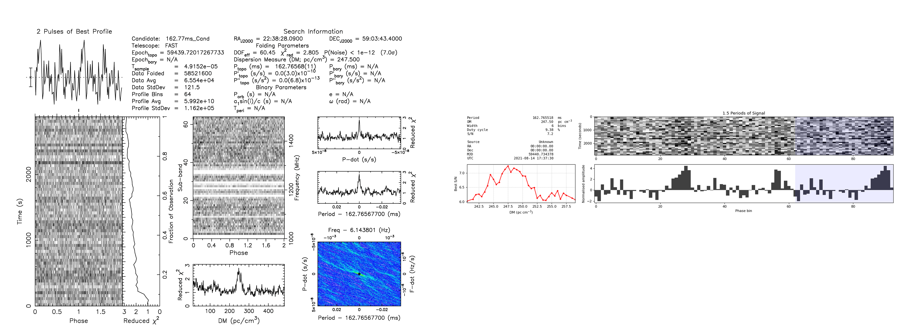
图注：FAST detection of PSR J2238+5903 confirmed by two independent search methods. Panel (a): PRESTO detection via FFT-based periodicity search, showing the folded pulse profile at \(P=162.76568(11)\) ms and DM \(=247.5\) pc cm\(^{-3}\) with S/N \(\approx7.0\). Panel (b): independent confirmation by the RIPTIDE Fast Folding Algorithm, recovering the same period and DM with S/N \(\approx7.2\). The combination of two independent search methods, together with the detection of a half-period harmonic (S/N\(\approx8.2\)), strongly supports the astrophysical origin of the pulsation.
对应解读：对应“建议重点查看的图表”中的折叠脉冲轮廓图、DM-信噪比/诊断、FFT 和 FFA 搜索诊断图，以及“关键图表逐图导读”中的图1、图2、图3和模型拟合段落的弱周期信号检测。
入选理由：这是全文最核心的探测证据图：同时给出 FAST 折叠脉冲轮廓、PRESTO/FFT 周期搜索和 RIPTIDE/FFA 独立确认，周期为 P=162.76568 ms、DM=247.5 pc cm^-3，直接支撑射电脉冲首次发现、非零 DM 信号和与 Fermi-LAT 周期一致这几个关键结论。相比其他候选图，它最能验证该信号是否为真实天体脉冲而非 RFI 或算法偶然候选。
来源与置信度：\(arxiv_source\)；high；\(arxiv_source\) / 26070900.tex:figure[1]
Fig02
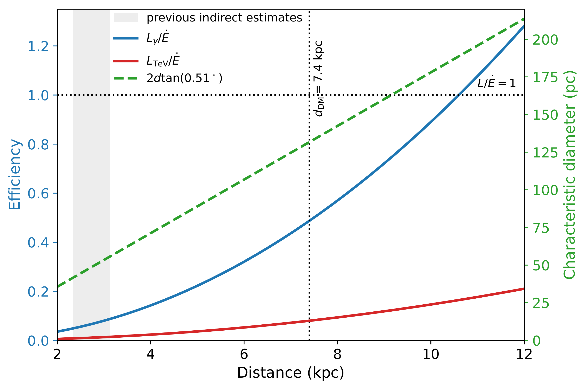
图注：Distance dependence of the inferred energetics and size of 1LHAASO J2238+5900. The solid curves show $L_\gamma/\dot{E}$ and $L_{\rm TeV}/\dot{E}$ for $f_\Omega=1$ and the WCDA spectral integration used here; the dashed curve shows the characteristic diameter $2d\tan(0.51^\circ)$(the KM2A scale is $2d\tan(0.43^\circ)$ $\simeq$ 111pc). The shaded band marks the range of previous indirect estimates (2.35–3.12 kpc), while the vertical dotted line marks the adopted DM-based distance. The high-distance tail of the DM estimate would imply a very high GeV efficiency, illustrating why a geometric parallax or phase-connected timing solution remains important.
对应解读：对应“建议重点查看的图表”中的距离转换、TeV luminosity 与自转能损率比较、尺度比较图，以及“关键图表逐图导读”中的图5和模型拟合段落的 DM 距离到高能物理量推导。
入选理由：这张图直接展示距离变化如何影响 1LHAASO J2238+5900 的物理直径和 \(L_gamma/dotE\)、\(L_TeV/dotE\) 等效率量，并标出 DM 距离与既有间接距离范围。它是把 FAST 测得的 DM 距离锚转化为 TeV halo/PWN 物理解释的关键图，能帮助读者看清 d、L∝\(d^2\) 和尺寸∝d 的系统不确定性。
来源与置信度：\(arxiv_source\)；high；\(arxiv_source\) / 26070900.tex:figure[2]
强相关工作
同一事件/同一源层面，应把本文与 LHAASO 源表、Fermi-LAT 脉冲星目录、以及后续可能针对 1LHAASO J2238+5900 的 X 射线或 TeV 形态研究放在一起读。检索关键词可用 “PSR J2238+5903”, “1LHAASO J2238+5900”, “LHAASO TeV halo”, “Fermi gamma-ray pulsar radio faint”, “FAST radio pulsation microJy”。目前本文的特殊性是给该候选 TeV halo/PWN 系统提供了源特异性的 \(\mathrm{DM}\) 距离，而不仅是目录中的角关联。
同类源层面，Geminga 和 Monogem 的 HAWC 扩展 TeV halo 是最常被引用的原型；年轻或中年脉冲星周围的 HESS、HAWC、LHAASO 扩展源则提供了 PWN 到 halo 演化的比较样本。相反观点主要包括：扩展 TeV 发射可能来自强子宇宙线照亮附近分子云，或来自多个未分辨源的混合，而不一定是单个脉冲星供能。要检验这些替代解释，需要气体分布、GeV-TeV 连续能谱、X 射线 PWN 搜索和更高角分辨率 TeV 观测。
基础理论方面，\(\mathrm{DM}\) 距离应联系 NE2001 和 YMW16 银河自由电子模型阅读；TeV halo 的粒子传播应联系扩散-损失方程、逆康普顿辐射和同步辐射约束。检索关键词可用 “NE2001 electron density model”, “YMW16 Galactic electron density”, “pulsar TeV halo diffusion coefficient”, “PWN relic TeV emission”。
同一事件 / 同类源线索：
- https://arxiv.org/abs/2607.08596
- https://arxiv.org/pdf/2607.08596
- https://arxiv.org/abs/2305.17030
- https://arxiv.org/abs/2307.11132
相似工作：
基础理论 / 方法工作：
- https://arxiv.org/abs/astro-ph/0207156
- https://arxiv.org/abs/1610.09448
- https://arxiv.org/abs/0812.3931
相反观点 / 张力线索：
2. The 20 GeV Galactic Halo Excess: Pixel-Level Confirmation and Consistency with Sub-TeV WIMP Annihilation
- 来源：arXiv / astro-ph.HE
- 链接：https://arxiv.org/abs/2607.08552v1
- 作者：Trinity Rosebud Stenhouse, Chamkaur Ghag, Frank F. Deppisch
- 评分：novelty 8/10，importance 8/10，relevance 10/10，final 9.70/10
- 推荐理由：独立像素级确认Fermi-LAT 20 GeV Galactic halo excess并讨论亚TeV WIMP解释及矮星系张力，属于伽马射线暗物质重点主题。
中文题目：20 GeV 银河晕超额：像素级确认及其与亚 TeV WIMP 湮灭的一致性
做了什么：这篇文章重新检验了一个近期基于 15 年 Fermi-LAT 数据提出的现象：银河弥散伽马射线中存在一个近似球对称、延伸到高银纬、能谱在约 \(20\,\mathrm{GeV}\) 附近达到峰值的“银河晕超额”。作者先复现原先的按天区单元聚合分析，再进一步在原始 \(0.125^\circ\) 像素图上做似然分析，并加入能量相关点扩散函数前向折叠和亮源遮罩。结果显示，这个 \(20\,\mathrm{GeV}\) 晕成分在两种分析中都出现，像素级归一化比单元法高约 \(20\%\)。若解释为暗物质湮灭，\(W^+W^-\) 与 \(b\bar{b}\) 道分别给出约 \(0.55\,\mathrm{TeV}\) 和 \(0.72\,\mathrm{TeV}\) 的最佳质量，所需 \(s\)-波湮灭截面约 \(10^{-24}\,\mathrm{cm^3\,s^{-1}}\)，高于矮球星系限制但在前景和 \(J\)-因子系统误差下不一定被排除。
为什么重要：银河中心 GeV 超额长期受前景建模、点源未分辨和暗物质解释争议影响；这篇文章关注的不是传统内银河超额，而是一个高银纬、近球对称、峰值更高能的 \(20\,\mathrm{GeV}\) 晕状成分。如果这个结构真实存在，它会把暗物质间接探测的讨论从“银河中心附近的复杂前景”推向更大角尺度的银河晕，并迫使我们重新评估 Fermi-LAT 弥散模型、矮球星系限制和速度依赖湮灭模型之间的关系。
理论 / 观测 / 仪器方法价值：方法上，文章的价值在于把原先较粗的天区单元分析推进到原生像素级似然，并显式处理能量相关的点扩散函数前向折叠，这比只在平滑图或大区域内做模板拟合更接近仪器数据的统计结构。理论上，它给出了一条清楚的检验链：若该超额来自 \(s\)-波 WIMP 湮灭，则需要亚 TeV 质量和高于热遗迹值的有效湮灭率；若要同时满足矮球星系与遗迹丰度约束，则低速增强机制如 Sommerfeld 共振或 Breit-Wigner 共振成为更有竞争力但也更微调的方案。
为什么应该关注：你应该关注这篇文章，不是因为它已经证明了暗物质信号，而是因为它把一个可能很脆弱的弥散伽马射线异常放到了更严格的像素级统计框架下，并直接量化了与矮球星系、各向同性伽马背景和热遗迹丰度的冲突。对于做高能伽马射线、银河前景、暗物质间接探测或大尺度模板拟合的人来说，这篇文章提供了一个很好的压力测试案例：一个看起来形态上有吸引力的晕信号，究竟在系统误差、仪器响应和多信使约束下还能站住多少。
展开详细解读：文章讲解、背景、理论、重点章节、图表与相关工作
文章详细讲解
科学问题：文章要回答的是，Fermi-LAT 长时间积分数据中报告的 \(20\,\mathrm{GeV}\) 银河晕超额是否只是粗分区分析、前景模板或点源残差造成的假象，还是在更接近原始数据结构的像素级似然中仍能稳定出现。这里的“晕”不是传统银河中心 GeV 超额的简单重命名，而是一个高银纬、近似球对称、谱能量分布在 \(20\,\mathrm{GeV}\) 附近增强的扩展成分。其重要性在于，高银纬区域的气体和逆康普顿前景通常比内银河面简单一些；如果那里仍出现与暗物质晕形态相近的成分，解释空间会不同于单纯的内银河天体源群。
作者怎么做：他们首先复现近期的 cell-aggregated 分析，即把天空按较大天区单元聚合后拟合额外晕模板。随后，作者构建像素级似然，直接使用原生 \(0.125^\circ\) Fermi-LAT 计数图，在每个能量 bin 中比较模型计数和观测计数。关键改进包括：按能量处理 Fermi-LAT 点扩散函数，对模板做前向折叠；遮罩亮源，减少点源翼部和源建模不完备对弥散残差的污染；并测试不同 NFW 发射率标度 \(\rho^p\)，其中 \(p=1\)、\(2\)、\(2.5\) 分别近似追踪衰变、标准两体湮灭和更陡中心集中的情况。
关键结果：两种分析都重现了在 \(20\,\mathrm{GeV}\) 附近峰值明显的晕状谱形。像素级拟合给出的归一化系统性地比单元聚合拟合高约 \(20\%\)，但并没有改变谱峰位置和大尺度形态判断。作者强调该成分集中于银河晕、高银纬区域，并且具有中心集中趋势，因此不太像各向同性的河外背景误差。暗物质谱拟合方面，\(W^+W^-\) 末态给出 \(m_\chi\simeq0.55\,\mathrm{TeV}\)，\(b\bar{b}\) 末态给出 \(m_\chi\simeq0.72\,\mathrm{TeV}\)，所需 \(\langle\sigma v\rangle\simeq10^{-24}\,\mathrm{cm^3\,s^{-1}}\)。这比典型热遗迹值约高几十倍，也与矮球星系限制存在约 \(4\)--\(5\) 倍张力；但若同时考虑前景建模和矮球星系 \(J\)-因子系统误差，张力范围可扩展为 \(R\simeq1.6\)--\(9.3\)，并非绝对排除。
局限和下一步：最大的风险仍然是弥散前景建模。高银纬并不意味着没有系统误差，尤其是逆康普顿辐射、Fermi bubbles 边界、局域气体结构、未分辨源群和点扩散函数翼部都可能在大角尺度模板拟合中投影到近球对称成分上。粒子物理解释也不轻松：普通 \(s\)-波需要过大的当今湮灭截面；\(p\)-波无法同时给出正确遗迹丰度和当前银河晕信号；衰变虽可绕开矮球星系湮灭限制，却受到各向同性伽马背景制约。文章认为最可行的是低速增强湮灭，例如共振 Sommerfeld 或 Breit-Wigner 机制，但这需要增强峰值落在银河晕速度尺度上，同时在更冷的矮球星系中下降，因而带有明显调参性质。下一步应是用替代 Galactic diffuse emission models、不同事件类型、不同遮罩和独立工具链重复像素级分析，并与矮球星系、各向同性背景和反质子数据做联合检验。
关键结果是怎么做出来的
证据链的第一步是复现已有的 15 年 Fermi-LAT 分析。作者没有直接从粒子模型出发，而是先把天空中的残差成分作为空间模板来测量：在多个能量 bin 中加入一个随银河半径按 NFW 型密度或密度幂次投影的晕模板，然后看该模板的最佳归一化随能量如何变化。复现单元聚合分析很关键，因为它证明后续差异不是由于完全不同的数据选择或代码实现造成的。
第二步是像素级似然。这里每个 \(0.125^\circ\) 像素的计数都参与泊松似然，而不是先被平均到较大的 cell 中。对 Fermi-LAT 这类成像计数实验，像素级处理能保留空间梯度、遮罩边界和点源附近残差的信息。作者还在每个能量 bin 中对模型模板做点扩散函数前向折叠，这意味着比较的不是“真实天空模板”和观测图，而是“经过仪器响应模糊后的模板”和观测图。这个步骤对 \(\mathrm{GeV}\) 到几十 \(\mathrm{GeV}\) 的空间形态判断尤其重要。
最核心的经验结果是：无论取 \(p=1\)、\(p=2\) 还是 \(p=2.5\) 的 NFW 发射率标度，晕模板的谱形都在 \(20\,\mathrm{GeV}\) 附近出现峰值；像素级归一化相对单元法高约 \(20\%\)，但不是数量级变化。这说明该结论对空间模板陡峭度有一定稳定性，也说明粗分区没有凭空制造出峰值。不过，\(20\%\) 的归一化差异本身也是一个系统误差信号：它提示结果对空间权重、遮罩和残差结构仍然敏感。
暗物质拟合使用 prompt \(s\)-波湮灭谱，把测得的晕谱与不同末态的伽马射线产额比较。\(W^+W^-\) 和 \(b\bar{b}\) 给出的最佳质量分别在 \(0.55\,\mathrm{TeV}\) 和 \(0.72\,\mathrm{TeV}\) 附近，所需截面约为 \(10^{-24}\,\mathrm{cm^3\,s^{-1}}\)。从形态上，作者认为该成分中心集中，强烈不支持纯河外各向同性解释；从谱形上，亚 TeV WIMP 末态可以产生接近 \(20\,\mathrm{GeV}\) 的峰。
显著性与模型比较应重点看模板加入前后的似然改善、不同 \(p\) 值之间的相对偏好、以及与各向同性模板或内银河超额模板的可区分性。摘要没有给出完整数值显著性，因此读者阅读原文时应特别检查测试统计量 \(\mathrm{TS}\)、能量 bin 间协方差、look-elsewhere effect 是否处理、以及前景模板自由度是否足够。若显著性主要来自少数能量 bin 或少数天空区域，暗物质解释就会明显变弱。
系统误差方面，作者讨论了前景建模和 \(J\)-因子不确定性如何把与矮球星系的张力从约 \(4\)--\(5\) 倍扩展到 \(R\simeq1.6\)--\(9.3\)。这不是说矮球星系限制消失，而是说“同一截面在银河晕和矮球星系中是否必然相同”取决于速度结构、密度归一化和系统误差。文章最后比较 \(s\)-波、\(p\)-波、衰变和低速增强模型，认为只有带速度选择性的共振增强有机会同时满足银河晕信号、矮球星系限制和热遗迹丰度，但代价是共振必须精细落在特定速度区间。
展开背景、理论、公式、模型、章节和图表导读
背景知识
研究对象是 Fermi-LAT 观测到的银河弥散伽马射线。弥散辐射包含宇宙线质子与气体相互作用产生的 \(\pi^0\) 衰变伽马射线、宇宙线电子的轫致辐射、电子与星光或微波背景的逆康普顿辐射、各向同性河外背景，以及大量未分辨点源。任何声称发现额外晕状成分的工作，都必须在这些成分的空间形态和能谱退化中寻找稳定残差。
历史上，最著名的相关异常是银河中心 GeV 超额，即内几度到十几度范围内、能量在数 \(\mathrm{GeV}\) 附近增强的伽马射线信号。它曾被解释为几十 \(\mathrm{GeV}\) WIMP 湮灭，也被解释为未分辨毫秒脉冲星、宇宙线注入历史或弥散模型不足。本文讨论的 \(20\,\mathrm{GeV}\) 晕超额在能量、角尺度和银纬分布上都不同，因此不能简单套用银河中心超额的结论。
为什么现在值得重新看？一方面，Fermi-LAT 已经积累超过十年的全天数据，高能段的统计显著改善；另一方面，仪器响应、点源目录和弥散模型也比早期成熟。长时间基线使得高银纬弱弥散结构更容易被看到，但也使微小的响应误差、源遮罩选择和前景模板误差更容易积累成高显著性残差。因此，像素级似然和响应前向折叠不仅是技术细节，而是判断信号真伪的核心。
一个常见误区是：只要残差近似球对称，就说明它像暗物质。实际上，Fermi bubbles、局域气泡、逆康普顿 halo、未分辨活动星系核或点源遮罩不完备，都可能在某些投影下产生近似球对称或双极结构。另一个误区是：矮球星系限制可以一票否决所有银河晕暗物质解释。若湮灭截面速度依赖、\(J\)-因子系统误差大，或目标速度分布不同，银河晕与矮球星系的比较就不再是简单的同一 \(\langle\sigma v\rangle\) 数值对比。
本文的粒子物理背景也值得注意。热 WIMP 的标准遗迹截面约为几 \(10^{-26}\,\mathrm{cm^3\,s^{-1}}\)，而本文所需当今截面约为 \(10^{-24}\,\mathrm{cm^3\,s^{-1}}\)。这意味着若采用普通速度无关 \(s\)-波模型，就会面临遗迹丰度或其他间接探测限制的压力。因此作者讨论了 \(p\)-波、衰变、Sommerfeld 增强和 Breit-Wigner 共振等替代机制。
基础理论 / 方法脉络
基本物理图像是：若银河晕中存在暗物质粒子 \(\chi\)，两体湮灭产生标准模型粒子，后者级联或强子化后产生伽马射线。湮灭信号的空间亮度与暗物质密度平方 \(\rho^2\) 的视线积分成正比；衰变信号则与 \(\rho\) 成正比。本文更一般地用 \(\rho^p\) 来测试空间形态，其中 \(p=1\) 类似衰变，\(p=2\) 类似普通湮灭，\(p=2.5\) 表示更中心集中的经验形态。
观测上，Fermi-LAT 记录的是能量和方向重建后的光子计数。理论模板不能直接与计数图比较，必须经过曝光、能量响应和点扩散函数卷积。本文特别强调能量相关点扩散函数前向折叠，因为低能光子方向重建较差，点源和尖锐空间结构会被抹宽；在 \(20\,\mathrm{GeV}\) 附近虽然点扩散函数已较好，但对亮源遮罩边界和中心集中特征仍有影响。
统计方法的核心是泊松计数似然。每个像素和能量 bin 的观测计数 \(n_{ij}\) 与模型期望计数 \(\mu_{ij}\) 比较，\(\mu_{ij}\) 是多个模板的线性组合，包括已知弥散成分、点源、各向同性背景和额外晕模板。若加入晕模板显著改善似然，并且其归一化随能量形成稳定谱峰，就可称为一个候选超额。但这并不自动等同于新物理，因为模板之间存在强退化。
本文的暗物质拟合还涉及谱形。给定末态如 \(W^+W^-\) 或 \(b\bar{b}\)，每次湮灭产生的伽马射线谱 \(dN_\gamma/dE\) 由粒子物理决定；质量 \(m_\chi\) 控制谱的截止和峰位，截面 \(\langle\sigma v\rangle\) 控制归一化。亚 TeV 质量的强子或规范玻色子末态自然能在几十 \(\mathrm{GeV}\) 附近给出 \(E^2 dN/dE\) 的宽峰，因此与 \(20\,\mathrm{GeV}\) 晕谱相容。
主要退化包括：NFW 内斜率与晕模板归一化的退化，逆康普顿模板与暗物质晕模板的空间退化，各向同性背景与高银纬宽结构的退化，以及点源遮罩大小与晕归一化的退化。系统误差还来自 Fermi-LAT 有效面积、能量刻度、点源目录完整性、气体柱密度图和宇宙线传播模型。读者应把本文结果理解为一个在特定建模框架下稳定的候选残差，而不是独立于前景模型的直接观测量。
公式与推导
第一步，从湮灭率密度出发。若暗物质粒子质量为 \(m_\chi\)、质量密度为 \(\rho(\mathbf{r})\)，数密度为 \(n_\chi=\rho/m_\chi\)。自共轭粒子的单位体积湮灭率为
这里 \(\langle\sigma v\rangle\) 是速度平均湮灭截面，因子 \(1/2\) 避免双计数粒子对；这是标准 \(s\)-波湮灭通量公式的起点。
第二步，把源项投影到视线方向。每单位能量、面积、时间、立体角的 prompt 伽马射线通量为
其中 \(dN_\gamma/dE\) 是每次湮灭的光子产额，\(\psi\) 是与银河中心的夹角，\(J(\psi)\) 是视线积分因子。
第三步，定义本文使用的广义空间标度。标准湮灭对应
而文章也比较更一般的
这里 \(s\) 是视线距离，\(r(s,\psi)\) 是到银河中心的三维半径；\(p\) 越大，模板越中心集中。
第四步，常用 NFW 密度剖面可写为
其中 \(\rho_s\) 和 \(r_s\) 分别是特征密度与尺度半径。这个形式在小半径近似 \(\rho\propto r^{-1}\)，大半径近似 \(\rho\propto r^{-3}\)，因此能产生中心集中的投影亮度。
第五步，连接到 Fermi-LAT 计数图。对能量 bin \(a\) 和像素 \(i\)，模型期望计数可写作
其中 \(T_{kia}\) 是第 \(k\) 个天空模板，\(A_{ka}\) 是其能量 bin 归一化，\(\mathcal{P}_a\) 是能量相关点扩散函数，\(\mathcal{E}_{ia}\) 是曝光，\(B_{ia}\) 表示固定或额外背景项。本文的像素级分析本质上就是在这个层面拟合 \(A_{ka}\)。
第六步，像素计数服从泊松分布，对数似然为
其中 \(n_{ia}\) 是观测计数。加入晕模板后若 \(\ln\mathcal{L}\) 明显增加，就说明该模板解释了数据中某些空间和能谱结构。
第七步，常用测试统计量可写为
其中 \(\mathcal{L}_{\rm halo}\) 是包含额外晕模板的最大似然，\(\mathcal{L}_{\rm null}\) 是不包含该模板的最大似然。在理想正则条件下，\(\sqrt{\mathrm{TS}}\) 可近似对应单参数显著性，但边界条件、模板搜索和系统误差会破坏这个简单解释。
第八步，用测得的通量反推截面。若某一能区和天区内测得积分通量 \(\Phi_\gamma\)，则近似有
其中 \(N_\gamma=\int_{E_1}^{E_2}(dN_\gamma/dE)\,dE\)。这个式子说明为什么 \(J\)-因子系统误差会直接线性传递到 \(\langle\sigma v\rangle\)。
第九步，比较热遗迹与当前信号时，可定义增强因子
其中 \(\langle\sigma v\rangle_{\rm th}\approx 3\times10^{-26}\,\mathrm{cm^3\,s^{-1}}\)。本文所需 \(B\) 约为几十，因而普通速度无关 \(s\)-波模型会受到压力。
第十步，速度依赖模型可形式化写为
其中 \(S(v)\) 是 Sommerfeld 或 Breit-Wigner 型增强因子。若 \(S(v)\) 在银河晕速度尺度上较大、在矮球星系更低速度处反而较小，就可能缓解矮球星系限制；但这要求共振位置和宽度被精细调节。
模型拟合 / 应用方法
本文的拟合可以分成两层。第一层是天文模板拟合：在每个能量 bin 中，用弥散前景、点源、各向同性背景和额外晕模板的线性组合拟合 Fermi-LAT 计数图。拟合量主要是各模板归一化，尤其是晕模板归一化随能量的变化。单元聚合法相当于降低空间自由度后拟合平均计数；像素级法则保留每个 \(0.125^\circ\) 像素的泊松统计信息。
第二层是粒子物理谱拟合：把第一层得到的晕谱与不同暗物质末态的 prompt 伽马谱比较，拟合 \(m_\chi\) 和 \(\langle\sigma v\rangle\)。这里 \(m_\chi\) 主要由谱峰位置和高能截止约束，\(\langle\sigma v\rangle\) 主要由通量归一化和 \(J\)-因子决定。\(W^+W^-\) 与 \(b\bar{b}\) 谱形相似但不完全相同，因此最佳质量分别落在 \(0.55\,\mathrm{TeV}\) 和 \(0.72\,\mathrm{TeV}\) 附近。
似然诊断应重点看残差图和谱残差，而不只是最佳拟合曲线。若加入晕模板后，高银纬大尺度残差显著减少，并且不同能量 bin 的残差没有呈现明显的前景模板形态，则支持额外成分解释。相反，如果改善主要集中在 Fermi bubbles 边缘、银河面遮罩边界或亮源周围，那么晕模板可能只是在吸收前景或点源建模错误。
参数退化是这类工作的核心难点。晕模板归一化与逆康普顿模板、各向同性背景和未分辨源群都有退化；\(p\) 值或 NFW 内斜率与归一化退化；\(J\)-因子与 \(\langle\sigma v\rangle\) 线性退化；粒子末态与质量之间也存在谱形退化。本文报告像素级归一化比单元法高约 \(20\%\)，这提示统计处理方式本身会移动归一化，因而模型比较时不能只引用统计误差。
系统误差包括 Galactic diffuse emission model 的选择、气体图和宇宙线传播参数、Fermi-LAT 有效面积、PSF 建模、能量分辨率、点源遮罩半径、源目录阈值和天区选择。实际应用中，最有说服力的结果应当在多套前景模型、多种事件类、多种遮罩和不同 \(p\) 值下保持谱峰和空间形态稳定。本文已经做了部分稳健性推进，但最终是否能称为暗物质证据，仍取决于更广泛的独立复现和联合约束。
重点章节 / 结果段落怎么读
数据与复现部分应先读。这里读者需要确认作者使用的 Fermi-LAT 时间跨度、能量范围、天区选择、事件类、点源目录和遮罩策略是否与被复现研究一致。复现 cell-aggregated 结果是后续像素级分析可信度的基础；如果复现阶段已有明显偏差，后面所有解释都要重新评估。
像素级似然方法部分是全文技术核心。重点看作者如何从 \(0.125^\circ\) 原生图构造 \(\mu_{ia}\)，如何处理曝光、PSF 前向折叠、亮源遮罩和模板归一化。特别要看 PSF 是否逐能量 bin 处理，以及遮罩区域是否从似然中完全移除还是以其他方式处理。
晕谱与空间模板结果部分应结合图表阅读。读者要比较 \(p=1\)、\(p=2\)、\(p=2.5\) 三种形态下的最佳归一化和谱峰位置，检查 \(20\,\mathrm{GeV}\) 峰是否由某一种模板假设驱动。还要看像素级结果比单元法高约 \(20\%\) 是否在所有能区都成立，还是只在峰附近明显。
暗物质解释部分要关注谱拟合和外部约束。这里应检查 \(W^+W^-\) 与 \(b\bar{b}\) 末态的最佳拟合曲线、置信区间、与矮球星系上限的相对位置，以及前景和 \(J\)-因子系统误差如何进入张力因子 \(R\)。不要只看最佳点是否落入某条限制线以下，而要看误差预算是否一致。
讨论和模型替代部分给出本文的物理判断。作者排除了或弱化了 \(p\)-波、衰变等解释，转而强调低速增强湮灭的可能性。读者应重点判断这里的论证是定量模型拟合，还是基于标度关系的可行性讨论；若是后者，后续仍需完整粒子模型和宇宙学约束检验。
建议重点查看的图表
-
全天或高银纬残差图：看加入晕模板前后，残差是否从近球对称结构变为噪声状；特别检查银河面遮罩边缘、Fermi bubbles 边界和亮源附近是否仍有结构。
-
晕模板谱能量分布图：看 \(E^2 d\Phi/dE\) 或等效归一化是否在 \(20\,\mathrm{GeV}\) 附近形成宽峰；检查误差条、能量 bin 相关性和低高能端是否有系统偏移。
-
单元聚合法与像素级法对比图：看两种方法的谱形是否一致，以及像素级归一化高约 \(20\%\) 是否为全能段平移还是局部变化。
-
不同 \(\rho^p\) 模板结果图：比较 \(p=1\)、\(p=2\)、\(p=2.5\) 的似然和谱形，判断信号更像衰变、标准湮灭还是更陡中心集中模板。
-
暗物质末态拟合图：看 \(W^+W^-\) 和 \(b\bar{b}\) 的最佳谱线是否同时匹配峰值、低能斜率和高能截止；检查置信带而不是只看最佳曲线。
-
与矮球星系限制对比图：看本文最佳 \(\langle\sigma v\rangle\) 与 Fermi-LAT dwarf 上限的距离，并检查系统误差带如何把张力从固定倍数扩展为 \(R\simeq1.6\)--\(9.3\)。
-
速度依赖增强示意或参数图：若论文给出 Sommerfeld 或 Breit-Wigner 区域，应看增强峰是否真的位于银河晕速度而避开矮球星系速度区间。
关键图表逐图导读
图 1：通常应是数据区域、遮罩或残差的空间图。横纵轴多为银河经纬度，颜色表示计数、模型或残差强度。读图时不要只看中心是否亮，而要看高银纬是否有连续、近球对称的结构，以及亮源遮罩边缘是否产生环状或斑块状伪迹。若残差沿银河面或 Fermi bubbles 边界增强，暗物质晕解释会变弱。
图 2：应重点关注晕模板的谱。横轴是能量，纵轴可能是模板归一化、通量或 \(E^2 d\Phi/dE\)。数据点代表逐能量 bin 拟合得到的晕成分，误差条代表统计或统计加部分系统误差，模型线可能是暗物质末态谱。关键结论是峰值是否稳定在 \(20\,\mathrm{GeV}\) 附近；读图陷阱是忽略能量 bin 间协方差，把每个点当作独立测量。
图 3：单元聚合分析与像素级分析的对比图。横轴仍为能量，纵轴为晕模板强度或通量。若像素级曲线整体高约 \(20\%\)，但谱形一致，说明方法改变影响归一化多于影响峰位。若差异只在某些能区或某些天区出现，则可能指向 PSF、遮罩或点源残差的系统误差。
图 4：不同 NFW 幂次 \(p\) 的模板比较图。坐标可能是能量谱，也可能是似然改善随 \(p\) 的变化。模型线对应 \(p=1\)、\(p=2\)、\(p=2.5\)。读者应看是否存在明显偏好的中心集中度；如果所有 \(p\) 都能拟合，说明谱峰稳健但空间形态对粒子解释的区分力有限。
图 5：暗物质参数平面图。横轴通常为 \(m_\chi\)，纵轴为 \(\langle\sigma v\rangle\)，彩色区域或等高线表示本文晕超额的置信区间，曲线表示矮球星系上限或热遗迹参考截面。关键是最佳点相对 dwarf 限制的位置；读图陷阱是把系统误差带当作统计置信区间，或忽略不同 \(J\)-因子假设下限制线会移动。
图 6：替代暗物质机制或速度增强图。横轴可能是相对速度、共振质量差或模型参数，纵轴是增强因子 \(S(v)\) 或有效 \(\langle\sigma v\rangle\)。应检查银河晕速度、矮球星系速度和冻结退耦速度是否被同时标出。若增强峰很窄，模型可行但微调严重；若增强在矮球星系速度也很大，则不能缓解 dwarf 张力。
论文原图 / 可嵌入图片
Fig01
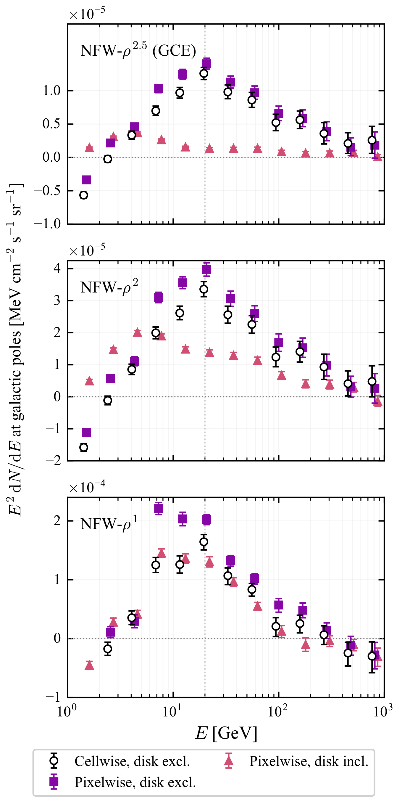
图注：Comparison of the halo spectra recovered in the Totani-style cellwise fit (disk-excluded) and in the global pixel-level fit, the latter shown both with and without the Galactic disk included in the fit. The three panels show the NFW halo templates with emissivity scalings $\rho^{2.5}$, $\rho^2$, and $\rho^1$. The disk-excluded global pixel-level fit uses the same high-latitude signal extraction convention as the cellwise analysis, but evaluates the likelihood directly on the $0.125\degree$ pixels with PSF-forwarded templates and bright-source masking. The persistence of the same broad spectral feature indicates that the halo-like component is not an artefact of the $10\degree$ cell aggregation. Changes between the disk-excluded and disk-included curves illustrate the residual degeneracy between the halo and low-latitude diffuse templates. Error bars are statistical, from the MCMC posterior; the foreground-modelling systematics are treated separately in Sec.~\(\ref{sec:systematics}.\)
对应解读：对应“建议重点查看的图表”第2、3、4项，以及“关键图表逐图导读”中图2、图3、图4关于晕模板谱、单元聚合法与像素级法对比、不同ρ^p模板的讨论。
入选理由：这是全文最核心的确认图：同一张图同时给出cellwise与pixel-level拟合的晕谱，并分ρ^{2.5}、ρ^2、ρ^1三个面板展示不同空间模板。它直接检验20 GeV宽峰是否在像素级似然中仍存在、像素级归一化是否整体高于单元法，以及谱形是否随NFW幂次保持稳健，比单独的诊断图更能支撑日报的主结论。
来源与置信度：\(arxiv_source\)；high；\(arxiv_source\) / main.tex:figure[1]
Fig04
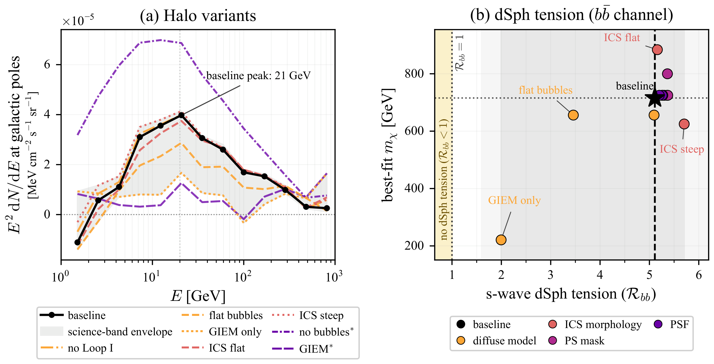
图注：Systematic stability of the $\rho^2$ halo. \(\emph{(a)}\) Recovered halo spectrum across the foreground-systematics suite: baseline (black), the science-band envelope (grey), the variants that move it most (GALPROP$\to$GIEM-only, flat bubbles, no Loop~I) and the ICS/ISRF-morphology variants (ICS flat, ICS steep). The point-source-mask and PSF variants overlie the baseline and are not drawn separately. The two stress tests (no bubbles, GIEM) are shown for reference but excluded from the band as they double-count large-scale residuals. \(\emph{(b)}\) Best-fit $b\bar b$ annihilation mass versus $s$-wave dSph tension, $\mathcal{R}_{bb}$, for each budget variant. The baseline (star) sits at $\mathcal{R}_{bb}\simeq5.1$, $m_\chi\simeq716$~GeV. The tension is driven almost entirely by the diffuse model choice (the GIEM-only variant reaches $\mathcal{R}_{bb}\simeq2.0$), while ICS morphology, masking and PSF shift it by $\lesssim10\%$. The darker grey band marks the foreground-modelling spread, the same science-band envelope shown in panel (a). The lighter band extends this to $\mathcal{R}_{bb}\simeq1.6$--$9.3$ once the halo- and dwarf-$J$-factor uncertainties are folded in (Sec.~\ref{sec:tension}). Velocity-independent tension vanishes only at $\mathcal{R}_{bb}<1$ (yellow).
对应解读：对应“建议重点查看的图表”第2、6项，以及“模型拟合”中关于前景建模系统误差、J因子系统误差和dSph张力R≈1.6--9.3的段落。
入选理由：该图把ρ^2晕谱的前景系统误差包络和b\bar b末态的矮球星系张力放在一起，是判断结论稳健性的关键。它不仅显示20 GeV谱峰在不同foreground变体下的稳定程度，还直接给出基线R≈5.1以及加入前景和J因子系统误差后扩展到R≈1.6--9.3的范围，精确对应日报中最重要的系统误差解读。
来源与置信度：\(arxiv_source\)；high；\(arxiv_source\) / main.tex:figure[4]
Fig05
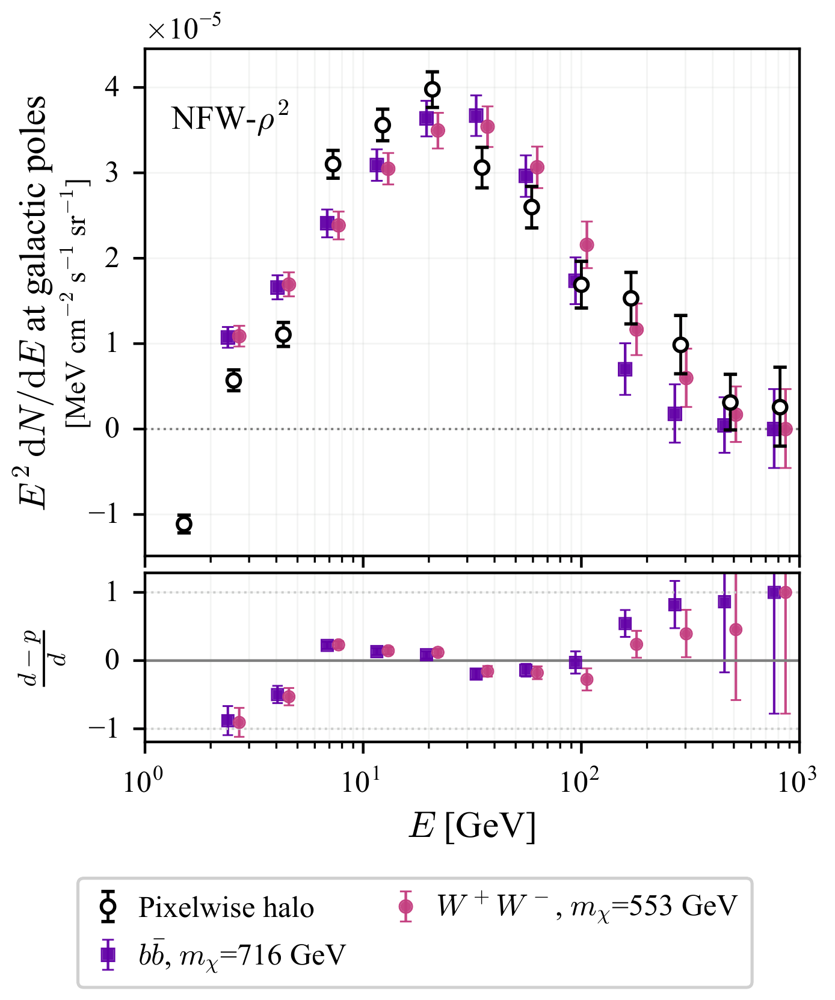
图注：Spectral fits of prompt PPPC annihilation models to the pixelwise (disk-excluded) $\rho^2$ halo spectrum. The upper panel shows the extracted halo spectrum together with the best-fitting $W^+W^-$ and $b\bar b$ annihilation spectra, each fitted with a single normalisation. The lower panel shows the residuals relative to the best-fitting spectra. These fits test spectral compatibility only as the PPPC templates are not refitted spatially at each mass. Error bars are statistical, from the MCMC posterior and do not include the foreground-modelling systematics (Sec.~\ref{sec:systematics}), which dominate the goodness of fit ($\chi^2/\nu\sim8$).
对应解读：对应“建议重点查看的图表”第5项，以及“关键图表逐图导读”中暗物质末态拟合和“模型拟合”第二层粒子物理谱拟合段落。
入选理由：该图直接展示pixelwise、disk-excluded、ρ^2晕谱与W^+W^-和b\bar b prompt湮灭谱的最佳拟合，并包含残差面板。它能检验模型是否同时匹配20 GeV峰、低能斜率和高能端，而不是只给出最佳质量和截面的数字，因此比单纯参数表更适合日报逐图解读。
来源与置信度：\(arxiv_source\)；high；\(arxiv_source\) / main.tex:figure[5]
Fig06
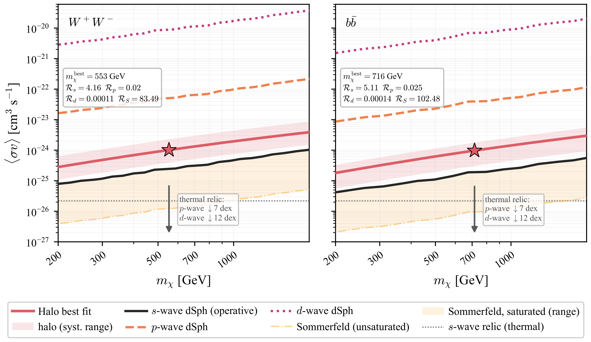
图注：Velocity-dependent dSph tension comparison for the global $\rho^2$ halo best fit, in the $W^+W^-$ (left) and $b\bar b$ (right) channels. The halo best-fit cross section $\langle\sigma v\rangle(m_\chi)$ (red solid) is shown with its systematic normalisation band, corresponding to $\mathcal{R}\simeq1.6$--$9.3$ (Sec.~\(\ref{sec:tension},\) Fig.~\ref{fig:systematics}), whose lower edge approaches the operative $s$-wave limit ($\mathcal{R}\simeq1.6$). The best-fit mass is marked by a star ($m_\chi\simeq0.55$~TeV for $W^+W^-$, $0.72$~TeV for $b\bar b$). Dwarf-spheroidal upper limits are shown for four velocity laws: the $s$-wave limit of Hoof et al.~\(\cite{Hoof2020}\) (black solid) and the $p$-wave (dashed), $d$-wave (dotted) and Sommerfeld effective-$J$-factor limits of Boddy et al.~\(\cite{Boddy2019,Boddy2017}.\) The unsaturated Coulomb-limit Sommerfeld curve (faint dash-dot) is the most constrained, limiting case, however, the $1/v$ enhancement saturates below a critical velocity, so the physical saturated Sommerfeld limit lies in the shaded band between that curve and the $s$-wave curve (reached at full saturation). The black $s$-wave curve is therefore the operative dSph limit for the surviving resonant-Sommerfeld interpretation. The tension $\mathcal{R}=(\sigma v)_0^{\rm halo}/(\sigma v)_{\rm dSph}^{\rm UL}$ at the best-fit mass is annotated for each law, with $\mathcal{R}_S$ the unsaturated Coulomb-limit value rather than the operative (saturated) one. The horizontal grey dotted line marks the canonical thermal $s$-wave relic cross section, $\langle\sigma v\rangle_{\rm th}\simeq2.2\times10^{-26}\,\mathrm{cm^3\,s^{-1}}$. The downward arrow gives the present-day halo rate that a thermal relic of each velocity-suppressed law would produce with its coupling fixed at freeze-out ($p$-wave and $d$-wave lie ${\sim}7$ and ${\sim}12$ dex below, respectively).
对应解读：对应“建议重点查看的图表”第6、7项，以及“关键图表逐图导读”中图5、图6关于dwarf限制、速度依赖增强、热遗迹截面的讨论。
入选理由：该图在W^+W^-和b\bar b两个通道中比较本文晕最佳截面、系统归一化带、矮球星系上限、s波/p波/d波/Sommerfeld速度律以及热遗迹截面，是解释为什么普通s波有张力、p波失败、低速增强机制仍可能存活的关键图。它直接支撑日报关于速度依赖模型和dSph张力的结论。
来源与置信度：\(arxiv_source\)；high；\(arxiv_source\) / main.tex:figure[6]
Fig03
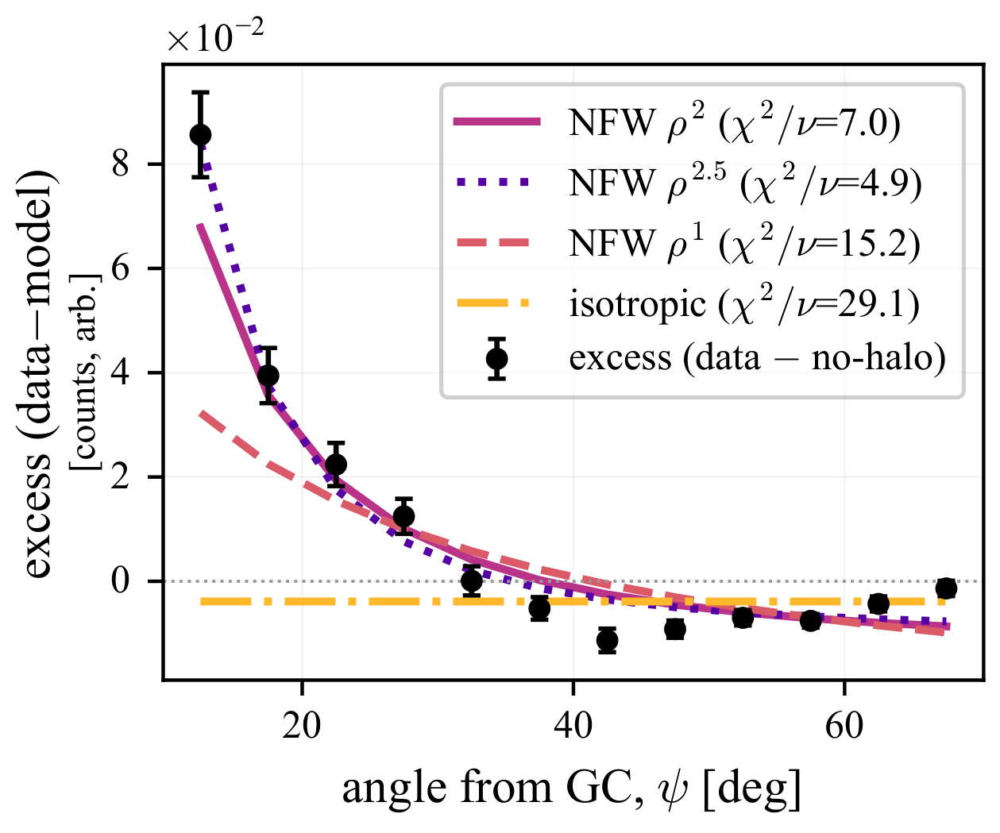
图注：Model-independent angular profile of the 20 GeV excess. Points: the residual of the disk-excluded, no-halo global pixel-level fit (data $-$ conventional model, with the isotropic component free), summed over $10$--$40$~GeV and averaged in rings of angle $\psi$ from the Galactic centre over the high-latitude ROI ($|\ell|\le60\degree$, $10\degree\le|b|\le60\degree$). Curves: line-of-sight predictions for NFW $\rho^{2}$, $\rho^{2.5}$, $\rho^{1}$ and an isotropic component, each fit to the rings with a single amplitude and an offset (the latter absorbed by the free isotropic term). The excess falls off steeply with angle from the Galactic centre. A centrally-concentrated NFW morphology is strongly preferred over isotropic emission ($\chi^2/\nu\simeq5$--$7$ versus $30$), although no profile is a formally good fit, reflecting the same coherent diffuse residuals that drive $\chi^2/\nu\sim8$ in the spectral fit.
对应解读：对应“建议重点查看的图表”第1、4项，以及“关键图表逐图导读”中关于空间形态、高银纬近球对称结构、中心集中度和各向同性背景排除的讨论。
入选理由：该图给出10--40 GeV超额随距银心角ψ的模型无关角向剖面，并与ρ^2、ρ^{2.5}、ρ^1和isotropic曲线比较。它是证明该信号更像中心集中的银河晕而非各向同性河外背景的主要空间诊断，补足了谱图无法说明空间形态的不足。
来源与置信度：\(arxiv_source\)；high；\(arxiv_source\) / main.tex:figure[3]
Fig02
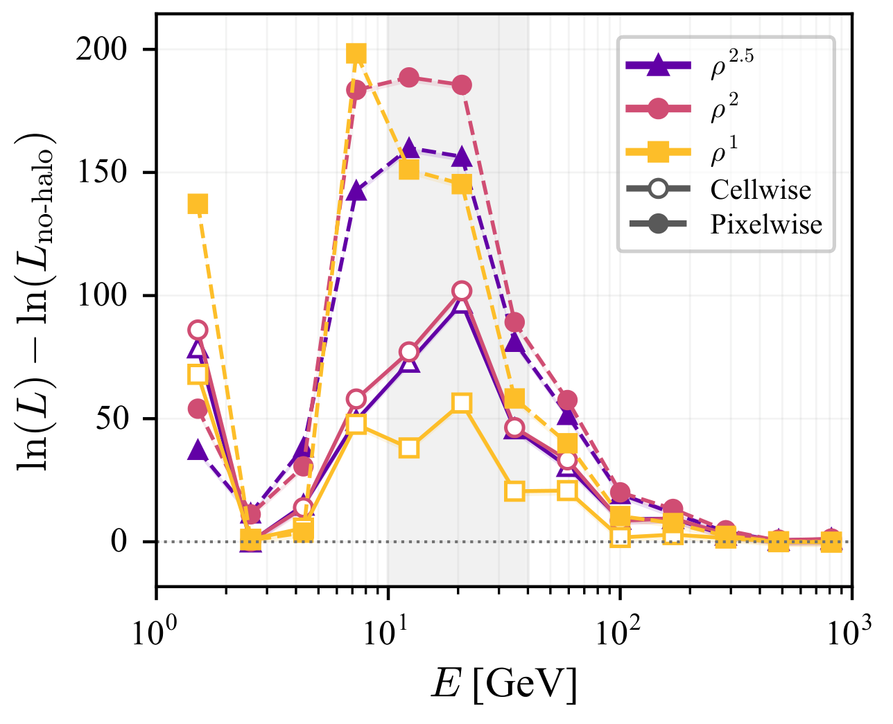
图注：Per-energy-bin log-likelihood improvement from adding an NFW halo template to the no-halo structured-bubble baseline. The figure compares the Totani-style cellwise analysis with the global pixel-level fit for the different halo morphologies. The likelihood gain is concentrated in the same energy range as the recovered halo spectrum (the signal band, highlighted in grey), providing a template-level diagnostic of the preference for an additional halo-like component. The values should be interpreted as likelihood diagnostics rather than standalone discovery significances, since the diffuse templates are correlated and the diffuse model is not a complete description of the emission.
对应解读：对应“建议重点查看的图表”第3、4项，以及“模型拟合”中关于加入晕模板后的似然改善和不同模板形态诊断的段落。
入选理由：该图展示逐能量bin加入NFW晕模板后的log-likelihood improvement，并比较cellwise与pixel-level以及不同晕形态。它能验证似然增益是否集中在20 GeV信号能段，是对Fig01谱峰的统计诊断补充；虽然作者提醒不能当作独立发现显著性，但对判断模板偏好仍有较高科学价值。
来源与置信度：\(arxiv_source\)；high；\(arxiv_source\) / main.tex:figure[2]
强相关工作
这篇工作直接处在 Fermi-LAT 弥散伽马射线异常和暗物质间接探测的交界处。应把它与三类文献一起读：第一类是银河中心 GeV 超额的模板拟合与毫秒脉冲星解释文献，例如 Daylan 等、Calore 等及后续非泊松模板拟合工作；第二类是 Fermi-LAT 矮球星系联合限制，它决定了 \(\langle\sigma v\rangle\sim10^{-24}\,\mathrm{cm^3\,s^{-1}}\) 是否可接受；第三类是各向同性伽马背景和河外暗物质湮灭或衰变限制，它对衰变解释尤其关键。
同类或相反观点方面，读者应检索关键词：“Fermi-LAT 20 GeV halo excess”、“Galactic halo gamma-ray excess”、“NFW template high latitude Fermi”、“Fermi bubbles inverse Compton foreground systematics”、“dwarf spheroidal gamma-ray limits WIMP”。如果要追踪粒子模型，则应检索：“Sommerfeld enhanced annihilation dwarf spheroidal tension”、“Breit-Wigner dark matter annihilation gamma rays”、“velocity dependent annihilation indirect detection”。当前最需要的不是更多最佳拟合点，而是独立团队使用不同前景模型和不同 Fermi-LAT 数据选择复现同一高银纬谱峰。
同一事件 / 同类源线索：
相似工作：
基础理论 / 方法工作：
- https://arxiv.org/abs/astro-ph/9508025
- https://arxiv.org/abs/1008.1783
- https://arxiv.org/abs/0902.1089
相反观点 / 张力线索：
3. Development of a Raman Lidar for the Southern Site of the Cherenkov Telescope Array Observatory
- 来源：arXiv / astro-ph.IM
- 链接：https://arxiv.org/abs/2607.08289v1
- 作者：Patrick Brun, Omar Gabella, Stephane Rivoire, George Vasileiadis
- 评分：novelty 7/10，importance 8/10，relevance 10/10，final 9.40/10
- 推荐理由：CTAO南站Raman Lidar大气监测系统，直接影响IACT能量和通量重建精度，符合CTA/大气切伦科夫仪器重点。
中文题目：面向 CTAO 南站的拉曼激光雷达研制
做了什么：这篇仪器论文介绍了为切伦科夫望远镜阵列天文台南站设计的 LUPM 拉曼激光雷达，并用法国 OHP 天文台两年测试数据验证其性能。核心目标是测量大气消光系数、后向散射系数和雷达比，尤其是在接近切伦科夫光谱响应的 \(355\,\mathrm{nm}\) 与 \(532\,\mathrm{nm}\) 波段，从而减少大气透明度不确定性对 CTAO 伽马射线能谱和通量重建的影响。论文的主要结论是：原型系统能够给出符合 CTAO 需求的垂直廓线产品，并能在实际观测条件下估计气溶胶消光、后向散射和雷达比。
为什么重要：CTAO 的能量阈值、能量分辨率和通量系统误差都直接依赖大气透过率。成像大气切伦科夫望远镜不是在探测原初伽马光子，而是在探测大气级联产生的纳秒级切伦科夫光；因此，大气本身是探测器的一部分。若气溶胶层、薄云或分子廓线没有被正确建模，重建的 \(E\)、\(dN/dE\) 和源的变光行为都会产生偏差。这篇文章的重要性在于，它把“实时大气定标”从辅助监测提升为 CTAO 达到设计灵敏度所需的关键仪器链条。
理论 / 观测 / 仪器方法价值：对仪器和方法的价值主要有三点：第一，拉曼通道能打破普通弹性激光雷达中消光与后向散射的退化，使气溶胶消光廓线更接近绝对测量；第二，双波长 \(355\,\mathrm{nm}\) 和 \(532\,\mathrm{nm}\) 有助于约束波长依赖和外推到切伦科夫光有效波段；第三，两年外场运行展示了硬件稳定性、反演流程和系统误差控制，为南半球 CTAO 站点的运行模式提供了工程验证。
为什么应该关注：如果你关心 TeV 伽马天文中的精确谱测量、暗物质线搜索、AGN 快速耀发、GRB 余辉或扩展源形态学，这类大气监测论文不应被跳过。很多高能天体物理结论最终受限的不是光子统计，而是能标、有效面积和通量系统误差。本文说明 CTAO 将怎样把大气状态转化为可进入事件重建和仪器响应函数的物理量，这会影响未来所有需要高精度能谱的 CTAO 科学结果。
展开详细解读：文章讲解、背景、理论、重点章节、图表与相关工作
文章详细讲解
科学问题：成像大气切伦科夫望远镜阵列把地球大气当作量能器的一部分。原初伽马射线在大气中产生电磁级联，级联粒子发出的切伦科夫光被望远镜相机记录。问题是，大气透明度并不是常数；分子散射、气溶胶、尘埃层和薄云都会改变切伦科夫光从发射高度到望远镜的透过率。对 CTAO 这种追求前所未有灵敏度和能量分辨率的设施而言，大气廓线误差会转化为能量重建偏差、有效面积误差和源能谱形状误差。
作者怎么做：论文描述了 LUPM 为 CTAO 南站研制的拉曼激光雷达系统。系统利用 \(355\,\mathrm{nm}\) 和 \(532\,\mathrm{nm}\) 激光发射，并接收弹性后向散射以及拉曼非弹性散射信号。与只用弹性通道的激光雷达不同，拉曼通道可以利用已知的大气分子数密度廓线来独立求取消光系数，从而降低消光 \(\alpha\) 与后向散射 \(\beta\) 之间的反演退化。作者还用 OHP Observatory 的两年测试运行来检验硬件、采集链路和反演算法。
关键结果：论文报告了 \(355\,\mathrm{nm}\) 与 \(532\,\mathrm{nm}\) 下的消光系数、后向散射系数和雷达比估计。雷达比即 \(S=\alpha/\beta\)，是气溶胶类型和散射性质的重要诊断量。两年外场结果显示，原型能够恢复随高度变化的大气光学性质，并且性能符合 CTAO 对南站大气监测的需求。这里的重点不是发现某个异常大气事件，而是证明该系统能以足够精度和稳定性提供 CTAO 数据分析所需的廓线输入。
局限和下一步：这篇文章主要是原型和外场验证，测试地点是 OHP Observatory，而非最终的智利 CTAO 南站。OHP 的气溶胶、云、边界层和夜间大气条件不能完全代表阿塔卡马附近的南站环境。下一步关键在于：把系统部署到 CTAO 南站实际运行条件下；与全天空相机、辐射计、气象探空、卫星气溶胶产品和望远镜本身的 muon calibration 交叉验证；并把激光雷达反演结果真正注入 CTAO 事件重建、蒙特卡洛响应生成和数据质量选择流程。
关键结果是怎么做出来的
数据和样本选择方面，本文使用的是 LUPM 拉曼激光雷达原型在 OHP Observatory 进行的两年测试观测。样本的核心不是天体源事件，而是多夜、多大气状态下的激光雷达回波廓线。每一次廓线测量都包括弹性散射通道和拉曼散射通道，目标量是高度依赖的气溶胶消光系数 \(\alpha_{\mathrm{aer}}(r,\lambda)\)、后向散射系数 \(\beta_{\mathrm{aer}}(r,\lambda)\) 和雷达比 \(S_{\mathrm{aer}}(r,\lambda)\)。读者应特别关注作者如何筛选云污染、低信噪比高度段、背景光较强的时段以及系统不稳定时段。
证据链的核心是拉曼反演。弹性回波强度同时依赖发射到高度 \(r\) 的透过率、从 \(r\) 返回望远镜的透过率以及后向散射截面，因此单独使用弹性通道会出现 \(\alpha\)-\(\beta\) 退化。拉曼通道的分子散射目标可由大气密度廓线约束，因而能更直接求取气溶胶消光。论文报告的关键量包括 \(355\,\mathrm{nm}\) 与 \(532\,\mathrm{nm}\) 的消光廓线、后向散射廓线以及雷达比；这些量共同说明原型能否满足 CTAO 对大气透过率监测的精度需求。
显著性或置信度在这类仪器论文中通常不表现为天体源探测的 \(5\sigma\) 显著性，而表现为测量不确定度、廓线残差、与参考大气模型或独立仪器的一致性、以及是否达到需求阈值。本文的“结论强度”主要来自两年运行的重复性和不同大气条件下反演结果的稳定性。若论文中给出误差条、夜间统计分布或与标准模型的偏差，读者应把它们视为对系统误差预算的直接检验。
支撑结论的图表通常应包括：系统光路和通道配置图；典型夜晚的距离平方校正信号；\(355\,\mathrm{nm}\) 和 \(532\,\mathrm{nm}\) 的消光廓线；后向散射廓线；雷达比分布；以及与 CTAO 需求对照的性能表。最重要的不是某个单点数值，而是这些图中高度范围、误差随高度增加的方式、低空盲区、信噪比下降高度和云层附近反演失效的表现。
系统误差主要来自激光能量标定、接收望远镜重叠函数、探测器线性、滤光片带宽和透过率、背景扣除、气象廓线、分子散射截面以及气溶胶波长外推。稳健性检验应包括不同积分时间、不同夜晚、不同反演边界条件、不同参考高度和不同背景区间下结果是否稳定。若这些检验显示 \(\alpha_{\mathrm{aer}}\)、\(\beta_{\mathrm{aer}}\) 和 \(S_{\mathrm{aer}}\) 的变化小于 CTAO 可接受误差，则本文的工程结论才真正成立。
展开背景、理论、公式、模型、章节和图表导读
背景知识
研究对象是服务于 CTAO 的大气拉曼激光雷达。CTAO 是下一代地基甚高能伽马射线天文台，使用多台成像大气切伦科夫望远镜记录空气簇射产生的切伦科夫光。它的南站位于智利，科学目标包括银河系粒子加速源、暗物质候选信号、大麦哲伦云、银河中心和瞬变高能源。对于这类设施，大气不是背景条件，而是探测器响应的一部分。
历史上，H.E.S.S.、MAGIC 和 VERITAS 已经证明，气溶胶和云会对能标与通量归一化造成可观影响。传统处理方式包括数据质量选择、基于标准大气的蒙特卡洛、muon ring 定标和有限的大气监测。随着 CTAO 目标从“发现源”转向“精确测谱、精确形态和时间分辨光谱”，简单地丢弃非理想夜晚会损失大量观测时间，而不校正大气会限制系统精度。
为什么现在值得重新看：CTAO 的设计灵敏度比现有仪器更高，阵列规模更大，望远镜类型更多，能量范围更宽。不同能量的切伦科夫光产生高度不同，对大气层的敏感性也不同。与此同时，南站将观测很多需要高动态范围和高能标精度的目标，例如银河中心暗物质搜索和 AGN 快速耀发。实时或准实时的大气廓线因此成为 CTAO 数据流水线的一部分，而不是观测日志中的辅助信息。
该领域常见误区之一是把“大气透明度”看成单一标量。实际上，望远镜需要的是随高度、波长和时间变化的透过率。另一个误区是认为只要有弹性激光雷达就足够；弹性回波同时受消光和后向散射影响，反演需要假设雷达比，容易把气溶胶类型假设误差带入结果。拉曼激光雷达的价值就在于用非弹性分子散射通道减少这种假设依赖。
还有一个容易忽视的问题是激光雷达本身也会影响切伦科夫观测。强激光束可能进入相机视场，产生触发或图像污染。因此为 CTAO 设计的激光雷达不仅要测得准，还要满足运行调度、扫描策略、安全联锁和与望远镜观测同步的要求。本文的工程意义正是在这些科学需求和运行约束之间建立可行方案。
基础理论 / 方法脉络
基础物理图像可以从单个激光脉冲说起。激光以波长 \(\lambda_0\) 向大气发射，在距离 \(r\) 处被分子和气溶胶散射。一部分光被后向散射回接收望远镜，沿途又被分子和气溶胶消光。接收到的光子数随 \(r^{-2}\) 几何稀释，并受到系统效率、激光能量、后向散射系数和双程透过率共同控制。
弹性激光雷达接收的仍是发射波长 \(\lambda_0\) 的回波。它的优势是信号强，能给出高时间分辨率和较高高度覆盖；劣势是反演方程中 \(\alpha(r,\lambda_0)\) 和 \(\beta(r,\lambda_0)\) 同时未知。若没有外部约束，必须假设气溶胶雷达比 \(S_{\mathrm{aer}}=\alpha_{\mathrm{aer}}/\beta_{\mathrm{aer}}\)，而不同气溶胶类型的 \(S_{\mathrm{aer}}\) 可差别很大。
拉曼激光雷达利用氮气或氧气分子的非弹性散射，接收波长 \(\lambda_R\) 与发射波长不同。由于分子数密度可由温压廓线或标准大气模型估计，拉曼通道的高度依赖能更直接地给出沿路径消光。把拉曼通道求得的消光代回弹性通道，就能进一步求取气溶胶后向散射系数。这就是本文测量 \(\alpha\)、\(\beta\) 和 \(S\) 的方法基础。
对 CTAO 来说，最关键的不是激光雷达廓线本身，而是这些廓线如何影响切伦科夫光。切伦科夫光主要在近紫外到蓝光波段传播，因此 \(355\,\mathrm{nm}\) 的测量尤其接近相关波段；\(532\,\mathrm{nm}\) 则帮助估计波长依赖。通过 Ångström 指数或更复杂的气溶胶模型，可以把测得的消光外推到望远镜有效响应加权的波段。
常见退化和系统误差包括接收重叠函数在近距离的校正、背景光扣除、激光能量波动、探测器饱和、滤光片泄漏、云层多重散射、参考高度选择和分子廓线误差。对于 CTAO 应用，还要关心廓线时间采样是否能跟上大气变化，以及空间上单束激光测得的廓线是否代表望远镜指向方向的真实大气。
公式与推导
第一步是写出单次散射近似下的弹性激光雷达方程。接收功率 \(P_{\mathrm{el}}(r,\lambda)\) 可表示为
这里 \(r\) 是散射体到激光雷达的距离，\(K_{\mathrm{el}}\) 包含激光能量、望远镜面积、探测效率和几何因子，\(\beta\) 是体后向散射系数，\(\alpha\) 是体消光系数。指数项中的因子 \(2\) 表示光传播到高度 \(r\) 再返回的双程透过率。
第二步是把大气贡献分解为分子和气溶胶两部分：
分子项可由温度、压强和 Rayleigh 散射计算，气溶胶项是激光雷达真正要反演的未知量。普通弹性反演困难的原因，是同一条观测方程里同时含有 \(\alpha_{\mathrm{aer}}\) 和 \(\beta_{\mathrm{aer}}\)。
第三步，引入光学厚度和透过率：
CTAO 关心的是切伦科夫光从产生高度到望远镜的单程透过率 \(T\)，而弹性激光雷达测到的是双程因子 \(T^2\)。这也是为什么精确反演 \(\alpha(r,\lambda)\) 比只监测总光强更有价值。
第四步，拉曼通道的回波方程可写成
这里 \(\lambda_0\) 是发射波长，\(\lambda_R\) 是拉曼回波波长，\(n_R(r)\) 是参与拉曼散射的分子数密度，\(\sigma_R\) 是拉曼散射截面。由于 \(n_R(r)\) 可由大气廓线约束，拉曼信号的斜率主要反映路径消光。
第五步，对拉曼方程取对数并对距离求导，可得到气溶胶消光的典型反演形式：
在给定气溶胶波长依赖或 \(\lambda_0\) 与 \(\lambda_R\) 足够接近的近似下，可从这条关系求出 \(\alpha_{\mathrm{aer}}(r,\lambda_0)\)。这一步是拉曼激光雷达优于纯弹性反演的关键。
第六步，用气溶胶波长依赖把不同波长联系起来，常用 Ångström 标度为
其中 \(\kappa(r)\) 是 Ångström 指数，反映粒子尺度分布。\(\kappa\) 越大，短波消光相对越强；这对把 \(355\,\mathrm{nm}\) 和 \(532\,\mathrm{nm}\) 测量外推到切伦科夫有效波段很重要。
第七步，得到 (
\(\alpha_{\mathrm{aer}}\)
) 后，可由弹性通道求取后向散射并定义雷达比：
\(S_{\mathrm{aer}}\) 的单位通常为 \(\mathrm{sr}\)，它对气溶胶类型敏感。沙尘、污染气溶胶和海盐气溶胶可能有不同雷达比，因此该量是判断反演是否物理合理的重要诊断。
第八步，把大气透过率传播到 CTAO 能量重建。若观测到的切伦科夫光强 \(I_{\mathrm{obs}}\) 与真实光强 \(I_0\) 的关系为
而能量估计近似满足 \(E_{\mathrm{rec}}\propto I_{\mathrm{obs}}/T_{\mathrm{model}}\)，则透过率误差导致
这说明大气模型误差会直接进入能标误差，并进一步影响谱指数和截止能量。
第九步，仪器验证常用残差或 \(\chi^2\) 诊断来检验廓线是否与模型或独立测量一致：
这里 \(y_i\) 可以是距离平方校正信号、\(\alpha_{\mathrm{aer}}\)、\(\beta_{\mathrm{aer}}\) 或 \(S_{\mathrm{aer}}\)，\(\boldsymbol{\theta}\) 是模型参数，\(\sigma_i\) 和 \(\sigma_{\mathrm{sys},i}\) 分别代表统计误差和系统误差。若残差随高度或信号强度有结构性趋势，就提示重叠函数、背景扣除或云污染仍未处理好。
模型拟合 / 应用方法
这类工作中的拟合对象不是天体源光谱，而是激光雷达回波廓线和由此反演的大气光学参数。原始数据通常是各通道随时间延迟或距离 \(r\) 的光子计数。拟合或反演前要做背景扣除、死时间修正、距离平方校正、激光能量归一化和通道效率校正。随后从拉曼通道估计 \(\alpha_{\mathrm{aer}}(r,\lambda)\)，再结合弹性通道求 \(\beta_{\mathrm{aer}}(r,\lambda)\) 和 \(S_{\mathrm{aer}}(r,\lambda)\)。
统计处理上，光子计数在低信号高度段应近似服从 Poisson 统计，而在高计数区可用 Gaussian 近似。实际反演经常需要对廓线做平滑或分箱，这会在高度分辨率和噪声之间引入折中。若平滑尺度过大，会抹掉薄气溶胶层或薄云；若尺度过小，高空拉曼信号噪声会导致 \(\alpha\) 的导数反演不稳定。
参数退化主要出现在弹性通道：\(\alpha_{\mathrm{aer}}\) 增大和 \(\beta_{\mathrm{aer}}\) 改变都能产生类似的回波强度变化。拉曼通道通过已知分子密度缓解这种退化，但仍依赖分子廓线、拉曼截面、接收效率和波长外推。参考高度的选择也很关键；若假设某一高空区域气溶胶可忽略，但实际存在高空气溶胶层，会把偏差传递到整条廓线。
残差诊断应看几个层面：距离平方校正信号是否在清洁分子层表现出 Rayleigh 大气预期斜率；拉曼反演的 \(\alpha_{\mathrm{aer}}\) 是否出现非物理负值或尖峰；\(S_{\mathrm{aer}}\) 是否落在合理气溶胶范围；不同波长得到的波长依赖是否连续。若残差只在低空出现，可能是重叠函数或近场几何问题；若高空残差随时间变化，可能是背景扣除或信噪比不足。
实际应用到 CTAO 时，拟合结果需要转化为事件重建可用的大气响应。常见做法是把廓线分类为若干大气状态，或为特定观测时间生成对应的仪器响应函数。模型可能失败的场景包括水平不均匀云层、快速移动的气溶胶结构、激光束方向与望远镜指向不一致、以及切伦科夫光路径与垂直廓线差别很大。未来最有用的拟合框架会把激光雷达、全天空相机、气象数据和望远镜自校准联合进入层级模型。
重点章节 / 结果段落怎么读
一、科学动机和 CTAO 需求部分应先读。这里通常说明为什么大气消光和后向散射会影响 CTAO 的能量、通量和谱重建，以及南站对监测精度、时间分辨率和运行兼容性的要求。读者应把这些要求当作后文判断原型是否合格的基准。
二、仪器设计部分是本文的工程核心。应重点看激光波长、发射能量、望远镜口径、接收通道、滤光片配置、探测器类型和数据采集方式。尤其要关注 \(355\,\mathrm{nm}\) 与 \(532\,\mathrm{nm}\) 的弹性和拉曼通道是否足以覆盖 CTAO 关心的高度范围和光谱范围。
三、反演方法部分决定结果可信度。应看作者如何从原始回波得到 \(\alpha_{\mathrm{aer}}\)、\(\beta_{\mathrm{aer}}\) 和 \(S_{\mathrm{aer}}\)，如何处理分子大气、重叠函数、背景扣除、参考高度和平滑。对专业读者来说，这一节比最终漂亮的廓线图更重要。
四、OHP 两年测试结果部分应按“典型个例”和“长期统计”两层阅读。典型个例展示系统能否分辨边界层、气溶胶层或云；长期统计则说明系统是否稳定、是否经常达到所需信噪比、以及测得的雷达比和消光范围是否物理合理。
五、与 CTAO 需求的符合性讨论是结论的关键。读者应检查作者是否只展示了可行性，还是定量说明了精度、可用高度范围、运行占空比和系统误差均满足南站要求。若论文有附录或技术表格，通常包含最值得复核的误差预算和硬件参数。
建议重点查看的图表
-
系统布局和光路图：看激光发射、接收望远镜、分光路径、弹性通道和拉曼通道如何配置，尤其是 \(355\,\mathrm{nm}\) 与 \(532\,\mathrm{nm}\) 是否都有清晰的通道定义。
-
距离平方校正回波信号图：检查纵轴动态范围、背景扣除后高空信号是否稳定、低空是否受重叠函数影响，以及云层或气溶胶层是否表现为局部增强或斜率改变。
-
气溶胶消光系数廓线：重点看 \(\alpha_{\mathrm{aer}}(r,355\,\mathrm{nm})\) 和 \(\alpha_{\mathrm{aer}}(r,532\,\mathrm{nm})\) 的误差条、高度覆盖和是否出现非物理负值。
-
后向散射系数廓线：看 \(\beta_{\mathrm{aer}}\) 与弹性回波结构是否对应，特别是边界层顶部和高空气溶胶层是否能被稳定恢复。
-
雷达比 \(S_{\mathrm{aer}}\) 图或表：检查数值是否落在合理气溶胶范围，是否随高度或波长出现无法解释的突变。
-
两年观测统计或性能汇总表：看可用观测夜数、成功反演比例、典型积分时间、最大有效高度和与 CTAO 需求的差距。
-
系统误差或稳健性诊断：若有不同平滑尺度、不同参考高度、不同背景区间的比较，应重点看结论是否对这些选择敏感。
关键图表逐图导读
图 1：若为仪器示意图，横向应展示激光发射模块、接收望远镜、光谱分离单元和探测器通道。读图时不要只看有几个通道，而要确认每个通道对应的波长和物理量：弹性通道主要约束强回波结构，拉曼通道主要用于消光反演。陷阱是把通道数量等同于独立物理约束；若通道标定不充分，多通道也可能共享系统误差。
图 2：若为距离平方校正信号，横轴通常是高度或距离，纵轴是校正后的回波强度或光子计数。清洁大气中信号应接近分子散射预期随高度衰减的形状；气溶胶层或薄云会产生局部增强或斜率突变。读图陷阱是高空信号看似平滑并不一定可靠，因为背景扣除和低信噪比可能人为平滑残差。
图 3：若为 \(355\,\mathrm{nm}\) 与 \(532\,\mathrm{nm}\) 的消光廓线，横轴可能是 \(\alpha_{\mathrm{aer}}\)，纵轴是高度。应比较两个波长的相对幅度，短波通常对小粒子更敏感。关键是误差条是否随高度快速增大，以及边界层上方是否仍能给出有意义约束。陷阱是把局部负消光点当作真实物理结构；它们往往是噪声、平滑或参考层误差的表现。
图 4：若为后向散射廓线，横轴为 \(\beta_{\mathrm{aer}}\)，纵轴为高度。后向散射对粒子数密度和相函数敏感，可能与消光廓线不完全同形。读者应看气溶胶层在 \(\alpha\) 和 \(\beta\) 中是否同时出现；若只在一个量中出现，需要怀疑反演退化或通道系统误差。
图 5：若为雷达比 \(S_{\mathrm{aer}}\) 或其统计分布，横轴可能是 \(S\)，纵轴是高度或出现频率。合理的 \(S\) 范围能帮助判断气溶胶类型和反演质量。陷阱是雷达比是两个反演量的比值，在 \(\beta_{\mathrm{aer}}\) 很小时会非常不稳定；因此高空低气溶胶区的极端 \(S\) 值不应过度解释。
图 6：若为与 CTAO 需求对照的表或性能图，应看每项指标是否有定量误差和适用条件，例如积分时间、最大高度、夜空背景条件和云筛选标准。最重要的读法是区分“某些理想夜晚可达到”与“两年运行中常规可达到”。
论文原图 / 可嵌入图片
Fig06
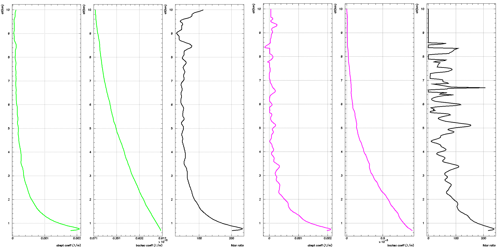
图注：Calculation of the extinction and back-scatter coefficients for the 355 nm (in green) and 532 nm (in magenta) lines. The corresponding lidar ratios are also shown.
对应解读：对应“建议重点查看的图表”第3、4、5项，以及“关键图表逐图导读”中图3、图4、图5关于消光系数、后向散射系数和雷达比的解读。
入选理由：这是候选图中最直接承载论文核心科学结果的一张，集中展示355 nm与532 nm下的气溶胶消光系数、后向散射系数以及对应雷达比，可用于检查高度廓线、双波长一致性、反演稳定性和雷达比是否处于合理范围，远比单纯硬件照片更能支撑日报的科学解读。
来源与置信度：\(arxiv_source\)；high；\(arxiv_source\) / main.tex:figure[6]
Fig05
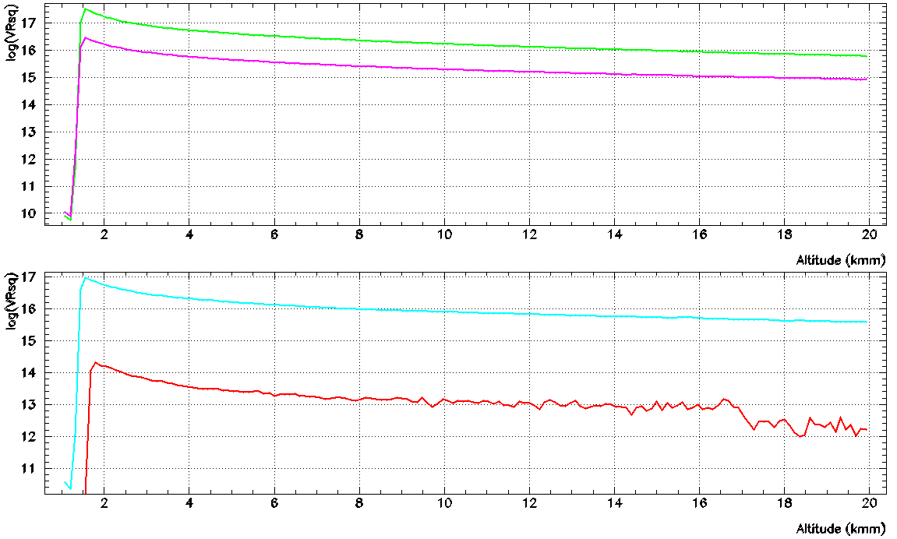
图注：Range corrected return signals acquired during various data taking periods at OHP Observatory. The top plot corresponds to the 355 nm (green)/387 nm (magenta) channel, and the bottom one to the 532 nm (blue)/607 nm (red).
对应解读：对应“建议重点查看的图表”第2项，以及“关键图表逐图导读”中图2关于距离平方校正回波信号的解读；也支撑模型拟合段落中对背景扣除、距离平方校正和高空信噪比的讨论。
入选理由：该图给出了OHP不同时段采集的距离平方校正回波信号，并同时覆盖355/387 nm与532/607 nm通道，是理解后续消光、后向散射和雷达比反演质量的原始诊断基础。它能显示信号动态范围、不同通道高空表现以及潜在气溶胶层或云层结构。
来源与置信度：\(arxiv_source\)；high；\(arxiv_source\) / main.tex:figure[5]
Fig02
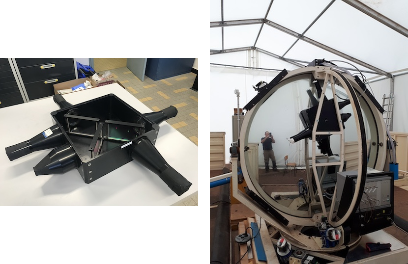
图注：The polychromator unit (left-hand side photo) accommodating four read-out channels and relevant filters for separating the Elastic from the Raman lines. It is mounted on the back of the telescope structure and follows the movement of the telescope during pointing (right hand-side photo).
对应解读：对应“建议重点查看的图表”第1项，以及“关键图表逐图导读”中图1关于仪器通道、弹性线与拉曼线分离的解读。
入选理由：该图展示多色仪单元、四个读出通道及用于区分弹性线和拉曼线的滤光片，是确认355 nm、532 nm及其拉曼通道配置的关键硬件图。相比外部望远镜照片，它更直接说明论文反演所依赖的通道定义和光谱分离路径。
来源与置信度：\(arxiv_source\)；high；\(arxiv_source\) / main.tex:figure[2]
Fig03
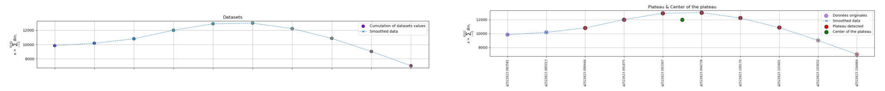
图注：Output of the automatic alignment algorithm. The top and bottom plots correspond to the X and Y axis scans of the received signal. The whole procedure takes 1-2 min to conclude. The middle of the plateau detected corresponds to the most probable optimized position per axis. The green dot corresponds to the selected position.
对应解读：对应“系统误差或稳健性诊断”以及模型拟合段落中关于通道效率、几何对准和低空/高空信号稳定性的讨论。
入选理由：自动对准算法输出不是日报列出的核心物理廓线图，但它关系到激光束与接收光路重合、回波强度稳定性和系统运行可靠性。若需要说明原型是否满足CTAO长期自动运行要求，这张图比一般外观照片更有诊断价值。
来源与置信度：\(arxiv_source\)；high；\(arxiv_source\) / main.tex:figure[3]
强相关工作
这篇工作属于 CTAO 大气监测和仪器响应控制这一类，而不是某个天体源的同源观测。应把它与 CTAO 设计论文、现有 IACT 阵列的大气校正经验、以及拉曼激光雷达反演方法文献放在一起读。检索关键词可用“CTAO atmospheric calibration Raman lidar”，“imaging atmospheric Cherenkov telescope aerosol correction”，“CTA Raman Lidar”，“IACT atmospheric monitoring”。
相似工作包括 MAGIC、H.E.S.S. 和 VERITAS 对气溶胶、云和大气透明度的监测与修正，也包括 CTA 早期针对大气监测设备的技术需求讨论。基础理论则来自 Klett/Fernald 弹性激光雷达反演和 Ansmann 等拉曼激光雷达气溶胶反演。一个长期张力是：纯弹性激光雷达更简单、信号更强、运行成本较低，但需要假设雷达比；拉曼系统反演更物理，但信号弱、夜间背景和标定要求更高。本文站在后者一边，强调为了 CTAO 的能谱精度，拉曼通道带来的绝对消光约束是值得的。
同一事件 / 同类源线索：
相似工作：
（未提供）
基础理论 / 方法工作：
相反观点 / 张力线索：
（未提供）
4. Compact Objects Merging with Stars as an Origin of Ultra-Long Gamma-Ray Bursts and Luminous Fast Blue Optical Transients
- 来源：arXiv / astro-ph.HE
- 链接：https://arxiv.org/abs/2607.07819v1
- 作者：V. Ashley Villar, Anya E. Nugent, Eric Burns, Brian D. Metzger, Tarraneh Eftekhari, Jakub Klencki, Christopher L. Fryer
- 评分：novelty 8/10，importance 8/10，relevance 9/10，final 9.35/10
- 推荐理由：将ULGRB与LFBOT统一到致密天体并合恒星模型，重分析GRB 111209A/SN 2011kl并比较宿主环境，直接涉及长时标GRB和发动机驱动暂现源。
中文题目：致密天体并入恒星：超长伽马暴与明亮快速蓝色光学暂现源的共同起源？
做了什么：这篇文章把两个少见的发动机驱动暂现源族群放到同一框架下检验：超长伽马暴和明亮快速蓝色光学暂现源是否都可能来自致密天体与大质量恒星氦核的并合。作者重新分析了超长伽马暴 \(\mathrm{GRB\ 111209A}/\mathrm{SN\ 2011kl}\) 的光学对应体，用一个解析的明亮快速蓝色光学暂现源模型解释其早期蓝而亮、演化较快的辐射；同时比较了 \(5\) 个超长伽马暴宿主星系与明亮快速蓝色光学暂现源、经典长伽马暴宿主的环境。结论是 \(\mathrm{SN\ 2011kl}\) 在相当程度上像一个明亮快速蓝色光学暂现源，但它有约两周的较长平台和更强紫外压低，暗示并合前更长或更复杂的质量损失历史；宿主方面，超长伽马暴也偏向低质量、活跃恒星形成星系。
为什么重要：重要性在于它把原本分开讨论的两个异常族群联系起来：超长伽马暴关注的是持续时间极长的高能喷流，明亮快速蓝色光学暂现源关注的是快速、热、亮的光学瞬变。若两者确有共同通道，许多看似独立的观测特征——长时标中心发动机、致密星周介质、蓝色早期光变、低质量宿主和高恒星形成率——可能是同一个并合-吸积-外流系统在不同视角、不同包层和不同喷流成功程度下的表现。
理论 / 观测 / 仪器方法价值：这篇文章的价值不在于给出唯一模型，而在于把 \(\mathrm{SN\ 2011kl}\) 放进明亮快速蓝色光学暂现源的解析模型中进行可比较的参数化，并把暂现源本体和宿主环境两条证据链合并。对理论而言，它为致密天体并入氦核、形成吸积盘和发动机驱动外流的模型提供了一个可观测检验场；对观测而言，它提示超长伽马暴后随光学暂现源不应只按传统超新星模板处理，而应同时检验明亮快速蓝色光学暂现源式的热外流和星周相互作用成分。
为什么应该关注：如果你关心伽马暴、核心坍缩、快速蓝色暂现源或多信使暂现源巡天，这篇文章值得看，因为它指出了一种把稀有事件样本合并理解的路径。未来 \(\mathrm{LSST}\)、高能卫星和射电跟进会发现更多长时标发动机事件，判断它们是磁星、黑洞坍缩星、潮汐破坏还是致密天体-恒星并合，需要类似本文这种同时利用光变形状、颜色温度、紫外吸收、宿主环境和高能持续时间的联合诊断。
展开详细解读：文章讲解、背景、理论、重点章节、图表与相关工作
文章详细讲解
科学问题：超长伽马暴通常定义为高能辐射持续时间远长于经典长伽马暴的一类事件，其 \(T_{90}\) 可达 \(10^4\) 秒量级；明亮快速蓝色光学暂现源则以天到周量级的快速演化、高蓝色温度和高光度为特征。两类事件都暗示中心发动机存在，但传统解释不同：前者常在塌缩星、蓝超巨星或潮汐破坏场景中讨论，后者常被解释为发动机加热外流、强星周相互作用或不寻常的爆炸物理。本文的核心问题是：它们是否可能是同一并合通道的不同观测表现，特别是致密天体并入大质量氦核后形成长寿命吸积发动机和快速外流。
作者怎么做：文章选择了一个关键个例 \(\mathrm{GRB\ 111209A}/\mathrm{SN\ 2011kl}\)。这是超长伽马暴中最著名、也最异常的光学对应体之一。作者没有只用传统 \(^{56}\mathrm{Ni}\) 或磁星超新星模板，而是把其光学数据放入最近发展的解析明亮快速蓝色光学暂现源模型中，检验早期光度、颜色、温度、光球半径和后续平台是否能由并合后外流、星周物质和中心发动机供能解释。第二条证据链来自宿主星系：作者比较了 \(5\) 个超长伽马暴宿主与明亮快速蓝色光学暂现源、经典长伽马暴以及相似红移场星系在质量和恒星形成率上的位置。
关键结果：\(\mathrm{SN\ 2011kl}\) 的早期表现确实接近明亮快速蓝色光学暂现源：它快速、明亮且偏蓝，这些性质比普通剥离包层超新星更容易让人联想到发动机驱动外流或致密星周环境。但它并非一个普通的明亮快速蓝色光学暂现源复制品。它在并合或爆发后约两周出现较长的平台状辐射，说明扩散时间、星周物质尺度或发动机注入时标可能更长；同时紫外波段压低更强，可能来自较高金属线空白、非热吸收、几何遮蔽或更复杂的外层物质结构。宿主比较也显示，超长伽马暴与明亮快速蓝色光学暂现源、长伽马暴类似，偏好质量低于约 \(10^{10}\,M_\odot\) 且恒星形成活跃的星系。
局限和下一步：本文支持的是“至少一部分”超长伽马暴和明亮快速蓝色光学暂现源共享祖源，而不是声明两个族群完全等价。限制主要来自样本小、宿主选择偏差、不同事件的多波段覆盖不均、紫外和早期光变采样不足，以及解析模型对几何、非局域热化和辐射转移的简化。下一步需要在未来巡天中建立统一样本：对长时标高能触发事件做快速紫外-光学-近红外跟进，对明亮快速蓝色光学暂现源寻找弱伽马射线或高能余辉，并用射电和 \(X\) 射线约束外流能量、速度和星周密度。
关键结果是怎么做出来的
本文最重要的结果有两条证据链：单个代表性事件 \(\mathrm{GRB\ 111209A}/\mathrm{SN\ 2011kl}\) 的光变重解释，以及 \(5\) 个超长伽马暴宿主环境的群体比较。事件选择的逻辑很清楚：\(\mathrm{GRB\ 111209A}\) 是超长伽马暴的标志性个例，并且有相对丰富的光学后随数据；若它的超新星成分能被明亮快速蓝色光学暂现源模型自然描述，那么共同祖源假说至少有一个强支点。
在光变分析中，作者关注的不是单一峰值光度，而是早期蓝色高温辐射、快速演化、约两周平台和紫外压低这几个同时出现的特征。解析模型通常把观测光度视为发动机注入能量、外流扩散和可能的星周物质作用的合成结果，因此可从多波段光变和颜色温度推断有效半径、扩散时标、喷出物质量和能量尺度。支撑结论的关键图表应包括多波段光变与模型叠加、颜色或黑体温度演化、半径演化，以及与已知明亮快速蓝色光学暂现源样本的峰值光度-演化时标位置比较。
统计上，这类文章通常不会像大样本宇宙学那样依赖单一高显著性数字，而是通过模型拟合优度、参数后验范围、样本分布比较和稳健性检查来建立可信度。对于宿主部分，样本数只有 \(5\) 个超长伽马暴，因此重点应看作者是否把它们与相似红移的场星系、经典长伽马暴宿主和明亮快速蓝色光学暂现源宿主放在同一质量-恒星形成率平面上，而不是只比较绝对数值。若这些宿主系统性位于低质量、高比恒星形成率区域，就支持年轻、大质量恒星通道。
系统误差主要有四类。第一，\(\mathrm{SN\ 2011kl}\) 的紫外和蓝光波段受消光、线空白和 \(K\) 校正影响很大，紫外压低不一定唯一指向某种物理机制。第二，光变模型存在退化：较大喷出物质量、较低速度、较高不透明度都能拉长扩散时标；发动机衰减时标和星周相互作用也可能产生相似平台。第三，宿主星系质量和恒星形成率依赖光度测量、谱能量分布拟合、初始质量函数和红移选择。第四，超长伽马暴本身的识别受卫星触发、观测间断和持续时间定义影响，样本不是无偏的。
稳健性方面，读者应检查作者是否在不同消光假设、不同不透明度、不同宿主模板、不同明亮快速蓝色光学暂现源比较样本下保持相同结论。本文的主张若能经受这些变化，真正有意义的结论不是“\(\mathrm{SN\ 2011kl}\) 就是典型明亮快速蓝色光学暂现源”，而是“超长伽马暴光学对应体可以落入明亮快速蓝色光学暂现源物理参数空间，并且二者宿主环境兼容”。
展开背景、理论、公式、模型、章节和图表导读
背景知识
研究对象之一是超长伽马暴。经典长伽马暴一般与大质量恒星核心坍缩和相对论喷流有关，持续时间通常以秒到数百秒计；超长伽马暴的高能活动可延伸到 \(10^4\) 秒甚至更长，迫使理论解释更长供能时标。候选模型包括蓝超巨星塌缩、低密度包层导致的长回落吸积、潮汐破坏事件、双星并合和致密天体进入恒星内部形成吸积盘。
另一个对象是明亮快速蓝色光学暂现源。它们的典型特征是高峰值光度、蓝色颜色、快速上升和衰减，有时伴随强 \(X\) 射线和射电辐射。\(\mathrm{AT2018cow}\) 之后，这类事件被广泛讨论，但其物理本质仍不统一：有人强调新生磁星或黑洞发动机，有人强调星周相互作用，有人认为可能是特殊潮汐破坏或失败超新星的表现。其共同点是普通放射性 \(^{56}\mathrm{Ni}\) 衰变通常难以同时解释高光度、短时标和高温。
历史问题在于，两类事件的研究传统不同。伽马暴社区更重视高能持续时间、喷流开角、余辉和宿主金属丰度；快速蓝色暂现源社区更重视光学巡天选择函数、多波段光变、黑体半径和星周环境。因此，即便它们可能由相似发动机驱动，也可能长期被不同标签分割。本文尝试跨越这种分类边界，用同一个并合物理图像解释两个样本的共同属性。
现在值得重新看这个问题，是因为样本和理论都到达了一个临界点。一方面，\(\mathrm{ZTF}\)、\(\mathrm{ATLAS}\)、未来 \(\mathrm{LSST}\) 等巡天使快速蓝色暂现源的统计样本增长；另一方面，伽马暴和引力波、多信使暂现源研究推动人们更系统地考虑双星演化、共同包层和致密天体并合。解析模型虽然简化，但能快速把光变形状映射到质量、能量、速度和密度尺度，为后续辐射流体模拟提供目标。
常见误区有几个。第一，不应把“蓝而快”直接等同于某一种能量源，因为低质量喷出物、低不透明度、高温光球和非热发动机都能造成类似现象。第二，超长伽马暴的长持续时间不必只来自中央发动机寿命，也可能受喷流穿出时间、包层尺度和观测阈值影响。第三，宿主低质量和高恒星形成率说明年轻大质量恒星环境，但不能单独区分单星塌缩与双星并合。第四，把 \(\mathrm{SN\ 2011kl}\) 称为“超新星”并不意味着它一定由标准放射性供能主导。
基础理论 / 方法脉络
基本物理图像可以从能量注入和扩散开始。一个中心发动机——可能是吸积黑洞或磁化中子星——把能量注入到少量高速喷出物和周围星周物质中。若喷出物质量较小、速度较高、有效不透明度适中，光子扩散时间可以只有数天到十几天，从而产生快速蓝色光变。若发动机持续供能或外层存在扩展物质，光变会出现平台或慢衰减。
在致密天体并入恒星的情景中，紧密双星演化或共同包层过程使中子星或黑洞进入大质量伴星外层，最终接近氦核。并合释放轨道能，驱动质量损失；致密天体吞噬核心材料形成吸积盘，可能发射相对论喷流，产生超长伽马暴。如果喷流成功穿出，会看到高能长时标辐射；若喷流较弱、偏轴或被包层部分窒息，可能主要表现为明亮快速蓝色光学暂现源。
本文涉及的关键量包括峰值光度 \(L_{\rm pk}\)、扩散时间 \(t_{\rm d}\)、喷出物质量 \(M_{\rm ej}\)、速度 \(v_{\rm ej}\)、不透明度 \(\kappa\)、发动机功率 \(L_{\rm eng}(t)\)、星周物质半径 \(R_{\rm CSM}\) 和密度参数。观测上，多波段光变给出准黑体温度 \(T_{\rm eff}\) 和半径 \(R_{\rm ph}\)，高能数据给出发动机活动持续时间，宿主光度和谱能量分布给出恒星质量与恒星形成率。
主要退化关系来自扩散时标。相同的 \(t_{\rm d}\) 可以由较大的 \(M_{\rm ej}\)、较大的 \(\kappa\) 或较小的 \(v_{\rm ej}\) 产生；相同的峰值光度可以由更强发动机、更高热化效率或更强相互作用产生。紫外压低也不唯一：尘埃消光、金属线空白、非热谱形和红移校正都可能影响。宿主环境分析中，低质量高恒星形成率与低金属丰度相关，但并不等价；若没有直接金属丰度测量，不能过度解释。
数据分析逻辑是把光变形状和颜色演化先压缩成物理可解释的量，再与族群分布比较。单个事件拟合回答“这个事件是否可由明亮快速蓝色光学暂现源式模型解释”；宿主比较回答“这些事件是否来自相似星族环境”。两条证据各自不决定性，但若同时指向年轻、低质量、活跃恒星形成环境和发动机驱动快速蓝色辐射，共同祖源假说就更有吸引力。
公式与推导
第一步是把观测流量转换成静止系光度。若源的光度距离为 \(D_L\)，观测到的谱流量为 \(F_{\nu_{\rm obs}}\)，则静止系谱光度近似为
这里 \(z\) 是红移。这个关系是多波段光变和宿主谱能量分布拟合的起点，实际分析还需要滤光片响应和 \(K\) 校正。
第二步是用准黑体描述早期蓝色连续谱。若光球半径为 \(R_{\rm ph}\)、有效温度为 \(T_{\rm eff}\)，总光度满足
该式定义了从颜色温度和绝对光度反推 \(R_{\rm ph}\) 的基本方法。对明亮快速蓝色光学暂现源，\(T_{\rm eff}\) 高且 \(R_{\rm ph}\) 快速演化是重要诊断。
第三步是扩散时标。对质量为 \(M_{\rm ej}\)、速度为 \(v_{\rm ej}\)、灰不透明度为 \(\kappa\) 的同质膨胀喷出物，常用标度为
其中 \(c\) 是光速，\(\beta\) 是与密度结构有关的常数。这个公式说明快速光变要求较小的 \(M_{\rm ej}\)、较低的 \(\kappa\) 或较高的 \(v_{\rm ej}\)。
第四步是能量守恒。辐射内能 \(E_{\rm th}\) 的演化可写成
这里 \(L_{\rm in}(t)\) 是发动机或冲击注入功率，\(L_{\rm rad}(t)\) 是辐射光度，最后一项表示绝热膨胀损失。不同模型的核心差别主要体现在 \(L_{\rm in}(t)\) 的形式。
第五步是中心发动机的一个通用参数化。若采用类磁偶极或回落吸积的衰减形式，可写成
其中 \(L_0\) 是初始功率，\(t_{\rm eng}\) 是发动机时标，\(q\) 控制衰减斜率。\(q=2\) 常近似磁偶极自转能损失，\(q=5/3\) 常用于回落吸积标度，但真实并合流可能更复杂。
第六步是扩散滤波后的观测光度。在一区近似下，可把输入功率卷积为
这个表达式展示了为什么即使发动机输入很尖锐，观测光变也会被扩散平滑；平台可能来自长 \(t_{\rm eng}\)、外层物质或多成分输入。
第七步考虑星周相互作用。若星周介质密度近似为风型
其中 \(\dot{M}\) 是并合前质量损失率，\(v_{\rm w}\) 是风速，则更高的 \(\dot{M}/v_{\rm w}\) 会提高冲击热化和辐射效率。本文提到的较长平台可理解为更扩展或更持续的并合前质量损失留下了可相互作用的物质。
第八步是把模型与数据比较的统计量。若第 \(i\) 个测光点为 \(m_i\)，模型为 \(m_{\rm mod}(t_i;\boldsymbol{\theta})\)，误差为 \(\sigma_i\)，高斯似然可写成
参数 \(\boldsymbol{\theta}\) 包括 \(M_{\rm ej}\)、\(v_{\rm ej}\)、\(\kappa\)、\(L_0\)、\(t_{\rm eng}\)、消光和宿主贡献等。残差结构比单一最优值更能揭示模型是否遗漏了紫外吸收或平台成分。
第九步是宿主比较中的主序偏离量。给定星系质量 \(M_*\) 和恒星形成率 \(\mathrm{SFR}\)，可定义
若超长伽马暴宿主普遍有 \(\Delta_{\rm MS}>0\) 且 \(M_*<10^{10}M_\odot\)，就说明它们相对同红移场星系更偏向活跃恒星形成环境，这与大质量年轻祖源相容。
模型拟合 / 应用方法
本文或同类工作的光变拟合通常以多波段测光为输入，拟合量包括爆发时间、宿主消光、温度演化、半径演化、喷出物质量、速度、不透明度、发动机功率和衰减时标。对 \(\mathrm{SN\ 2011kl}\) 这样的事件，早期蓝光和紫外数据尤其关键，因为它们最能区分高温黑体、线空白、尘埃消光和非热谱成分。
似然一般以测光残差构造，可能在星等空间或流量空间计算。专业读者应优先检查残差是否随波段系统偏移：如果模型能拟合光学但持续高估紫外，说明紫外压低不是随机误差，而是物理或校正问题；如果约两周平台在所有波段都存在，则需要额外时标，而不能仅靠单次短扩散峰解释。
参数退化很强。\(M_{\rm ej}\)、\(\kappa\) 和 \(v_{\rm ej}\) 通过 \(t_{\rm d}\) 耦合；发动机初始功率 \(L_0\) 与热化效率退化；星周密度与冲击效率退化；宿主消光与温度退化。若没有光谱速度、紫外覆盖、红外尾部或射电/\(X\) 射线约束，单凭光学光变很难唯一确定物理通道。
宿主星系拟合则通常使用宽带光度或光谱能量分布，得到 \(M_*\)、\(\mathrm{SFR}\)、年龄和消光。这里的关键不是单个宿主参数的精确值，而是超长伽马暴样本在 \(M_*\)-\(\mathrm{SFR}\) 平面上相对于场星系、长伽马暴和明亮快速蓝色光学暂现源的位置。由于样本只有 \(5\) 个，统计解释应谨慎，更适合说“环境兼容”而不是“环境已证明共同祖源”。
模型可能失败的地方也很明确。解析模型把几何、喷流角结构、非局域辐射转移、非平衡电离和复杂星周结构压缩成少数参数；对并合事件而言，真实外流很可能是高度非球对称的。若未来事件显示强偏振、极端谱线不对称、晚期能量预算不闭合，或宿主环境显著偏离年轻低金属星族，那么当前共同通道图像就需要拆分为多个子类。
重点章节 / 结果段落怎么读
数据和样本部分应先读。这里要看作者如何整理 \(\mathrm{GRB\ 111209A}/\mathrm{SN\ 2011kl}\) 的光学和紫外数据、如何扣除余辉和宿主贡献、采用什么红移、消光和滤光片校正。任何关于蓝色早期辐射和紫外压低的结论都依赖这些前处理。
模型方法部分是第二个重点。读者应关注解析明亮快速蓝色光学暂现源模型的输入功率、扩散处理、星周物质参数化和不透明度假设。尤其要看模型是否允许多成分供能，以及约两周平台是通过发动机长时标、扩展星周物质还是额外外流成分实现。
主结果部分应围绕 \(\mathrm{SN\ 2011kl}\) 与明亮快速蓝色光学暂现源样本的比较来读。重点不是某个最佳拟合参数，而是它在峰值光度、温度、演化时标、颜色和紫外行为上分别像不像已知明亮快速蓝色光学暂现源，以及哪些性质明显偏离。
宿主环境部分要看质量-恒星形成率图和对照样本。作者比较 \(5\) 个超长伽马暴宿主与明亮快速蓝色光学暂现源、经典长伽马暴和场星系；读者应检查红移匹配、选择函数和误差条，而不是只看“低质量”这个标签。
讨论和结论部分应重点看作者如何限定共同祖源的范围。合理的读法是：本文支持致密天体-氦核并合可解释一部分超长伽马暴和明亮快速蓝色光学暂现源，但仍需更多事件和更细致的辐射转移模拟来区分磁星、回落吸积、星周相互作用和并合外流。
建议重点查看的图表
-
多波段光变拟合图：检查 \(\mathrm{SN\ 2011kl}\) 的各滤光片数据点、模型曲线和残差，尤其是早期蓝光、紫外点以及约两周平台是否被同一模型解释。
-
温度和光球半径演化图：看 \(T_{\rm eff}\) 是否维持在明亮快速蓝色光学暂现源常见的高温区间，以及 \(R_{\rm ph}\) 的增长或回落是否物理合理。
-
与明亮快速蓝色光学暂现源族群的峰值光度-时标比较图：看 \(\mathrm{SN\ 2011kl}\) 是否落在样本云团中，还是仅在某些投影上接近。
-
紫外压低或谱能量分布图：重点检查模型在紫外波段是否系统偏高，紫外压低是否可由消光或线空白解释。
-
宿主星系 \(M_*\)-\(\mathrm{SFR}\) 平面图：看 \(5\) 个超长伽马暴宿主与场星系主序、长伽马暴宿主、明亮快速蓝色光学暂现源宿主的相对位置。
-
参数后验或角图：若论文提供，应检查 \(M_{\rm ej}\)、\(v_{\rm ej}\)、\(\kappa\)、发动机时标和星周参数的退化，避免把单一最佳拟合当成唯一解。
-
稳健性检验表：看不同消光、不透明度、宿主扣除和比较样本选择下，结论是否仍保持。
关键图表逐图导读
图 1：通常应是 \(\mathrm{GRB\ 111209A}/\mathrm{SN\ 2011kl}\) 的多波段光变。横轴应为爆发后静止系时间，纵轴可能是绝对星等或光度；不同颜色点代表不同滤光片，模型线代表解析明亮快速蓝色光学暂现源拟合。读图重点是模型是否同时覆盖早期快速上升、蓝色高光度和约两周平台。陷阱是星等轴反向，且早期余辉扣除会显著影响形状。
图 2：可能是黑体温度和半径演化。横轴为时间，纵轴分别为 \(T_{\rm eff}\) 和 \(R_{\rm ph}\)。若 \(\mathrm{SN\ 2011kl}\) 的温度高、半径扩张快，就支持明亮快速蓝色光学暂现源式热外流。读图陷阱是紫外压低会使黑体拟合温度偏低或偏高，取决于是否纳入紫外点和线空白修正。
图 3：应关注与明亮快速蓝色光学暂现源样本的参数空间比较，例如峰值光度对上升/衰减时标，或峰值光度对颜色温度。横轴和纵轴如果都是观测派生量，误差和选择效应很重要。若 \(\mathrm{SN\ 2011kl}\) 位于明亮快速蓝色光学暂现源分布边缘而非中心，结论应理解为“广义兼容”，不是“完全典型”。
图 4：若有紫外或谱能量分布残差图，应看观测点相对模型的系统偏差。紫外数据点低于黑体外推可能说明金属线空白、额外吸收或非热谱形。陷阱是把紫外压低直接解释为尘埃；在高温暂现源中，谱线森林和几何遮蔽同样可能重要。
图 5：宿主 \(M_*\)-\(\mathrm{SFR}\) 图是环境证据核心。横轴多为 \(\log M_*\)，纵轴为 \(\log \mathrm{SFR}\)，背景为场星系主序或密度分布，符号区分超长伽马暴、明亮快速蓝色光学暂现源和长伽马暴。关键是超长伽马暴是否系统落在低质量、高恒星形成区域。陷阱是红移演化会移动主序，必须比较相似红移或使用主序偏离量。
图 6：若论文有模型参数后验或表格，可把它当作物理解释的刹车片来读。看 \(M_{\rm ej}\)、\(t_{\rm d}\)、\(L_0\)、\(t_{\rm eng}\) 和星周参数是否有窄约束；若后验很宽，文章的强结论应来自整体一致性，而不是某个精确参数值。
论文原图 / 可嵌入图片
Fig01
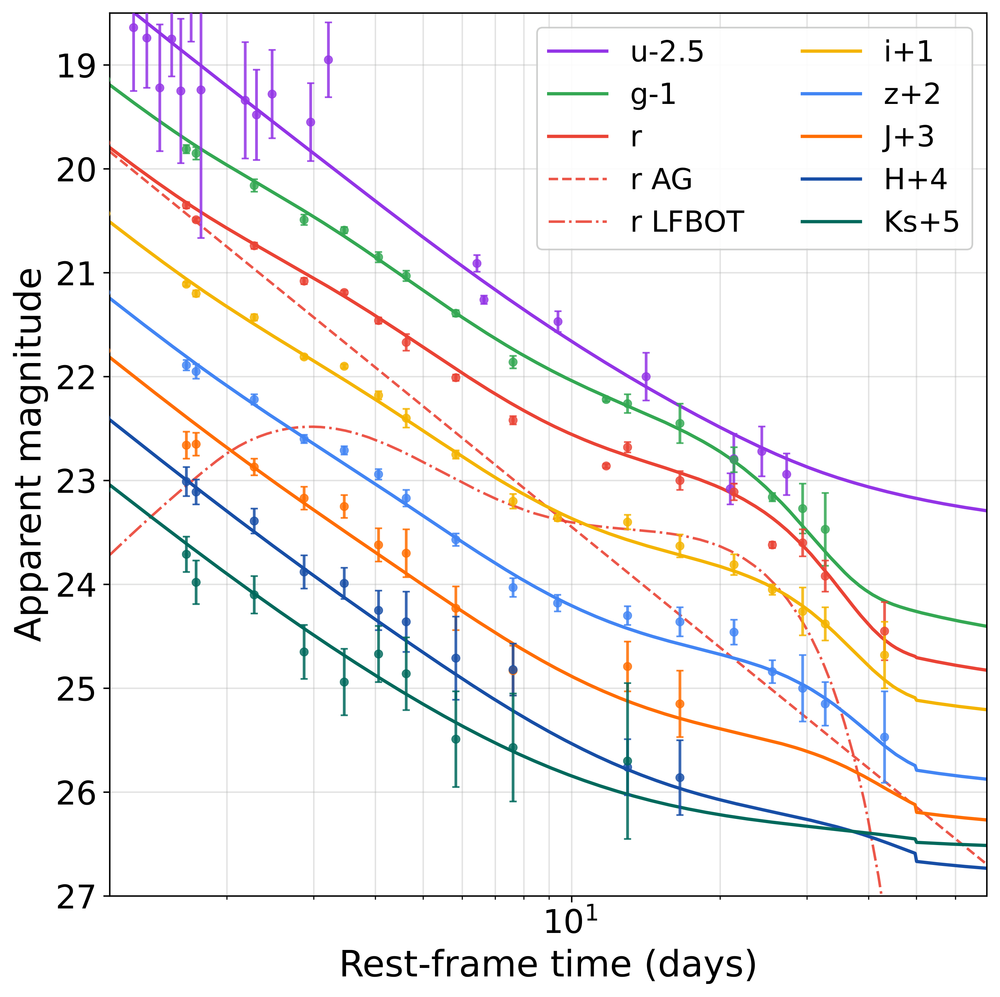
图注：Multi-band, joint fit for the GRB\,111209A afterglow and SN~2011kl optical transient. We use fixed host-galaxy AB magnitudes of $m_u = 26.0$, $m_g = 25.66$, $m_r = 25.04$, $m_i = 24.36$, $m_z = 24.02$, $m_J = 23.39$, $m_H = 22.84$, and $m_{K_s} = 21.56$ \(\citep{greiner2015very}.\)
对应解读：对应“建议重点查看的图表”第1项多波段光变拟合图，以及“关键图表逐图导读”图1和模型拟合段落。
入选理由：这是最核心的观测-模型对照图，直接展示GRB 111209A余辉与SN 2011kl光学暂现源的多波段联合拟合，包含各滤光片数据点、模型曲线和宿主星系固定光度处理。它最能检验日报强调的早期蓝光、紫外/光学波段一致性、约两周平台以及余辉扣除对光变形状的影响。
来源与置信度：\(arxiv_source\)；high；\(arxiv_source\) / ms__2_.tex:figure[1]
Fig04

图注：The hosts of ULGRBs (multicolor squares), LFBOTs (blue circles), and LGRBs (cyan diamonds), compared to a field galaxy population from the 3D-HST and COSMOS2015 surveys \(\citep{skelton2014, laigle2016, leja2022},\) separated into three redshift bins. We also highlight the SFMS determined in \(\citet{leja2022}\) for all three redshift bins (dashed black line). All three transient populations appear to be clustered above the SFMS, in lower mass ($<10^{10}$~$M_\odot$) galaxies with higher sSFRs than observed for the field galaxy populations. This indicates that these transients are closely tied to star formation for progenitor formation, and thus likely contain a young, massive stellar component within their progenitor systems.
对应解读：对应“建议重点查看的图表”第5项宿主星系M*-SFR平面图，以及“关键图表逐图导读”图5和宿主星系拟合讨论。
入选理由：这是环境证据的关键图，直接比较ULGRB、LFBOT、LGRB宿主与场星系及星形成主序在不同红移区间的位置。它支撑日报中关于ULGRB宿主偏低质量、高比恒星形成率、与LFBOT和LGRB环境相似的结论。
来源与置信度：\(arxiv_source\)；high；\(arxiv_source\) / ms__2_.tex:figure[4]
Fig02
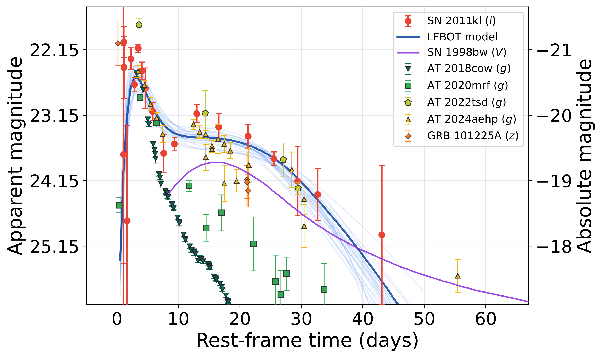
图注：Rest-frame light curve of SN~2011kl (red circles, using $i$ as the a proxy for rest-frame $g$) with the fitted AG component removed compared to our best-fit LFBOT model (blue curves) and a sample of comparison transients. For reference, we show the light curve of the broad-lined Type Ic supernova SN~1998bw (purple curve; \citealt{clocchiatti2011ultimate}), as well as several LFBOTs: AT~2018cow (dark green triangles; \citealt{perley2019fast}), the somewhat longer-lived AT~2020mrf (green squares; \citealt{yao2022x}), AT~2022tsd (chartreuse pentagons; \citealt{ho2023minutes}), AT~2024aehp (yellow triangles; \citealt{sevilla2026multiwavelength}), and ULGRB GRB~101225A (orange diamonds, observer-frame $z$-band as proxy for rest-frame $g$; \citealt{levan2014new}).
对应解读：对应“建议重点查看的图表”第3项与LFBOT族群的峰值光度-时标/光变比较图，以及“关键图表逐图导读”图3。
入选理由：该图把去除余辉后的SN 2011kl静止系光变与多个典型及长时标LFBOT、SN 1998bw和ULGRB GRB 101225A进行直接比较，最适合判断SN 2011kl是否只是广义兼容LFBOT族群，还是在持续时间和平台特征上位于分布边缘。
来源与置信度：\(arxiv_source\)；high；\(arxiv_source\) / ms__2_.tex:figure[2]
Fig03
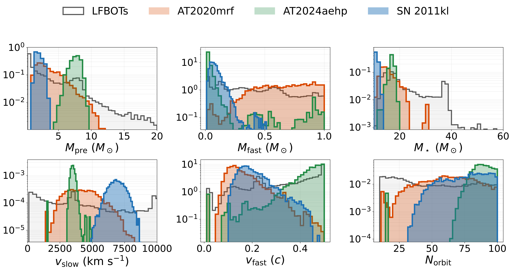
图注：LFBOT/SN~2011kl marginal posterior distributions for shared fit parameters. Grey histograms show the joint LFBOT sample. Colored curves highlight longer-duration LFBOTs AT2020mrf and AT2024aehp which, similar to SN~2011kl, have higher inferred $N_\mathrm{orb}$ compared to the broader population. SN~2011kl (blue) is not included in the pooled LFBOT sample.
对应解读：对应“建议重点查看的图表”第6项参数后验或角图，以及“关键图表逐图导读”图6和参数退化讨论。
入选理由：该图给出SN 2011kl与LFBOT样本共享拟合参数的边缘后验分布，可用于检查SN 2011kl相对LFBOT总体和长时标LFBOT的参数位置，尤其是较高N_orb等导致长持续时间/平台的参数解释，避免只依赖单一最佳拟合。
来源与置信度：\(arxiv_source\)；high；\(arxiv_source\) / ms__2_.tex:figure[3]
Fig05
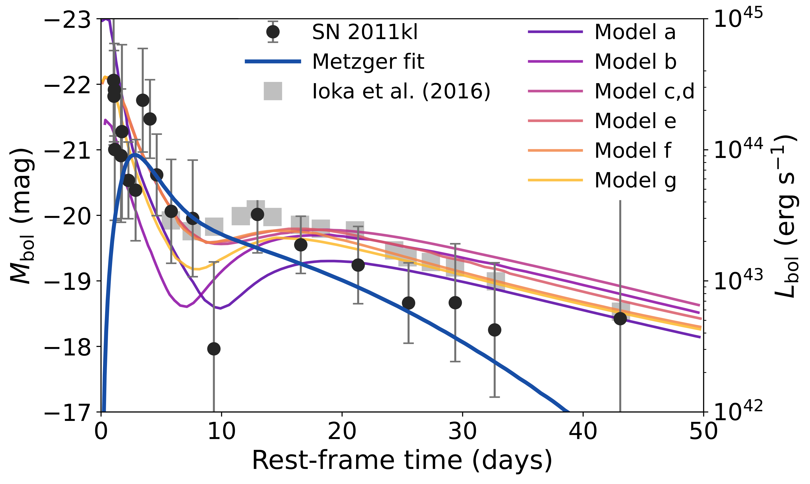
图注：Bolometric light curve of SN~2011kl and comparative models in the rest frame. Black points show our pseudo-bolometric estimates for SN~2011kl. For comparison, we show the bolometric estimate from \(\cite{ioka2016ultra},\) which is in broad agreement with our estimate. Colored curves show SNLC shock-heating models (Models~a--g); model parameters are given in Table~\(\ref{tab:snlc_models}.\) Models~c and~d differ only in outer shell radius and are shown as a single (overlapping) curve.
对应解读：对应模型拟合段落中关于玻尔光变、冲击加热模型和约两周平台能否由同一物理模型解释的讨论。
入选理由：该图展示SN 2011kl伪玻尔光变及多组SNLC冲击加热模型，是检验能量预算、平台持续时间和不同模型参数影响的重要补充。虽然不是多波段残差或温度半径图，但它能直接支撑对解析模型物理可行性的评估。
来源与置信度：\(arxiv_source\)；high；\(arxiv_source\) / ms__2_.tex:figure[5]
强相关工作
与本文最直接相关的是 \(\mathrm{GRB\ 111209A}/\mathrm{SN\ 2011kl}\) 的同一事件研究。早期工作把 \(\mathrm{SN\ 2011kl}\) 解释为异常明亮、可能由磁星供能的超新星，并强调它不同于普通长伽马暴伴随的 \(\mathrm{Ic-BL}\) 型超新星。本文不是否定这些工作，而是把同一事件重新放入明亮快速蓝色光学暂现源和致密天体并合框架中，检索关键词可用 “GRB 111209A SN 2011kl magnetar ultra-long gamma-ray burst”。
同类源方面，\(\mathrm{AT2018cow}\)、\(\mathrm{CSS161010}\)、\(\mathrm{AT2020xnd}\) 等明亮快速蓝色光学暂现源是重要比较对象；同类高能事件方面，\(\mathrm{GRB\ 101225A}\)、\(\mathrm{GRB\ 121027A}\)、\(\mathrm{GRB\ 130925A}\) 常被纳入超长伽马暴讨论。相反观点包括蓝超巨星塌缩、传统磁星超新星、潮汐破坏事件和纯星周相互作用模型。建议检索关键词包括 “luminous fast blue optical transients engine driven”, “ultra-long GRB blue supergiant collapsar”, “compact object merger helium core transient”, “LFBOT host galaxies” 和 “GRB 111209A SN 2011kl ultraviolet suppression”。
同一事件 / 同类源线索：
相似工作：
基础理论 / 方法工作：
相反观点 / 张力线索：
5. The incidence of eROSITA X-ray AGN in the local Universe: from dwarf to massive galaxies
- 来源：arXiv / astro-ph.HE
- 链接：https://arxiv.org/abs/2607.07795v1
- 作者：Z. Igo, A. Merloni, A. Georgakakis, J. Buchner, R. Arcodia, M. Salvato, J. Aird, K. Nandra
- 评分：novelty 8/10，importance 8/10，relevance 8/10，final 9.00/10
- 推荐理由：astro-ph.HE；eROSITA 四次巡天构建低红移、尤其低质量星系中的大型 X 射线 AGN 样本，并约束比吸积率分布和黑洞占有率下限。虽偏 AGN 人口统计而非伽马射线，但 X 射线 AGN 与高能天体物理相关性强，样本规模和方法价值较高。
中文题目：本近邻宇宙中 eROSITA X 射线活动星系核的发生率：从矮星系到大质量星系
做了什么：这篇论文把 eROSITA 四轮全天巡天的 X 射线信息与 Legacy Survey DR10 的低红移星系样本结合，系统统计 \(0.03
为什么重要：低质量星系中的黑洞是否普遍存在、如何增长，是连接本地宇宙与早期种子黑洞形成模型的关键问题。光学选 AGN 在矮星系中容易被恒星形成、低金属丰度和窄线诊断偏差影响；X 射线选择虽也有吸收和灵敏度限制，但能更直接追踪吸积功率。eROSITA 的宽天区和均匀覆盖让这类统计第一次能在百万级近邻星系母样本上完成，而不是依赖少数深场或异质性文献汇编。
理论 / 观测 / 仪器方法价值：对理论而言，论文给出了低质量宿主中 \(p(\log\lambda_{\rm SAR}\mid M_\star,z)\) 的直接约束，可用于检验黑洞种子、反馈自调节和吸积占空比模型。对观测而言，它建立了一套把非探测星系也纳入似然的 X 射线 AGN 发生率估计方法，避免只对检测源做比例统计造成的选择偏差。对方法而言，作者强调了宿主关联、孔径测光清理、恒星质量和红移完备性的影响，这些步骤决定了低质量端结果是否可信。
为什么应该关注：如果你关心矮星系黑洞、早期黑洞种子、AGN 反馈在低质量宿主中的效率，或 eROSITA 全天巡天能带来什么新统计量，这篇文章值得读。它不是只报告“发现很多新 AGN”，而是把检测源和非检测源统一放进概率模型，给出可被模拟和半解析模型直接比较的比吸积率分布。尤其是高 \(\lambda_{\rm SAR}\) 端断裂和低质量星系约 \(1\%\) 的累积 AGN 分数，会影响我们如何把本地矮星系样本外推到高红移第一代星系。
展开详细解读：文章讲解、背景、理论、重点章节、图表与相关工作
文章详细讲解
科学问题：论文要回答的是，在近邻宇宙中，低质量星系到底有多少正在以可观速率吸积的中心黑洞，以及这种吸积活动如何随宿主恒星质量 \(M_\star\) 和红移 \(z\) 改变。过去关于矮星系 AGN 的结论很不稳定：光学窄线诊断对低金属丰度和恒星形成污染敏感，射电选择偏向喷流，深场 X 射线面积太小而难以获得低红移大样本。本文的切入点是用 eROSITA 的全天覆盖弥补面积不足，同时用 Legacy Survey DR10 建立大而相对完整的近邻星系母样本。
作者怎么做：母样本来自 Legacy Survey DR10，要求 \(z\) 波段亮于 \(20\,\mathrm{mag}\)，红移在 \(0.03 关键结果：在低质量星系 \(\log(M_\star/M_\odot)<10\) 中，作者识别出 \(874\) 个 X 射线 AGN，多数是新发现的 X 射线发射源。更重要的是，他们用贝叶斯框架把所有母样本星系的 X 射线信息都纳入 \(p(\log\lambda_{\rm SAR}\mid M_\star,z)\) 的推断，包括未显著探测的星系，从而约束从低 \(\lambda_{\rm SAR}\) 到高 \(\lambda_{\rm SAR}\) 的分布形状。结果显示分布存在质量相关的二阶效应，并在高 \(\lambda_{\rm SAR}\) 端出现断裂，可能对应接近 Eddington 限制或反馈自调节的黑洞增长。 局限和下一步：这项工作的低质量端 AGN 分数仍应被理解为黑洞占有率的下限，而不是完整占有率。原因包括 X 射线吸收、低吸积率黑洞不可见、X 射线双星和热气体背景的潜在污染、恒星质量与红移估计误差、以及 \(\lambda_{\rm SAR}\) 到 Eddington 比 \(\lambda_{\rm Edd}\) 的转换依赖 \(M_{\rm BH}\)-\(M_\star\) 关系。下一步需要结合更深 X 射线观测、光学积分场光谱、红外中红外选择、射电数据和高角分辨率 Chandra 复查，区分真正核活动与星系内高质量 X 射线双星群，并把本地结果与高红移种子黑洞模型做定量连接。 样本选择是结果可信度的第一环。作者以 Legacy Survey DR10 的近邻星系为母样本，设定 \(z\) 波段亮度 \(<20\,\mathrm{mag}\) 和 \(0.03 显著性和置信度的关键在于把探测与非探测共同纳入 \(p(\log\lambda_{\rm SAR}\mid M_\star,z)\) 的似然。对每个星系，给定 \(M_\star\)、\(z\)、曝光、背景和仪器响应，可以计算某个 \(\lambda_{\rm SAR}\) 下预期 X 射线计数或通量分布；检测源约束高似然区域，非检测源则通过上限压低高 \(\lambda_{\rm SAR}\) 的允许概率。这样得到的分布比传统 \(N_{\rm AGN}/N_{\rm gal}\) 分箱比例更稳健，尤其适用于低质量端信号弱、非探测占多数的情况。 最重要的模型比较是比吸积率分布是否需要质量相关项以及高 \(\lambda_{\rm SAR}\) 断裂。论文摘要指出作者发现了二阶质量依赖，并检测到高 \(\lambda_{\rm SAR}\) 端断裂；读者应关注相应图表中不同 \(M_\star\) 分箱的 \(p(\log\lambda_{\rm SAR})\) 形状、置信带是否分离，以及无断裂模型与有断裂模型在后验预测或信息准则上的差异。若论文给出 Bayes factor、似然差、后验预测残差或交叉验证指标，应优先检查这些诊断是否由少数高光度源主导。 累积 AGN 分数来自对分布在阈值以上积分，即 \(f_{\rm AGN}(>\lambda_{\rm th})=\int_{\log\lambda_{\rm th}}^\infty p(\log\lambda_{\rm SAR}\mid M_\star,z)\,d\log\lambda_{\rm SAR}\)。在 \(\lambda_{\rm SAR}>10^{-3}\) 时，低质量星系得到约 \(1\%\) 的累积 AGN 分数。这个结果应被读作“可被 eROSITA X 射线选择并超过该吸积阈值的活动黑洞比例”，因此是黑洞占有率的下限，而不是所有黑洞的比例。 系统误差方面，最需要看作者如何评估宿主错配、X 射线双星污染、吸收修正、星系恒星质量误差、红移不完备性、背景估计和星系核外源混淆。稳健性检验应包括改变匹配半径或关联概率阈值、改变 X 射线光度到 \(\lambda_{\rm SAR}\) 的转换、剔除高星形成率或可能扩展发射对象、分红移和曝光深度重复拟合。如果高端断裂和约 \(1\%\) 的低质量 AGN 分数在这些检验下保持稳定，结论才真正有分量。 研究对象是低红移星系中的 X 射线 AGN，尤其是宿主恒星质量低于 \(\log(M_\star/M_\odot)=10\) 的系统。低质量星系里的中心黑洞很关键，因为它们的并合和反馈历史相对简单，可能保存了早期种子黑洞形成的线索。若本地矮星系普遍含有黑洞，且偶尔以可观速率吸积，这支持某些轻种子或高占有率情景；若黑洞很少，则会偏向低占有率或强选择性种子形成模型。 历史上，矮星系 AGN 的搜寻长期依赖光学发射线诊断，例如 BPT 图中的 \([\mathrm{O\,III}]/\mathrm{H}\beta\) 与 \([\mathrm{N\,II}]/\mathrm{H}\alpha\)。但在低质量、低金属丰度、强恒星形成星系中，窄线区域的金属丰度、激发条件和恒星形成污染会让 AGN 分类变得模糊。许多真正低光度 AGN 可能被归入星形成星系或复合源，反过来也有星暴和激波被误判为核活动。 现在值得重新看这个问题，是因为三件事同时成熟：第一，eROSITA 多轮全天巡天提供了均匀 X 射线数据；第二，Legacy Survey 等大面积多波段目录给出高质量星系母样本；第三，贝叶斯层级模型已能把大量非探测源的信息作为上限纳入分布函数推断。过去只统计检测源比例的做法，在低质量端会严重受灵敏度和红移分布影响。 常见误区之一是把“X 射线 AGN 分数”等同于“黑洞占有率”。实际上，X 射线选择只能看到处于一定吸积率、吸收不太严重且亮度超过灵敏度的黑洞。另一个误区是把 \(\lambda_{\rm SAR}\) 直接等同于 Eddington 比 \(\lambda_{\rm Edd}\)。\(\lambda_{\rm SAR}\) 依赖宿主 \(M_\star\)，而 \(\lambda_{\rm Edd}\) 依赖 \(M_{\rm BH}\)，两者转换需要假设 \(M_{\rm BH}\)-\(M_\star\) 关系及其散布，在矮星系中尤其不确定。 物理图像可以从吸积盘和热冕开始。中心黑洞吸积气体时，部分引力势能转化为辐射；紫外和软 X 射线可能来自盘，硬 X 射线常由热电子冕对低能光子 Compton 化产生。对低红移星系，若核 X 射线光度明显超过恒星形成相关 X 射线双星和热气体贡献，就可作为 AGN 候选。 本文使用的核心量是比吸积率 \(\lambda_{\rm SAR}\)。它不是严格的 Eddington 比，而是用 X 射线光度或推断的玻尔光度按宿主恒星质量归一化的量。这样做的好处是大样本星系通常没有可靠的 \(M_{\rm BH}\) 测量；坏处是如果 \(M_{\rm BH}/M_\star\) 在矮星系中散布很大，\(\lambda_{\rm SAR}\) 与真实 \(\lambda_{\rm Edd}\) 会有显著散射。 观测方法上，eROSITA 给出每个天区的曝光、背景和计数信息。对某个星系位置，若有显著 X 射线超额，可以转换为通量和光度；若没有显著检测，也仍然给出对高 X 射线光度的排除能力。层级模型的思想是：假设整个人群的 \(\log\lambda_{\rm SAR}\) 来自某个参数化分布，再通过仪器响应和噪声模型预测每个星系的 X 射线观测量，最后反推分布参数。 低质量星系的主要退化关系包括：低质量宿主往往更近、更暗，红移和质量选择函数会耦合；恒星形成率高的星系有更多高质量 X 射线双星，可能污染低光度 AGN；软 X 射线受吸收影响，重度遮蔽 AGN 会被漏掉；光学/红外宿主匹配在密集天区可能出错。论文的价值之一正是没有把这些问题当作小修正，而是在样本清理和验证中显式处理。 高 \(\lambda_{\rm SAR}\) 端断裂的物理解释通常与 Eddington 限制或反馈自调节有关。如果 \(\lambda_{\rm SAR}\) 大致追踪 \(\lambda_{\rm Edd}\)，那么分布在高端变陡意味着黑洞很少长期处于超 Eddington 或接近 Eddington 的状态。也可能是由于观测选择、吸收、宿主质量相关的 \(M_{\rm BH}/M_\star\) 变化或样本体积效应造成，因此需要用模型比较和稳健性测试来判断。 第一步从吸积能量释放出发。若黑洞以质量吸积率 \(\dot{M}_{\rm BH}\) 增长，辐射效率为 \(\epsilon\)，则玻尔光度可写为 这里 \(L_{\rm bol}\) 是总辐射功率，\(c\) 是光速。这个式子说明观测到的辐射光度与黑洞增长率之间的基本连接，但需要知道 \(\epsilon\) 和波段修正。 第二步引入 Eddington 标度。球对称电离气体中辐射力与引力平衡给出 其中 \(G\) 是引力常数，\(M_{\rm BH}\) 是黑洞质量，\(m_p\) 是质子质量，\(\sigma_T\) 是 Thomson 截面。真实 Eddington 比为 但大样本矮星系通常没有直接 \(M_{\rm BH}\)，因此本文转向用宿主归一化的比吸积率。 第三步把 X 射线光度接到玻尔光度。若 \(L_X\) 是某一 X 射线能段光度，\(k_{\rm bol}\) 是玻尔修正，则 进一步定义比吸积率的常用形式为 这里 \(M_\star\) 是宿主恒星质量，\(C\) 是把恒星质量标度转换为 Eddington 标度代理量的常数，通常隐含了平均 \(M_{\rm BH}/M_\star\) 假设。因此 \(\lambda_{\rm SAR}\) 可比较不同宿主的吸积强度，但不是无模型的黑洞物理量。 第四步从通量得到光度。对红移为 \(z\) 的源，若观测到能带通量为 \(F_X\)，光度距离为 \(D_L(z)\)，谱形 \(K\)-修正为 \(K(z,\Gamma)\)，则 其中 \(\Gamma\) 是 X 射线光子指数。这个式子告诉读者，红移、谱形和吸收假设会直接进入 \(\lambda_{\rm SAR}\) 的误差预算。 第五步把源光度映射为 eROSITA 计数。对第 \(i\) 个星系，给定模型通量 \(F_{X,i}\)、曝光 \(t_i\)、有效面积响应 \(A_{\rm eff}(E)\) 和谱能量分布 \(S(E)\)，预期源计数可写成 若背景预期为 \(\mu_{b,i}\)，总预期计数为 这一步是把人群分布连接到每个星系位置的观测数据的关键。 第六步写出计数似然。若观测计数为 \(n_i\)，Poisson 似然为 对大量星系，总似然是各对象似然的乘积，或等价地使用对数似然 非探测源也通过小 \(n_i\) 和背景项进入这个和式，因此不会被简单丢弃。 第七步描述人群分布。设 \(\theta\) 是控制比吸积率分布形状、质量依赖和红移依赖的参数，则层级模型可写为 观测似然需要对未知的 \(\ell_i=\log\lambda_{{\}}\) 这里 \(d_i\) 代表 X 射线计数、背景、曝光和可能的通量测量。 第八步得到累积 AGN 分数。对阈值 \(\lambda_{\rm th}\)，本文关注的发生率可表示为 当 \(\lambda_{\rm th}=10^{-3}\) 且 \(M_\star\) 位于低质量区间时，论文得到约 \(1\\%\) 的量级。这个积分量可直接与半解析模型或宇宙学模拟中的 AGN 占空比比较。 第九步给出高端断裂的一个通用参数化。若分布在低端近似幂律、高端变陡，可用断裂幂律表示为 其中 \(\lambda_b\) 是断裂位置，\(\alpha_1\) 和 \(\alpha_2\) 控制低端与高端斜率。若后验要求有限的 \(\lambda_b\) 且 \(\alpha_2\) 明显更陡，就支持高吸积率端受限的解释。 这类工作的拟合对象不是单个 AGN 光谱，而是整个人群的比吸积率分布 \(p(\log\lambda_{\rm SAR}\mid M_\star,z)\)。输入包括每个星系的 \(M_\star\)、\(z\)、X 射线计数或通量、背景、曝光、检测状态以及宿主关联信息。模型参数通常控制分布归一化、斜率、断裂位置、质量依赖和红移依赖；输出则是各质量和红移区间的分布函数及累积 AGN 分数。 似然方面，关键是不能只对检测到的 AGN 建模。若只使用检测源，低质量端会被通量极限强烈偏置，因为较低 \(M_\star\) 的星系在同一 \(\lambda_{\rm SAR}\) 下 \(L_X\) 更低，更容易落到探测限以下。层级贝叶斯模型通过对每个星系的潜在 \(\lambda_{\rm SAR}\) 积分，把非探测源作为上限信息使用，从而恢复母体分布。 参数退化主要有几类。第一，分布归一化与低端斜率会和灵敏度函数退化：若低 \(\lambda_{\rm SAR}\) 区间大多不可探测，斜率约束依赖模型假设。第二，高端断裂与吸收修正、玻尔修正和少数高光度源的权重有关。第三，质量依赖可能与红移分布、曝光深度和星系质量函数耦合，因为不同质量星系在样本中的距离分布并不相同。 残差诊断应关注模型是否能同时复现检测源的 \(L_X\) 分布、不同 \(M_\star\) 分箱的检测数、非检测源的上限分布，以及红移方向的变化。如果模型在低质量高红移端系统性低估检测数，可能表示质量依赖或红移演化不足；如果只在高 X 射线光度端出现残差，可能涉及断裂形式、吸收选择或少数错配源。 系统误差需要在拟合中或拟合后传播。恒星质量误差会把星系在质量分箱间散射，造成 Eddington bias；红移误差影响 \(D_L(z)\) 和 \(L_X\)；X 射线背景误差影响低信噪比源；X 射线双星贡献会在高恒星形成率低质量星系中抬高核外 X 射线信号；宿主错配会把背景 AGN 错认为矮星系核活动。实际应用中，读者应优先采用作者提供的后验分布和选择函数，而不是只引用一个固定的 AGN 分数。 模型可能失败的地方也很清楚：如果 \(\lambda_{\rm SAR}\) 分布不是简单平滑函数，而由不同物理通道混合，例如核星团、潮汐瓦解事件、短时爆发和持续低吸积 AGN，那么单一分布会掩盖物理差异。若低质量星系的 \(M_{\rm BH}/M_\star\) 关系与大质量星系完全不同，则用 \(M_\star\) 归一化的 \(\lambda_{\rm SAR}\) 可能把黑洞质量分布的变化误解释为吸积率分布变化。 数据与母样本部分应首先阅读。重点看 Legacy Survey DR10 星系如何选择、\(z<20\,\mathrm{mag}\) 和 \(0.03 物理量估计与 \(\lambda_{\rm SAR}\) 定义部分要仔细读。这里会说明 \(L_X\)、\(M_\star\)、玻尔修正和比吸积率之间的转换。读者应特别留意作者是否采用固定光子指数、是否修正吸收、如何处理星形成相关 X 射线发射，以及 \(\lambda_{\rm SAR}\) 阈值 \(\lambda_{\rm SAR}>10^{-3}\) 的物理含义。 贝叶斯框架和分布函数拟合部分是论文的技术核心。要看 \(p(\log\lambda_{\rm SAR}\mid M_\star,z)\) 的参数化、选择函数如何进入、非探测源如何贡献似然、先验是否宽松、模型比较如何支持质量依赖和高端断裂。若附录提供注入回收或模拟测试，应与主文结果一起读。 结果与讨论部分应围绕三个结论展开：低质量星系中 \(874\) 个 X 射线 AGN 的样本性质；不同质量区间的 \(\lambda_{\rm SAR}\) 分布差异；\(\lambda_{\rm SAR}>10^{-3}\) 时低质量星系约 \(1\%\) 的累积 AGN 分数。讨论中关于 Eddington 限制、自调节增长和黑洞占有率下限的解释，需要与系统误差章节交叉检查。 母样本的 \(M_\star\)-\(z\) 分布图：看低质量星系在红移范围内的覆盖是否均匀，\(z\) 波段亮度限制是否造成低质量高红移缺失。 eROSITA X 射线检测或通量极限图：看不同天区曝光和背景如何影响灵敏度，低质量星系中的 AGN 是否集中在更深曝光区域。 宿主匹配与清理诊断图：看 X 射线位置偏移、匹配概率、随机匹配率或污染估计，判断 \(874\) 个低质量 AGN 是否可能被背景 AGN 错配影响。 X 射线光度与宿主质量图：看检测源相对于恒星形成相关 X 射线发射预期的位置，确认低质量端是否有足够光度超额支持 AGN 解释。 \(p(\log\lambda_{\rm SAR}\mid M_\star,z)\) 分布图：看不同质量分箱的曲线和置信带，特别是高 \(\lambda_{\rm SAR}\) 端断裂是否显著、是否仅由少数源驱动。 累积 AGN 分数 \(f_{\rm AGN}(>\lambda_{\rm SAR})\) 图：看阈值从低到高变化时低质量与大质量宿主的相对关系，重点检查 \(\lambda_{\rm SAR}>10^{-3}\) 附近的误差条。 后验预测或残差图：看模型是否复现每个质量和红移分箱的检测数、通量分布和上限分布，避免只在总体上拟合良好。 系统误差或稳健性检验表：看改变 AGN 选择、吸收假设、匹配标准、恒星质量估计后，低质量约 \(1\%\) 分数和高端断裂是否保持。 图 1：通常应是母样本选择和参数空间图。横轴可能为红移 \(z\)，纵轴为 \(\log(M_\star/M_\odot)\)，颜色或等高线表示星系数密度，X 射线 AGN 叠加为点。读图重点是低质量区间是否覆盖 \(0.03 图 2：可能展示 X 射线测光、检测显著性或宿主匹配诊断。横轴可为 X 射线到光学宿主的位置偏移，纵轴为匹配概率或似然比；也可能展示源计数与背景计数。读者应看低质量 AGN 是否有更大的位置偏移或更低匹配可靠性。如果低质量端污染率明显升高，后续发生率要更谨慎。 图 3：可能是 \(L_X\) 与 \(M_\star\)、星形成率或红移的关系图。数据点代表 X 射线 AGN，模型线可能给出 X 射线双星和热气体的经验预期。关键是看低质量星系的 \(L_X\) 是否显著超过恒星过程可解释的范围。读图陷阱是单个星系的星形成率误差和孔径混淆可能很大，不能只凭一条经验线判断所有源。 图 4：应重点关注 \(p(\log\lambda_{\rm SAR}\mid M_\star,z)\) 的结果图。横轴是 \(\log\lambda_{\rm SAR}\)，纵轴是概率密度或每 dex 发生率，不同颜色代表 \(M_\star\) 分箱，阴影代表可信区间。主要结论是低质量端分布被 eROSITA 首次较好约束，并且高 \(\lambda_{\rm SAR}\) 端出现断裂。陷阱是高端尾部对象少，置信带和模型先验会显著影响断裂位置。 图 5：累积 AGN 分数图通常横轴为阈值 \(\log\lambda_{\rm SAR}\)，纵轴为 \(f_{\rm AGN}(>\lambda_{\rm SAR})\)。读者应定位 \(\lambda_{\rm SAR}=10^{-3}\) 处低质量曲线的值，检查其是否约为 \(1\%\)，以及不同质量曲线是否在误差范围内分离。注意累积分数在低阈值端对外推很敏感，而高阈值端对少数亮源敏感。 图 6：后验预测检查或稳健性检验图可能展示观测检测数与模型预测检测数的比较，或不同假设下的分布曲线。横轴可能是 \(M_\star\)、\(z\)、\(L_X\) 或 \(\lambda_{\rm SAR}\)，纵轴是残差或比值。关键是看低质量区间是否存在系统偏差。若替代模型或清理标准下曲线大幅移动，物理解释应相应降级。 Fig08 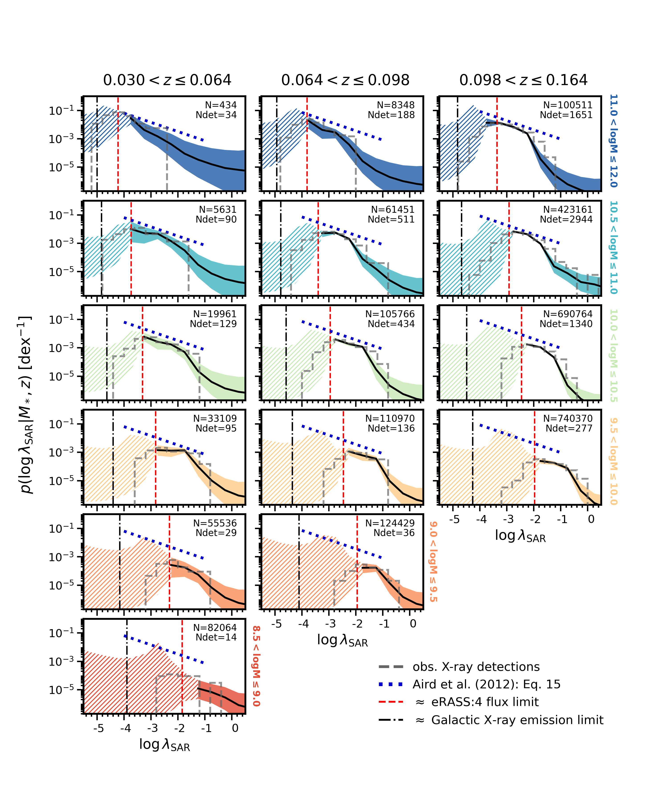关键结果是怎么做出来的
展开背景、理论、公式、模型、章节和图表导读
背景知识
X 射线观测提供了较直接的吸积示踪，因为热冕辐射能产生紧凑、高能连续谱。Chandra 深场在低通量方面很强，但面积小，近邻低质量星系数量有限；XMM-Newton 面积较大但样本仍不够均匀；ROSAT 全天巡天太浅。eROSITA 的优势在于全天覆盖和比 ROSAT 深得多的软 X 射线灵敏度，适合在低红移大体积内建立统计样本。基础理论 / 方法脉络
公式与推导
m SAR},i}) 积分：模型拟合 / 应用方法
重点章节 / 结果段落怎么读
建议重点查看的图表
关键图表逐图导读
论文原图 / 可嵌入图片
图注：The incidence of X-ray AGN as a function of $\lambda_{\rm SAR}$, in different mass (rows; in units of $M_{\odot}$) and redshift (columns) bins: $p(\log \lambda_{\rm SAR} | M_*, z)$. The black curves and solid coloured shaded regions mark the best-estimate and $1\sigma$ confidence interval, respectively, as found by our Bayesian methodology. The grey dashed histogram represents the observed distribution of X-ray detected sources and the extrapolated results from \(\citet{Aird2012}\) are shown in blue dotted lines. Dashed red and dot-dashed black vertical lines indicate the approximate eRASS:4 flux limit and galactic X-ray emission contamination limit, respectively; coloured hatched regions mark the low-$\lambda_{\rm SAR}$ regime where spurious contamination is dominant (see text for details).
对应解读：建议重点查看的图表第5项；关键图表逐图导读图4；模型拟合段落中关于 p(logλ_SAR|M,z)、置信带、通量极限和污染区间的讨论。
入选理由：这是论文核心结果图，直接给出不同恒星质量和红移分箱中的 p(logλ_SAR|M,z)，包含贝叶斯最佳估计、1σ置信区间、观测检测源直方图、eRASS:4通量极限、星系过程污染限制和低λ_SAR污染区间。它最能支撑日报中关于低质量端分布约束、高λ_SAR端断裂、选择函数与污染限制的详细解读。
来源与置信度：\(arxiv_source\)；high；\(arxiv_source\) / aa60578-26.tex:figure[8]
Fig10
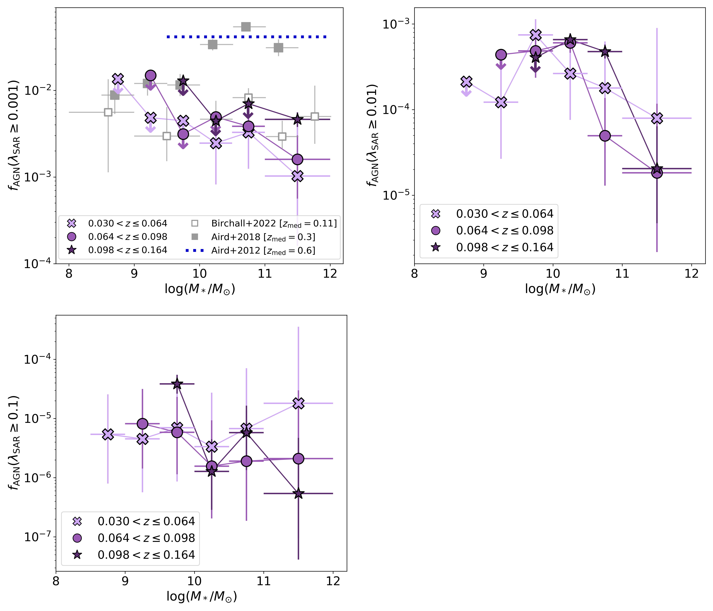
图注：Cumulative AGN fraction for $\lambda_{\rm SAR}\geq10^{-3}$ (left), $\lambda_{\rm SAR}\geq10^{-2}$ (middle) and $\lambda_{\rm SAR}\geq10^{-1}$ (right) as a function of stellar mass, in different redshift bins (see legend). Results from previous work that select AGN in the hard X-ray band at various redshifts are also shown as a comparison \(\citep{Aird2012, Aird2018, Birchall2022}.\)
对应解读：建议重点查看的图表第6项；关键图表逐图导读图5；详细解释中低质量星系 λ_SAR>10^-3 时约1%累积AGN分数的关键结论。
入选理由：该图直接展示 λ_SAR≥10^-3、10^-2、10^-1 三个阈值下的累积AGN分数随恒星质量和红移的变化，是验证低质量星系约1% AGN分数、质量依赖和阈值敏感性的最关键图。相比其他比较图，它更直接对应论文主结论和日报重点。
来源与置信度：\(arxiv_source\)；high；\(arxiv_source\) / aa60578-26.tex:figure[10]
Fig09
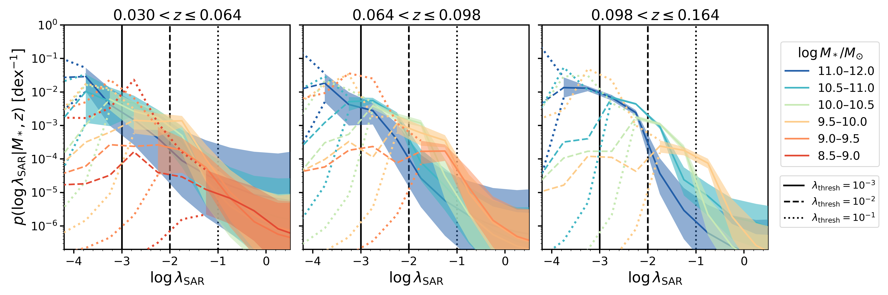
图注：The same $p(\log \lambda_{\rm SAR} | M_*, z)$ distributions as in Figure \(\ref{fig:plambda_curves},\) but overlaying the different stellar mass bins (colours) for a given redshift bin (panels). The median and uncertainty envelope of $p(\log \lambda_{\rm SAR} | M_*, z)$ in the low-$\lambda_{\rm SAR}$ regime affected by spurious contamination (hatched in Fig.~\ref{fig:plambda_curves}) are now marked with a dashed and dotted coloured curve, respectively, for clarity. The solid, dashed and dotted vertical black lines correspond to $\lambda_{\rm thresh} = 10^{-3}, 10^{-2}$ and $10^{-1}$, respectively. These are the thresholds above which the different cumulative AGN fractions are computed (see text).
对应解读：建议重点查看的图表第5和第6项；关键图表逐图导读图4、图5中关于不同质量曲线、阈值线和高λ_SAR端形状的讨论。
入选理由：该图把同一红移分箱内不同恒星质量的 p(logλ_SAR|M*,z) 曲线叠加，并标出 λ_thresh=10^-3、10^-2、10^-1 的竖线，便于直接比较质量依赖和累积分数阈值来源。它是连接分布函数图和累积AGN分数图的关键辅助图。
来源与置信度：\(arxiv_source\)；high；\(arxiv_source\) / aa60578-26.tex:figure[9]
Fig03
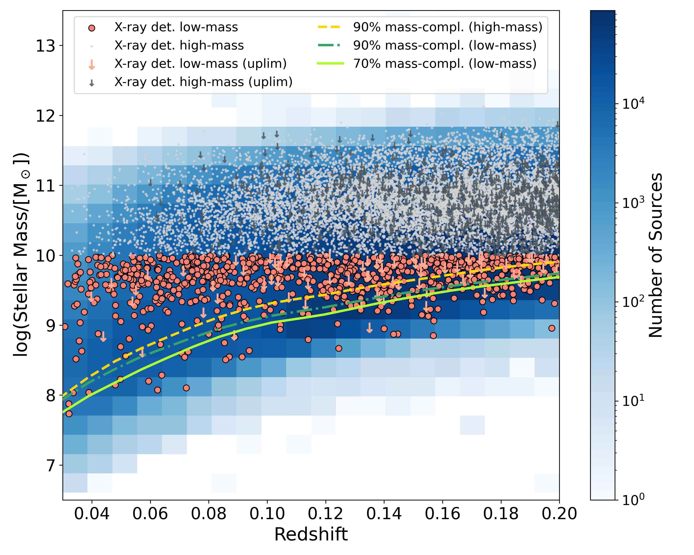
图注：Stellar mass versus redshift of the parent sample of LS10 galaxies (background blue shaded density grid, with darker colours indicating higher number of sources as in the colourbar), overlaid with the X-ray detected low-mass galaxies (light red circles) and high-mass galaxies (small gray dots). $2\sigma$ upper limits in stellar mass are indicated with downward arrows. The 90\% mass-completeness curve for the high- and low-mass galaxies is plotted in yellow (dashed) and dark green (dot-dashed), respectively. The 70\% mass-completeness curve, used for computing the incidence in this work, is plotted with a solid light green curve.
对应解读：建议重点查看的图表第1项；关键图表逐图导读图1中关于母样本 \(M_star-z\) 覆盖、质量完备性和X射线AGN叠加分布的讨论。
入选理由：该图明确展示母样本在恒星质量—红移平面上的密度分布，并叠加低质量和高质量X射线检测星系，同时给出70%和90%质量完备性曲线。它能直接检验低质量样本在0.03<z<0.2内的覆盖范围以及亮度限制导致的低质量高红移缺失。
来源与置信度：\(arxiv_source\)；high；\(arxiv_source\) / aa60578-26.tex:figure[3]
Fig06
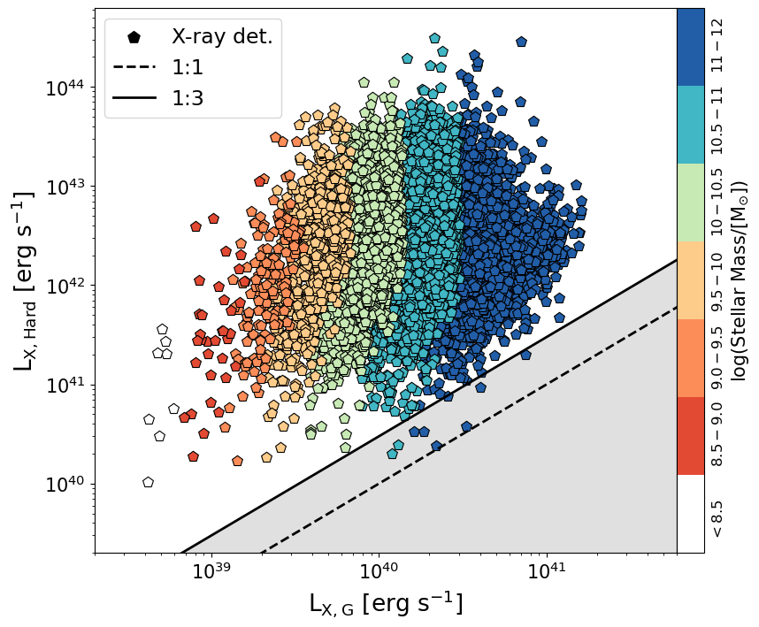
图注：A comparison of the $2-10$~keV luminosity for the X-ray detected sources (colours denote a given stellar mass range as shown by the colourbar) on the y-axis, versus the expected X-ray emission from galactic processes, derived using Eq.~\(\ref{eq:aird_lx_gal}\) with a SFR equal to the main sequence value for a given stellar mass, plotted on the x-axis. The black dashed and solid lines represent the 1:1 and 3:1 relations, respectively.
对应解读：建议重点查看的图表第4项；关键图表逐图导读图3中关于 X射线光度相对于恒星形成相关X射线发射预期是否有显著超额的讨论。
入选理由：该图把检测源的2–10 keV光度与由星系过程预期的X射线发射进行比较，并标出1:1和3:1关系线，可直接评估低质量星系中的X射线发射是否超过X射线双星和热气体等恒星过程贡献，是确认AGN解释可靠性的关键诊断。
来源与置信度：\(arxiv_source\)；high；\(arxiv_source\) / aa60578-26.tex:figure[6]
Fig07
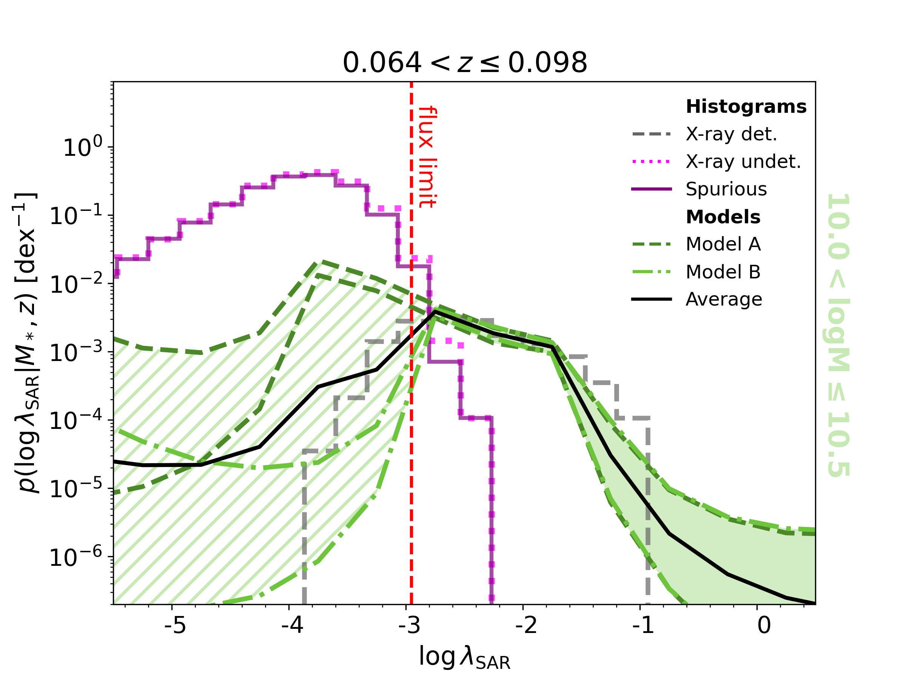
图注：Best-fit $p(\log \lambda_{\rm SAR} | M_*, z)$ distributions from Model A and B for an example stellar mass and redshift bin showing how the average model and the corresponding uncertainty bands are derived in the low and high $\lambda_{\rm SAR}$ regimes (see text for details).
对应解读：模型拟合段落；关键图表逐图导读图6中关于贝叶斯模型、不确定性带、低/高λ_SAR区间和模型形式的讨论。
入选理由：该图展示Model A和Model B在示例质量与红移分箱中的最佳拟合 p(logλ_SAR|M*,z) 以及平均模型和不确定性带的构造方式。虽然不是最终科学结果图，但它能帮助读者理解后续Fig08和Fig10中置信区间与模型外推的来源。
来源与置信度：\(arxiv_source\)；high；\(arxiv_source\) / aa60578-26.tex:figure[7]
强相关工作
这篇工作与 eROSITA 早期 AGN 巡天、XMM-Newton 和 Chandra 深场的 AGN 比吸积率分布研究直接相连。相似研究通常检索关键词包括 “specific accretion rate distribution AGN Aird”, “eROSITA AGN catalog”, “X-ray AGN fraction dwarf galaxies”, “black hole occupation fraction low mass galaxies”。Aird 等关于 X 射线 AGN 概率分布函数的工作为把非探测和选择函数纳入人群统计提供了重要方法背景；Chandra COSMOS、XMM-XXL、Stripe 82X 等则提供了更深或多波段的比较样本。
在矮星系黑洞方面，相关文献包括光学窄线选择的低质量 AGN 样本、Reines 与 Volonteri 关于矮星系黑洞和 \(M_{\rm BH}\)-\(M_\star\) 关系的工作，以及对本地矮星系中核 X 射线源的 Chandra 研究。相反或张力点主要来自不同选择方法给出的 AGN 分数差异：光学选择可能漏掉低金属丰度 AGN，X 射线选择会漏掉强吸收或低吸积率黑洞，射电选择偏向喷流。检索关键词可用 “dwarf galaxy AGN BPT selection”, “Chandra dwarf galaxy nuclear X-ray source”, “black hole occupation fraction dwarf galaxies review”。
同类源和历史原型层面，这不是单一瞬变或单一源论文，而是近邻低红移星系与 X 射线 AGN 的统计目录研究。应把它放在 eROSITA 全天巡天 AGN 目录、ROSAT 全天巡天遗产、Chandra 深场 AGN luminosity function、以及本地矮星系 AGN 占有率研究的背景下阅读。
同一事件 / 同类源线索：
相似工作：
基础理论 / 方法工作：
相反观点 / 张力线索：
6. Multi-wavelength Constraints on the Transient EP250905a
- 来源：arXiv / astro-ph.HE
- 链接：https://arxiv.org/abs/2607.08090v1
- 作者：J. Quirola-Vasquez, P. G. Jonker, A. Levan, D. B. Malesani, F. E. Bauer, A. Martin-Carrillo, G. Corcoran, D. Mata Sanchez
- 评分：novelty 7/10，importance 8/10，relevance 8/10，final 8.70/10
- 推荐理由：Einstein Probe快速X射线暂现源的多波段约束，倾向高红移轻微离轴结构化喷流并考虑透镜放大，和GRB/高能暂现源相关。
中文题目：暂现源 EP250905a 的多波段约束
做了什么：这篇论文研究 Einstein Probe 发现的快速 X 射线暂现源 EP250905a，目标是判断它更像恒星爆发、致密星并合后的喷流余辉，还是其他高能暂现现象。作者联合分析了 X 射线、光学、近红外和射电数据：X 射线快速衰减，早期光学对应体也迅速变暗，近红外和射电没有探测到；视场内有两个候选宿主星系，光谱红移分别为 \(z=0.374\) 和 \(z=2.714\)。论文认为高红移星系 G2 更可能是宿主，EP250905a 可由 \(z=2.714\) 处一个略偏轴的结构化喷流余辉解释，同时前景星系 G1 可能提供中等弱引力透镜放大，估计放大率约为 \(\mu\approx3.9\)。
为什么重要：Fast X-ray transients 是 Einstein Probe 的核心发现空间之一，但这一类源的物理来源非常混杂。EP250905a 的重要性在于，它把快速 X 射线衰减、短暂光学余辉、无射电/近红外探测、双候选宿主和可能透镜放大放在同一个解释框架中，展示了 EP 时代单个 FXT 归类会有多复杂。
理论 / 观测 / 仪器方法价值：对观测来说，本文给出了一套 FXT 后随观测的多波段判别流程：定位、光学暂现体确认、宿主红移测量、宽波段余辉拟合和透镜几何评估。对理论来说，它检验了略偏轴结构化喷流能否解释没有典型明亮 GRB 触发的快速 X 射线暂现源。对方法来说，它提醒读者在高红移暂现源解释中不能忽略前景星系造成的放大偏差。
为什么应该关注：如果 Einstein Probe 每年发现约百个 FXT，那么我们很快会面对一个大样本分类问题：哪些是高红移喷流余辉，哪些是局域恒星灾变，哪些被透镜选择效应增强。EP250905a 是一个很好的案例，因为它不是靠单一波段或单一模型定性，而是把非探测、宿主归属、余辉模型和透镜放大一起纳入证据链。
展开详细解读：文章讲解、背景、理论、重点章节、图表与相关工作
文章详细讲解
科学问题：快速 X 射线暂现源 \(\mathrm{FXT}\) 的持续时间短、发现时通常只有 X 射线触发和有限定位，物理来源可以包括长/短伽马暴余辉、偏轴喷流、超新星激波暴露、白矮星或中子星相关爆发现象、潮汐瓦解事件的早期阶段等。EP250905a 的关键问题不是“有没有一个光学对应体”这么简单，而是要判断一个快速衰减的 X 射线事件、一个快速变暗的光学源、两个投影接近的星系、以及近红外和射电非探测，能否构成一个自洽的物理图像。
作者怎么做：论文整合了 Einstein Probe 的 X 射线发现和后续多波段观测。X 射线部分给出时间衰减和谱性质；光学部分确认早期暂现光源并追踪其快速变暗；近红外和射电部分主要提供上限；宿主方面，作者对两个附近星系获得光谱红移，低红移星系 G1 为 \(z=0.374\)，高红移星系 G2 为 \(z=2.714\)。由于暂现源在天球上距离 G1 中心仅约 \(2.56\,\mathrm{arcsec}\)，作者还估算 G1 作为前景透镜时的爱因斯坦半径和放大率，得到 \(\theta_E\approx1.9\,\mathrm{arcsec}\) 与 \(\mu\approx3.9\) 量级。
关键结果：论文倾向于把 G2 作为 EP250905a 的宿主，而不是把 G1 当成本征宿主。这样一来，事件位于 \(z=2.714\)，观测到的光度和时间尺度需要进行宇宙学距离、时间膨胀和可能透镜放大修正。作者认为宽波段数据最自然地由一个略偏轴的结构化喷流余辉解释：X 射线快速衰减和早期光学衰减来自喷流余辉的同步辐射演化，近红外和射电非探测没有与模型发生明显冲突；前景 G1 的放大可以降低所需的本征能量预算。
局限和下一步：这类结论最脆弱的地方在于宿主归属、透镜质量模型和多波段采样稀疏性。若暂现源真实宿主是 G1，物理解释会变成低红移、较低能量尺度的事件；若 G2 是宿主，则透镜放大率的不确定性会直接影响本征光度和喷流能量。下一步需要更深的晚期成像来检查宿主叠加和残余发射，更高分辨率成像来约束透镜几何，以及在 EP 大样本中建立类似事件的统计分布，判断 EP250905a 是常见偏轴喷流族群的一员，还是一个被透镜选择效应突出出来的个例。
关键结果是怎么做出来的
本文最重要的证据链从事件定位和对应体确认开始。EP250905a 先作为 Einstein Probe 的快速 X 射线暂现源被发现，随后作者搜集 X 射线、光学、近红外和射电后随观测。关键观测事实有三个：X 射线迅速变暗，早期光学源被探测到且很快低于探测极限，近红外和射电未探测到。对于余辉类模型，非探测不是“没有信息”，而是给出了同步辐射谱在低频和晚期的强约束。
样本不是统计大样本，而是单事件多波段个案。作者的分类依赖于多组观测量的相容性：X 射线光变斜率、光学光变斜率、光学到 X 射线的谱能量分布、近红外和射电上限、以及宿主红移。两个候选星系的光谱红移是本文的分水岭：G1 在 \(z=0.374\)，G2 在 \(z=2.714\)。若采用 G2，暂现源的高本征光度、快速衰减和无射电探测可与高红移喷流余辉相容；若采用 G1，则需要另一套低红移物理解释，并且投影接近本身还引入了透镜问题。
显著性和置信度在这篇工作中更接近“多模型一致性”而不是单一 \(p\)-值。作者比较不同物理场景是否能同时满足探测和上限：恒星爆发或普通超新星相关模型通常难以自然解释快速 X 射线衰减和早期光学行为；结构化喷流余辉能够同时给出 X 射线与光学衰减，并可通过观测角、喷流角结构、环境密度和能量归一化调节射电预期，使其不超过射电上限。读者应重点检查论文中宽波段光变拟合图、光谱能量分布图和宿主位置图。
透镜部分是另一个关键结果。暂现源与 G1 中心角距离约 \(2.56\,\mathrm{arcsec}\)，而 G1 的估计爱因斯坦半径约 \(1.9\,\mathrm{arcsec}\)，这使中等放大变得合理。作者给出的 \(\mu\approx3.9\) 不应理解为精确测量，而应理解为在简化质量模型下的量级估计。这个放大率会把观测通量对应的本征能量降低约同一因子，因此对喷流能量、开角和环境密度拟合都有影响。
主要系统误差包括：X 射线定位误差和光学对应体关联概率，早期光学测光的零点和宿主扣除，近红外/射电上限的时间覆盖是否正好错过峰值，G1 的质量分布和速度弥散估计，G2 是否确实为宿主而非偶然投影。稳健性检验应关注模型在不采用透镜放大、采用较低或较高环境密度、改变观测角、改变电子能量分配参数时是否仍能同时通过所有上限。若结论只在非常窄的参数区间成立，其物理说服力会弱于摘要给出的定性判断。
展开背景、理论、公式、模型、章节和图表导读
背景知识
快速 X 射线暂现源通常指在 X 射线波段突然出现、持续时间从几十秒到数小时不等、随后迅速衰减的暂现事件。它们与传统伽马暴、X 射线闪、潮汐瓦解事件、超新星激波 breakout 和致密星并合余辉都有交集，但并不等同于其中任何一类。Einstein Probe 的宽视场软 X 射线监测能力使这类事件的发现率显著提高，因此单个事件的物理归类已经从“稀有发现”转为“大样本分类”的前置问题。
历史上，很多 FXT 的困难在于缺少高精度定位和快速多波段后随。只有 X 射线光变时，快速衰减可以被多种机制复制；只有光学暂现体时，宿主红移和能量尺度又经常不确定。EP250905a 的特别之处在于，它有早期光学探测、有 X 射线衰减、有多波段上限，并且有两个红移完全不同的近邻星系可供解释。这种情况很适合展示 FXT 归类中“宿主选择”如何支配物理结论。
从观测背景看，结构化喷流和偏轴观测在 GW170817 之后成为解释弱或迟发高能暂现源的重要框架。若观测者不在喷流轴线上，早期高能辐射会被削弱或延迟，而余辉光变形状与观测角、喷流角结构和外部介质密度密切相关。EP250905a 若位于 \(z=2.714\)，则可能代表一种没有被传统伽马射线触发器强烈捕获、但被软 X 射线宽视场巡天发现的高红移喷流余辉。
为什么现在值得重新看？因为 Einstein Probe 会把过去零星发现的 FXT 变成系统样本，而 Vera C. Rubin Observatory、JWST、VLT、ALMA、SKA pathfinder 等设施可以提供深度后随。随着事件数增加，引力透镜也不再只是极端强透镜多像系统的问题；前景星系造成的中等放大会改变高红移暂现源的发现概率和推断能量函数。
该领域常见误区有三点。第一，把“没有射电探测”简单理解为排除喷流；实际上射电峰值时间和亮度高度依赖环境密度、能量、微物理参数和观测角。第二，把最近的星系自动当宿主；对于高红移暂现源，前景星系投影接近可能正是透镜放大的来源。第三，把透镜放大率当成独立事实；在没有高分辨率透镜成像和动力学质量约束时，\(\mu\) 是模型依赖量，应与宿主归属和余辉拟合共同评估。
基础理论 / 方法脉络
从基础物理图像看，喷流余辉来自相对论性外流与外部介质相互作用。外流扫掠环境气体后形成激波，电子被加速为非热分布，磁场被放大，电子在磁场中产生同步辐射。观测到的 X 射线、光学、近红外和射电可以是同一同步辐射谱在不同频段和不同时刻的截面。
若喷流是轴对称且结构化的，单位立体角能量和初始洛伦兹因子会随偏离喷流轴的角度变化。观测者的视线与喷流轴之间有观测角 \(\theta_{\rm obs}\)。当 \(\theta_{\rm obs}\) 略大于核心角 \(\theta_c\) 时，早期辐射比轴上观测更暗、更软或更快演化；随着喷流减速，相对论性 beaming cone 变宽，更多喷流核心辐射进入视线，光变形状会发生改变。
本文相关的关键观测量包括 X 射线通量 \(F_X(t)\)、光学通量或星等 \(F_{\rm opt}(t)\)、近红外上限、射电上限、红移 \(z\)、光度距离 \(D_L(z)\)、以及可能的透镜放大率 \(\mu\)。如果暂现源位于 G2 的 \(z=2.714\)，则观测时间与源静止系时间满足 \(t_{\rm rest}=t_{\rm obs}/(1+z)\)，观测通量对应的本征光度还要除以 \(\mu\)。
引力透镜部分可用前景星系近似质量模型理解。若 G1 近似为奇异等温球，爱因斯坦半径由速度弥散和角直径距离比决定。源相对透镜的位置越接近爱因斯坦半径，放大越明显。本文的 \(\theta_E\approx1.9\,\mathrm{arcsec}\) 与投影角距约 \(2.56\,\mathrm{arcsec}\) 意味着放大不是荒谬假设，但精确值取决于 G1 的质量分布、椭率、外部剪切和源在源平面的真实位置。
主要退化关系集中在两组参数之间。余辉拟合中，喷流能量、环境密度、电子能量分数、磁场能量分数和观测角可以部分互相补偿；透镜拟合中，前景星系质量、源位置和放大率互相耦合。多波段上限的价值就在于压缩这些退化，例如射电上限可限制高密度或高能量模型，早期光学衰减可限制观测角和喷流结构。
公式与推导
第一步，把观测通量与本征谱光度联系起来。若源在红移 \(z\)、光度距离为 \(D_L\)，并受到透镜放大 \(\mu\)，则频率 \(\nu_{\rm obs}\) 处的观测通量密度可写为
这里 \(L_{\nu_{\rm em}}\) 是源静止系谱光度。这个式子说明，若 \(\mu\approx3.9\)，同一观测通量对应的本征谱光度约降低 \(\mu\) 倍。
第二步，时间尺度要进行宇宙学修正：
对 \(z=2.714\) 的宿主假设，观测到的一天对应源静止系约 \(0.269\) 天。这会影响对“快速衰减”的物理判断，因为激波动力学和冷却频率演化应在静止系时间下比较。
第三步，余辉激波的能量守恒给出相对论减速的基本尺度。对均匀外部介质数密度 \(n\)，各向同性等效动能 \(E_{\rm iso}\) 与洛伦兹因子 \(\Gamma\) 近似满足
这里 \(R\) 是激波半径，\(m_p\) 是质子质量，\(c\) 是光速。该式忽略辐射损失和几何结构，但给出 \(E_{\rm iso}\)、\(n\)、\(R\) 与 \(\Gamma\) 的主导标度。
第四步，观测时间与半径的关系近似为
结合上一式可以得到 Blandford-McKee 阶段的标度 \(\Gamma\propto E_{\rm iso}^{1/8}n^{-1/8}t_{\rm rest}^{-3/8}\)。这解释了为什么余辉光变对能量和密度的依赖相对较弱，但对时间演化非常敏感。
第五步，激波后电子通常假设为幂律分布：
其中 \(p\) 是电子谱指数，\(\gamma_m\) 是最小电子洛伦兹因子。同步辐射谱斜率和光变衰减指数都与 \(p\) 相关，因此光学到 X 射线颜色可用于检验同一余辉分量是否成立。
第六步，典型同步辐射频率由电子能量和磁场决定：
这里 \(q_e\) 和 \(m_e\) 是电子电荷和质量，\(B'\) 是共动系磁场。若 \(\nu_m\) 穿过光学或射电波段，光变会出现峰值或谱斜率变化；因此射电非探测能限制 \(B'\)、\(n\) 和 \(E_{\rm iso}\) 的组合。
第七步，在某一谱段内，通量常可近似写成幂律：
其中 \(\alpha\) 是时间衰减指数，\(\beta\) 是谱指数。X 射线和光学是否共享一致的 \(\alpha\) 与 \(\beta\)，是判断它们是否来自同一余辉分量的核心诊断。
第八步，结构化喷流可用角向能量分布表示，例如高斯型
这里 \(\theta\) 是相对喷流轴的角距，\(\theta_c\) 是核心角。略偏轴观测对应 \(\theta_{\rm obs}\gtrsim\theta_c\)，会改变早期通量和峰值时间，是本文“mildly off-axis structured jet”解释的数学骨架。
第九步，若 G1 近似为奇异等温球，爱因斯坦半径为
其中 \(\sigma_v\) 是透镜星系速度弥散，\(D_{\rm ls}\) 是透镜到源的角直径距离，\(D_s\) 是观测者到源的角直径距离。本文报告的 \(\theta_E\approx1.9\,\mathrm{arcsec}\) 表明 G1 的质量足以造成非忽略放大。
第十步，对奇异等温球的单像外侧近似，若源角位置为 \(\theta\)，放大率量级可写为
代入 \(\theta\) 与 \(\theta_E\) 的量级可以得到数倍放大。这一公式的适用条件是球对称、无显著外部剪切且位置解释简单；真实系统中 \(\mu\) 应视为模型依赖参数。
第十一步，模型与数据比较通常通过似然完成。若第 \(i\) 个波段/历元的通量测量为 \(F_i\)、误差为 \(\sigma_i\)、模型为 \(M_i(\boldsymbol{\Theta})\)，高斯近似下
参数 \(\boldsymbol{\Theta}\) 包括喷流能量、环境密度、微物理参数、观测角、红移和放大率等。对非探测，上式需替换或扩展为截断似然/上限似然，以避免把上限当作普通测量点。
模型拟合 / 应用方法
本文这类分析的核心拟合量是多波段通量随时间的演化，而不是单一峰值亮度。对 EP250905a，模型至少要同时解释 X 射线快速衰减、早期光学探测和衰减、近红外上限、射电上限，以及不同宿主红移假设下的光度尺度。若采用结构化喷流余辉，典型自由参数包括总能量或核心各向同性等效能量、核心角 \(\theta_c\)、观测角 \(\theta_{\rm obs}\)、外部介质密度 \(n\)、电子谱指数 \(p\)、电子和磁场能量分数、宿主消光以及透镜放大率 \(\mu\)。
似然构造需要区分探测点和非探测点。探测点可以用通量空间的高斯似然或星等空间的近似误差模型；非探测点应以单侧约束进入，例如模型超过 \(3\sigma\) 上限时受到惩罚。射电和近红外非探测尤其重要，因为偏轴喷流模型在晚期低频段可能产生可观峰值；如果模型为了拟合 X 射线和光学而预言过亮射电，就应被排除。
参数退化非常明显。增大 \(E_{\rm iso}\) 可提高所有波段通量，但降低环境密度或磁场能量分数可压低射电；增大 \(\theta_{\rm obs}\) 可让早期辐射变暗，但也会改变光变峰值时间；引入 \(\mu>1\) 会降低所需本征能量，但不会改变观测颜色和时间衰减形状。宿主红移也与能量尺度和静止系时间耦合，因此 G1 与 G2 不是简单的位置选择，而是两套完全不同的物理标尺。
残差诊断应重点看三类现象。第一，X 射线和光学是否能由同一谱段或相邻谱段的同步辐射解释，还是需要额外高能分量。第二，模型是否系统性高于近红外或射电上限。第三，早期光学衰减是否与 X 射线衰减在时间上对齐；若存在明显色演化或断裂，简单幂律余辉可能不足。
系统误差方面，光学对应体与宿主扣除会影响早期光变斜率，X 射线谱吸收会影响未吸收通量，红移归属会影响距离和 \(K\)-校正，透镜质量模型会影响 \(\mu\)。实际应用中，建议把 \(\mu\) 作为带先验的不确定参数，而不是固定常数；同时分别报告无透镜、弱透镜和中等透镜情形下的能量预算，以便判断结论是否依赖透镜假设。
模型可能失败的方式也很清楚：如果晚期深射电观测发现比模型高得多的发射，可能需要更高密度环境或额外能量注入；如果深光学/近红外成像显示暂现源精确落在 G1 的恒星形成区内，G2 宿主假设会变弱；如果高分辨率成像没有支持 G1 的透镜质量或几何，\(\mu\approx3.9\) 的能量修正就应降低权重。
重点章节 / 结果段落怎么读
-
数据与发现部分：先读 Einstein Probe 的触发信息、X 射线定位、持续时间和衰减。这里决定 EP250905a 是否属于典型 FXT 行为，以及后续光学源是否在合理误差区域内。注意作者如何处理 X 射线通量、谱吸收和时间分段。
-
多波段后随观测部分：重点看光学探测的历元、滤光片、星等或通量、以及消失速度；同时看近红外和射电观测的时间和深度。非探测上限的时间位置很重要，因为它们只有在覆盖模型预期峰值附近时才强约束。
-
宿主星系与红移部分：这是全文解释的枢纽。读者应比较 G1 与 G2 的角距离、光谱红移、星系性质和偶然重合概率。不要只看哪个星系更亮或更近；高红移宿主加前景透镜是本文的核心情景。
-
透镜估算部分：应检查作者采用的质量模型、爱因斯坦半径 \(\theta_E\) 的推导、暂现源相对 G1 的角距离以及放大率 \(\mu\) 的不确定性。这里的结论通常是量级判断，不是强透镜系统那种由多像几何精确约束的模型。
-
宽波段物理解释部分：最后读结构化喷流余辉拟合，关注模型是否同时穿过 X 射线和光学点且低于近红外/射电上限。若论文有不同红移或不同物理场景比较，读者应优先看模型比较表和残差，而不是只看最佳拟合曲线是否视觉上漂亮。
建议重点查看的图表
-
X 射线和光学光变图：检查横轴时间是否为观测系或静止系，纵轴是通量还是星等；看 X 射线与光学是否共享类似衰减趋势，以及是否存在断裂或平台。
-
多波段 SED 或宽波段模型图：检查 X 射线、光学、近红外和射电是否能由同一同步辐射谱连接；特别看模型线是否超过任何上限。
-
宿主定位图：检查 EP X 射线误差区域、光学暂现体位置、G1 和 G2 的相对位置；重点看暂现源与 G1 中心的 \(2.56\,\mathrm{arcsec}\) 分离是否几何上支持透镜讨论。
-
星系光谱图：检查 G1 的 \(z=0.374\) 和 G2 的 \(z=2.714\) 红移识别线是否清楚，是否可能有线识别歧义。
-
透镜几何或放大率诊断图：若有，应看 \(\theta_E\)、源位置和 \(\mu\) 的关系；若没有图，应在表格或文字中检查质量模型假设。
-
参数约束或模型比较表：检查结构化喷流参数、环境密度、能量、观测角、\(\mu\) 的取值范围，以及是否给出无透镜情形的对照。
-
非探测上限表：近红外和射电上限的观测时间、频率和深度决定它们对余辉模型的限制强度，不能只看“未探测”三个字。
关键图表逐图导读
图 1：通常应是发现图或多波段定位图。横纵坐标为天球坐标，标出 X 射线定位区域、光学暂现体位置和附近星系。读图重点是光学对应体是否位于 X 射线误差范围内，以及 G1、G2 与暂现源的角距离。陷阱是把投影最近或最亮的星系直接当宿主；本文恰恰讨论前景 G1 可能是透镜而 G2 可能是宿主。
图 2：光变图应把 X 射线和光学随时间变化放在同一时间轴上，可能还包括近红外和射电上限。读者应看模型线是否同时解释探测点与上限，尤其是早期光学衰减是否与 X 射线衰减相容。若纵轴为星等，向上/向下的亮度方向要特别注意；若不同波段有任意平移，也要避免过度解读绝对颜色。
图 3：星系光谱图应展示 G1 和 G2 的谱线识别。G1 的低红移谱线和 G2 的高红移谱线是宿主判断的基础。读图时要检查谱线标注是否有多个一致特征支持，而不是单条线红移；若只有单线识别，宿主红移的置信度会显著下降。
图 4：宽波段 SED 或余辉模型图通常以频率为横轴、通量密度为纵轴，展示若干历元的观测点和模型曲线。重点看光学到 X 射线的谱斜率是否合理，以及近红外/射电上限是否压低了低频端。陷阱是同步辐射谱可以通过微物理参数调节，视觉拟合好不等于参数唯一。
图 5：透镜几何或质量模型图若存在，应显示 G1 的爱因斯坦半径、暂现源投影位置和可能放大率。读者应看 \(\theta_E\approx1.9\,\mathrm{arcsec}\) 与 \(2.56\,\mathrm{arcsec}\) 分离的相对关系。陷阱是把简化奇异等温球放大率当成精确实测；真实星系椭率和外部剪切会改变 \(\mu\)。
图 6：参数约束角图或模型比较表若存在，应关注 \(E_{\rm iso}\)、\(n\)、\(\theta_{\rm obs}\)、\(\theta_c\)、\(p\) 和 \(\mu\) 的置信区间。若参数后验贴近先验边界，说明数据约束不足；若无透镜模型也能拟合，只是能量更高，那么透镜是改善能量预算而非唯一解释。
论文原图 / 可嵌入图片
Fig10
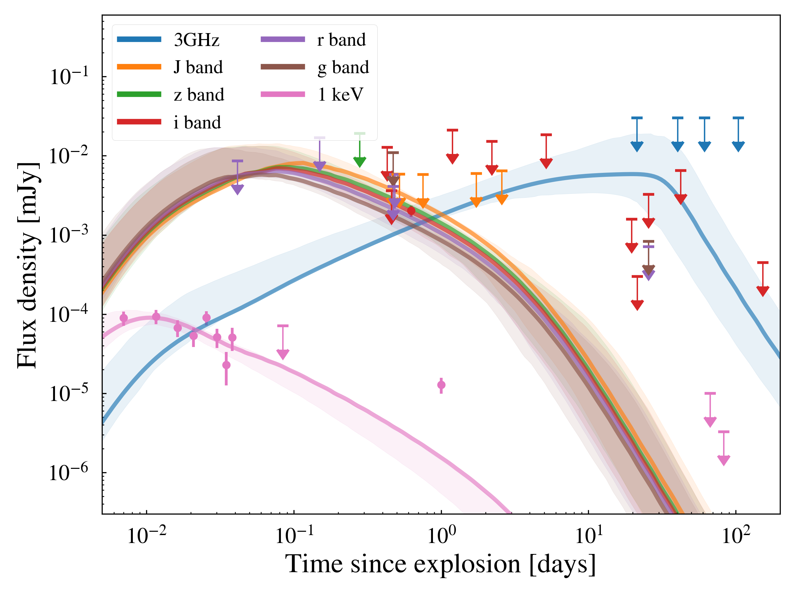
图注：Multi-wavelength best fit of EP250905a, using \(\textsc{redback}\) \(\citet{Sarin2024},\) at an assumed redshift of $z_{\rm{G2}}=2.714$. The afterglow model used was the Gaussian redback model \(\citep{Lamb2018b},\) including synchrotron self-absorption effects \(\citep{Lamb2019a}.\) Each color depicts a different energy band, where the solid lines and the shaded regions indicate the maximum likelihood model and the 90\% confidence interval, respectively, for each energy band.
对应解读：“多波段 SED 或宽波段模型图”“参数约束或模型比较表”以及模型拟合段落中关于结构化喷流余辉、非探测上限和90%置信区间的讨论。
入选理由：这是最直接支撑论文核心结论的图：在假定 G2 红移 z=2.714 下给出多波段余辉最佳拟合，包含不同能段的模型线和90%置信区间，可检验模型是否同时解释 X 射线、光学以及低频/晚期上限，是判断“略偏轴结构化喷流余辉”是否自洽的关键图。
来源与置信度：\(arxiv_source\)；high；\(arxiv_source\) / aa60911-26.tex:figure[10]
Fig04
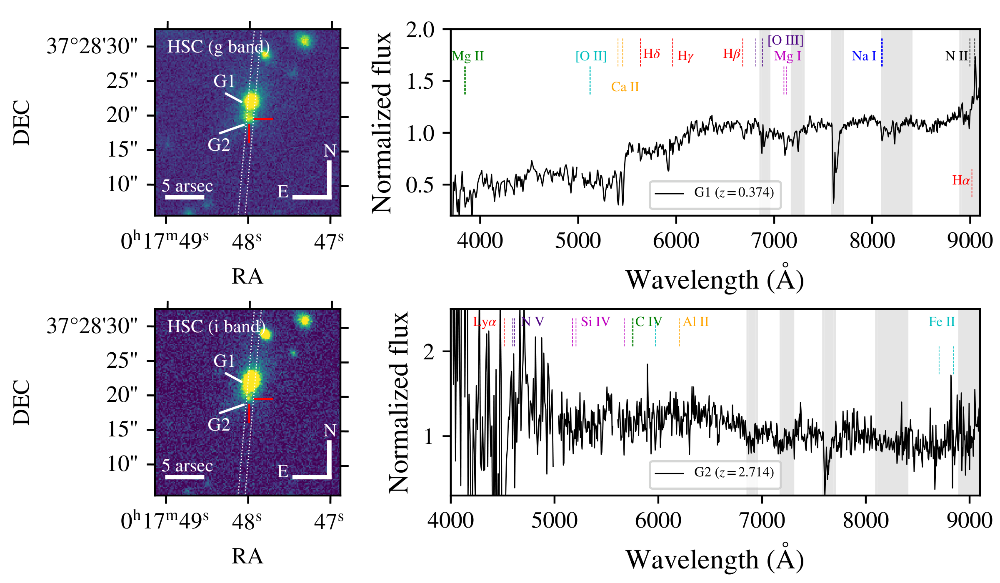
图注：\(\emph{Left panels:}\) $g$-band (top) and $i$-band (bottom) HSC images \(\citep{Tanaka2021}\) of the field of EP250905a. The two host galaxy candidates are labeled as G1 and G2; the orientation of the 1\arcsec~wide GTC/OSIRIS+ slit is marked with a white-dotted rectangle. The position of the optical counterpart (see Sect.~\ref{sec:opt-counter}) is denoted by red tick marks. \(\emph{Right panels:}\) GTC-OSIRIS+ R1000R/R1000B optical spectrum of host galaxy candidates G1 (top panel; ${\approx}19.7$~days after $T_0$) and G2 (bottom panel; ${\approx2}0.7-25.6$~days after $T_0$). For the G1 galaxy, we indicate the location of the H$\alpha$, [O II] and [O III], H$\beta$, H$\gamma$ and H$\delta$ lines consistent with a redshift of $z_{\rm{G1}}=0.374$. For the G2 galaxy (bottom panel), we identify the interstellar medium (ISM) absorption lines Si IV, C IV, Al II, and Fe II, all consistent with a redshift of $z_{\rm{G2}}=2.714$. We also show wavelength regions affected by telluric lines (gray shaded regions). The data was rebinned using \(\texttt{SpectRes}\) \(\citep{Carnall2017}\) to a resolution of 10~\(\AA\)~(R1000R) and 15~\(\AA\)~(R1000B) for visibility purposes.
对应解读：“宿主定位图”“星系光谱图”以及逐图导读中关于 G1/G2 相对位置、G1 的 z=0.374 和 G2 的 z=2.714 红移识别的部分。
入选理由：一张图同时给出 HSC 成像中的 G1、G2、光学暂现体位置、光谱狭缝方向，以及两候选星系的光谱红移线标注。它直接支撑宿主归属和前景透镜讨论，比单纯定位或单纯光谱图更有科学信息量。
来源与置信度：\(arxiv_source\)；high；\(arxiv_source\) / aa60911-26.tex:figure[4]
Fig09
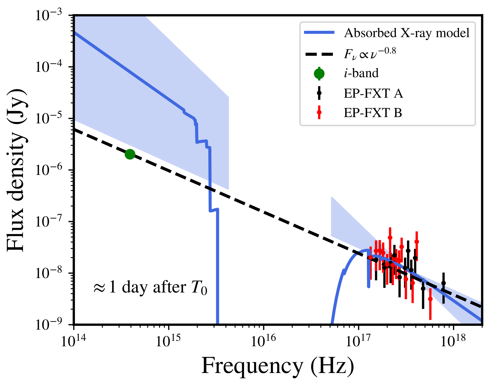
图注：The optical to X-ray spectral energy distribution of EP250905a taken at $\sim$\,1~day after $T_0$. The solid blue line represents the best-fit absorbed X-ray power-law model (see Sect.~\ref{sec:FXT}) extrapolated to optical wavelengths. We fit a power-law index of $\beta_{\rm{OX}}=-0.80\pm0.03$ between the optical and the X-ray data (dashed line). The early $i$-band OSIRIS+ detection (the error is smaller than the marker) is marginally consistent with an extrapolation of the unabsorbed X-ray spectrum represented by the blue shaded region at 90\% confidence level.
对应解读：“多波段 SED 或宽波段模型图”和模型拟合段落中关于光学到 X 射线谱斜率、同一同步辐射谱连接以及吸收修正的讨论。
入选理由：该图展示约1天时的光学到 X 射线 SED，包含吸收 X 射线幂律外推、未吸收谱的90%置信带以及 β_OX=-0.80±0.03，对判断早期光学点是否与 X 射线余辉同源非常关键。
来源与置信度：\(arxiv_source\)；high；\(arxiv_source\) / aa60911-26.tex:figure[9]
Fig05
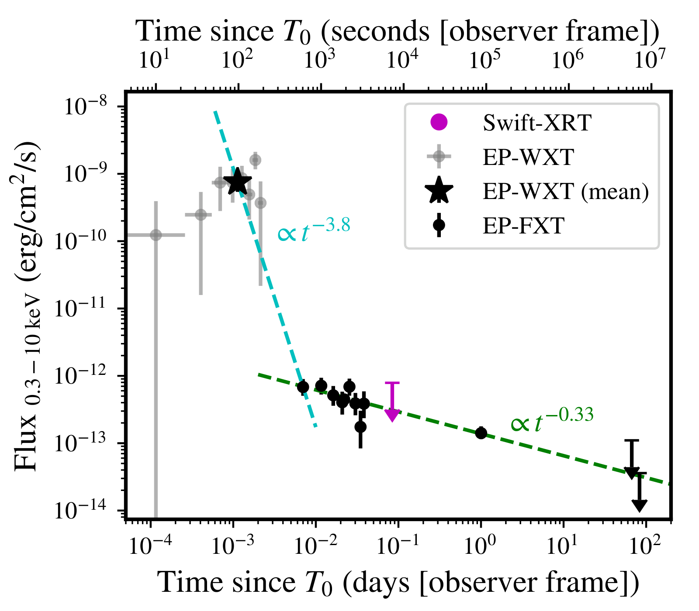
图注：The 0.3-10~keV X-ray light curve of EP250905a. The first data point is the EP-WXT mean flux (and time), and the next data points are from the EP-FXT (detections and upper limits) and \(\emph{Swift}-XRT\) (upper limit) observations. The cyan and green dashed lines indicate the best-fit power laws.
对应解读：“X 射线和光学光变图”中关于 X 射线快速衰减、上限和幂律拟合的部分，以及模型拟合段落中对 X 射线时间演化的要求。
入选理由：该图给出0.3–10 keV X 射线光变曲线，包含 EP-WXT、EP-FXT 和 Swift-XRT 的探测/上限以及最佳拟合幂律，是确认 EP250905a 快速衰减性质和余辉时间行为的主要依据。
来源与置信度：\(arxiv_source\)；high；\(arxiv_source\) / aa60911-26.tex:figure[5]
Fig06
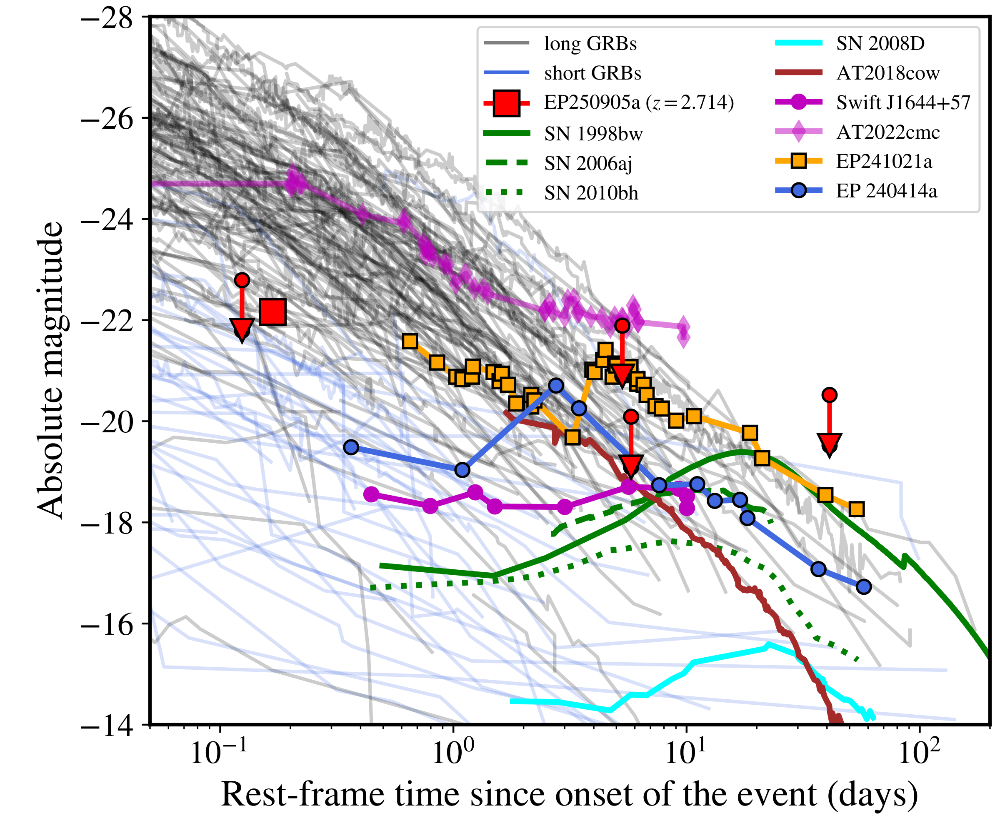
图注：$i$-band light curve comparison of EP250905a and a sample of transients, such as long and short GRBs \(\citep{Kann2006,Kann2010,Kann2011,Nicuesa2012,Kann2024},\) the SN SBO event XRF~080109/SN~2008D, the X-ray flashes XRF~100316D/SN~2010bh and SN~2006aj/XRF~060218, the broad-line Ic SN~1998bw \(\citep{Clocchiatti2011},\) the LFBOT AT2018cow \(\citep{Xiang2021},\) the jetted TDEs AT2022cmc and \(\emph{Swift}\)~J1644+57 \(\citep{Levan2011,Andreoni2022},\) and the EP-collapsar FXTs EP240414a \(\citep{van_Dalen2024}\) and EP241021a \(\citep{Quirola2026}.\) The squares and triangles depict detections and $3\sigma$ upper limits, respectively.
对应解读：“X 射线和光学光变图”及逐图导读中关于早期光学衰减、光学上限以及与 GRB、XRF、SN、LFBOT、TDE 等暂现源比较的部分。
入选理由：该图集中展示 i 波段探测和3σ上限，并与多类高能暂现源样本比较，有助于判断 EP250905a 的光学衰减是否更接近 GRB/FXT 余辉而非普通超新星或 TDE。
来源与置信度：\(arxiv_source\)；high；\(arxiv_source\) / aa60911-26.tex:figure[6]
Fig03
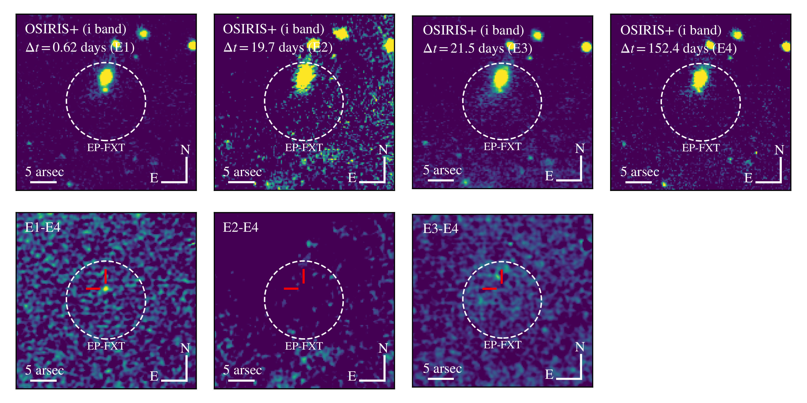
图注：\(\emph{Top panels:}\) From left to right, we show our four GTC/OSIRIS+ $i$-band observations centered on the EP-FXT position (dashed circle). The time since $T_0$ in days is indicated in the panels. \(\emph{Bottom panels:}\) Difference images derived using the HOTPANTS software suite, where we subtracted the last epoch (rightmost panel of the above row), also known as the template image, from the first three observations (E4). In the E1-E4 difference image, an optical counterpart marked by red tick marks is clearly detected. This counterpart is not detected in subsequent epochs.
对应解读：“宿主定位图”和逐图导读中关于光学暂现体确认、差分成像、早期探测后快速消失的部分。
入选理由：该图通过多历元 GTC/OSIRIS+ 成像和差分图直接显示光学对应体只在第一历元清楚出现、随后消失，是确认光学暂现源真实性和快速变暗行为的重要观测证据。
来源与置信度：\(arxiv_source\)；high；\(arxiv_source\) / aa60911-26.tex:figure[3]
强相关工作
这篇工作与偏轴喷流和结构化喷流余辉研究直接相关。GW170817 之后，结构化喷流从理论选项变成观测上被广泛使用的模型族；EP250905a 则把类似思想应用到 Einstein Probe 发现的快速 X 射线暂现源。可检索关键词包括“structured jet afterglow”、“off-axis GRB afterglow”、“Einstein Probe fast X-ray transient”、“FXT optical counterpart”和“weak lensing transient magnification”。
它也与 Chandra 深场快速 X 射线暂现源、X 射线闪、暗伽马暴和高红移余辉候选体有关。相反或竞争解释包括超新星激波 breakout、低红移恒星爆发现象、致密星并合后各向异性余辉、以及偶然投影的无关光学暂现源。对于 EP250905a，最值得继续追踪的不是某个单一同类，而是“同一事件的后续深成像”和“EP FXT 样本中有前景星系投影接近的事件比例”。
同一事件方面，目前可确认的公开入口是本文 arXiv 页面。若要寻找后续或独立分析，应检索“EP250905a”、“Quirola-Vasquez EP250905a”、“Einstein Probe EP250905a”以及星系 G1/G2 的坐标名。若未来出现同源射电晚期探测、JWST/VLT 深成像或强/弱透镜重分析，这些会直接改变本文的宿主和能量解释。
同一事件 / 同类源线索：
相似工作：
（未提供）
基础理论 / 方法工作：
相反观点 / 张力线索：
（未提供）
7. SACRA-K: A Performance-Portable Numerical Relativity Code with Kokkos
- 来源：arXiv / astro-ph.HE
- 链接：https://arxiv.org/abs/2607.08743v1
- 作者：Ming-Zhe Han, Kenta Kiuchi, Masaru Shibata
- 评分：novelty 8/10，importance 8/10，relevance 7/10，final 8.65/10
- 推荐理由：面向致密双星的GPU可移植数值相对论代码，验证充分且对GW/NS merger多信使建模有实用价值，虽非伽马射线主线。
中文题目：SACRA-K：基于 Kokkos 的性能可移植数值相对论代码
做了什么：这篇文章发布并验证了 SACRA-K：把原先以 Fortran/MPI 为主的数值相对论代码 SACRA-MPI 移植到 C++/Kokkos，使同一套致密双星并合求解器能在 NVIDIA GPU、AMD APU/GPU 和 CPU 等平台上运行。物理内容没有换：仍用 BSSN 时空演化、Z4c 约束传播、Berger-Oliger box-in-box 自适应网格和广义相对论流体的高分辨率激波捕捉。作者用双黑洞、黑洞-中子星、双中子星三类标准问题同 SACRA-MPI 对照，发现波形差异低于不同数值相对论代码之间的散布，也低于当前引力波探测器可分辨阈值；双中子星并合相位表现出二阶收敛；小规模测试中在 NVIDIA A100 或 AMD MI300A 上比 CPU 版约快一个数量级，并展示到 \(256\) 个加速器设备的扩展性。
为什么重要：第三代引力波探测器、多信使双中子星并合建模和高精度波形模板都需要大量数值相对论模拟。问题不只是“算得准”，还包括能否把同一物理代码长期运行在快速变化的异构硬件上。SACRA-K 的重要性在于，它把一个成熟的致密双星代码从特定 CPU/MPI 生态推进到性能可移植框架，同时用波形、约束、对称性、收敛阶和探测器可分辨性来证明移植没有牺牲物理可信度。
理论 / 观测 / 仪器方法价值：对理论建模，它提供了可在现代加速器上批量生产双黑洞、黑洞-中子星和双中子星波形的基础设施；对观测解释，它降低了生成校准波形、误差预算和系统参数扫描的计算成本；对方法和仪器侧，它给出了一套数值相对论代码迁移到 Kokkos 的工程范例，说明性能可移植并不必然意味着重新设计物理算法。
为什么应该关注：如果你关心引力波数据分析中的波形系统误差、核物质状态方程约束、并合后信号或未来探测器模板库，这篇文章值得看。它不是提出新天体物理情景，而是在解决一个会直接限制未来科学产出的瓶颈：高保真数值相对论模拟能否在 GPU/APU 时代规模化、可复现、跨平台地运行。
展开详细解读：文章讲解、背景、理论、重点章节、图表与相关工作
文章详细讲解
科学问题：数值相对论已经能可靠模拟双黑洞、黑洞-中子星和双中子星并合，但高精度参数空间覆盖仍受计算成本限制。传统大型代码常为 CPU 集群和特定 MPI/OpenMP 模式优化，而超算硬件正在快速转向 GPU、APU 和多厂商异构节点。本文要回答的不是新的广义相对论物理解，而是一个更基础的问题：能否把成熟的 SACRA-MPI 物理与数值算法移植到 Kokkos 性能可移植框架，同时保持波形精度、约束控制、对称性和收敛性质。
作者怎么做：SACRA-K 从 Fortran 版 SACRA-MPI 移植到 C++，用 Kokkos 抽象并行循环、内存空间和执行空间。物理上保留 BSSN 时空演化并加入 Z4c 约束传播，网格上保留 box-in-box Berger-Oliger 自适应网格细化，流体部分继承 NANASI 的广义相对论高分辨率激波捕捉方法。验证样例覆盖双黑洞、黑洞-中子星和双中子星，目的是避免只在真空或只在流体问题上验证移植正确性。对照对象是原 SACRA-MPI，而评判标准包括波形相位和振幅差异、约束误差、对称性保持、分辨率收敛和硬件扩展。
关键结果：波形差异显著小于独立数值相对论代码之间常见散布，也小于同一代码改变分辨率带来的变化；用当前探测器的内积判据看，差异处在不可分辨或临界以下的范围。对双中子星并合，作者报告引力波相位呈现二阶收敛，这很关键，因为流体激波、网格细化边界和并合接触面通常会破坏理想高阶收敛。另一个工程上重要但物理上也相关的结果是，\(\pi\) 对称性能在比特级精确保持，这说明并行归约、内存布局和设备执行没有引入破坏离散对称性的非确定性误差。性能方面，小测试在 A100 GPU 集群和 MI300A APU 集群上相对 CPU SACRA-MPI 有约一个数量级加速，并测试到 \(256\) 个加速器设备。
局限和下一步：这类论文的主要局限在于验证样例有限，不等于所有质量比、自旋、状态方程、磁场、辐射输运和长时间并合后演化都已充分验证。文中强调“保留 SACRA-MPI 的物理和数值方法”，因此它不是对微物理或湍流磁流体的新求解器。下一步自然包括更系统的参数空间生产、与其他 NR 代码的公开基准比较、加入或优化更复杂微物理模块、在更大规模机器上测试强/弱扩展，以及把误差预算直接传播到波形模板和参数估计中。
关键结果是怎么做出来的
本文的核心证据链从样例选择开始。作者没有只跑最容易的真空双黑洞，而是选择双黑洞、黑洞-中子星和双中子星三类问题。双黑洞测试主要检验 BSSN/Z4c 时空演化、黑洞处理、网格细化和引力波提取；黑洞-中子星加入潮汐撕裂、吸积流和强场流体；双中子星则检验两个流体星接触、并合、激波以及状态方程相关的相位积累。这样的样本设计使“移植正确性”不局限在某一物理模块。
对波形一致性的判断不是肉眼比较。通常数值相对论代码会比较主模 \(h_{22}\) 的相位 \(\phi(t)\)、振幅 \(A(t)\)、辐射能角动量以及约束范数。本文摘要给出的结论是，SACRA-K 与 SACRA-MPI 的波形差异低于独立 NR 代码之间的散布，也低于同一代码分辨率变化导致的误差。这意味着移植误差不是当前误差预算的主导项。对引力波观测而言，作者还用“可分辨性”语言表达：若残差波形的噪声加权范数没有超过探测器阈值，当前探测器不能把 SACRA-K 与 SACRA-MPI 的结果区分为不同物理信号。
双中子星并合的二阶相位收敛是最值得细看的一项数值结果。理想情况下，高阶有限差分和高阶重构可能给出更高阶收敛；但在有激波、接触不连续、AMR 边界和大变形流体的实际 BNS 问题中，二阶收敛已经是很有说服力的整体表现。读者应关注论文中不同分辨率相位曲线是否按预期缩放、并合前后是否同样稳定，以及收敛阶是由全时段拟合给出还是只在干净 inspiral 阶段给出。
统计或判据方面，这类代码验证通常不会像观测发现那样报告事件数显著性，而是用数值误差诊断替代。关键量包括约束残差的范数、不同分辨率波形差 \(\Delta h\)、噪声加权失配 \(\mathcal{M}\)、相位误差 \(\Delta \phi\) 和强/弱扩展效率。作者的“低于可分辨阈值”应对应某种基于探测器噪声谱 \(S_n(f)\) 的波形内积或残差信噪比。读者应检查这个阈值使用的是 Advanced LIGO 当前灵敏度、设计灵敏度还是更一般的尺度化判据。
系统误差和稳健性主要来自四处：首先是不同硬件后端的浮点执行顺序、归约顺序和舍入差异；其次是 AMR 边界插值与时间子循环；第三是流体重构和 Riemann 求解器在设备端实现是否与 CPU 版完全等价；第四是并行域分解对对称性和守恒量的影响。摘要中特别提到 \(\pi\) 对称性在比特级精确保持，说明至少对该对称设置，设备并行没有引入可见的非确定性破坏。性能图表则支撑另一个结论：加速不是单节点偶然优化，而能扩展到 \(256\) 个加速器。
展开背景、理论、公式、模型、章节和图表导读
背景知识
研究对象是致密双星并合的数值相对论模拟。双黑洞、黑洞-中子星和双中子星在强引力、强非线性、可能含激波和高密核物质的条件下演化，解析近似只能覆盖部分阶段。并合前较远距离可用后牛顿或有效一体模型，环降阶段可用黑洞微扰论，但最后几个轨道、并合瞬间和并合后短时演化通常必须依靠三维数值相对论。
历史上，数值相对论的第一个瓶颈是稳定演化爱因斯坦方程。BSSN 形式、移动穿刺方法、约束阻尼和适当的规范条件使双黑洞长期稳定模拟成为可能。之后瓶颈转向物理复杂度和计算规模：双中子星需要广义相对论流体、真实状态方程、中微子、磁场和可能的喷流；黑洞-中子星需要处理潮汐撕裂、盘形成和黑洞吸积边界。SACRA 系列代码正是在这个背景下发展起来的致密天体并合工具。
为什么现在值得重新看，是因为硬件生态发生了实质变化。CPU 集群仍然重要，但高端算力越来越来自 GPU 和 APU。为某一代 CPU 写死的数据结构和循环顺序很难在新硬件上自动获得性能。Kokkos、RAJA、SYCL 等性能可移植框架试图把并行执行模式和内存空间抽象出来，让同一源代码在不同厂商硬件上编译运行。对数值相对论而言，这不仅是软件工程问题，因为任何重构都可能改变舍入误差、约束传播和波形相位。
常见误区之一是把“GPU 加速”理解为只要快就够。对波形建模，错误地快比慢更危险，因为微小相位误差可能在高信噪比事件中变成参数偏差。另一个误区是以为同一数学方程在不同硬件上必然给出相同结果；实际上非结合浮点运算、不同归约顺序、设备端数学库和内存布局都会改变最后若干位，并可能通过非线性演化放大。第三个误区是把代码间差异全归因于物理模型，忽略网格细化、边界条件、波形外推和分辨率选择本身就会产生可观系统误差。
基础理论 / 方法脉络
基本物理图像是：在 \(3+1\) 分解中，四维时空被切成一系列空间超曲面，数值代码演化空间度规、外曲率以及物质守恒量。爱因斯坦方程不是简单的双曲演化方程组，还伴随哈密顿量和动量约束。数值误差会激发约束违背，因此现代相对论代码通常选择有较好稳定性的变量重写和约束传播机制。
BSSN 形式把三维度规分解为共形因子和行列式为一的共形度规，把外曲率分解为迹和无迹部分，并引入共形联络函数。这样做的目标是改善演化方程的数值性质，使强场黑洞时空可以稳定演化。Z4c 思想是在系统中显式引入约束违背变量，并让约束误差以波的形式传播、被阻尼，而不是在计算域中静态积累。
对含中子星问题，流体部分通常写成守恒型广义相对论流体方程。代码演化的是密度、动量和能量的保守变量，而不是直接演化原始变量。高分辨率激波捕捉方法用重构和 Riemann 求解器处理激波和接触不连续；但在强引力中，通量、源项和度规都随时空变化，保守变量到原始变量的反演也可能成为误差和失败源。
观测相关量主要是从大半径提取的引力波。数值相对论常通过 Newman-Penrose 标量 \(\Psi_4\) 或度规扰动提取波形，再分解成自旋权球谐模。比较两个代码时，最敏感的是相位误差、失配和残差信噪比。即使点态约束误差看起来小，也不保证波形相位足够准；反之，波形一致也不意味着局部流体盘质量或抛射物质量完全可靠。
本文特有的理论-方法连接点在于，Kokkos 本身不改变连续方程，却改变离散计算在硬件上的实现方式。因此验证重点不是重新证明 BSSN 或 HRSC，而是确认离散算子、AMR 时间推进、边界同步、并行归约和数据布局在新框架下仍然给出同等物理解。常见退化关系包括：分辨率误差与硬件舍入差异可能同时表现为相位漂移；AMR 边界误差与流体重构误差都可能污染并合后信号；性能提升也可能来自较小测试规模而不代表真实生产规模的同等加速。
公式与推导
第一步是 \(3+1\) 分解，把四维线元写成
这里 \(\alpha\) 是 lapse，\(\beta^i\) 是 shift，\(\gamma_{ij}\) 是空间度规。数值相对论代码实际在每个时间片上演化 \(\gamma_{ij}\)、外曲率及物质变量；规范量 \(\alpha\) 和 \(\beta^i\) 控制坐标切片和网格点如何穿过时空。
第二步是约束方程。真空或含物质时，哈密顿量约束和动量约束可写成
其中 \(R\) 是三维 Ricci 标量，\(K_{ij}\) 是外曲率，\(K\) 是其迹，(\
ho) 和 \(S^i\) 是 Eulerian 观测者看到的能量密度和动量密度。代码验证时常检查 \(\mathcal{H}\) 与 \(\mathcal{M}^i\) 的范数是否随分辨率下降。
第三步是 BSSN 变量分解。令
这里 \(\phi\) 是共形因子，\(\tilde{\gamma}_{ij}\) 是共形度规，\(\tilde{A}_{ij}\) 是外曲率无迹部分。这个重写改善了强场演化的稳定性，也是 SACRA-K 需要与 SACRA-MPI 保持一致的核心离散系统。
第四步是流体守恒形式。广义相对论流体可写成
\(\mathbf{U}\) 是保守变量向量，\(\mathbf{F}^i\) 是通量，\(\mathbf{S}\) 是几何和微物理源项，\(g\) 与 \(\gamma\) 分别是四维和三维度规行列式。HRSC 方法的任务是在网格面上构造稳定、非振荡的数值通量。
第五步是引力波提取。若使用 Newman-Penrose 标量，远区近似下有
波形可分解为
双星并合比较通常重点看主导的 \((\ell,m)=(2,2)\) 模，检查其振幅和相位是否与参考代码一致。
第六步是收敛阶诊断。若某个波形相位量 \(Q(\Delta x)\) 的误差满足
则三种分辨率 \(\Delta x_1,\Delta x_2,\Delta x_3\) 可估计收敛阶 \(p\)。本文报告双中子星并合相位约为二阶收敛，即 \(p\approx 2\)，说明主导误差随网格间距平方下降。
第七步是探测器可分辨性。两个波形 \(h_1\) 与 \(h_2\) 的噪声加权内积为
这里 \(S_n(f)\) 是探测器单边噪声功率谱。残差 \(\delta h=h_1-h_2\) 的可分辨性常用
衡量；若 (\
\(ho_{\delta h}\lesssim\) 1)，当前噪声水平下很难把两者区分开。
第八步是失配。归一化重叠和失配可写为
最大化掉共同时移 \(t_c\) 和相位 \(\phi_c\) 后，\(\mathcal{M}\) 直接对应模板系统误差。本文关于“波形差异低于当前探测器可分辨阈值”的说法，应理解为这类 (\
\(ho_{\delta h}\)) 或 \(\mathcal{M}\) 诊断没有达到会影响当前观测的水平。
模型拟合 / 应用方法
本文不是传统意义上的天体物理参数拟合论文，而是代码验证和性能评估论文；但它仍然隐含一套“模型-数据”比较逻辑。这里的“数据”是 SACRA-MPI 或不同分辨率产生的参考数值解，“模型”是 SACRA-K 在相同初值、相同网格设置和相同物理参数下的输出。拟合或比较量包括波形相位、振幅、约束范数、守恒量、残差波形和运行时间。
波形比较中最重要的参数不是质量、自旋这类待估天体参数，而是对齐参数和误差参数。通常需要在某一时间窗内对齐两个波形的共同时移和相位，再计算 \(\Delta \phi(t)\)、相对振幅误差和失配。若对齐窗口选择不当，早期 junk radiation 或并合后强非线性阶段会扭曲误差估计。专业读者应检查作者是否在多个时间窗、多个提取半径或外推方法下报告一致结论。
分辨率收敛可以看作对误差模型 \(Q(\Delta x)=Q_0+C(\Delta x)^p\) 的拟合。这里 \(Q_0\) 是连续极限，\(C\) 是误差系数，\(p\) 是有效收敛阶。实际 NR 中 \(p\) 可能随时间变化，尤其在激波出现、星体接触和 AMR 边界穿越时下降。因此“二阶收敛”最好理解为某个诊断量在某个时间范围的有效阶，而不是所有局部变量全局二阶。
系统误差方面，硬件后端会引入浮点非确定性和不同内存访问模式；AMR 会引入粗细网格插值和同步误差；流体模块会受原始变量反演失败、低密度大气处理和限制器选择影响；波形提取会受有限半径、坐标效应和积分漂移影响。若 SACRA-K 与 SACRA-MPI 的差异小于分辨率误差，说明移植误差目前不是主导项，但并不消除这些物理和数值系统误差。
实际应用中，SACRA-K 的拟合价值体现在后续波形库生产。更快的可移植代码允许在质量比、自旋、EOS、热效应和初始偏心率上做更密参数扫描，从而为半解析模型或代理模型提供训练集。模型可能失败的场景包括极端质量比、高自旋、强磁场并合后长时演化、复杂中微子输运和需要严格可重复归约的统计误差研究。
重点章节 / 结果段落怎么读
第一，代码设计与移植部分应重点看 SACRA-K 如何把 SACRA-MPI 的 Fortran/MPI 数据结构映射到 C++/Kokkos。读者应关注并行循环粒度、数组布局、host-device 数据迁移、MPI 与 Kokkos 的边界，以及哪些部分仍然依赖传统 CPU 逻辑。
第二，数值方法部分要确认物理算法是否真的保持一致。重点包括 BSSN/Z4c 演化变量、规范条件、AMR 时间推进、边界条件、引力波提取、HRSC 流体格式和原始变量恢复。若论文声称“保留 SACRA-MPI 方法”，读者应检查是否有任何为 GPU 性能而改变的重构阶数、限制器或同步策略。
第三，验证样例部分是全文科学可信度的核心。双黑洞、黑洞-中子星和双中子星各自检验不同模块，建议按真空到含流体、从 inspiral 到 merger 的顺序读。重点看相同初值下 SACRA-K 与 SACRA-MPI 的波形、约束和守恒量对比。
第四，收敛与可分辨性部分决定这项移植是否足以服务引力波科学。读者应关注双中子星相位二阶收敛的证据、不同分辨率曲线的缩放、以及用探测器噪声加权内积得到的可分辨性阈值。这里比单纯展示“曲线重合”更有说服力。
第五，性能与扩展部分要分开看单节点加速、强扩展和弱扩展。一个数量级加速通常很吸引人，但读者应检查问题规模、每个加速器上的网格点数、通信占比、AMR 层数、I/O 是否计入、以及扩展到 \(256\) 个设备时效率下降来自计算还是通信。
建议重点查看的图表
-
代码结构或数据流示意图：看 SACRA-MPI 到 SACRA-K 的模块映射，尤其是 BSSN、流体、AMR、MPI 通信和 Kokkos 执行空间如何耦合。
-
双黑洞波形对比图：重点看 \(h_{22}\) 的相位差和振幅差，而不是只看主波形重合；注意并合和环降附近误差是否增长。
-
黑洞-中子星或双中子星流体诊断图：检查盘质量、抛射物、密度截面或守恒量是否与 SACRA-MPI 一致；流体量通常比波形更容易暴露移植差异。
-
约束范数随时间图：看哈密顿量约束和动量约束是否在并合前后没有异常跳变，并比较不同硬件后端是否一致。
-
分辨率收敛图：重点看三种或更多分辨率下的相位差是否按 \(p\approx 2\) 缩放，尤其是 BNS 并合阶段。
-
失配或可分辨性诊断表：看残差波形是否低于当前探测器阈值，注意使用的噪声谱、频率范围和波形对齐方式。
-
性能扩展图：看 wall time、zone updates per second 或 speedup 随设备数变化；区分 A100 与 MI300A 的单设备性能和多设备通信效率。
-
对称性保持或 bitwise reproducibility 表：若有 \(\pi\) 对称性测试，检查是否只是最终宏观量一致，还是数组级或波形级比特一致。
关键图表逐图导读
图 1：若论文给出代码架构图，横向通常是物理模块，纵向可能是执行后端或数据层。读图时要看 Kokkos 封装的是最内层 stencil 和流体通量计算，还是也覆盖 AMR、通信和 I/O。陷阱是架构图可能显得“全可移植”，但性能瓶颈常在边界同步、host-device 拷贝和小 kernel 调度。
图 2：双黑洞验证图通常以时间或推迟时间为横轴，以 \(h_{22}\) 实部、振幅或相位为纵轴，并叠加 SACRA-K 与 SACRA-MPI。主曲线重合并不够，关键应看下方面板的 \(\Delta \phi(t)\) 和相对振幅误差。若误差在 junk radiation 阶段较大，应确认作者是否把该阶段排除在精度评估外。
图 3：黑洞-中子星验证图可能展示密度截面、波形或吸积盘量随时间变化。坐标轴若是轨道时间或并合后时间，读者应注意潮汐撕裂时刻、盘形成时刻和黑洞吸积阶段是否在两个代码中同步。陷阱是密度彩图视觉上相近不代表积分量一致，最好结合盘质量或角动量曲线。
图 4：双中子星收敛图应是本文最关键的科学诊断之一。横轴通常为时间，纵轴为相位差或经过缩放的相位误差，几条线对应不同分辨率组合。若二阶收敛成立，经按 \((\Delta x)^2\) 缩放后曲线应大致重合。读图陷阱是并合后流体湍动和激波会降低局部收敛，作者若只在并合前报告收敛，需要谨慎外推到并合后物理量。
图 5：约束误差图通常显示 \(L_2\) 或 \(L_\infty\) 范数随时间变化。读者应看并合时刻附近是否出现硬件相关尖峰，AMR 重网格时是否有离散跳变，以及 SACRA-K 与 SACRA-MPI 的差别是否小于分辨率变化。约束小不等于波形准，但约束异常通常是严重警告。
图 6：性能图通常以设备数为横轴，以运行时间、加速比或并行效率为纵轴。理想强扩展会随设备数近似线性降低时间，但 AMR 和通信会让曲线变平。读者应检查基准问题是否足够大，是否包含 I/O，是否比较了同等物理问题和同等精度；否则“约一个数量级加速”可能不能直接外推到生产级长波形。
论文原图 / 可嵌入图片
Fig06
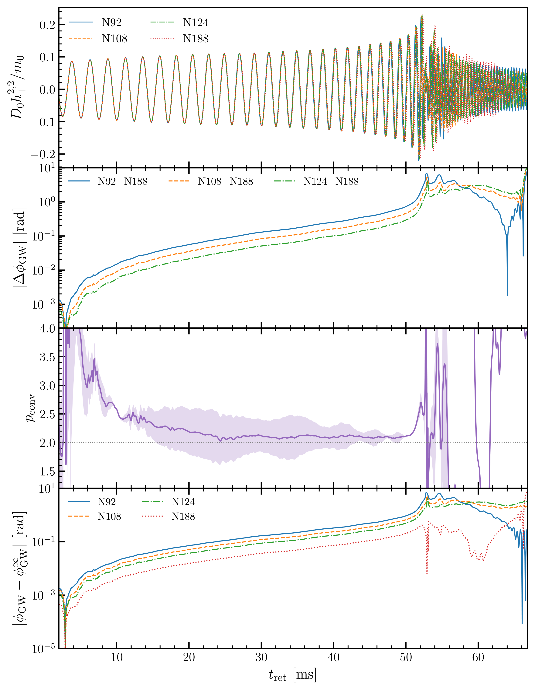
图注：Self convergence of the \(\sacrak\) BNS merger simulation at four resolutions, $N = 92$ (blue solid), $108$ (orange dashed), $124$ (green dash dotted), and $188$ (red dotted), shown against the retarded time $t_{\rm ret}$. \(\textit{Top:}\) dominant strain mode $D_0h_+^{22}/m_0$. \(\textit{Second:}\) gravitational wave phase difference $|\Delta\phi_{\rm GW}|$ of the three lower resolutions relative to $N = 188$. \(\textit{Third:}\) locally fitted convergence order $p_{\rm conv}$, with the shaded band showing the fit uncertainty and the dotted line marking $p_{\rm conv} = 2$. \(\textit{Bottom:}\) absolute difference between the GW phase $\phi_{\rm GW}$ at each resolution and the extrapolated phase $\phi_{\rm GW}^{\infty}$.
对应解读：“建议重点查看的图表”第5项分辨率收敛图；“关键图表逐图导读”图4；“模型拟合”中误差模型 Q(Δx)=Q0+C(Δx)^p 的收敛阶讨论。
入选理由：这是最直接支撑论文核心验证结论的图：四种分辨率、BNS 主导波形、相位差、局部拟合收敛阶 \(p_conv\) 及其不确定性带都在同一图中给出，可直接检验作者声称的引力波相位二阶收敛是否成立。相比单纯代码对代码波形重合图，它更能量化数值误差和连续极限外推。
来源与置信度：\(arxiv_source\)；high；\(arxiv_source\) / ms.tex:figure[6]
Fig02
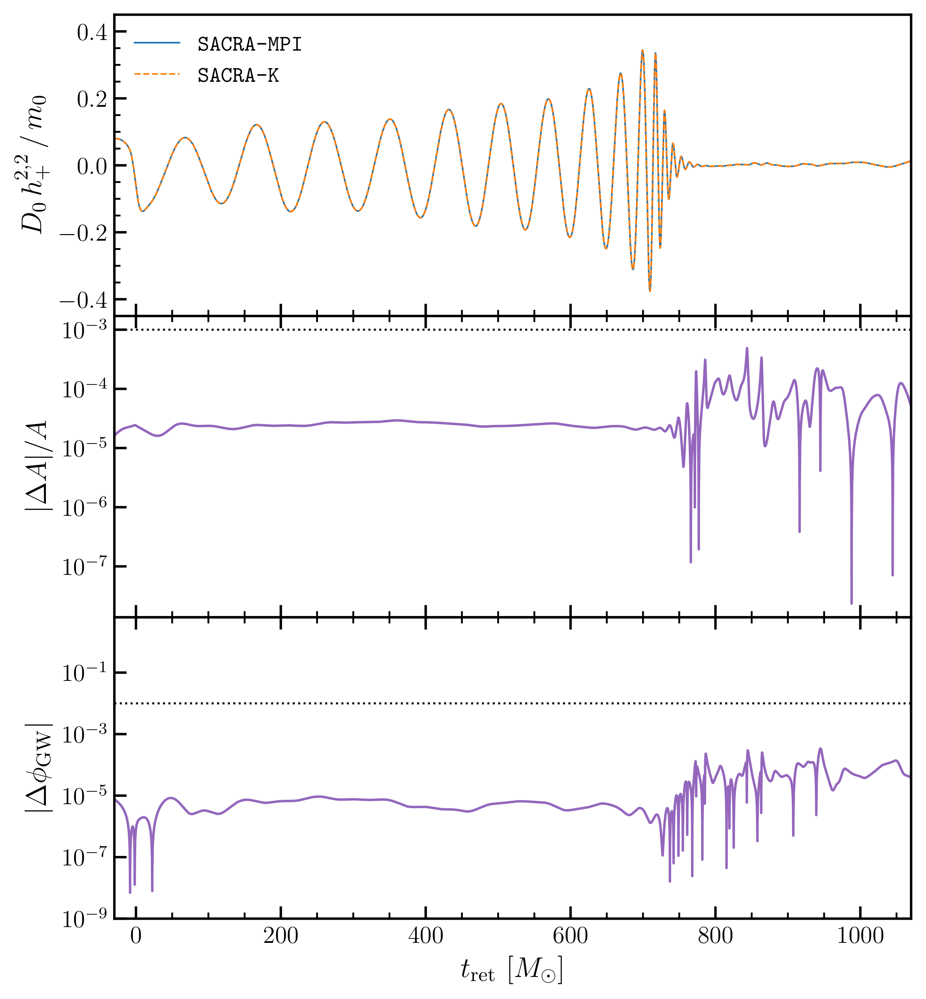
图注：Waveform comparison between \(\sacrak\) and \(\sacrampi\) Fortran for the BBH case. \(\textit{Top:}\) real part of the $l = m = 2$ mode of $h^{l,m}$ extracted on a sphere, for \(\sacrampi\) Fortran (blue solid) and \(\sacrak\) (orange dashed). \(\textit{Middle:}\) relative amplitude difference $|\Delta A|/A$. \(\textit{Bottom:}\) absolute GW phase difference $|\Delta\phi_{\rm GW}|$. The horizontal black dotted lines denote the acceptance criteria, $10^{-3}$ for the relative amplitude difference and $10^{-2}\,{\rm rad}$ for the phase difference.
对应解读：“建议重点查看的图表”第2项双黑洞波形对比图；“关键图表逐图导读”图2；“模型拟合”中波形相位、振幅差异和对齐误差讨论。
入选理由：该图完整包含 BBH 的 h22 实部、相对振幅差和绝对相位差，并标出 10^-3 振幅误差和 10^-2 rad 相位误差验收线，正好对应日报强调的不能只看主波形重合、必须看残差面板和并合附近误差增长。
来源与置信度：\(arxiv_source\)；high；\(arxiv_source\) / ms.tex:figure[2]
Fig04
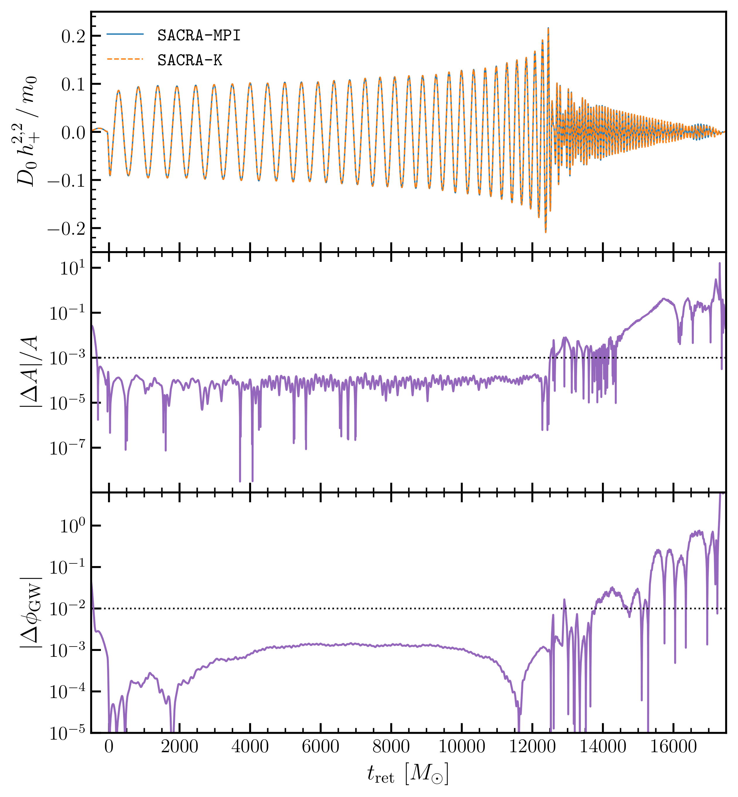
图注：Same as Figure~\(\ref{fig:consistency_bbh},\) but for a BNS configuration.
对应解读：“建议重点查看的图表”第3项双中子星验证诊断；“模型拟合”中 SACRA-K 与 SACRA-MPI 在相同初值和网格下的波形比较。
入选理由：这是 BNS 配置下 SACRA-K 与 SACRA-MPI 的直接一致性检验，补充 Fig06 的自收敛分析。BNS 是最容易暴露流体、AMR 和并合接触面数值差异的测试之一，因此即使图中主要是波形诊断，也比一般示意图更能支撑移植正确性的科学结论。
来源与置信度：\(arxiv_source\)；high；\(arxiv_source\) / ms.tex:figure[4]
Fig05
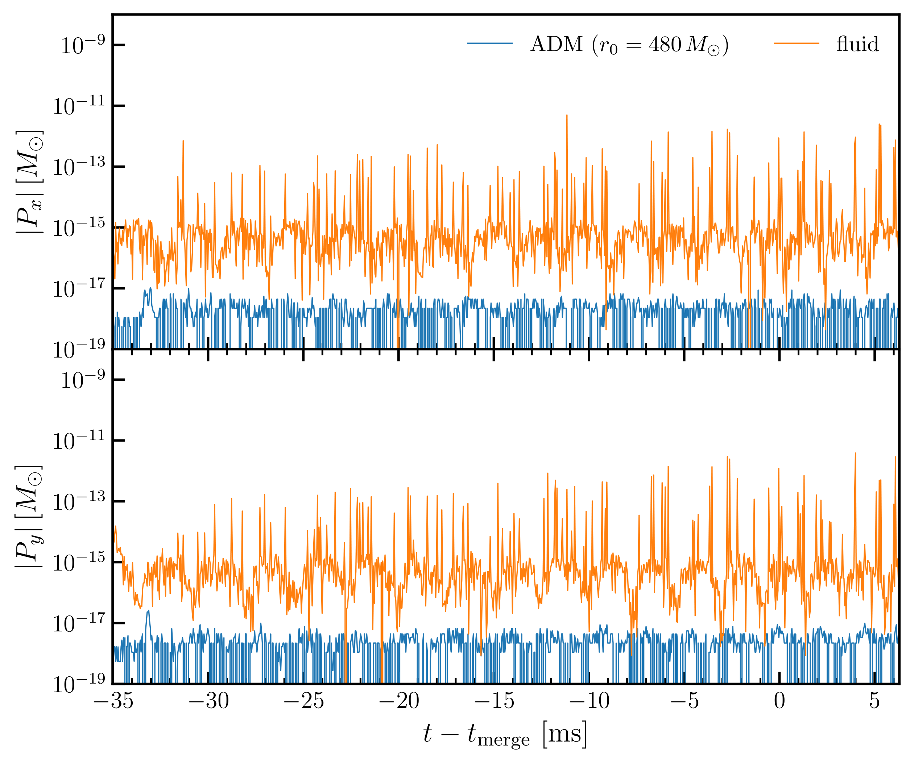
图注：$\pi$ symmetry preservation diagnostic for an equal mass non spinning BNS evolution at resolution $N = 102$. The momentum components $|P_x|$ and $|P_y|$ are shown in the upper and lower panels; in each panel the ADM and fluid linear momenta are drawn in blue and orange, respectively.
对应解读：“建议重点查看的图表”第8项对称性保持或 bitwise reproducibility；“详细解读”中 π 对称性在比特级精确保持的结果。
入选理由：该图用 ADM 与流体线动量的 Px、Py 分量检验等质量非自旋 BNS 的 π 对称性，是论文区别于普通波形对比的关键数值可靠性诊断。它能展示并行执行和硬件后端没有引入破坏离散对称性的非确定性误差。
来源与置信度：\(arxiv_source\)；high；\(arxiv_source\) / ms.tex:figure[5]
Fig07
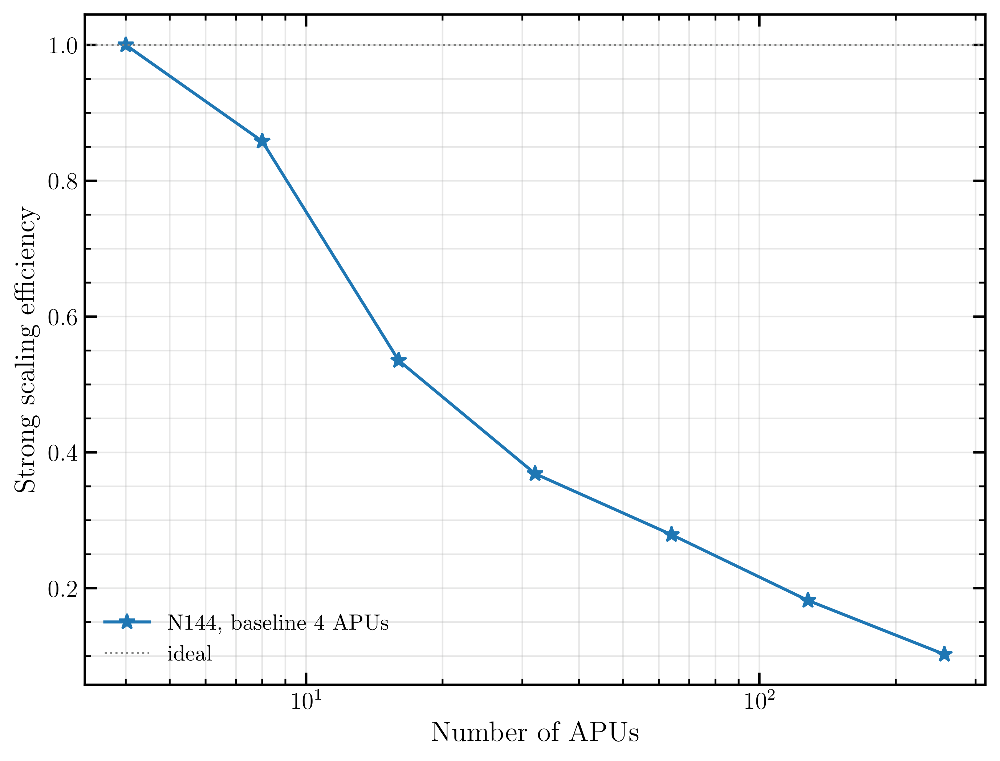
图注：Strong scaling of \(\sacrak\) on the Viper APU cluster at a fixed total problem size ($N=144$). Stars show the strong scaling efficiency, the achieved speedup divided by the ideal linear speedup, against the number of APU devices, from the four device $2\times2\times1$ baseline to 256 devices. The dotted line marks ideal scaling.
对应解读：“建议重点查看的图表”第7项性能扩展图；“关键图表逐图导读”图6；“详细解读”中扩展到 256 个加速器设备的性能结果。
入选理由：该图直接给出 Viper APU 集群上的强扩展效率与设备数关系，并覆盖到 256 个设备，是评估 SACRA-K 性能可移植和多设备通信效率的核心证据。相比弱扩展图，它更贴近日报中关于固定问题规模、强扩展曲线变平和通信瓶颈的解读重点。
来源与置信度：\(arxiv_source\)；high；\(arxiv_source\) / ms.tex:figure[7]
Fig01
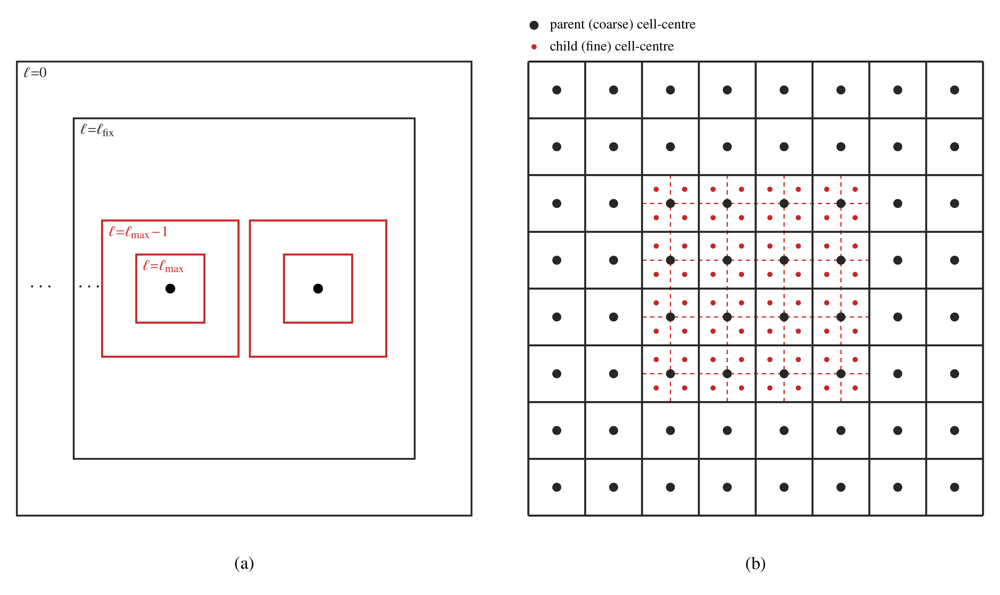
图注：Schematic figures of the AMR scheme in \(\sacrak.\) \(\emph{Panel (a):}\) hierarchical computational domain structure. For $0 \le \ell \le \ell_{\rm fix}$ each level consists of a single cubic patch centered on the coordinate origin (\(\emph{fixed levels},\) black). For $\ell_{\rm fix} < \ell \le \ell_{\max}$ each level consists of two patches that follow the two compact objects (\(\emph{moving levels},\) red). Successive levels are related by a $2{:}1$ refinement ratio, so the grid spacing halves while the number of cells per patch is held fixed. \(\emph{Panel (b):}\) cell centered geometry across a refinement boundary. Parent (coarse) cell centers (large black dots) and child (fine) cell centers (small red dots) are mutually offset by $\Delta x/4$ in each direction.
对应解读：“建议重点查看的图表”第1项代码结构或数据流示意图；“关键图表逐图导读”图1中关于 AMR、网格层级和边界同步的讨论。
入选理由：虽然它不是完整的 SACRA-MPI 到 SACRA-K 模块映射图，但它是候选中唯一展示 SACRA-K AMR 层级结构和粗细网格几何关系的示意图。AMR 边界、移动网格和 2:1 细化正是后续波形误差、约束控制和性能瓶颈的重要来源，因此值得作为方法背景图嵌入。
来源与置信度：\(arxiv_source\)；high；\(arxiv_source\) / ms.tex:figure[1]
强相关工作
这篇工作应放在三条文献线索中看。第一条是数值相对论基准和致密双星代码比较，包括 SACRA、SpEC、Einstein Toolkit、BAM、WhiskyTHC、IllinoisGRMHD 等代码在 BBH、BNS 和 BHNS 问题上的相互校验。检索关键词可用“numerical relativity code comparison binary neutron star waveform mismatch SACRA SpEC Einstein Toolkit”。这些工作提供判断“代码间散布”的背景，也能帮助读者理解本文所说差异低于独立代码散布意味着什么。
第二条是 BSSN、Z4c、移动穿刺、AMR 和 GRHD/GRMHD HRSC 方法的基础文献。本文没有发明这些方法，但它的可信度建立在这些方法已被长期验证之上。检索关键词可用“BSSN formulation numerical relativity Z4c constraint damping Berger Oliger adaptive mesh refinement GRHD high resolution shock capturing”。
第三条是性能可移植和异构硬件上的相对论天体物理代码。Kokkos、AMReX、Cabana、RAJA 等框架近年来被用于流体、辐射输运和相对论 MHD。本文与这些工作的共同张力是：抽象层会不会牺牲峰值性能或数值可控性；反过来，为每种 GPU 手写代码又会不会让长期维护和物理验证不可持续。检索关键词可用“Kokkos numerical relativity GPU performance portability AMR relativistic hydrodynamics”。
同一事件 / 同类源线索：
相似工作：
基础理论 / 方法工作：
- https://arxiv.org/abs/gr-qc/9909058
- https://arxiv.org/abs/gr-qc/0511048
- https://arxiv.org/abs/gr-qc/0610128
相反观点 / 张力线索：
（未提供）
8. Catching Disguised Transients with ASTRANet: Anomaly-Aware Spectroscopic Classification and Conformal Calibration
- 来源：arXiv / astro-ph.HE
- 链接：https://arxiv.org/abs/2607.08044v1
- 作者：Argyro Sasli, Maojie Xu, Alexandra Junell, Hailey Markoff, Avyukt Raghuvanshi, Felipe F. Nunes, Theophile Jegou Du Laz, Jesper Sollerman
- 评分：novelty 8/10，importance 8/10，relevance 7/10，final 8.65/10
- 推荐理由：面向时域光谱分类的异常感知和保形校准框架，覆盖GRB相关及稀有暂现源，对Rubin时代高能暂现源筛选有方法学价值。
中文题目：用 ASTRANet 捕捉“伪装”的暂现源：异常感知的光谱分类与保形校准
做了什么：这篇文章提出 ASTRANet，一个面向暂现源光谱分类的“闭集分类器 + 异常检测 + 保形不确定性校准”框架。它不是只把每条光谱强行归入训练集中已有的超新星或暂现源类别，而是显式识别那些可能不属于已知分类体系的罕见、奇异或训练外事件。作者用一个包含 \(289\) 个稀有和训练外暂现源、覆盖 \(11\) 个被故意排除类别的评估集测试该框架，展示了传统闭集分类器的五类失败模式，并提出按异常分数分层的 Mondrian 保形预测方法，使高异常区域也能获得更可靠的覆盖率。
为什么重要：Rubin Observatory 时代的暂现源发现量会远远超过光谱跟进和人工分类能力。真正有科学价值的对象往往不是“最像训练集”的普通事件，而是闭集分类器最容易自信误判的离群事件。本文重要之处在于把光谱分类从“给出一个类别标签”推进到“给出类别、异常性和可校准置信集合”，这更接近实际巡天中的发现需求。
理论 / 观测 / 仪器方法价值：对观测来说，ASTRANet 可以帮助筛选值得优先跟进的罕见暂现源，尤其是 AGN 相关异常、GRB 相关事件、亮度间隙暂现源、新星和奇异超新星等。对方法学来说，它把嵌入空间异常分数、分层分类和保形预测结合起来，提供了一个可移植的置信度基础设施。对仪器和巡天调度来说，这类框架可用于实时分流：哪些光谱可以自动分类，哪些应标记为训练外高风险对象，哪些需要快速补充光谱或多波段数据。
为什么应该关注：如果你关心时域天文学、机器学习分类、Rubin 时代的光谱瓶颈，或者任何“训练集中没有的天体如何被发现”的问题，这篇文章都值得看。它提醒我们，分类准确率本身并不足够；在发现科学里，更关键的是模型什么时候应该说“我不知道”，以及这种“不知道”能否被统计校准。
展开详细解读：文章讲解、背景、理论、重点章节、图表与相关工作
文章详细讲解
科学问题：现代时域巡天每年发现成千上万个暂现源，但光谱确认仍然昂贵。传统光谱分类器通常是闭集模型，即假设输入一定属于训练时定义好的若干类别。这个假设在常规超新星分类中尚可接受，但对发现科学很危险：真正稀有、物理机制特殊或训练集中缺失的事件，可能被模型以很高置信度错误归入某个已知类别。本文的核心问题是：能否构建一个既能做常规光谱分类、又能识别训练外异常、并且能给出统计上可解释置信集合的暂现源光谱框架。
作者怎么做：ASTRANet 被设计为三个耦合模块。第一是层级光谱分类器，直接在观测者坐标系光谱上工作，不要求输入宿主星系红移或光谱相位，这使它更贴近真实快速分类场景。第二是 ASTRANet-Sentinel 异常检测层，它在神经网络嵌入空间中计算 \(16\) 个异常分数，这些分数来自四类物理动机不同的异常度量，并用非线性方式组合。第三是 ASTRANet-CP 保形预测层，它把模型分数转换为具有覆盖率保证的类别集合；作者进一步引入按异常分数分层的 Mondrian 保形预测，即 AD-MCP，以解决普通 Mondrian 方法在高异常区域覆盖不足的问题。
关键结果：作者没有只在训练集内类别上报告总体准确率，而是构建了一个包含 \(289\) 个罕见和分类体系外暂现源的留出评估集，覆盖 \(11\) 个训练中故意排除的类别。这些类别被选来代表真实异常暂现源的物理多样性，包括 AGN 相关离群源、GRB 相关事件、gap transients、新星和奇异超新星。论文展示了闭集分类器的五种天体物理上不同的失败模式，并指出分类器内部不确定性与嵌入空间异常检测不是同一件事：有些对象可能分类器概率分布很尖锐但在嵌入空间明显离群，有些则概率本身分散但未必是训练外异常。
局限和下一步：这项工作的方法价值大于单个数值指标本身。它仍依赖训练样本、异常评估集和光谱预处理的代表性；所谓训练外类别的定义也会随着数据集扩展而改变。未来关键问题包括：在真实巡天流中如何处理选择效应和跟进偏差，如何把光变曲线、宿主星系、红移先验与光谱嵌入联合起来，如何把 AD-MCP 的覆盖率保证推广到时间演化、多次观测和主动学习场景。
关键结果是怎么做出来的
本文最重要的证据链从评估集设计开始。作者没有只随机留出训练集中已有类别，而是构造了 \(289\) 个 rare and out-of-taxonomy transients 的 held-out set，并且这 \(11\) 个类别在训练阶段被故意排除。这样的设定比普通测试集更贴近“发现未知暂现源”的任务：如果一个模型在常规 Ia、II、Ib/c 等类别上准确率很高，但遇到 nova、GRB-associated transient 或 peculiar supernova 时仍自信给出错误标签，那么它在发现科学中是不可靠的。
分类器部分的结果应按两条轴理解。第一条轴是闭集分类概率，例如最大 softmax 概率、层级节点概率或预测熵；它描述模型在已知标签空间内的相对偏好。第二条轴是嵌入空间异常度，由 ASTRANet-Sentinel 的 \(16\) 个 anomaly scores 组合而成；它描述输入光谱相对于训练分布的几何、密度或邻域离群程度。作者强调这两者结构上互补：内部不确定性高并不等价于异常，内部不确定性低也不保证对象属于训练内类别。
显著性或置信度的核心不在传统的 \(p\)-value，而在保形预测覆盖率。ASTRANet-CP 根据校准集上的 nonconformity score 构造预测集合，使真实类别以预设概率落入集合内。普通 Mondrian conformal prediction 可以按类别或层级分组校准，但作者发现，在实际操作区间，异常分数高的对象仍可能 under-cover。AD-MCP 的关键改动是按 anomaly score strata 再分层，让高异常和低异常对象分别拥有自己的校准阈值，从而改善条件覆盖。
支撑结论的图表应包括：训练内分类性能与训练外评估结果的对照；闭集概率或预测熵与异常分数的二维分布；五类失败模式的代表光谱；不同保形方法在异常分数分层后的 empirical coverage；以及预测集合大小随异常程度变化的曲线。真正应该看的不是单一平均覆盖率，而是覆盖率是否在高 anomaly-score 区间仍接近目标值，以及这种改善是否以过度膨胀预测集合为代价。
系统误差主要来自样本选择、光谱质量、红移与相位未知、宿主污染、类别标签本身的异质性和训练外样本的代表性。稳健性检验应关注：异常分数的组合是否被少数度量支配；不同稀有类别是否表现一致；按信噪比、波长覆盖和红移范围分组后结果是否稳定；保形校准集和测试集是否存在分布漂移。若论文的表格给出了每类对象数量、覆盖率、集合大小和异常分位数，这些表比总体准确率更能说明方法是否可用于真实巡天。
展开背景、理论、公式、模型、章节和图表导读
背景知识
暂现源光谱分类长期依赖模板匹配、人工检查和少量机器学习辅助工具。经典任务是判定一条光谱属于哪类超新星、处于何种相位、红移是多少。然而现实巡天中的输入往往不完整：宿主红移未知，光谱信噪比有限，波长覆盖不齐，暂现源与宿主星系混合，且快速跟进要求模型在信息不足时给出决策。
历史上，光谱分类器的主要目标是提高已知类别的准确率。例如对常规 Ia 型超新星，模板库丰富、光谱特征清晰，闭集分类相对有效。但时域天文学的发现价值往往来自训练集边缘：快速蓝色光学暂现源、潮汐瓦解事件、GRB 相关超新星、相互作用超新星、亮度间隙暂现源和各种 peculiar objects。这些对象的数量少、标签不稳定、物理成因多样，正是机器学习最容易过度自信的区域。
Rubin Observatory 的 LSST 将把问题放大。海量光变触发会产生大量候选体，但光谱资源不会同比增长。分类系统不仅要告诉我们“这像什么”，还要告诉我们“这是否不像任何已知训练分布”。否则，自动化管线可能把最有趣的异常对象压缩进普通类别，导致后续观测优先级错误。
该领域常见误区之一是把低 softmax 置信度等同于异常检测。实际上，softmax 概率只是在模型定义的标签空间内归一化，训练外对象也可能被赋予很高的最大概率。另一个误区是认为保形预测只要总体覆盖率正确就足够；对暂现源发现而言，高异常区域的条件覆盖更关键，因为真正要保护的正是那些分布边缘对象。
现在值得重新看这个问题，是因为神经网络嵌入、异常检测、主动学习和保形预测已经足够成熟，可以组合成实际巡天基础设施，而不只是离线分类指标。ASTRANet 的定位正是在分类与发现之间建立接口：既服务常规自动分类，也避免把未知物理现象误处理为已知类别。
基础理论 / 方法脉络
从物理图像看，暂现源光谱是爆炸、吸积、外流、相互作用和辐射转移的投影。不同类别在连续谱温度、谱线元素、线宽、速度结构、吸收发射形态和时间演化上有差异。机器学习分类器并不直接求解辐射转移，而是学习这些观测特征在高维光谱空间中的统计结构。
闭集分类的基本假设是输入 \(x\) 属于标签集合 \({\cal Y}_{\rm train}\)。模型输出 \(p_\theta(y\mid x)\)，并选择概率最大的类别。这在训练分布内可用，但当真实标签 \(y\notin {\cal Y}_{\rm train}\) 时，归一化概率仍会强迫某个已知类别胜出。因此最大概率、熵或分类 margin 只能反映模型在已知类别之间的相对犹豫，不能充分定义“物理异常”。
嵌入空间异常检测的想法是：神经网络中间层表示 \(z=f_\theta(x)\) 应该把光谱形态相似的对象放得更近。如果一个新对象的 \(z\) 落在训练样本低密度区域，或者相对于最近邻、类中心、局部协方差结构显著偏离，它可能是训练外对象、低质量数据、错误预处理，或真实罕见暂现源。ASTRANet-Sentinel 使用 \(16\) 个异常分数，是因为单一距离度量通常无法同时捕捉密度异常、类别边界异常、谱形异常和局部邻域异常。
保形预测提供的是另一层统计保证。给定校准集，定义 nonconformity score \(s(x,y)\)，比如真实类别的模型分数越低则 \(s\) 越大。选择合适分位数后，对新光谱输出一个类别集合 \(C(x)\)，使 \(P\{Y\in C(X)\}\geq 1-\alpha\)。这里的关键是分布无关的边际覆盖率不等于所有子群都覆盖良好；若高异常对象的分数分布不同，普通校准会在该区域失效。
ASTRANet 的 paper-specific 假设是：闭集类别概率、嵌入空间异常度和保形覆盖率是三种不同但可耦合的信息。分类器给出“像哪个已知类”，Sentinel 给出“是否离训练分布远”，ASTRANet-CP 给出“在目标错误率下应保留哪些类别”。AD-MCP 则承认异常程度本身会改变 nonconformity 分布，因此按异常分数分层校准。
公式与推导
第一步，把一条观测光谱表示为波长网格上的通量向量。若观测者坐标系波长为 \(\lambda_{\rm obs}\)，光谱可写成
其中 \(F_{\lambda}\) 是通量密度，\(\sigma_i\) 是不确定度，\(m_i\) 是掩膜或有效像素标记。ASTRANet 的一个实用特征是直接使用观测者坐标系输入，不强制要求已知红移或相位。
第二步，闭集分类器学习条件概率
其中 \(g_\theta^{(y)}\) 是类别 \(y\) 的 logit，\({\cal Y}_{\rm train}\) 是训练标签集合。该式的限制在于归一化只在训练类别上进行；若真实对象属于训练外类别，仍然会有某个 \(p_\theta(y\mid x)\) 被推高。
第三步，分类器内部不确定性可由熵或最大概率描述，例如
\(H(x)\) 大表示模型在已知类别间犹豫，\(p_{\max}(x)\) 大表示闭集决策尖锐；但二者都不是严格的训练外判别量。
第四步，引入嵌入表示
其中 \(f_\theta\) 是分类网络的中间层映射。一个典型类别中心距离异常分数可写为
其中 \(\mu_c\) 和 \(\Sigma_c\) 是类别 \(c\) 在嵌入空间中的均值和协方差。该分数大，表示对象远离所有已知类的典型区域。
第五步，邻域密度异常可用最近邻尺度表达为
其中 \(z_{(j)}\) 是训练嵌入中第 \(j\) 个最近邻。ASTRANet-Sentinel 实际组合了多类异常分数；抽象地可写为
其中 \(\Phi\) 是非线性组合器，\(A(x)\) 是最终 anomaly score。
第六步，保形预测从 nonconformity score 开始。若使用概率型分数，可定义
其中 \((x_i,y_i)\) 属于校准集。给定目标错误率 \(\alpha\)，阈值取经验分位数
这里 \(n_{\rm cal}\) 是校准样本数，\(Q\) 表示排序后的分位数。
第七步，对新对象输出预测集合
理想交换性条件下满足
这是保形预测的边际覆盖保证，含义是长期来看真实标签落入集合的频率不低于目标覆盖率。
第八步，AD-MCP 的思想是按异常分数分层。设 \(b(x)\in\{1,\ldots,B\}\) 表示 \(A(x)\) 所在异常分数分箱，则每个分箱有自己的阈值
并输出
这一步把覆盖率诊断从全样本平均推进到异常程度条件下的校准，正是本文方法学贡献的核心。
模型拟合 / 应用方法
ASTRANet 的拟合对象首先是层级光谱分类器。输入是预处理后的观测者坐标系光谱，输出是训练标签树上的类别概率。训练通常会最小化交叉熵或层级交叉熵，并可能需要处理类别不平衡、光谱长度不一、掩膜像素、信噪比差异和宿主污染。读者应关注模型是否使用数据增强、重采样或类别权重，因为这些选择会影响稀有类别附近的嵌入结构。
异常检测层不是简单地拟合一个二分类器，因为训练阶段通常没有完备的“未知类”样本。它更接近一类或半监督设置：先学习训练内分布的嵌入结构，再用多种距离、密度或边界分数量化偏离程度。\(16\) 个异常分数的组合器 \(\Phi\) 需要校准，否则可能被信噪比、红移、波长覆盖或某个强谱线区域支配。
保形预测层依赖校准集而非传统参数拟合。关键量是 nonconformity score 的经验分布。普通 Mondrian 方法会按类别或预定义组别分别取分位数；AD-MCP 进一步按 anomaly score strata 分层。这里的“拟合”本质上是估计分位数阈值，参数少，但对校准集与测试集的交换性很敏感。如果校准集缺少高异常、低信噪比或某类观测条件下的对象，覆盖率保证会在实际部署中变弱。
残差诊断应从多个角度看。分类残差包括混淆矩阵、最大概率错误样本、层级错误距离；异常检测残差包括已知类被误报为异常和训练外类未被标记为异常；保形残差包括 empirical coverage 与目标覆盖率的差，以及预测集合大小是否过大。一个实用模型不能只靠高覆盖率取胜，因为把所有类别都放进集合虽然覆盖率高，却没有分流价值。
主要退化关系包括：低信噪比光谱与真实物理异常都可能产生高 anomaly score；红移未知造成的谱线位移可能被误识别为异常；光谱相位差异可能与类别差异混淆；宿主星系光污染可能把暂现源嵌入推向非典型区域。应用时应把 ASTRANet 的输出当作优先级和风险标签，而不是最终物理分类。最理想的使用方式是与光变曲线、宿主星系、颜色、红移后验和人工审查形成闭环。
重点章节 / 结果段落怎么读
数据与样本部分应优先阅读。重点看训练类别如何定义，哪些 \(11\) 个稀有或训练外类别被排除，\(289\) 个评估对象的来源、光谱质量、红移范围和物理类型分布。这里决定了论文结论到底是在真实发现场景下成立，还是只是在一个人为构造的异常集上成立。
分类器方法部分要看层级结构和输入假设。本文强调不需要宿主红移或光谱相位作为输入，因此应检查作者如何处理观测者坐标系光谱、不同波长覆盖、归一化、掩膜和噪声。层级分类器的节点定义也很重要，因为错误发生在大类之间还是子类之间，对跟进策略的影响不同。
ASTRANet-Sentinel 部分是方法核心之一。读者应检查 \(16\) 个嵌入空间异常分数属于哪些物理动机家族，如何归一化，如何组合，以及是否有消融实验说明多分数组合优于单一异常指标。尤其要看分类器内部不确定性与 anomaly score 的二维关系。
ASTRANet-CP 和 AD-MCP 部分是另一个核心。重点看 nonconformity score 如何定义、校准集如何划分、Mondrian 分组如何设置、异常分数分层如何确定，以及目标覆盖率下不同分层的 empirical coverage 和 set size。若普通 Mondrian 在 operational regime under-covers，而 AD-MCP 修正了这一点，这是本文最有方法学价值的结果。
结果与讨论部分应围绕五类闭集失败模式阅读。不要只看平均准确率，而要看代表性误判光谱、异常分数、预测集合和物理类别之间的对应关系。讨论部分若涉及 Rubin Observatory 部署，应重点关注计算成本、实时性、主动学习和光谱跟进优先级。
建议重点查看的图表
-
训练集、验证集、校准集和训练外评估集的类别分布表或柱状图：看 \(289\) 个训练外对象和 \(11\) 个排除类别是否均衡，是否某几类支配结论。
-
光谱嵌入空间可视化图：看训练内类别是否形成清晰簇，训练外对象是否落在簇间、簇外或与已知类重叠；注意二维降维图可能夸大分离度。
-
闭集置信度与 anomaly score 的二维散点图：重点看高 \(p_{\max}\) 但高异常的对象，这是最危险的“自信误判”区域。
-
五类失败模式的代表光谱图：看误分类是否由物理相似性、谱线缺失、相位差、宿主污染或噪声导致。
-
不同异常检测分数或组合器的 ROC、precision-recall 或 rank-recovery 曲线：看 Sentinel 是否真的比单一 softmax 熵或最近邻距离更稳健。
-
保形预测覆盖率随 anomaly-score strata 的变化图：这是检验 AD-MCP 的关键，应看普通 Mondrian 在高异常区是否 under-cover，以及 AD-MCP 是否恢复到目标覆盖率。
-
预测集合大小随异常程度或目标 \(1-\alpha\) 的变化图：看覆盖率改善是否只是通过把集合膨胀到不可用来实现。
-
稳健性或消融表：检查去掉某类异常分数、改变分箱、改变校准集或按信噪比分组后结论是否保持。
关键图表逐图导读
图 1：建议把它当作数据流或框架图来读。横向应从输入观测者坐标系光谱开始，经过层级分类器得到闭集类别概率，再进入嵌入空间异常检测和保形预测模块。读图重点不是箭头数量，而是三类输出是否被明确区分：类别标签、异常分数和预测集合。陷阱是把 Sentinel 当作分类器的附属置信度；本文强调它是互补轴。
图 2：若为样本或嵌入空间图，横纵轴可能是降维后的 \(z_1\)、\(z_2\) 或类似表示，点颜色表示训练内类别，特殊符号表示 \(11\) 个训练外类别。应看训练外对象是否全部远离训练簇，还是部分与已知类重叠。若重叠严重，说明异常检测难点是真实物理相似性，而不是简单离群点识别。
图 3：若展示闭集置信度与 anomaly score，横轴可理解为 \(A(x)\)，纵轴为 \(p_{\max}(x)\)、熵或分类 margin。最值得关注的是右上或右下区域，特别是高异常但高闭集置信度的点。这类对象说明 softmax 置信度不能替代异常检测，也是论文关于“结构互补”的核心证据。
图 4：若展示五种失败模式的代表光谱，横轴是观测波长，纵轴是归一化通量或通量密度。模型预测类别、真实训练外类别和 anomaly score 应一起看。读图陷阱是凭单条强谱线判断类别；低分辨率、相位演化和宿主污染可能让不同物理源在局部波段相似。
图 5：若展示保形覆盖率，横轴通常是 anomaly-score bin 或目标覆盖率 \(1-\alpha\)，纵轴是 empirical coverage。应比较 vanilla Mondrian 与 AD-MCP 的曲线是否在各异常分层接近对角线或目标水平。关键不是总体平均，而是高异常分箱是否从 under-coverage 被拉回。
图 6：若展示 prediction set size，横轴可能是 anomaly score 或 \(\alpha\)，纵轴是 \(|C_\alpha(x)|\)。如果 AD-MCP 覆盖率更好但集合大小极大，就会降低实际分类价值。理想结果是高异常对象集合适度变大，明确表达不确定性，而低异常对象仍保持紧凑预测集合。
图 7：若有消融或稳健性图表，应看去掉异常分数组合、只用分类熵、只用单一距离、改变异常分箱后性能如何变化。真正稳健的方法不应依赖某一个偶然有效的分数，也不应只在某个稀有类别上表现好。
论文原图 / 可嵌入图片
Fig03
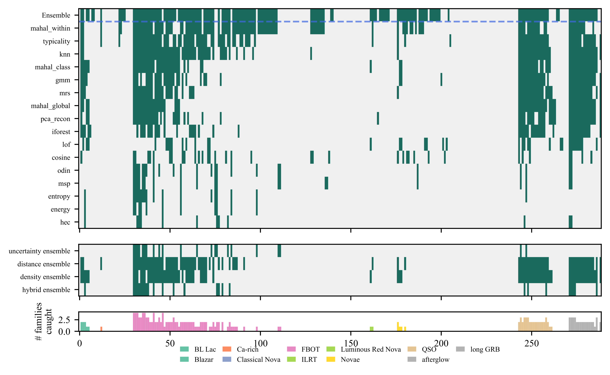
图注：Per-anomaly detection map at $1\%$ false-alarm rate. Each column is a rare spectrum, sorted by true class and then by the number of families that flag it. \(\emph{Top row}\): the LightGBM ensemble of all $16$ scores. \(\emph{Middle block}\): the $16$ individual OOD scores, sorted by individual AUROC and annotated with their family. \(\emph{Lower block}\): the four family-only mini-ensembles. \(\emph{Bottom panel}\): number of families that catch each anomaly, coloured by true class. Ca-rich, Classical Nova, Novae, and ILRT contain large numbers of spectra the LightGBM ensemble flags but no family alone recovers.
对应解读：对应“建议重点查看的图表”第5项：不同异常检测分数或组合器的性能比较；也对应关键解读中关于 Sentinel 与单一分数、分类器置信度互补的核心论证。
入选理由：这张图直接展示 LightGBM 组合器、16个单独 OOD 分数以及四类 family-only mini-ensembles 在289个训练外稀有光谱上的逐对象捕获情况，是判断 Sentinel 是否真的优于单一异常分数的最关键证据。它还能显示哪些稀有类别只能被组合器捕获，科学价值高于单纯框架图或闭集混淆矩阵。
来源与置信度：\(arxiv_source\)；high；\(arxiv_source\) / main.tex:figure[3]
Fig04
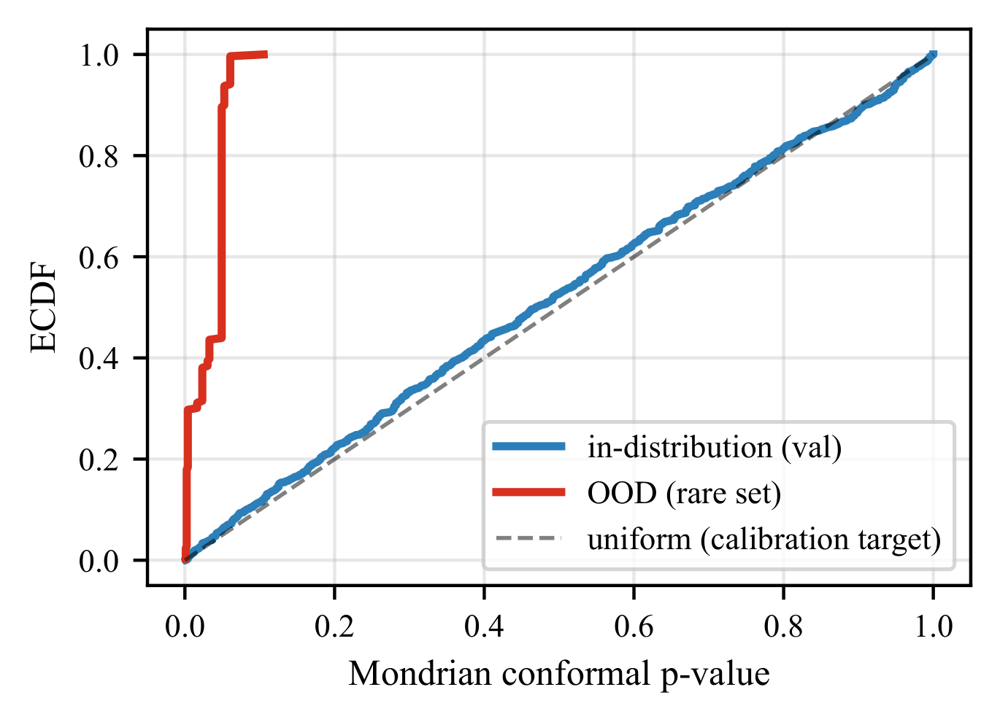
图注：Mondrian conformal p-value distribution on the in-distribution held-out validation set (blue) and the $289$-spectrum rare set (red). The ID distribution is statistically indistinguishable from uniform (diagonal), confirming exchangeability between calibration and held-out validation. The OOD distribution piles near $0$: \rev{$99.7\%$} of rare spectra have $p_{\mathrm{M}} < 0.10$ and \rev{$89.6\%$} have $p_{\mathrm{M}} < 0.05$.
对应解读：对应“建议重点查看的图表”第6项：保形预测在训练内与训练外对象上的诊断；也对应模型拟合段落中 nonconformity score、p-value 与交换性检验。
入选理由：虽然它不是完整的 anomaly-score strata 覆盖率曲线，但它直接给出 Mondrian conformal p-value 在 ID 验证集与 rare set 上的分布，对检验校准集交换性和训练外对象是否被保形层识别为低一致性样本非常关键。红蓝分布对比能支撑日报关于 CP 层不是普通分类置信度的解读。
来源与置信度：\(arxiv_source\)；high；\(arxiv_source\) / main.tex:figure[4]
Fig06
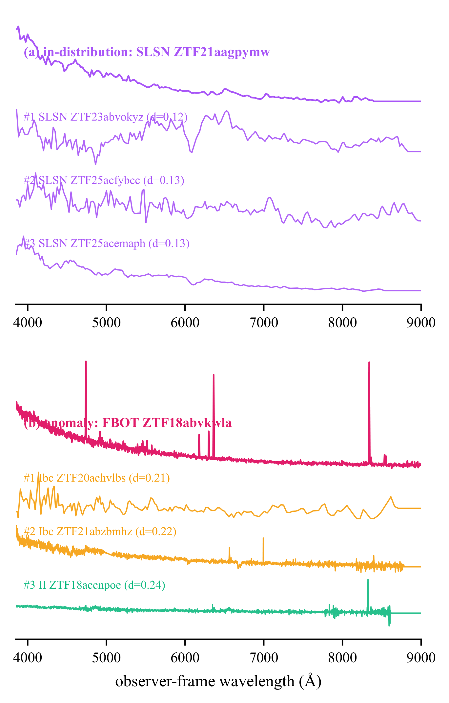
图注：Embedding-space nearest-neighbor retrieval, both regimes. In each panel the accented top spectrum is the query and the spectra below are its nearest archive neighbors by cosine distance in the \(\texttt{ASTRANet}\) embedding, coloured and labelled by their true class ($d$ = cosine distance). \(\emph{(a) In-distribution:}\) a SLSN query returns SLSN neighbors at $d\approx0.12$ -- a class-consistent ``find more like this'' search. \(\emph{(b) Anomaly:}\) an FBOT flagged by \(\texttt{ASTRANet-Sentinel}\) and absent from training lies at $d\approx0.22$ from stripped-envelope / H-rich core-collapse neighbors, making the Regime-IV progenitor ambiguity explicit; the larger neighbor distance is itself a novelty signal. Fluxes are min--max scaled and vertically offset for display.
对应解读：对应“建议重点查看的图表”第2项和第4项：嵌入空间近邻检索、代表光谱以及训练外对象与已知类的物理相似性；也对应关键图表导读中关于嵌入重叠和失败模式的讨论。
入选理由：该图把嵌入空间距离与真实光谱形态放在一起：训练内 SLSN 查询返回同类近邻，而训练外 FBOT 靠近 Ibc/II 等核心坍缩近邻并有更大距离。这比单纯二维降维图更能说明异常检测的难点来自真实物理相似性和谱型混叠，而不是简单离群点。
来源与置信度：\(arxiv_source\)；high；\(arxiv_source\) / main.tex:figure[6]
Fig05
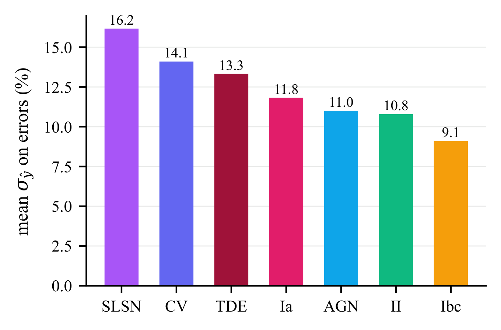
图注：\rev{Mean predicted-class ensemble spread $\bar\sigma_{\hat y}$ on mis-classifications, by predicted class. Rare/hard classes (SLSN, CV, TDE) show large $\sigma_{\hat y}$ on errors; the dense CC classes (Ibc, II) show the smallest $\sigma_{\hat y}$ even on errors -- the ensemble is confidently wrong, in direct analogy to the Regime-I OOD pattern. These dense classes absorb the bulk of rare-class confusions and are where the cross-family AD layer is necessary as a UQ axis independent of the classifier head.}
对应解读：对应“建议重点查看的图表”第3项：闭集分类器置信度与异常检测互补；也对应详细解读中“自信误判”和 dense CC classes 吸收稀有类混淆的论点。
入选理由：图中按预测类别展示误分类时的 ensemble spread，明确指出 Ibc、II 等密集核心坍缩类别即使错误也可能给出很小不确定性，即分类器会自信地错。这正是需要独立异常检测轴的关键证据，可支撑日报中关于 softmax 或分类器内部不确定性不能替代 Sentinel 的判断。
来源与置信度：\(arxiv_source\)；high；\(arxiv_source\) / main.tex:figure[5]
Fig01
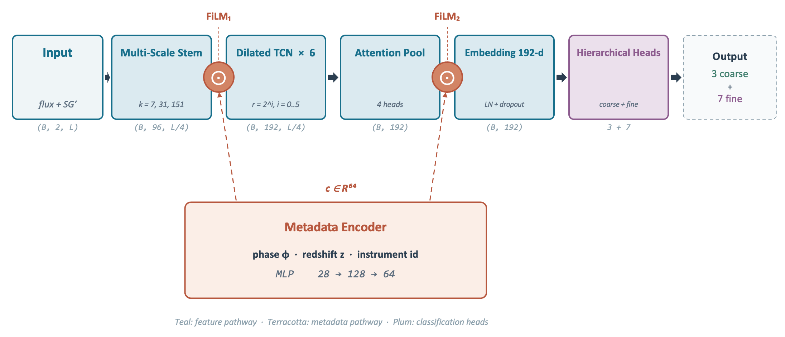
图注：Architecture of \(\texttt{ASTRANet}.\) Spectral features are extracted by a multi-scale stem and a dilated TCN backbone, fused with observational metadata via FiLM conditioning, aggregated by multi-head attention pooling, and passed to hierarchical coarse/fine classification heads. The 192-dimensional embedding $\mathbf{e}$ supplies the anomaly-detection layer (Sec.~\ref{sec:ensemble}); separate projection heads supply the contrastive loss. Detailed sub-figures and dimensions are in Appendix~\(\ref{app:architecture}.\)
对应解读：对应关键图表导读“图1”：ASTRANet 数据流和三模块框架，包括层级分类器、嵌入异常检测层和后续不确定性量化。
入选理由：该图是理解整篇方法结构的入口，清楚标出光谱特征提取、FiLM 元数据融合、attention pooling、层级 coarse/fine 分类头以及192维 embedding 如何供异常检测层使用。它适合放在日报开头帮助读者区分类别标签、嵌入表示和异常检测输出。
来源与置信度：\(arxiv_source\)；high；\(arxiv_source\) / main.tex:figure[1]
Fig02
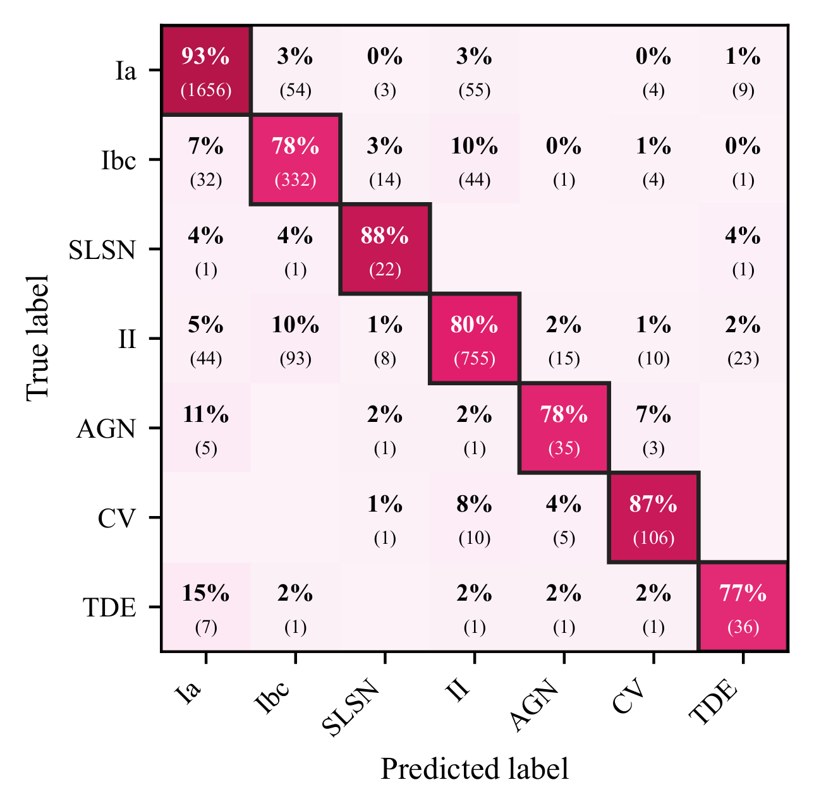
图注：Confusion matrix on the held-out test set ($N\!=\!3{,}396$ spectra) using the within-seed checkpoint ensemble. Entries are row-normalised to per-class recall (\%). Off-diagonal mass concentrates on physically expected confusions (Ibc/II, AGN/TDE).
对应解读：对应模型拟合段落中的分类残差诊断：闭集 held-out test set 混淆矩阵和物理预期混淆。
入选理由：这张图不是训练外异常检测的核心结果，但能说明基础层级分类器在训练内类别上的错误结构，特别是 Ibc/II、AGN/TDE 等物理上可理解的混淆。它为后续解释稀有类为何会被 dense closed-set classes 吸收提供背景，因此可作为辅助图嵌入。
来源与置信度：\(arxiv_source\)；high；\(arxiv_source\) / main.tex:figure[2]
强相关工作
这项工作与三条文献线相连。第一条是暂现源光谱分类传统，包括模板匹配、SNID 类工具、Superfit 类方法以及后来的深度学习光谱分类器。检索关键词可用 “supernova spectral classification”, “SNID”, “transient spectroscopy machine learning”, “observer-frame spectra classification”。ASTRANet 的区别在于它把训练外异常作为一等任务，而不只是提高已知类别准确率。
第二条是天文异常检测和发现科学，尤其是 Rubin/LSST 时代的 alert broker、active learning 和 rare transient discovery。相似问题包括用光变曲线识别异常、用宿主环境辅助分类、在不完整跟进条件下做优先级排序。检索关键词可用 “astronomical anomaly detection”, “rare transients”, “LSST alert broker anomaly”, “out-of-distribution detection astronomy”。
第三条是保形预测和校准不确定性。普通保形预测给出分布无关的边际覆盖，但天文样本常有强选择效应和条件分布漂移，因此条件覆盖、Mondrian conformal prediction 和分层校准非常相关。本文的 AD-MCP 可被看作把异常检测量显式引入保形分层的一种实用方案。检索关键词可用 “conformal prediction classification”, “Mondrian conformal prediction”, “out-of-distribution conformal prediction”, “conditional coverage”。
潜在张力在于：异常检测高分既可能代表新物理，也可能代表低质量数据、校准错误或训练集覆盖不足。因此本文不应被解读为“高 anomaly score 等于新天体类别”。更合理的定位是风险控制和跟进优先级工具。后续工作需要在真实巡天流、跨望远镜光谱和多模态数据中检验其发现效率。
同一事件 / 同类源线索：
- https://arxiv.org/abs/2607.08044
- https://arxiv.org/pdf/2607.08044
- https://arxiv.org/abs/0912.0201
- https://www.lsst.org/
- https://www.wis-tns.org/
相似工作：
基础理论 / 方法工作：
相反观点 / 张力线索：
（未提供）
9. Nonlinear hydrodynamics in spinning neutron stars: Theoretical universal relations and equilibrium solutions
- 来源：arXiv / astro-ph.HE
- 链接：https://arxiv.org/abs/2607.07943v1
- 作者：Hang Yu, Giorgio Nicolini, Shu Yan Lau, K. J. Kwon, Tejaswi Venumadhav, Nils Andersson, Pantelis Pnigouras, Fabian Gittins
- 评分：novelty 8/10，importance 8/10，relevance 7/10，final 8.65/10
- 推荐理由：自旋中子星非线性潮汐和普适关系可导致BNS波形相位系统误差，对致密星和引力波多信使建模有重要性。
中文题目：自旋中子星中的非线性流体潮汐：理论普适关系与平衡解
做了什么：这篇论文研究双中子星并合前的潮汐响应，但重点不是通常的线性潮汐，而是把中子星形变看成椭球的仿射近似，系统推导自旋背景下 \(f\) 模与径向模之间直到四波阶的非线性哈密顿量耦合。作者发现三波非线性潮汐系数其实可由线性潮汐性质完全决定，因此它本身不提供新的致密物质信息；但如果波形建模忽略这些三波项，单颗中子星可在并合前累积约 \(1.7\) rad 的引力波相位偏差，双星两颗星都贡献时约可加倍。四波项在慢自旋中通常较小，但在快自旋中，离心驱动和 \(f\) 模非谐性可能对与浮力相关的绝热指数敏感。
为什么重要：第三代引力波探测器和高信噪比双中子星事件会把潮汐相位误差推到必须控制的水平。本文指出，一个看似“高阶”的三波非线性潮汐项可以造成弧度量级相位偏差；这对用双中子星波形反推状态方程、半径和潮汐形变率的工作是直接的系统误差警告。
理论 / 观测 / 仪器方法价值：理论价值在于从仿射椭球模型中解析给出自旋中子星非线性模式耦合的普适关系，并区分哪些非线性量只是线性潮汐的重写、哪些可能真正携带新物理。方法价值在于把牛顿流体中的模式共振结构与相对论低频展开相容地拼接，为波形模型加入非线性潮汐提供可计算的闭式框架。
为什么应该关注：如果你关心双中子星引力波中的物质效应，本文的结论很实际：忽略三波非线性潮汐会偏置波形相位，但别急着把三波系数当成新的状态方程探针；真正可能新增信息的是快自旋条件下的四波非谐项和离心驱动。它告诉我们未来高精度波形中哪些非线性必须建模，哪些参数不应被过度解释。
展开详细解读：文章讲解、背景、理论、重点章节、图表与相关工作
文章详细讲解
科学问题：双中子星并合前，伴星潮汐场会激发中子星的准正规流体模，尤其是 \(f\) 模和径向模。线性潮汐响应已经被广泛用于引力波相位建模，并通过潮汐形变率 \(\Lambda\) 约束中子星半径和状态方程。但当潮汐形变变大、轨道频率接近某些模式组合频率、或背景星有自旋时，流体位移不再只是线性小扰动。问题是：这些非线性潮汐到底有多大？它们是否提供新的状态方程信息？如果不写进波形，会造成多大相位系统误差？
作者怎么做：论文采用仿射近似，把受扰中子星近似为三轴椭球，内部流体的主要形变由有限个整体自由度描述。这种模型比完整三维流体便宜得多，又能保留 \(f\) 模、径向模、潮汐椭球形变和自旋离心变形之间的关键耦合。作者在任意背景自旋下构造哈密顿量，并把模式相互作用展开到四波阶，也就是在线性项之外包括三波项和四波项。然后他们从一阶原理推导若干普适关系，特别是说明三波相互作用系数可由线性潮汐响应确定。
关键结果：最重要的结论有两层。第一，三波非线性潮汐虽然会显著改变引力波相位，但其耦合系数并不独立探测新的中子星微物理；它们被线性潮汐性质锁定。因此，在参数估计中把三波潮汐当成任意新参数，可能会高估其信息含量。第二，不把三波非线性潮汐写入波形，会导致不可忽略的相位偏差：单颗中子星截至并合前可累积约 \(1.7\) rad，相近质量双星中两颗星贡献相加可约翻倍。四波项对慢自旋星较小，通常低于潮汐反作用本身；但快自旋时，非线性离心驱动 \(f\) 模和四波非谐性可能对与内部浮力相关的绝热指数敏感。
局限和下一步：仿射近似的优点是解析透明，但它把中子星内部的无限维流体模压缩成椭球自由度，不能替代全相对论数值流体模拟。论文也强调四波非谐性不能导致 \(f\) 模 resonance locking，这限制了某些强效应设想。下一步应把这些非线性项嵌入实际频域或时域双中子星波形模板，检验在不同质量比、自旋、状态方程和探测器噪声曲线下的参数偏置，并与数值相对论或相对论扰动计算交叉校准。
关键结果是怎么做出来的
本文的证据链从一个受控的理论样本开始：不是直接取真实观测事件，而是在仿射近似中构造任意自旋背景的中子星平衡解和模式自由度。样本空间主要由背景星的质量、半径、状态方程相关结构参数、自旋率、伴星潮汐场和轨道频率组成。作者关注的“事件数”不是天文事件计数，而是哈密顿量展开中保留的模式通道：线性潮汐、三波耦合以及四波耦合，特别是 \(f\) 模和径向模之间的组合。
统计显著性在这篇理论论文中不是通过 \(p\) 值或贝叶斯因子给出，而是通过波形相位偏差和阶次比较判断物理重要性。核心诊断量是非线性潮汐相对于线性潮汐模型造成的累积相位差 \(\Delta\Phi\)。作者给出单颗中子星非线性潮汐可导致约 \(1.7\) rad 的相位累积，类似质量的双星中两颗星贡献相加后约翻倍。对引力波模板而言，弧度量级相位误差已经不是可忽略的高阶修正，尤其在高信噪比事件中会转化为潮汐形变率、半径或自旋参数偏置。
模型比较的关键不是在多个经验模板之间做拟合，而是比较线性潮汐模型、加入三波项的非线性模型、以及进一步加入四波项的模型。作者通过混合方案同时保留牛顿流体预期的模式共振结构，并使低频展开与相对论潮汐计算相容。读者应重点检查论文中展示耦合系数普适关系、相位累积随频率变化、以及三波和四波贡献分解的图表；这些图表共同支撑“三波项重要但不带来新微物理参数、四波项慢自旋下小但快自旋下可能有诊断价值”的结论。
系统误差主要来自三方面。第一，仿射模型对真实中子星的模谱和本征函数是低维近似，可能低估或高估某些高阶模耦合。第二，作者需要把牛顿模式共振和相对论低频潮汐展开拼接起来，这种混合策略本身会引入匹配方案依赖。第三，自旋处理虽然允许任意背景自旋，但实际双中子星的自旋分布多偏慢；快自旋结论更像物理窗口，而不是当前事件的必然效应。
稳健性方面，最值得关注的是普适关系是否依赖具体状态方程。论文声称三波耦合由线性潮汐性质完全决定，这应在不同压强密度关系和不同紧致度下成立；因此相关图表应显示适当归一化后曲线聚合，而不是明显散开。四波项则相反：如果它们对内部绝热指数或浮力相关参数敏感，曲线不应完全普适。这个“普适与非普适的分界”是本文最值得细读的证据链。
展开背景、理论、公式、模型、章节和图表导读
背景知识
双中子星引力波中的物质效应主要出现在并合前最后数百到数千个轨道周期。伴星的潮汐场会拉伸中子星，引起质量四极矩变化，进一步反作用于轨道相位。线性层面上，这一效应用 Love 数和无量纲潮汐形变率 \(\Lambda\) 描述；GW170817 之后，它已经成为约束中子星半径和状态方程的主要观测入口之一。
历史上，潮汐相互作用的波形建模先从绝热线性潮汐开始：假定中子星的流体响应瞬时跟随外部潮汐场，模式频率远高于轨道频率，潮汐相位以后牛顿展开形式加入。随后，动态潮汐、模式共振、自旋修正、非线性潮汐不稳定等问题被逐步讨论。本文所处的位置是：不满足于线性响应，而是系统考察有限振幅流体形变在哈密顿量中的高阶耦合。
为什么现在值得重新看？因为当前 LIGO-Virgo-KAGRA 的双中子星事件还不多，信噪比有限，许多高阶潮汐项可被噪声掩盖；但下一代探测器如 Cosmic Explorer 和 Einstein Telescope 将把相位精度提高很多。届时，过去被视为小修正的非线性项可能成为参数估计中的主导系统误差。提前弄清哪些项必须写入模板、哪些项可被现有参数吸收，是波形理论必须做的工作。
该领域一个常见误区是把“非线性”等同于“必然携带新物理”。本文恰好指出相反情况：三波非线性项可以很重要，却完全由线性潮汐响应决定，因此它对状态方程的新信息量有限。另一个误区是认为高阶项一定可以忽略；本文显示三波项可造成弧度级相位差。第三个误区是把所有模式效应都想象成明显共振峰；实际上很多影响表现为宽频的相位累积和低频展开系数变化，而不是单一窄共振。
基础理论 / 方法脉络
基本物理图像是：中子星在伴星引力场中受到外部潮汐张量驱动，星体内部流体发生位移，形成诱导四极矩。在线性近似下，诱导四极矩与潮汐场成正比，比例系数由 Love 数或潮汐形变率给出。若把中子星的流体振动分解成本征模，外场主要驱动 \(l=2\) 的 \(f\) 模；当驱动频率远低于 \(f\) 模本征频率时，响应近似绝热。
非线性来自流体方程和引力势能对位移的高阶展开。若模式振幅不是无穷小，两个模式可耦合到第三个模式，形成三波项；三个模式也可耦合到第四个自由度，形成四波项。本文特别关注 \(f\) 模与径向模的耦合，因为径向压缩响应影响星体整体体积和内部压强，而 \(f\) 模负责主要四极形变。这些耦合进入哈密顿量后，会改变模式频率、平衡形变和潮汐反作用能量。
仿射近似的核心假设是把受扰中子星看成椭球，内部坐标经历线性变换。这样，复杂的流体位移场被几个椭球轴长、取向和旋转相关变量描述。它不能解析所有高阶模，但适合捕捉整体 \(f\) 模、径向压缩模、离心扁率和潮汐椭率的相互作用。对本文而言，这种低维模型的优势是可以解析推导哈密顿量耦合系数和普适关系。
自旋增加了两个复杂性。第一，背景星不再球对称，离心力导致平衡形状扁率，模式频率也会发生旋转劈裂或平移。第二，轨道潮汐场在星体共转系中的频率与惯性系不同，可能改变动态潮汐响应。本文允许任意背景自旋，因此可以研究慢自旋下的常规双中子星，也可以探索快自旋时非线性离心驱动如何打开对内部绝热指数的敏感性。
常见退化关系包括潮汐形变率与质量比、有效自旋、后牛顿点粒子项之间的相关性，以及非线性潮汐相位与线性 \(\Lambda\) 的部分可吸收性。如果三波项完全由线性潮汐确定，那么它在参数估计中更像是模板系统项，而不是独立新参数。四波项若对绝热指数敏感，则可能与状态方程、热/冷压强分解、浮力和成分梯度退化，需要独立观测或先验约束。
公式与推导
第一步，从双星轨道中的外部潮汐张量出发。对一颗半径 \(R\)、质量 \(M\) 的中子星，伴星质量 \(M'\)、轨道分离 \(a\) 产生的主导四极潮汐量级可写为
其中 \(G\) 是引力常数，\(n_i\) 是从受潮汐星指向伴星的单位矢量，\(\delta_{ij}\) 是 Kronecker 符号。这个式子说明潮汐驱动随 \(a^{-3}\) 增强，是并合前非线性效应迅速变大的根源。
线性潮汐响应把诱导四极矩 \(Q_{ij}\) 与潮汐张量联系起来：
这里 \(\lambda\) 是有量纲潮汐形变率，\(\Lambda\) 是无量纲潮汐形变率，\(k_2\) 是二阶 Love 数。本文关于三波普适关系的判断可以理解为：三波系数并没有引入独立于线性 \(\lambda\) 或等价线性响应的新自由度。
在模式语言中，流体位移可展开为
其中 \(q_A\) 是第 \(A\) 个模式的广义坐标，\(\boldsymbol{\xi}_A\) 是归一化本征位移。线性哈密顿量为
其中 \(p_A\) 是共轭动量，\(\omega_A\) 是模式频率，\(f_A\) 是潮汐驱动力。若只保留 \(H_2\)，得到的就是动态线性潮汐。
非线性哈密顿量按振幅展开可写成
其中 \(\kappa_{ABC}\) 是三波耦合系数，\(\kappa_{ABCD}\) 是四波耦合系数。本文的主要技术贡献之一就是在自旋仿射星模型中解析求出这些系数，并揭示三波项与线性潮汐量之间的普适关系。
模式方程由哈密顿方程得到：
右端第一项是外部潮汐驱动，第二、三项分别是三波和四波非线性反作用。慢变极限下可令 \(\ddot q_A\) 较小，从而得到非线性修正后的准平衡形变；接近组合频率时，\(\ddot q_A\) 项则决定动态增强。
潮汐能量对轨道演化的反馈可概括为
其中 \(\Omega\) 是轨道角频率，\(q_A^{\rm eq}\) 是给定 \(\Omega\) 下的潮汐平衡解，\(H_0\) 是无潮汐背景能量。非线性项改变 \(E_{\rm tide}\) 对 \(\Omega\) 的依赖，进而改变引力波相位。
轨道能量平衡给出相位演化的基本关系：
其中 \(E_{\rm orb}\) 是点粒子轨道能，\({\cal F}_{\rm GW}\) 是引力波辐射流量，\(\Phi\) 是引力波相位。若非线性潮汐改变能量函数，频率扫掠率 \(d\Omega/dt\) 随之改变。
相位偏差可写成一个频率积分诊断量：
这里 \(\Omega_i\) 和 \(\Omega_f\) 是积分起止频率，\(\dot\Omega_{\rm lin}\) 是线性潮汐模型的扫频率，\(\dot\Omega_{\}\)
m lin+NL}) 是加入非线性项后的扫频率。论文报告的约 \(1.7\) rad 单星相位偏差就是这类量的物理体现。
最后，自旋进入共转系驱动频率：
其中 \(m\) 是潮汐谐波的方位量子数，\(\Omega_s\) 是恒星自旋角频率，\(\sigma_m\) 是星体共转系看到的驱动频率。快自旋时，离心变形和非线性频移可改变 \(f\) 模有效响应，但本文指出四波非谐性不足以产生持续的 \(f\) 模 resonance locking。
模型拟合 / 应用方法
本文本身是理论建模论文，不是对某个观测事件做贝叶斯参数估计；但它的结果直接服务于波形拟合。实际应用中，拟合量会包括双星质量 \(m_1,m_2\)、自旋、线性潮汐形变率 \(\Lambda_1,\Lambda_2\)，以及由本文给出的非线性潮汐相位修正。三波项若由线性潮汐完全决定，最合理的做法不是给它单独自由参数，而是在给定 \(\Lambda\)、质量和自旋后自动生成对应修正。
似然通常来自探测器数据 \(d\) 与模板 \(h(\theta)\) 的噪声加权残差，形式上依赖 \((d-h|d-h)\)。如果模板只含线性潮汐，而真实信号包含三波非线性项，则残差会在并合前高频段系统性积累相位差。对于当前信噪比较低事件，残差可能被噪声或校准误差吸收；对下一代探测器，弧度量级相位误差会显著偏置 \(\Lambda\)、有效自旋或质量比。
参数退化是这里的核心问题。线性潮汐相位与质量比、总质量、有效自旋和高阶后牛顿点粒子项存在相关性；非线性三波项又由线性潮汐决定，因此它可能表现为对 \(\Lambda\) 的频率依赖重标定。若模板缺失三波项，拟合程序可能通过改变 \(\Lambda\) 或自旋来“补偿”相位，从而给出看似统计误差很小但系统偏差明显的状态方程约束。
四波项的拟合更微妙。论文称慢自旋时四波修正小于潮汐反作用主项，因此在常规双中子星中很难独立测量；快自旋时它可能对与内部浮力相关的绝热指数敏感。若未来要把它作为物理参数，必须加入强先验或与电磁、脉冲星质量半径、核物理状态方程联合约束，否则它会与自旋、半径、\(f\) 模频率和潮汐形变率高度退化。
残差诊断上，应重点看高频段相位差是否呈现与潮汐项相同的快速增长，而不是随机振荡。若加入非线性潮汐后残差主要在最后几十毫秒改善，且低频段基本不变，就符合本文所描述的物理图像。模型失败的信号包括：需要远超仿射模型预期的四波系数才能拟合数据、不同探测器间高频相位残差不一致、或数值相对论校准显示仿射模型在强场末期系统偏离。
重点章节 / 结果段落怎么读
-
引言和问题设置：读者应先看作者如何界定“非线性潮汐”的范围。重点是他们不是讨论任意湍流或破裂，而是讨论 \(f\) 模、径向模和椭球形变在哈密顿量中的三波、四波耦合，以及这些耦合对双中子星引力波相位的影响。
-
仿射近似和平衡解：这一部分是全篇技术地基。应关注椭球自由度如何表示中子星形变，自旋背景如何进入平衡条件，以及模型如何区分线性潮汐、离心形变和非线性体积响应。理解这里才能判断后续普适关系是否只是模型假设的产物。
-
哈密顿量展开和耦合系数：这是最核心的方法段落。读者应检查三波系数 \(\kappa_{ABC}\) 和四波系数 \(\kappa_{ABCD}\) 的定义、归一化、模式选择，以及作者如何证明三波项由线性潮汐性质决定。特别要注意任意自旋背景下哪些对称性仍然成立，哪些只在慢自旋或低频展开中成立。
-
混合波形和相位结果：这一部分连接理论系数与观测后果。应重点读非线性潮汐相位如何从能量或响应函数传递到引力波相位，约 \(1.7\) rad 的单星相位差在什么质量、半径、自旋和频率范围内得到，以及双星两颗星贡献如何叠加。
-
四波项、快自旋和讨论：最后应读作者对四波非谐性的物理解释。慢自旋中四波项为何小？快自旋中为什么可能探测绝热指数或浮力相关信息？为什么它不能导致 \(f\) 模 resonance locking？这些结论决定了该模型未来是否能变成实际状态方程探针。
建议重点查看的图表
-
耦合系数普适关系图：检查适当归一化后的三波系数是否随不同状态方程、紧致度或自旋聚合到同一关系上；如果散点很大，普适性就需要谨慎。
-
线性、三波、四波潮汐响应分解图：看各阶贡献随轨道频率或引力波频率的增长速度，尤其是三波项何时超过可忽略阈值，四波项何时仍为次主导。
-
累积引力波相位差图：重点看纵轴 \(\Delta\Phi\) 是否达到约 \(1.7\) rad 单星量级，以及相位差主要在哪个频段积累。还要看是否存在对质量、半径或自旋的强依赖。
-
模式共振或响应函数图：检查 \(f\) 模和径向模相关峰结构、低频极限是否平滑，以及混合方案是否同时保留牛顿共振和相对论低频行为。
-
四波非谐性与自旋图：看慢自旋和快自旋曲线是否明显分离，离心驱动项是否在高自旋下变得可观，以及不同绝热指数模型之间差异是否超过其他系统误差。
-
稳健性或误差预算表：如果论文给出不同状态方程、不同匹配方案或不同截断阶的比较，应检查三波相位偏差是否稳定，四波结论是否依赖特定模型选择。
关键图表逐图导读
图 1：通常应是模型结构或平衡解诊断。横轴可能是自旋频率、轨道频率或潮汐强度，纵轴可能是椭球轴比、形变变量或模式振幅。读图时要区分背景离心扁率和伴星潮汐诱导椭率；两者都能改变形状，但只有后者直接随轨道频率增长。陷阱是把椭球形变变量直接等同于可观测 Love 数，实际还需要归一化和低频极限匹配。
图 2：应重点看三波耦合系数的普适关系。坐标轴多半是某种归一化耦合系数对线性潮汐响应量、紧致度或模式频率组合。数据点或曲线若代表不同状态方程，关键是它们是否落在同一理论曲线附近。读图陷阱是只看绝对散布，不看作者采用的归一化；普适关系往往只在特定无量纲组合下成立。
图 3：应是非线性潮汐对响应函数或能量的贡献分解。模型线可能分别表示线性潮汐、加入三波项、加入四波项。横轴若为引力波频率或轨道频率，读者应关注高频端曲线分离，而不是低频端几乎重合。陷阱是把最后一点的强分离理解为整段频带都重要；相位影响取决于积分累积。
图 4：相位累积图最关键。横轴通常是引力波频率或到并合时间，纵轴是 \(\Delta\Phi\)。如果三波非线性单星贡献接近 \(1.7\) rad，应看这是否在接近并合的频段突然累积，还是从中频段逐渐增长。模型线的差异能直接告诉读者模板缺项会在哪个频带产生残差。
图 5：四波项和自旋相关图应显示慢自旋与快自旋情形的分离。若纵轴是四波相位修正或非谐频移，横轴是自旋率或绝热指数参数，读者应看快自旋曲线是否对内部参数敏感。陷阱是把快自旋结果直接套用到所有双中子星；真实银河系双中子星多数自旋较慢。
图 6：如果有稳健性检验或不同模型比较图，应看截断到三波、截断到四波、以及混合相对论低频匹配之间的差异。残差或比值图比主曲线更有信息量，因为本文的关键判断是“哪些高阶项足够大到影响波形，哪些仍小于主要系统误差”。
论文原图 / 可嵌入图片
Fig10
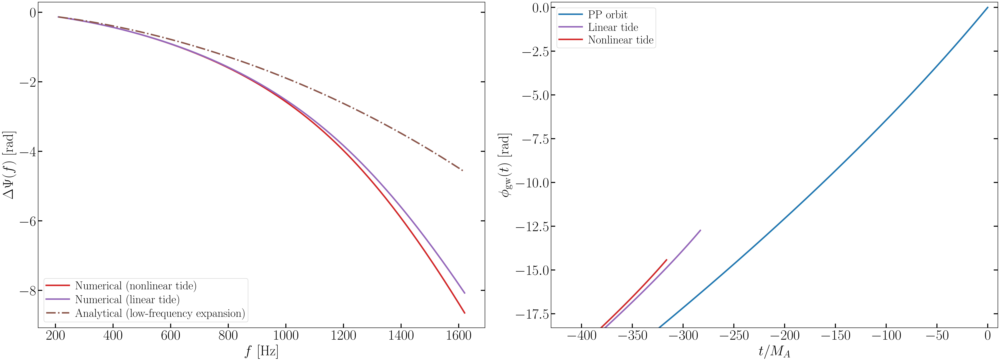
图注：Similar to Fig. \(\ref{fig:phase_shift}\) but $M_A$ is now assumed to be described by the SLy equation of state with $(k_{2A}, \ddot{k}_{2A}, p_{2A})=(0.084, 0.060, 0.086)$. Compared to the linear tide prediction, the nonlinear tidal response of a single NS causes a phase shift of 0.57 rad measured at the time when the nonlinear system merges, and 1.7 rad when considering the total accumulated phase to $r=2R_A$.
对应解读：建议重点查看的图表 3；关键图表逐图导读：图 4 相位累积图；模型拟合段落中关于缺失三波非线性潮汐导致弧度量级系统相位偏差的讨论。
入选理由：这张图直接给出 SLy 状态方程下非线性潮汐相对于线性潮汐的引力波相位差，并在图注中明确对应单颗中子星累计到 \(r=2R_A\) 时约 1.7 rad 的核心结论，是日报最需要支撑的定量结果。
来源与置信度：\(arxiv_source\)；high；\(arxiv_source\) / main.tex:figure[10]
Fig09
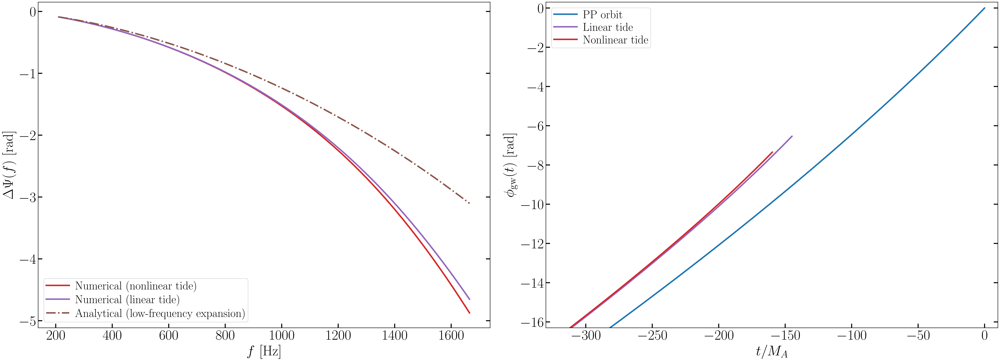
图注：GW phase shift for a relativistic $\Gamma=2$, non-spinning polytrope. The left panel shows the frequency-domain GW phase shift relative to a PP orbit. The red and purple lines show the phase shift with and without the nonlinear tide. The brown-dashed line shows the low-frequency limit including NLO nonlinear tide (Eqs. \(\ref{eq:phase_shift_LF}\) and \ref{eq:k_psi_eff}), which significantly underestimates the result. The right panel shows the time-domain GW phases (blue for PP, purple for linear tide, and red for nonlinear tide), which demonstrates that the actual effect of the nonlinear tide (red) is more significant than what the left panel shows. At the last time point where the system with the nonlinear tide merges ($t/M_A\simeq-160$), the nonlinear tide causes a phase shift of 0.22 rad relative to the linear tide system, same as the phase shift at the last frequency data point in the left up to a minus sign). However, the total GW phase accumulated to the merger ($r=2R_A$) is less by 0.81 rad due to the nonlinear tide.
对应解读：建议重点查看的图表 2 和 3；关键图表逐图导读：图 3 非线性潮汐贡献分解、图 4 相位累积图；模型拟合段落中关于线性模板残差在高频段积累的讨论。
入选理由：该图同时比较 PP、线性潮汐、非线性潮汐以及低频近似，展示频域和时域相位差如何随并合推进而变化，比单纯相位终值更能说明非线性项在波形模板中造成系统残差的物理来源。
来源与置信度：\(arxiv_source\)；high；\(arxiv_source\) / main.tex:figure[9]
Fig02
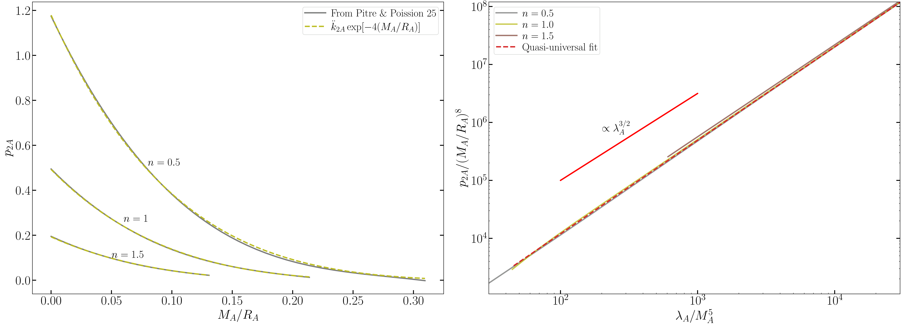
图注：Left: Comparison of $p_{2A}$ obtained from \(\cite{Pitre:25}\) (solid-gray) and those predicted by the universal relations (Eq. \(\ref{eq:p2_vs_ddk2_GR}\); dashed-yellow). Right: Comparison of the $\bar{p}_2-\bar{\lambda}_A$ quasi-universal fit, Eq. (\ref{eq:p2bar_vs_lambar}) with tracks computed for different polytropes.
对应解读：建议重点查看的图表 1；关键图表逐图导读：图 2 三波耦合系数的普适关系。
入选理由：图中直接检验 \(p_2\) 与通用关系、以及归一化后的 \(p_2\) 与 \(\bar{\\lambda}_A\) 的准普适拟合，正对应日报强调的“三波耦合由线性潮汐性质决定、不是独立新微物理参数”的核心判断。
来源与置信度：\(arxiv_source\)；high；\(arxiv_source\) / main.tex:figure[2]
Fig03
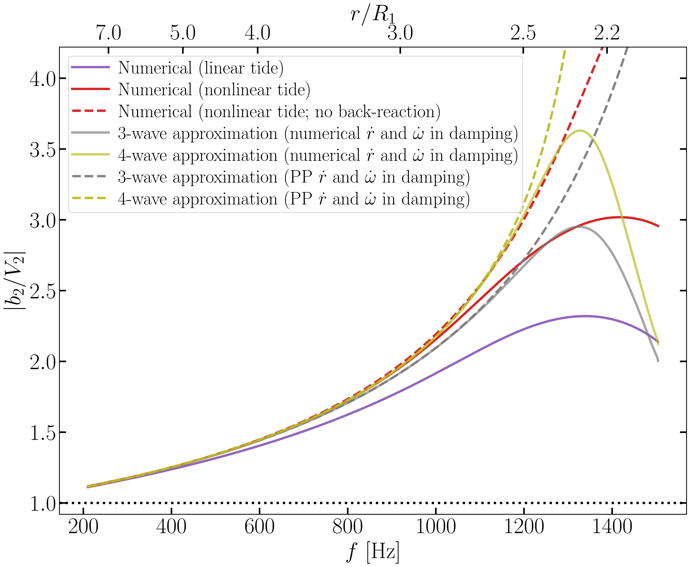
图注：Amplitude of the $l=m=2$ f-mode that dominates the tidal interaction. A non-spinning, Newtonian $\Gamma=\Gamma_{\rm ad}=2$ polytrope is assumed. Below 1000\,Hz, the four-wave approximation agrees well with numerical simulations. At higher frequencies, whether tidal back-reaction is included can have significant impacts on the mode dynamics (red-solid vs. red-dashed). This is mainly through the effective damping of the mode that depends on $\dot{\omega}$, which can be enhanced by an order of magnitude by the tide compared to the PP value when the f-mode approaches resonance. Near resonance, the equilibrium tide solution also tends to overestimate the mode amplitude.
对应解读：建议重点查看的图表 2 和 4；关键图表逐图导读：图 3 响应函数或模式能量贡献分解、图 4 模式共振或响应函数图。
入选理由：该图展示非自旋牛顿模型中 l=m=2 f 模振幅随频率的响应，并比较四波近似、数值模拟、是否包含潮汐反作用及平衡潮近似，能支撑日报关于高频端曲线分离、近共振行为和四波截断有效性的解读。
来源与置信度：\(arxiv_source\)；high；\(arxiv_source\) / main.tex:figure[3]
Fig06
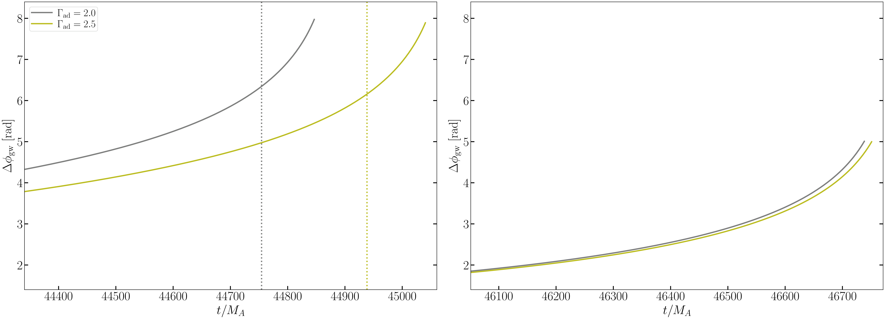
图注：Tidal phase shifts for NS models with different $\Gamma_{\rm ad}$ but otherwise identical parameters. In the left panel, we evolve a rapidly spinning NS with $\Omega_A/2\pi=-800\,{\rm Hz}$. The system shown in the gray line is identical to the one shown in Fig. \(\ref{fig:no_res_lock}\) with the same color. The yellow line instead has $\Gamma_{\rm ad}=2.5$. The estimated times of resonance, including four-wave corrections, are shown in the vertical dotted lines. Right: for an NS with $\Omega_A/2\pi=-450\,{\rm Hz}$. Resonance of the f-mode does not occur until $r\simeq 2R_A$. The impact of $\Gamma_{\rm ad}$ is much smaller in such a system.
对应解读：建议重点查看的图表 5；关键图表逐图导读：图 5 四波非谐性与自旋图；模型拟合段落中关于快自旋时绝热指数敏感性的讨论。
入选理由：该图直接比较不同 \Gamma_{\(\rm\) ad} 和不同快速自旋情形下的潮汐相位变化，并标出包含四波修正后的共振时间，最能说明四波非谐性在快自旋系统中可能探测内部浮力相关参数、而在较慢自旋时影响较小。
来源与置信度：\(arxiv_source\)；high；\(arxiv_source\) / main.tex:figure[6]
Fig05
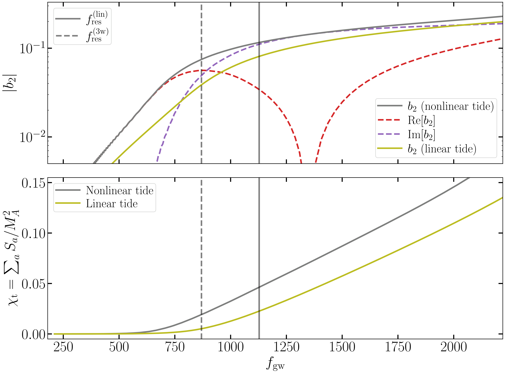
图注：Top: numerical solutions of the $l=m=2$ f-mode in a rapidly spinning NS with $\Omega_A/2\pi=-800\,{\rm Hz}$. A relativistic $\Gamma=2$ polytrope is assumed for the coupling coefficients. The gray line shows the mode solution including all nonlinear interactions. Its real and imaginary parts are shown respectively in the red-dashed and purple-dashed lines, indicating how the mode oscillates beyond resonance. The linear tide solution is represented by the yellow curve, which is qualitatively similar to the nonlinear case. The two vertical lines indicate the estimated f-mode resonance frequency from linear and three-wave approximations. Bottom: Evolution of the tidal spin $\chi_t$. In both the linear and nonlinear cases, the tidal spin evolves roughly linearly with frequency, which is due to the transient response of a driven harmonic oscillator, instead of nonlinear resonance locking.
对应解读：建议重点查看的图表 4 和 5；关键图表逐图导读：图 5 快自旋 f 模响应与 resonance locking 陷阱。
入选理由：该图展示快速自旋中子星的 f 模非线性解、线性潮汐解、共振频率估计以及 tidal spin 演化，直接支持论文关于非线性非谐性不能导致 f 模 resonance locking 的结论，并补充 Fig06 的相位层面结果。
来源与置信度：\(arxiv_source\)；high；\(arxiv_source\) / main.tex:figure[5]
强相关工作
本文与线性潮汐 Love 数、动态潮汐和通用关系文献直接相连。Hinderer 的相对论 Love 数计算和 Flanagan-Hinderer 的双中子星潮汐相位工作给出了现代潮汐参数估计的基础；Yagi-Yunes 的 I-Love-Q 关系则代表另一类把中子星结构压缩成近普适无量纲关系的思路。本文的新意是把这种“普适性”推进到非线性三波潮汐，并指出它不等于新增状态方程信息。可检索关键词包括 “binary neutron star nonlinear tides”, “affine model neutron star tides”, “f-mode tidal coupling”, “three-mode coupling neutron star”, “dynamical tides gravitational waveform”。
它也与非线性潮汐不稳定、模式共振和 resonance locking 讨论有关。有些工作关注 \(g\) 模、\(p\) 模或 \(f\) 模的非线性耦合是否会在并合前急剧抽取轨道能量，甚至改变可观测相位。本文的结论更克制：三波项确实造成弧度级相位偏差，但三波系数由线性潮汐决定；四波非谐性在慢自旋中小，且不能导致 \(f\) 模 resonance locking。若要比较相反观点，应检索 “neutron star p-g instability”, “tidal resonance locking f-mode”, “nonlinear dynamical tides binary neutron stars”。
在观测语境中，同类源是双中子星事件，原型事件是 GW170817，后续还有 GW190425 等候选双中子星事件。本文不是针对某个命名事件重分析，但其波形系统误差会影响未来对这些同类事件的潮汐参数解释。建议把本文与 LIGO-Virgo-KAGRA 潮汐约束、数值相对论校准波形、以及第三代探测器科学预期一起阅读。
同一事件 / 同类源线索：
- https://arxiv.org/abs/2607.07943
- https://arxiv.org/pdf/2607.07943
- https://arxiv.org/abs/1710.05832
- https://www.gw-openscience.org/eventapi/html/GWTC-1-confident/GW170817/v3/
相似工作：
基础理论 / 方法工作：
相反观点 / 张力线索：
（未提供）
10. The SANE, the MAD, and the Chimera
- 来源：arXiv / astro-ph.HE
- 链接：https://arxiv.org/abs/2607.07784v1
- 作者：George N. Wong, James M. Stone
- 评分：novelty 8/10，importance 7/10，relevance 8/10，final 8.65/10
- 推荐理由：astro-ph.HE；通过 3D GRMHD 比较 SANE、MAD 与新的 Chimera 吸积流状态，指出强视界磁通和强喷流可与标准 MAD 爆发性行为解耦。对黑洞吸积和相对论喷流理论有较好参考价值。
中文题目：SANE、MAD 与“嵌合体”：黑洞吸积流的磁通量状态不只由一个指标决定
做了什么：这篇论文用三维广义相对论磁流体力学模拟比较三类非辐射黑洞吸积流：弱磁通的标准正常演化盘、传统磁滞盘，以及由不同质量、角动量和相干磁通储库供给的“嵌合体”流。核心发现是，“嵌合体”能达到类似磁滞盘的视界磁通量并驱动强电磁喷流，却不表现出传统磁滞盘典型的爆发式视界磁通波动、质量流分布和内区形态。因此，磁滞盘不能只用一个视界磁通指标定义，而应看磁通、喷流功率、磁支撑、麦克斯韦输运、表面层流动、盘形态和爆发活动之间的动力学耦合。
为什么重要：黑洞喷流模型中，很多人把“达到高视界磁通量”近似等同于进入磁滞盘状态，再由此推断高喷流效率和强烈间歇性。这篇文章直接挑战这种简化：同样高的视界磁通量可以对应不同的内盘结构、力平衡和时间行为。它提醒我们，事件视界附近的磁通量是必要诊断量，但不是充分诊断量。
理论 / 观测 / 仪器方法价值：对理论模拟而言，本文的价值在于把磁滞盘判据从单一标量推广为一组动力学诊断，包括径向力预算、角动量输运、质量流通道、喷流功率和形态学。对观测解释而言，它提示高喷流功率源未必都应表现为传统磁滞盘式的强爆发或相同的盘-喷流几何。对数值方法而言，它强调初始条件和外部供给历史会改变最终吸积态，而不只是改变达到稳态的时间。
为什么应该关注：如果你用黑洞吸积模拟解释活动星系核、X射线双星或事件视界望远镜图像，这篇文章值得关注，因为它说明“高磁通”等标签背后可能隐藏不同物理状态。它会影响我们如何从喷流功率反推黑洞附近磁场、如何解释准周期爆发或缺失爆发、以及如何设计模拟初始条件来覆盖真实天体的供给历史。
展开详细解读：文章讲解、背景、理论、重点章节、图表与相关工作
文章详细讲解
科学问题：非辐射黑洞吸积流通常按视界附近累积的无量纲磁通量分为标准正常演化盘和磁滞盘。标准正常演化盘磁通较弱，湍流和气体压力在盘体中主导；磁滞盘磁通强到能显著阻碍或调节内区吸积，并常伴随强喷流和爆发式磁通释放。问题在于，实际天体的供给历史可能很复杂：外部气体带来的质量、角动量和相干磁通未必像理想化模拟那样单调、同源、同几何地进入黑洞。因此，“高视界磁通量是否等价于标准磁滞盘状态”是本文要检验的核心。
作者怎么做：论文比较三组三维广义相对论磁流体力学非辐射模拟。第一组是弱磁化的标准正常演化盘，代表低磁通吸积；第二组是常规磁滞盘，代表强相干磁通从同一吸积储库逐渐堆积到视界；第三组是“嵌合体”流，其供给储库在质量、角动量和相干磁通方面不同于标准磁滞盘设置。作者不仅看视界磁通和喷流功率，还检查密度结构、漏斗壁几何、质量流通道、径向力预算和角动量输运，使比较不局限于一个时间序列指标。
关键结果：标准正常演化盘中，径向支撑主要来自流体动力学项，特别是气体压力梯度；磁场虽驱动湍流和角动量输运，但不是内区径向力平衡的同阶主角。标准磁滞盘中，磁压力和磁张力进入径向力预算，并与气体项同阶，内区动力学被强磁场显著调节。最有意思的是，“嵌合体”在较长的非爆发阶段维持了磁滞盘级别的视界磁通量和强电磁喷流，却没有复制标准磁滞盘的爆发式视界磁通变化、质量流分布和内流形态；它在密度结构、漏斗壁、表面层流动和角动量输运上一直与标准磁滞盘不同。
局限和下一步：这仍是理想化的非辐射广义相对论磁流体力学模拟，辐射冷却、电子热力学、真实外部供给的多尺度连接、盘厚度和磁场拓扑的系统扫描都可能改变可观测表现。文章的直接结论不是“磁滞盘概念无用”，而是“磁滞盘不能由单一诊断量定义”。下一步应把这种多诊断框架用于更大参数空间，并与辐射转移后处理、偏振图像、喷流功率时间序列和多波段变异性连接，检验不同磁通供给历史是否能在观测上区分。
关键结果是怎么做出来的
本文最重要的证据链不是单独展示某个模型的视界磁通量很高，而是把三类模拟放在同一套诊断下比较。样本由三组全三维广义相对论磁流体力学演化组成：弱磁化标准正常演化盘、常规磁滞盘，以及由不同外部储库供给的“嵌合体”。这种样本量在统计意义上不是大样本模拟库，但它是一个受控物理实验：通过改变供给的质量、角动量和相干磁通历史，检验同样达到高视界磁通量时内区动力学是否唯一。
事件数或样本量在这里应理解为模拟状态和时间区间，而不是观测事件计数。作者重点分析的是每个模拟在准稳态或被选定演化阶段中的时间平均量、径向剖面和二维结构。对“嵌合体”而言，关键是存在一个延长的非爆发区间：在这段时间内，无量纲视界磁通量达到磁滞盘级别，电磁喷流功率也很强，但没有标准磁滞盘常见的剧烈磁通爆发或周期性释放。这使得“高磁通加高喷流功率”与“标准磁滞盘式爆发行为”被解耦。
显著性在本文中主要来自模型间的系统性差异和多诊断一致性，而不是单一假设检验的 \(p\) 值。需要看的统计量包括时间平均剖面的散布、不同时间窗内视界磁通量和喷流功率的相关性、径向力预算各项的相对大小，以及质量内流和外流在不同极角区域的分布。若论文给出阴影带或误差条，应把它们理解为时间变异性或采样区间带来的不确定度，而不是独立观测误差。
支撑结论的图表通常应包括：视界磁通量和喷流功率随时间变化图，显示“嵌合体”高磁通但非爆发；密度或磁场结构二维切片，显示漏斗壁和盘体形态差异；径向力预算图，显示标准正常演化盘中气体压力梯度主导，而磁滞盘中磁压力和磁张力同阶重要；角动量通量或麦克斯韦应力剖面，显示输运机制差异。这些图共同支持“磁滞盘类似行为是一个多变量动力学状态，而非单指标阈值”。
主要系统误差来自数值分辨率、初始磁场拓扑、外边界和供给条件、模拟时长以及非辐射近似。稳健性检验应关注：结论是否只依赖某个时间窗；高磁通阶段是否已经达到足够内区稳态；力预算是否对坐标平均方式敏感；喷流功率是否受视界附近数值地板处理影响；“嵌合体”的非爆发是否只是因为演化时间不够长。读者应特别检查作者是否把瞬时快照、时间平均和径向平均清楚区分，因为这类模拟中短时涨落很容易被误读为长期状态差异。
展开背景、理论、公式、模型、章节和图表导读
背景知识
研究对象是黑洞周围的热、厚、低辐射效率吸积流。这类流常用于解释低光度活动星系核、某些硬态X射线双星，以及事件视界尺度图像中的热等离子体结构。因为辐射冷却不主导能量方程，磁流体湍流、角动量输运、磁通积累和喷流抽能成为决定结构的关键。
历史上，弱磁化厚盘模拟形成了所谓标准正常演化盘。这里“正常”并不是说真实宇宙都如此，而是说磁通量没有强到阻塞内区吸积，磁旋转不稳定湍流维持角动量输运，盘体形态相对连续。后来强相干大尺度磁场被引入模拟，磁通在黑洞附近堆积到足以反作用于流体，形成磁滞盘。磁滞盘能通过布兰德福德-兹纳耶克过程产生高效率喷流，成为解释强相对论喷流的重要范式。
现在值得重新看这个问题，是因为观测和模拟都进入了需要更细分类的阶段。事件视界望远镜给出黑洞阴影尺度的总强度和偏振结构，长基线和多波段监测给出喷流功率、核区变异性和偏振旋转量约束。简单地把源分成弱磁通盘和强磁通盘，可能不足以连接这些观测量。尤其是外部供给历史在真实活动星系核中可能受恒星风、冷云、盘风、并合残余和大尺度磁场共同影响，不一定对应标准理想化初始环面。
常见误区之一是把无量纲视界磁通量超过某个经验阈值就等同于“进入磁滞盘”。这个阈值确实有用，但它只说明黑洞附近磁通达到了强场水平，不能自动说明质量内流通道、喷流边界、爆发行为和角动量输运都与传统磁滞盘相同。另一个误区是把喷流功率视为唯一判据；喷流强并不必然意味着盘体形态和内区力平衡唯一。本文正是针对这些误区，用“嵌合体”展示磁通和动力学状态之间的非一一对应。
基础理论 / 方法脉络
基础物理图像是：黑洞吸积盘中的气体必须失去角动量才能向内落入，而磁场既能通过湍流应力输运角动量，也能在黑洞自转能量抽取中扮演通道。若磁场较弱，盘的厚度、径向支撑和湍流结构主要由气体压力、惯性和磁旋转不稳定决定；若大尺度极向磁通不断向内输运并在视界附近堆积，磁压力和磁张力会反作用于内流，改变吸积几何。
标准正常演化盘与磁滞盘的常用区分量是无量纲视界磁通量，通常把穿过事件视界的磁通与质量吸积率归一化。这个量高，表示单位吸积质量携带或支撑的黑洞附近磁场强。传统磁滞盘在达到高磁通后，常出现磁通堆积、局部阻塞、间歇性释放和强喷流，因此在很多文献中高视界磁通量被当作磁滞状态的近似代名词。
本文的关键假设扩展是：吸积流的状态不仅由当前视界磁通决定，还由外部储库如何提供质量、角动量和相干磁通决定。不同供给历史可以使黑洞附近达到类似磁通量，却形成不同密度分布、漏斗壁形状和质量流通道。也就是说，磁场强度、磁场拓扑、角动量分布和气体供给的空间结构共同决定最终动力学。
观测或数值诊断上，需要同时看多个量：质量吸积率、电磁能流、视界磁通量、喷流效率、径向力分解、角动量通量和二维形态。退化关系很明显：同样的喷流功率可能来自更高黑洞自旋、更大磁通或不同负载；同样的视界磁通量可能对应不同盘厚、不同磁场几何和不同时间变异性。系统误差则包括数值地板、分辨率、平均区间选择、内区是否达到稳态、以及是否忽略辐射冷却导致盘厚偏大。
公式与推导
第一步是从质量守恒定义吸积率。在定常近似下，穿过半径为 \(r\) 的球面的质量通量可写为
这里 \(\rho\) 是静质量密度，\(u^{r}\) 是四速度径向分量，\(g\) 是度规行列式。负号使向内流动对应正的 \(\dot{M}\)。这个量用于归一化磁通和喷流功率，也用于判断内区是否接近准稳态。
第二步定义穿过黑洞视界的磁通。若 \(r_{\rm H}\) 是视界半径，常用磁通为
因子 \(1/2\) 避免把两个极性的通量简单相加时重复计数，\(B^{r}\) 是径向磁场。磁滞盘判据通常使用归一化磁通而不是裸磁通。
第三步给出无量纲视界磁通量：
这里 \(M\) 是黑洞质量，\(G\) 是引力常数，\(c\) 是光速，\(\langle \dot{M}\rangle\) 是时间平均吸积率。\(\phi_{\rm BH}\) 高说明单位质量供给对应强视界磁场，但本文强调它不是完整状态变量。
第四步连接喷流功率与黑洞磁通。布兰德福德-兹纳耶克标度可概括为
其中 \(\kappa\) 吸收几何和场线角速度因子，\(\Omega_{\rm H}\) 是黑洞视界角速度。该式说明高 \(\Phi_{\rm BH}\) 和高自旋可产生强电磁喷流，但它不预言盘体必然具有标准磁滞盘形态。
第五步定义喷流效率：
若 \(\eta_{\rm jet}\) 很高，说明喷流输出相对于吸积静质量能很强，甚至可能抽取黑洞自转能。本文中“嵌合体”达到强喷流输出，因此仅从 \(\eta_{\rm jet}\) 看会很像磁滞盘。
第六步看径向动量平衡的分解。磁流体总能动张量为
其中 \(h\) 是比焓，\(p\) 是气体压强，\(b^{\mu}\) 是共动系磁场四矢量，\(b^{2}=b^{\mu}b_{\mu}\)。气体压力项、磁压力项和磁张力项都包含在 \(T^{\mu\nu}\) 中，本文用这类分解比较不同流态的径向支撑。
第七步可把径向力密度示意写成
第一项是气体压力梯度，第二项是磁压力梯度，第三项是磁张力，后两项代表引力和惯性贡献。标准正常演化盘中第一项更显著；磁滞盘和部分强磁流中，第二、第三项可与气体项同阶。
第八步看角动量输运。磁应力贡献可用
表征，雷诺应力则来自速度涨落。若 \(W^{r}_{\ \phi,\rm M}\) 在内区占优，说明磁场直接承担重要角动量输运。本文比较“嵌合体”和标准磁滞盘时，角动量输运差异是区分二者的重要证据。
第九步是时间变异性诊断。对任意时间序列 \(X(t)\)，可定义相对均方根涨落
若 \(X(t)=\phi_{\rm BH}(t)\) 或 \(X(t)=P_{\rm jet}(t)\)，该量可量化爆发性和间歇性。本文的物理要点正是：“嵌合体”的 \(\phi_{\rm BH}\) 可很高，但 \(\sigma_{\phi,\rm rel}\) 和形态演化不必像标准磁滞盘。
模型拟合 / 应用方法
这类论文不是传统观测数据拟合，而是数值实验的模型比较。可被视为“拟合量”的，是一组模拟输出诊断：\(\dot{M}\)、\(\phi_{\rm BH}\)、\(P_{\rm jet}\)、\(\eta_{\rm jet}\)、密度剖面、磁压与气压比、径向力分量、角动量通量和时间变异性。模型参数则包括黑洞自旋、初始环面或供给储库、磁场拓扑、磁通强度、角动量分布和数值分辨率。
如果把它形式化为参数估计，可以把每个模拟状态看成由参数向量 \(\Theta\) 生成的诊断向量 \(\mathbf{D}\)，再比较 \(\mathbf{D}\) 是否落在标准正常演化盘或磁滞盘的经验区域内。本文的论点相当于说，单维分类函数 \(C(\phi_{\rm BH})\) 不充分；需要多维分类函数 \(C(\phi_{\rm BH},P_{\rm jet},\mathbf{F}_{r},\mathbf{J},\rho,\mathrm{variability})\)，其中 \(\mathbf{F}_{r}\) 表示径向力预算，\(\mathbf{J}\) 表示角动量输运结构。
残差诊断在这里对应模型间差值图和剖面差异。例如，若“嵌合体”与标准磁滞盘有相似 \(\phi_{\rm BH}\) 和 \(P_{\rm jet}\)，但密度分布、漏斗壁位置、质量内流极角分布和磁张力剖面都有系统残差，就说明它不是同一动力学态的随机涨落。读者应检查这些残差是否大于同一模型内部的时间涨落，否则差异可能只是阶段性变异。
主要退化关系包括：黑洞自旋与磁通量都能提高喷流功率；盘厚和磁场几何都会改变磁通输运效率；外部供给角动量和磁场相干长度都会影响内区形态；数值地板可能影响低密度漏斗区的能流估计。模型失败的典型方式是：模拟时间不足导致外区未达到稳态，内边界附近强磁区域受分辨率影响，或者非辐射假设使结果不适合冷薄盘和强辐射源。
实际应用上，这种多诊断框架可用于解释为什么某些喷流源有强稳态喷流却缺少明显磁滞盘式爆发，或为什么事件视界尺度偏振显示强有序磁场但光变不符合传统磁滞盘预期。未来若与合成辐射图像结合，可把模拟诊断投影到可观测量，如毫米偏振结构、旋转量、核心亮度温度、喷流开角和高能变异性，从而做更接近观测的模型选择。
重点章节 / 结果段落怎么读
第一，读数据和模拟设置部分时，应重点看三类模型的初始或供给条件如何不同。标准正常演化盘、标准磁滞盘和“嵌合体”不是简单改变一个磁场强度参数，而是涉及质量、角动量和相干磁通储库的差异。这里决定了后面“历史依赖性”的物理含义。
第二，读全局时间演化部分时，应把 \(\dot{M}\)、\(\phi_{\rm BH}\) 和 \(P_{\rm jet}\) 放在一起看。若“嵌合体”在高 \(\phi_{\rm BH}\) 下维持强喷流但没有标准磁滞盘式爆发，这是论文最直接的反例证据。不要只看峰值，要看持续时间和涨落幅度。
第三，读形态结构部分时，应关注密度切片、磁场线、漏斗和漏斗壁。传统磁滞盘的内区形态往往与强磁压支撑、盘体压缩和间歇性通道有关；“嵌合体”若在这些结构上不同，就说明同样高磁通没有唯一几何后果。
第四，读径向力预算部分时，要检查作者如何分解气体压力、磁压力、磁张力、惯性和引力项。本文关于标准正常演化盘与磁滞盘的物理区分，很大程度来自这里：前者主要由流体压力支撑，后者磁项进入同阶预算。
第五，读角动量输运和讨论部分时，应看麦克斯韦应力、表面层流动和质量通道如何与磁通状态耦合。结论部分的重点不是新造一个标签，而是提出“磁滞盘类似行为”应被理解为多个动力学特征的组合。
建议重点查看的图表
-
视界磁通量随时间变化图：看三类模拟的 \(\phi_{\rm BH}(t)\) 是否分离，“嵌合体”是否达到磁滞盘水平，以及是否缺少标准磁滞盘的强爆发。
-
喷流功率或效率随时间变化图：看 \(P_{\rm jet}(t)\) 或 \(\eta_{\rm jet}(t)\) 是否与 \(\phi_{\rm BH}(t)\) 同步，以及“嵌合体”是否在非爆发阶段仍有强电磁输出。
-
密度和磁场二维切片：看盘体厚度、漏斗壁位置、磁场有序性、低密度喷流区和表面层流动。关键是比较形态而不是只看颜色最亮区域。
-
质量内流和外流的极角分布：看吸积是否集中在赤道盘、表面层还是非对称通道；这直接关系到“嵌合体”与标准磁滞盘的质量流结构差异。
-
径向力预算剖面：看气体压力梯度、磁压力、磁张力和惯性项的相对大小。若磁项在标准磁滞盘中同阶但在标准正常演化盘中较弱，这是分类的核心物理证据。
-
角动量通量或麦克斯韦应力剖面：看 \(W^{r}_{\ \phi,\rm M}\) 在内区和表面层的贡献，以及“嵌合体”的输运是否与标准磁滞盘不同。
-
时间平均与瞬时快照对照：看论文是否展示同一诊断在不同时间窗内稳定。若只有单一快照，需警惕把瞬时结构误认为长期状态。
-
稳健性或分辨率相关表格：看网格分辨率、分析时间窗、地板处理和平均区域是否影响主要结论。
关键图表逐图导读
图 1：通常应是三类模拟的全局时间序列，横轴为时间，纵轴可能包括 \(\dot{M}\)、\(\phi_{\rm BH}\) 和 \(P_{\rm jet}\)。数据线用于比较标准正常演化盘、标准磁滞盘和“嵌合体”的演化。读图重点是“嵌合体”是否在 \(\phi_{\rm BH}\) 上接近磁滞盘，同时在爆发性上不同。陷阱是只看峰值而忽略时间平均和持续区间。
图 2：可能是密度、磁压或磁场线的二维切片。坐标轴通常是以 \(r_{g}\) 归一化的空间坐标，颜色代表 \(\rho\)、磁化强度或压强比，曲线代表磁场线或流线。读图重点是漏斗壁几何、盘体厚度和内区通道。陷阱是颜色标度若为对数，视觉差异会被放大或压缩，必须结合剖面图。
图 3：应重点关注径向剖面，如密度、磁压、气压、等离子体 \(\beta\) 或磁化参数随半径变化。横轴多为 \(r/r_{g}\)，纵轴为时间和角向平均后的物理量。读图重点是标准正常演化盘与磁滞盘在内区的磁支撑差异，以及“嵌合体”是否偏离标准磁滞盘曲线。陷阱是平均方式会掩盖表面层和赤道层差异。
图 4：径向力预算图最关键。横轴为半径，纵轴为各力项或归一化力密度，模型线分别代表气体压力梯度、磁压力、磁张力、惯性和引力相关项。主要结论应是标准正常演化盘中流体压力支撑占主导，而磁滞盘类流中磁项不可忽略。陷阱是不同项可能正负相消，不能只看绝对值大小而不看方向。
图 5：质量通量或角动量通量分解图。横轴可能是半径或极角，纵轴为 \(\dot{M}\)、\(T^{r}_{\ \phi}\) 或相关归一化通量。读图重点是吸积通道是否在赤道、表面层或漏斗壁附近，以及麦克斯韦应力是否主导。陷阱是内流和外流若被净通量相减，可能隐藏强烈的双向循环。
图 6：如果有模型比较汇总图或相空间图，横轴和纵轴可能是 \(\phi_{\rm BH}\)、\(P_{\rm jet}\)、变异性幅度或磁支撑指标。读图重点是“嵌合体”与标准磁滞盘在某些指标上重合、在另一些指标上分离。这张图最能体现本文的分类思想：单一投影会误判，多维诊断才可靠。
论文原图 / 可嵌入图片
Fig02
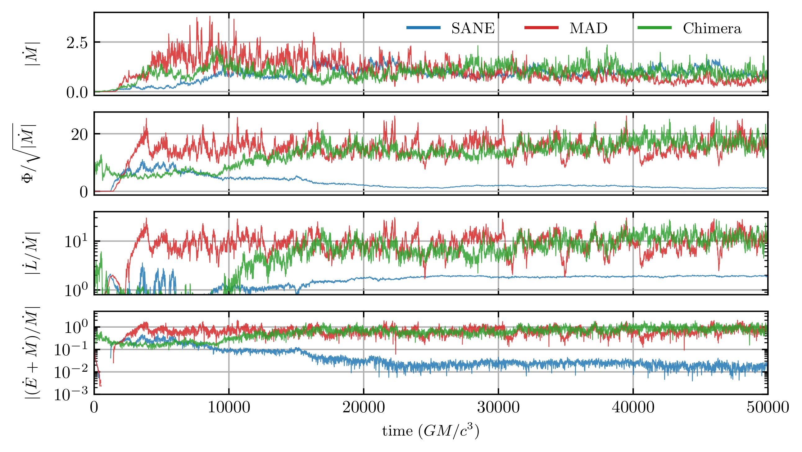
图注：Time series of horizon fluxes for the three simulations. From top to bottom, the panels show the mass accretion rate normalized by its post-transient mean, as well as the instantaneous dimensionless horizon-threading magnetic flux $\phi_{\rm BH}=\Phi_{\rm BH}/|\dot M|^{1/2}$, specific angular-momentum flux $|\dot L/\dot M|$, and rest-mass-subtracted specific energy flux $|(\dot E+\dot M)/\dot M|$. The standard MAD rapidly reaches a large horizon-threading magnetic flux and begins to erupt, while the SANE remains weakly magnetized after its initial transient. The magnetic flux in the Chimera MAD approaches saturation in $\phi$ more gradually and remains at large flux for an extended interval before entering its eruptive phase at $t \approx 40,\!000\,GM/c^3$.
对应解读：对应“建议重点查看的图表”第1、2项，以及“关键图表逐图导读”中关于图1的全局时间序列解读。
入选理由：这张图直接给出三类模拟的质量吸积率、视界磁通量、角动量通量和能量通量时间序列，是检验“嵌合体”是否达到MAD级别\(\phi_{\rm BH}\)、是否长期维持高磁通、以及是否不同于标准MAD爆发行为的核心证据。能量通量也可作为喷流/电磁输出强弱的关键代理量。
来源与置信度：\(arxiv_source\)；high；\(arxiv_source\) / main.tex:figure[2]
Fig10
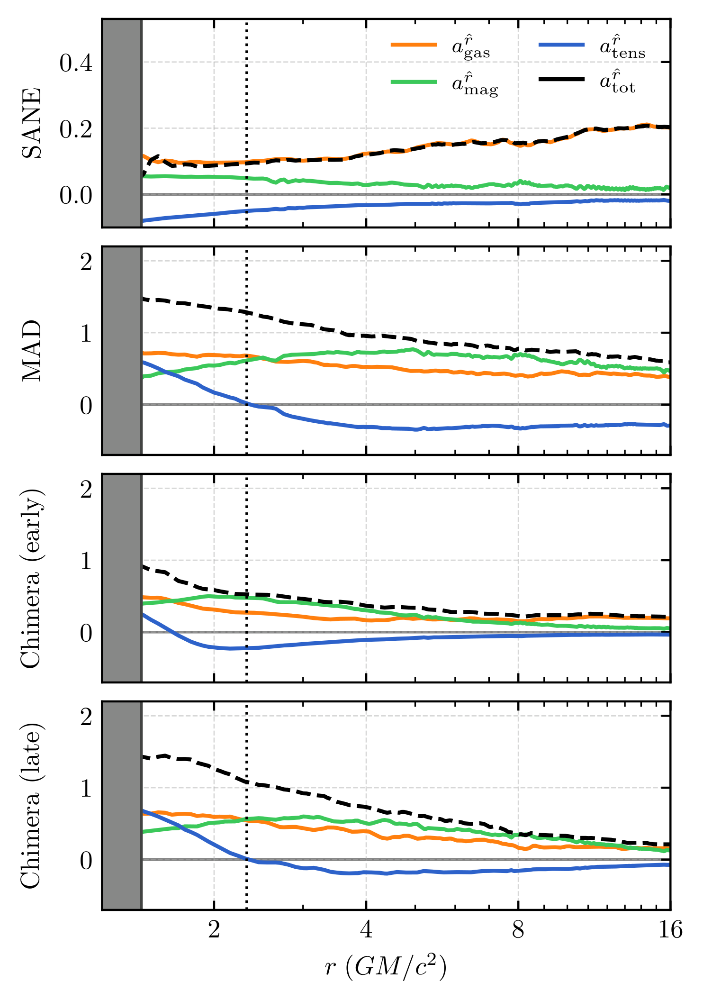
图注：Radial profiles of the gas-pressure, magnetic-pressure, magnetic-tension, and total radial acceleration contributions for the SANE, standard MAD, and Chimera MAD flows. Accelerations are normalized by $R\,\Omega_{\rm Kep}^2$; positive values indicate outward acceleration and negative values assist infall. The gray shaded region marks the event horizon and the dotted vertical line marks the ISCO. The SANE flow is primarily gas-pressure supported, while the MAD and late Chimera MAD flows have magnetic-pressure and tension terms comparable to the gas-pressure contribution, indicating magnetic regulation of the inner-flow force balance.
对应解读：对应“建议重点查看的图表”第5项、“关键图表逐图导读”中图4的径向力预算，以及模型比较段落中\(\mathbf{F}_r\)多诊断分类。
入选理由：这张图明确分解气体压力、磁压力、磁张力和总径向加速度，并以半径为横轴比较SANE、标准MAD和Chimera。它直接支撑论文最重要的物理判断：SANE主要由气体压力支撑，而MAD和晚期Chimera中磁压力与磁张力达到同阶，说明高磁通状态的动力学调节不能只靠单一\(\phi_{\rm BH}\)诊断判断。
来源与置信度：\(arxiv_source\)；high；\(arxiv_source\) / main.tex:figure[10]
Fig03
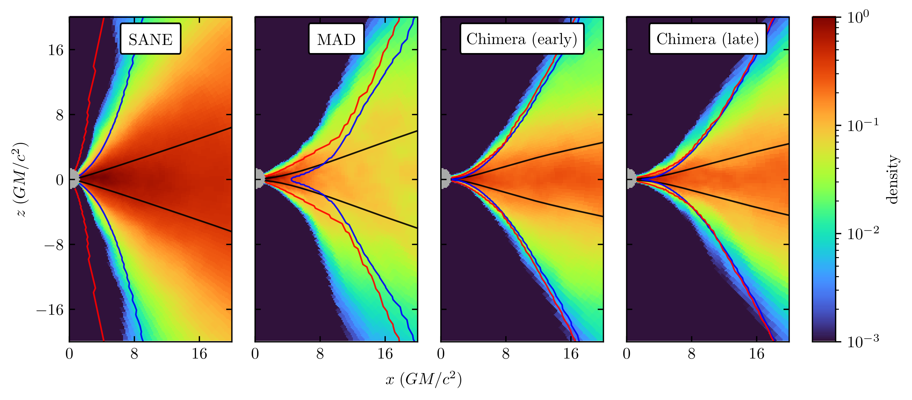
图注：Time- and azimuth-averaged density structure for the three simulations. The red curve marks $(\beta\gamma)_\infty=1$, the blue curve marks $\sigma=1$, and the black curve shows the density scale height. The $\sigma=1$ contour also defines the mask used to exclude magnetically dominated zones from the disk-body radial profiles presented below. The SANE flow has a broad, matter-dominated disk and gradual transition to the polar region, while the standard MAD has a more evacuated funnel and thinner inner disk. The Chimera MAD changes between its early and late intervals, but its density distribution and funnel-wall geometry remain distinct from the standard MAD.
对应解读：对应“建议重点查看的图表”第3、7项，以及“关键图表逐图导读”中关于二维密度结构、漏斗壁几何和时间平均形态的说明。
入选理由：这张图展示时间和方位角平均后的密度结构，并标出\(\sigma=1\)、\((\beta\gamma)_\infty=1\)和密度标高等关键轮廓，能直接比较盘体厚度、低密度漏斗、漏斗壁位置和Chimera相对于标准MAD的系统性形态差异。相比单一快照，它更适合支撑日报中关于长期结构而非瞬时亮斑的解读。
来源与置信度：\(arxiv_source\)；high；\(arxiv_source\) / main.tex:figure[3]
Fig05
图注：Radial mass accretion rate as a function of latitude for the SANE, standard MAD, and early and late Chimera MAD intervals. Positive values denote inward accretion and negative values denote outward mass flux. The SANE flow shows broad off-midplane accretion peaks, while the standard MAD places more of the inward mass flux near the midplane and develops outflowing regions at higher latitudes. The Chimera MAD evolves from a more vertically structured early pattern toward a sharper inner inflow component at late times.
对应解读：对应“建议重点查看的图表”第4项，以及“关键图表逐图导读”中图5关于质量通量分解和吸积通道位置的说明。
入选理由：这张图按纬度展示不同半径处的径向质量通量，区分内流和外流，正好用于判断吸积是否集中在赤道盘、表面层或高纬通道。它能支撑日报中关于Chimera与标准MAD在质量流结构和表面层流动上并不等价的论点。
来源与置信度：\(arxiv_source\)；high；\(arxiv_source\) / main.tex:figure[5]
Fig12
图注：Latitudinal profiles of radial angular-momentum flux at $r = 3$, $5$, and $10\,GM/c^2$, with positive values denoting outward transport. Colored curves show the individual contributions to the total flux (dashed black curve); the dotted black curve shows the sum of the stress-like components ${R^r}_\phi-\langle b^r b_\phi\rangle$. The dotted curve isolates disk transport torques together with possible funnel angular-momentum extraction from the spinning black hole, which together redistribute angular momentum with respect to the fluid. The SANE stress is modest and mostly disk-body confined, the standard MAD is Maxwell dominated with broad off-midplane lobes, and the Chimera MAD follows a similar pattern at reduced amplitude and with different vertical structure.
对应解读：对应“建议重点查看的图表”第6项，以及“关键图表逐图导读”中图5关于角动量通量、麦克斯韦应力和输运结构的部分。
入选理由：这张图给出\(r=3,5,10\\,GM/c^2\)处的纬向角动量通量剖面，并分解总通量、应力项和Maxwell主导贡献。它是判断SANE输运局限于盘体、标准MAD具有宽广离中面Maxwell输运、而Chimera幅度和垂向结构不同的关键图。
来源与置信度：\(arxiv_source\)；high；\(arxiv_source\) / main.tex:figure[12]
Fig06
图注：Radial profiles of basic fluid diagnostics for the SANE, standard MAD, and Chimera MAD flows, shown as disk-body averages (left) and midplane values (right). From top to bottom, the panels show density normalized to its value at the innermost stable circular orbit (ISCO), dimensionless fluid temperature $\Theta_{\rm fluid}$, magnetization $\sigma \equiv b^2/\rho$, and plasma $\beta \equiv 2P_{\rm gas}/b^2$. Comparing the two columns highlights vertical stratification, with the midplane more strongly magnetized than the disk, especially in the MAD and late Chimera states. The gray shaded region marks the event horizon and the dotted vertical line marks the ISCO. The SANE flow remains denser and less magnetized, the standard MAD is hotter and more strongly magnetized, and the Chimera MAD evolves toward lower density and higher magnetization while remaining distinct from the standard MAD.
对应解读：对应“关键图表逐图导读”中图3的径向剖面说明，以及模型比较段落中的密度、磁化强度、等离子体\(\beta\)等诊断量。
入选理由：这张图提供盘体平均和中平面两种径向剖面，包含密度、温度、磁化参数\(\sigma\)和等离子体\(\beta\)。它能定量补充二维形态图，显示SANE、标准MAD与Chimera在内区磁化、密度降低和垂向分层上的系统差异，避免只凭颜色图作形态判断。
来源与置信度：\(arxiv_source\)；high；\(arxiv_source\) / main.tex:figure[6]
强相关工作
这篇工作与经典磁滞盘和喷流理论直接相连。布兰德福德-兹纳耶克机制给出旋转黑洞通过有序磁场输出电磁能的基础图像；后来的三维广义相对论磁流体力学模拟显示，当大尺度磁通在视界堆积到足够强时，喷流效率可非常高，形成磁滞盘范式。检索关键词可用“Blandford Znajek mechanism”、“magnetically arrested disk”、“GRMHD jet efficiency”、“SANE MAD accretion”。
它也与事件视界望远镜和低光度活动星系核建模有关。许多对 \(\mathrm{M87}^{\ast}\) 和 \(\mathrm{Sgr\ A}^{\ast}\) 的模拟库会在标准正常演化盘与磁滞盘之间选择模型，并用毫米图像、偏振和变异性排除部分参数。本文提醒读者，标准正常演化盘/磁滞盘二分法可能漏掉供给历史不同但视界磁通很高的状态。检索关键词可用“EHT SANE MAD library”、“M87 polarized GRMHD MAD”、“Sgr A variability MAD SANE”。
潜在张力在于：如果观测上发现某源喷流很强但核区光变不呈现磁滞盘式爆发，传统解释可能归因于观测采样、辐射区位置或视角；本文提供另一种理论可能，即该源处在高磁通但非标准磁滞盘动力学态。反过来，如果某些模拟或观测分类只使用 \(\phi_{\rm BH}\) 阈值，可能会把“嵌合体”误分为标准磁滞盘。
同一事件 / 同类源线索：
相似工作：
基础理论 / 方法工作：
- https://ui.adsabs.harvard.edu/abs/1977MNRAS.179..433B/abstract
- https://ui.adsabs.harvard.edu/abs/2003PASJ...55L..69N/abstract
- https://ui.adsabs.harvard.edu/abs/1991ApJ...376..214B/abstract
相反观点 / 张力线索：
11. Sub-Torque-Balance Upper Limits on Continuous Gravitational Waves from Scorpius X-1
- 来源：arXiv / astro-ph.HE
- 链接：https://arxiv.org/abs/2607.07765v1
- 作者：The LIGO Scientific Collaboration, the Virgo Collaboration, the KAGRA Collaboration, the Precision Ephemerides for Gravitational-Wave Searches, Project, :, A. G. Abac, I. Abouelfettouh
- 评分：novelty 8/10，importance 8/10，relevance 7/10，final 8.65/10
- 推荐理由：astro-ph.HE；LIGO-Virgo-KAGRA 对 Sco X-1 连续引力波给出低于标准 torque-balance 的上限，显著改进灵敏度并约束中子星形变和转矩平衡情景。虽非伽马射线主题，但属于致密星和多信使相关高能天体物理重要结果。
中文题目：来自天蝎座 X-1 的连续引力波搜索：低于标准转矩平衡预期的上限
做了什么：这篇 LIGO-Virgo-KAGRA 论文用第四次观测运行前半段数据，针对低质量 X 射线双星天蝎座 X-1 搜索连续引力波，频率范围为 \(25\,\mathrm{Hz}\le f_0\le200\,\mathrm{Hz}\)。作者采用重采样版交叉相关管线，显著提高了对双星轨道调制信号的相干积累效率。结果没有发现可信信号，但在 \(50\,\mathrm{Hz}\lesssim f_0\lesssim200\,\mathrm{Hz}\) 给出了低于标准转矩平衡预期的 \(h_0\) 上限；最优频段的边缘化上限接近 \(5\times10^{-26}\)，有利倾角假设下可到 \(2\times10^{-26}\)。这意味着如果天蝎座 X-1 中子星在这个自转范围内由普通强子物态方程描述，简单的“吸积自旋加速由引力波制动平衡”图像受到明显压力。
为什么重要：天蝎座 X-1 是最亮、最经典的低质量 X 射线双星之一，也是连续引力波靶向搜索的头号目标。过去该源的自旋未知、轨道参数有不确定性、信号相位调制复杂，使得搜索长期只能接近而难以越过转矩平衡灵敏度。这篇文章的重要性在于：它不是简单刷新一个更低的非探测上限，而是在相当宽的低频段首次把上限压到标准转矩平衡线以下，从而把连续引力波搜索从“还不够敏感”推进到“已经能排除一部分天体物理模型”的阶段。
理论 / 观测 / 仪器方法价值：对理论而言，结果约束了由山形三轴形变或 \(r\)-模不稳定性驱动的角动量损失，尤其是把椭率约束推进到 \(f_0=200\,\mathrm{Hz}\) 时约 \(3\times10^{-6}\) 的量级，接近普通核物质可支持形变的有趣范围。对观测而言，它展示了 O4 数据和重采样交叉相关方法在双星连续波搜索中的实际收益，并给出如何处理离群候选、后续层级跟进和额外数据排除的范例。对方法而言，它把灵敏度深度提升到约 \(70-75\,\mathrm{Hz}^{-1/2}\)，是评估下一阶段 O4/O5 和第三代引力波探测器搜索策略的关键基准。
为什么应该关注：如果你关心中子星内部物态、吸积系统角动量演化或连续引力波数据分析，这篇文章都值得看。它直接触碰一个长期问题：为什么低质量 X 射线双星中没有观测到接近破裂频率的毫秒中子星？引力波转矩一直是候选解释之一，但天蝎座 X-1 的新上限说明，至少在一段低自转频率对应的 \(f_0\) 区间内，标准版本的转矩平衡并不容易成立。即使非探测本身不如发现激动人心，它已经开始反向筛选中子星山、\(r\)-模饱和振幅、磁层转矩和吸积流模型。
展开详细解读：文章讲解、背景、理论、重点章节、图表与相关工作
文章详细讲解
科学问题：天蝎座 X-1 是一颗中子星与低质量伴星组成的 X 射线双星，长期高吸积率会给中子星输入角动量。如果没有有效制动，中子星应被自旋加速到很高频率；但观测到的低质量 X 射线双星自旋分布并没有堆到质量抛射极限附近。因此，一个经典假说是：吸积转矩与连续引力波转矩达到平衡。连续波可能来自非轴对称质量四极矩，即“中子星山”，也可能来自流体 \(r\)-模。天蝎座 X-1 由于 X 射线通量极高，在转矩平衡图像下预期引力波振幅较大，所以一直是最优先的靶源。
作者怎么做：论文使用 LIGO 第四次观测运行第一部分数据，采用重采样版交叉相关搜索管线。双星连续波难点在于信号频率不仅随地球运动产生多普勒调制，还随中子星绕伴星的轨道运动产生相位调制；如果直接全相干搜索，参数空间和计算量会爆炸。交叉相关方法在短时傅里叶变换之间构造相位校正后的相关量，在灵敏度与计算量之间折中；重采样版本进一步把相位模型吸收到时间坐标变换中，提高了频率扫描效率。搜索频率为 \(25\,\mathrm{Hz}\) 到 \(200\,\mathrm{Hz}\)，对应三轴形变情形下自转频率 \(12.5\,\mathrm{Hz}\) 到 \(100\,\mathrm{Hz}\)，或 \(r\)-模情形下大约 \(15-20\,\mathrm{Hz}\) 到 \(120-150\,\mathrm{Hz}\)。
关键结果：未发现能通过层级跟进的可信连续波信号。作者给出的 \(h_0\) 上限在 \(50\,\mathrm{Hz}\lesssim f_0\lesssim200\,\mathrm{Hz}\) 低于标准转矩平衡水平，并且这个结论对中子星自旋轴倾角边缘化后仍成立。频带高端的边缘化上限接近 \(5\times10^{-26}\)，若假定最有利倾角则接近 \(2\times10^{-26}\)。换成三轴椭率，约为 \(f_0=75\,\mathrm{Hz}\) 时 \(3\times10^{-5}\)，\(f_0=200\,\mathrm{Hz}\) 时 \(3\times10^{-6}\)。这些数值已经从“明显高于理论可承受形变”进入“接近普通核物质可能支持形变”的讨论区间。
局限和下一步：需要谨慎的是，“低于转矩平衡”并不等于彻底排除引力波制动。转矩平衡振幅依赖 X 射线通量、距离、吸积几何、磁场耦合、惯性矩、半径和物态方程；\(r\)-模解释还依赖模频率、饱和机制和热平衡。搜索频段也只覆盖 \(25-200\,\mathrm{Hz}\) 的引力波频率，若真实自旋更高或信号模型偏离准单色假设，结论要重新解释。下一步最直接的是用 O4 后续数据和 O5 更高灵敏度扩展频段，并把更精确的光学/射电/X 射线星历、倾角约束和吸积转矩模型纳入上限解释。
关键结果是怎么做出来的
样本和数据选择方面，本文选择的是单一天体靶源天蝎座 X-1，而不是全天搜索或大样本源表搜索。数据来自 LIGO-Virgo-KAGRA 第四次观测运行前半段，实际灵敏度主要由 LIGO 探测器贡献；目标频段为 \(25-200\,\mathrm{Hz}\)。这个频段低于许多早期天蝎座 X-1 搜索强调的几百赫兹区间，但它有两个优点：一是探测器在某些子频段已有足够积分灵敏度，二是转矩平衡线随频率变化，使低频段的非探测也能转化为有力的角动量约束。
统计量上，交叉相关管线把数据分成短时傅里叶片段，按给定信号模板校正相位后计算不同片段之间的相关功率。若存在连续波，模板匹配正确时相关量会按相干积累增加；若只有高斯噪声，统计量近似服从已知的零均值分布。论文的核心证据链不是某一个图上“没有峰”，而是全频段候选经过阈值筛选、层级跟进、额外 O4 数据复核后，均不能保持与真实天体信号一致的显著性增长和参数一致性。
上限计算通常需要注入模拟信号并测定在给定置信度下可恢复的 \(h_0\)。本文特别区分了对倾角边缘化的上限和最有利倾角上限。原因是连续波的两个偏振分量随倾角 \(\iota\) 强烈变化；面向观测者的旋转轴方向可给出更强信号，而边缘化上限更接近对未知源几何的保守陈述。文章报告的灵敏度深度约为 \(70-75\,\mathrm{Hz}^{-1/2}\)，说明改进不只是来自更长数据，也来自管线效率和噪声处理。
支撑结论的图表应包括：\(h_0\) 上限随 \(f_0\) 的曲线、与转矩平衡预期的比较、搜索离群候选的显著性分布、候选在层级跟进中的统计量演化、以及把 \(h_0\) 转换成椭率或 \(r\)-模幅度的约束图。关键判断是，在 \(50-200\,\mathrm{Hz}\) 内，上限曲线相对标准转矩平衡线的位置是否稳健，以及排除离群候选是否依赖少数有问题的频带或单探测器特征。
主要系统误差来自几个层面。仪器上，低频段受非平稳噪声、窄线、校准误差和数据质量 veto 影响更强；天体物理上，天蝎座 X-1 的轨道参数、投影半长轴、相位参考历元和可能的自旋 wandering 都会降低模板匹配；理论解释上，转矩平衡本身不是一条无误差硬线，而是一族取决于惯性矩、半径、距离和吸积效率的预测。论文通过层级跟进、使用额外数据以及对倾角边缘化来增强稳健性，但读者仍应把“反对标准转矩平衡”理解为模型依赖的定量压力，而不是无条件否定所有引力波制动机制。
展开背景、理论、公式、模型、章节和图表导读
背景知识
天蝎座 X-1 是天空中最亮的持久 X 射线源之一，也是第一批被确认的太阳系外 X 射线源。它属于低质量 X 射线双星，紧邻中子星的伴星物质通过洛希瓣溢出形成吸积盘，释放强 X 射线辐射。由于它亮、近、吸积率高，长期以来被视作连续引力波搜索中最有希望的已知双星目标。
历史问题是低质量 X 射线双星的自旋分布。吸积会把角动量传给中子星，理论上可以把它们加速到亚毫秒甚至接近破裂频率；但观测到的毫秒脉冲星和核爆振荡源自旋通常止于数百赫兹，没有大量堆积在极限附近。磁层转矩、吸积盘-磁场耦合、质量抛射和引力波辐射都被提出作为制动机制。引力波转矩的优点是可以自然给出随自旋频率强烈增长的制动项。
连续引力波是长寿命、近似单频的弱信号，与双黑洞并合的瞬变信号完全不同。若中子星存在稳定非轴对称质量四极矩，它会以约两倍自转频率发射引力波；若 \(r\)-模被激发，引力波频率与自转频率之间的比例由流体模性质和相对论修正决定。天蝎座 X-1 的困难在于自转频率没有直接测定，且双星轨道会调制信号相位，导致搜索参数空间巨大。
为什么现在值得重新看？一方面，LIGO 在 O4 的低频灵敏度、占空比和校准已有改善；另一方面，数据分析方法从早期的交叉相关、隐马尔可夫跟踪、侧带搜索等多路线并进，逐步积累了对计算成本和鲁棒性的认识。重采样交叉相关方法使较宽频段、较复杂轨道参数空间的搜索更可行。最重要的是，灵敏度已经接近并局部越过转矩平衡预期，这使非探测开始具备天体物理判别力。
一个常见误区是把“低于转矩平衡上限”理解为“天蝎座 X-1 不发引力波”。实际上，搜索只排除了给定频段、给定相位模型和给定置信度以上的信号。另一个误区是把转矩平衡当作精确预测；它更像是一个由 X 射线通量和中子星参数归一化的量级估算。还有一个误区是忽略倾角：同样的内禀 \(h_0\)，不同 \(\iota\) 会导致探测器响应显著不同，因此边缘化和最有利取向的上限不能混用。
基础理论 / 方法脉络
基础物理图像是角动量收支。吸积盘把物质带到中子星附近，物质的比角动量被中子星吸收后产生正转矩；若中子星有非轴对称质量四极矩或不稳定流体模，它会通过引力波带走能量和角动量。转矩平衡就是令吸积自旋加速项与引力波制动项相等，从而由观测到的 X 射线通量估计所需的引力波振幅。
对三轴形变，连续波频率通常满足 \(f_0\simeq2\nu\)，其中 \(\nu\) 是中子星自转频率。振幅 \(h_0\) 与主惯性矩 \(I\)、椭率 \(\epsilon\)、频率 \(f_0\) 和距离 \(d\) 有关，近似随 \(I\epsilon f_0^2/d\) 增大。因而同样的 \(h_0\) 上限在高频处对应更小的椭率上限，这解释了为什么本文在 \(f_0=200\,\mathrm{Hz}\) 可达到约 \(3\times10^{-6}\) 的椭率约束。
对 \(r\)-模，信号来自科里奥利力恢复的流体振荡。其频率与自转频率的关系不是简单两倍，而依赖牛顿近似、相对论修正、旋转修正和物态方程。\(r\)-模的核心不确定性在于饱和振幅和阻尼机制：剪切黏滞、体黏滞、边界层、超流互摩擦都可能改变不稳定窗口。因此，本文对 \(r\)-模的约束有价值，但解释要比三轴椭率更模型依赖。
观测方法上，探测器测到的是应变时间序列 \(x(t)=n(t)+h(t)\)。信号 \(h(t)\) 被地球自转公转、多探测器天线方向图和双星轨道运动调制。双星轨道使到达时间出现近似 \(a_p\sin[2\pi(t-T_{\rm asc})/P_{\rm orb}]\) 的延迟，其中 \(a_p\) 是投影光行时半长轴，\(P_{\rm orb}\) 是轨道周期，\(T_{\rm asc}\) 是升交点时刻。若这些参数误配，长时间相干积累会被相位漂移破坏。
交叉相关搜索的统计逻辑是：不尝试把整个数据集做完全相干匹配，而是在许多短段之间计算相位校正后的相关量。正确模板下，信号贡献在片段对之间同相叠加；噪声贡献近似相互抵消。常见退化包括 \(h_0\) 与倾角 \(\iota\) 的响应退化、轨道参数误差与频率漂移的相位退化、窄线噪声与准单色信号的混淆，以及非平稳噪声导致的局部上限变差。
公式与推导
第一步，从探测器数据模型出发。单个探测器的时间序列可写为
其中 \(n(t)\) 是仪器噪声，\(h(t)\) 是可能的连续波信号。该式的含义是后续所有统计量都在检验数据中是否存在与模板相干的 \(h(t)\)。
第二步，三轴中子星的连续波振幅近似为
其中 \(G\) 是引力常数，\(c\) 是光速，\(I_{zz}\) 是绕自转轴的转动惯量，\(\epsilon\) 是椭率，\(f_0\) 是引力波频率，\(d\) 是距离。该式说明在给定 \(h_0\) 上限后可反推 \(\epsilon\)。
第三步，若引力波来自静态四极矩，频率与自转频率近似满足
其中 \(\nu\) 是中子星自转频率。这是本文把 \(25-200\,\mathrm{Hz}\) 的引力波频段解释为 \(12.5-100\,\mathrm{Hz}\) 自转频段的基础。
第四步，引力波带走的角动量转矩可由能量损失率与角频率联系。对三轴四极矩，常用标度为
其中 \(N_{\rm gw}\) 是制动转矩。该式显示引力波转矩对 \(\nu\) 极敏感，因此高自转端更容易被引力波制动。
第五步，吸积转矩的量级可写为
其中 \(\dot{M}\) 是吸积率，\(M\) 是中子星质量，\(R_{\rm in}\) 是吸积盘内缘半径。实际模型会因磁层半径、快慢转子状态和盘结构而改变，但该式给出转矩平衡估算的入口。
第六步，转矩平衡条件是
结合 X 射线通量对 \(\dot{M}\) 的估计，可以得到标准转矩平衡振幅 \(h_{0,\rm tb}\)。本文的关键判断就是观测上限 \(h_{0,95\%}\) 是否低于 \(h_{0,\rm tb}\)。
第七步，双星轨道造成到达时间延迟，近圆轨道近似下
其中 \(t_{\rm em}\) 是源系发射时刻，\(t_{\rm det}\) 是探测器接收时刻，\(a_p\) 是投影半长轴的光行时，\(T_{\rm asc}\) 是升交点时刻，\(P_{\rm orb}\) 是轨道周期。模板必须校正这个相位调制，否则信号功率会被摊散。
第八步，交叉相关统计量可抽象写为
其中 \(z_I\) 和 \(z_J\) 是短时傅里叶数据，\(w_{IJ}\) 是权重，\(\sigma_I\) 是噪声标准差，\(\Delta\Phi_{IJ}\) 是模板预测的相位差。若模板正确，信号项在分子中相干叠加；若只有噪声，\(\rho\) 近似标准正态。
第九步，上限可用探测效率定义：
其中 \(P_{\rm det}\) 是在同类噪声和搜索阈值下恢复注入信号的概率。本文报告的边缘化上限还需要对未知倾角等几何参数积分。
第十步，灵敏度深度定义为
其中 \(S_h(f_0)\) 是单边噪声功率谱密度。\(\mathcal{D}\simeq70-75\,\mathrm{Hz}^{-1/2}\) 表明在给定噪声地板下，管线能把可排除振幅压到相当低的水平；这也是比较不同连续波搜索的常用归一化指标。
模型拟合 / 应用方法
本文的“拟合”不是传统意义上对光谱或光变曲线拟合一个少参数模型，而是在高维模板空间中检验数据与连续波相位模型的一致性。模板参数包括 \(f_0\)、轨道投影半长轴、轨道周期、升交点时刻以及与天线响应有关的振幅参数。由于天蝎座 X-1 的天空位置很精确，天空参数不是主要搜索维度；真正困难的是频率未知和轨道相位调制。
似然思想可以理解为高斯噪声下的匹配滤波或交叉相关统计。若噪声近似平稳高斯，正确模板的统计量分布会相对噪声分布偏移，偏移量与 \(h_0^2\) 或等效信噪比有关。实际数据中存在窄线、非平稳噪声和探测器间灵敏度差异，因此管线需要用数据质量 veto、频带清理、候选聚类和层级跟进来防止仪器伪迹被误认为天体信号。
参数退化很重要。倾角 \(\iota\) 与偏振角会改变两个偏振的相对权重，使同一个 \(h_0\) 在探测器中产生不同有效振幅；轨道参数误差会表现为频率相关的相位失配；若中子星自旋存在吸积导致的 wandering，长时间相干模型也可能失效。因而上限解释要区分“在假定相位模型下排除”与“排除所有可能连续波发射”。
残差和候选诊断应看两件事：一是候选显著性在更长相干时间或更多数据加入后是否按真实信号预期增长；二是候选参数在相邻频带、不同探测器、不同数据段中是否保持一致。仪器线通常会局限于某个探测器或某个固定频率结构，而天体信号应随地球和双星运动呈现可预测调制。本文称离群候选通过层级跟进和后续数据被排除，说明候选没有通过这些一致性测试。
模型可能失败的场景包括：真实信号频率在观测期间随机游走超过模板容忍范围；\(r\)-模频率关系与采用解释差异较大；轨道星历存在未建模长期变化；或信号不是稳定连续波而是间歇性发射。实际应用上，这篇工作给出了未来靶向搜索的路线：用更精确星历缩小参数空间，用多阶段跟进筛掉线噪声，并在上限解释中同时给出倾角边缘化、最有利倾角和不同物态方程假设下的物理约束。
重点章节 / 结果段落怎么读
数据与目标段落应优先读。这里会说明为什么选择天蝎座 X-1、采用 O4 前半段哪些数据、频段为何限定在 \(25-200\,\mathrm{Hz}\)，以及数据质量和探测器组合如何处理。读者应特别留意频带中被排除或降权的噪声污染区域，因为连续波上限常被少数窄线严重影响。
方法段落是文章技术核心。重点看重采样交叉相关管线如何构造统计量、如何处理双星轨道相位、模板网格如何覆盖参数不确定性、以及相干时间或片段配对如何选择。这里决定了灵敏度提升究竟来自更多数据、低噪声、算法效率，还是参数空间处理的优化。
上限结果段落应与转矩平衡比较一起读。不要只看最小 \(h_0\) 数字，而要看 \(h_0\) 上限随 \(f_0\) 的频率依赖、边缘化倾角与最优倾角的差别，以及与标准 \(h_{0,\rm tb}\) 的相对位置。本文最强的天体物理结论来自 \(50-200\,\mathrm{Hz}\) 区间上限低于转矩平衡线。
离群候选和跟进段落很关键。连续波搜索几乎总会产生一些高统计量候选，读者应看作者如何用层级跟进、独立数据、探测器一致性和参数一致性排除它们。若候选排除只依赖经验性 veto，应更谨慎；若候选在额外数据中不增长或只出现在单探测器线附近，则排除更可信。
讨论段落需要分清观测结论与理论解释。观测结论是未探测并给出 \(h_0\) 上限；理论解释才是对转矩平衡、强子物态方程和可支持椭率的约束。读者应注意作者如何处理惯性矩、距离、吸积转矩和物态方程不确定性，避免把模型依赖结论读成无条件排除。
建议重点查看的图表
-
\(h_0\) 上限随 \(f_0\) 的主图：看边缘化倾角和最有利倾角两条上限曲线，尤其是 \(50-200\,\mathrm{Hz}\) 是否整体低于标准转矩平衡水平。
-
灵敏度深度 \(\mathcal{D}\) 或等效噪声归一化图：看 \(70-75\,\mathrm{Hz}^{-1/2}\) 是否只在少数频点达到，还是宽频段稳定达到；这关系到方法提升是否普遍。
-
候选显著性或离群分布图：看最高离群是否集中在已知仪器线附近，统计量分布尾部是否与噪声预期一致。
-
层级跟进结果表或图：看候选在更长数据、更细模板或额外 O4 数据中显著性是否增长；真实信号应更稳定，噪声伪迹通常不满足一致性。
-
转换为椭率 \(\epsilon\) 的约束图：看 \(f_0=75\,\mathrm{Hz}\) 与 \(f_0=200\,\mathrm{Hz}\) 附近的上限，比较普通核物质可支持形变的理论范围。
-
若有 \(r\)-模幅度或自转频率解释图：看频率映射和物态方程假设如何影响结论，避免把 \(r\)-模约束与三轴形变约束混为一谈。
-
数据质量或噪声谱图：看低频段是否存在明显非平稳结构、校准不确定性或窄线群，它们会直接影响上限可信度。
关键图表逐图导读
图 1：通常应是搜索频段内的振幅上限图，横轴为 \(f_0\)，纵轴为 \(h_0\) 或 \(95\%\) 置信上限。数据曲线可能包括对倾角边缘化的上限、最有利倾角上限，以及标准转矩平衡参考线。读图重点是比较曲线相对位置，而不是只找最低点；陷阱是把最有利倾角上限当成一般取向上限。
图 2：可能展示灵敏度深度 \(\mathcal{D}\) 或噪声归一化后的搜索性能，横轴仍为 \(f_0\)，纵轴为 \(\mathrm{Hz}^{-1/2}\) 单位的深度。若深度在宽频段达到 \(70-75\,\mathrm{Hz}^{-1/2}\)，说明方法改进稳健；若只有少数干净频带很深，则天体物理解释需要更局部。陷阱是忽略被 veto 或受线污染频段。
图 3：候选或离群显著性图通常以频率为横轴、统计量或等效 \(p\) 值为纵轴。真实信号候选应在后续分析中保持参数一致并随数据增加增强；仪器伪迹常表现为固定频率、单探测器增强或与线表重合。读者应检查最高离群是否显著偏离全局试验因子修正后的阈值。
图 4：层级跟进图或表应显示若干候选在不同阶段的统计量、参数偏移和是否通过阈值。横向比较每个候选从初筛到复核的演化，比单阶段显著性更重要。陷阱是只看初始最高候选，而不看它在独立数据中的失败。
图 5：椭率约束图的横轴可为 \(f_0\) 或自转频率 \(\nu\)，纵轴为 \(\epsilon\)。模型线可能标出地壳最大山、磁场支撑形变或普通核物质估计范围。读图重点是高频处 \(\epsilon\) 上限随 \(f_0^{-2}\) 快速下降；陷阱是忘记该转换依赖距离和 \(I_{zz}\)。
图 6：若论文给出转矩平衡模型不确定性带，应重点看标准线周围的阴影区域。上限低于单条标准线并不等于低于所有合理模型；只有当上限进入不确定性带下方时，理论压力才更强。读者应检查阴影是否包含距离、通量、惯性矩、半径和吸积几何的不确定性。
论文原图 / 可嵌入图片
Fig05
图注：Upper limits from cross-correlation searches for \(\ac{ScoX1}\) in Advanced LIGO data. Left: The upper limit shown is on $h_0^{\text{eff}}$, defined in \(\eref{e:h0eff}.\) This is equivalent to the upper limit on $h_0$ assuming circular polarization. The O4a'' curve shows the results of the present resampling CrossCorr search.O3'' is the CrossCorr search \(\citep{LVK2022_O3ScoX1CrossCorr},\) and O2'' is the resampling CrossCorr search of \(\citet{Zhang2021_O2ScoX1CrossCorr}.\) For comparisons among O3 searches with different methods, see \(\citet{LVK2022_O3ScoX1CrossCorr}.\) The grey shaded region corresponds to the range of amplitudes corresponding to the nominal expected level assuming torque balance [\(\eref{e:torquebal}\)], which depends on the unknown inclination angle. The dashed line (labelled astb w/$\iota=44^{\circ}$'') corresponds to the assumption that the \(\ac{NS}\) spin is aligned to the most likely orbital angular momentum, and $\iota\approx i\approx 44^\circ$. (See \tref{t:ScoX1}.) Right: marginalized upper limits on $h_0$ assuming an isotropic prior on the neutron star spin inclination $\iota$, with the dashed line indicating the level predicted by torque balance. (Note that this marginalized upper limit is dominated by linear polarization, and so is a factor of almost $\sqrt{8}$ higher than the unmarginalized upper limit.) The present search has, for the first time, set an upper limit below the torque balance prediction at \(\emph{any}\) inclination angle for $50\un{Hz}
入选理由：这是论文最核心的结果图，直接给出h0上限随f0变化，并同时比较O4a、早期搜索和转矩平衡参考水平。图中包含边缘化倾角与最有利/圆偏振相关上限，以及转矩平衡不确定范围，能直接支撑日报关于50–200 Hz频段低于标准转矩平衡、以及不能混淆最有利倾角和一般取向上限的解读。
来源与置信度：\(arxiv_source\)；high；\(arxiv_source\) / arXivpaper.tex:figure[5]
Fig07
图注：The marginalized upper limits from \(\fref{f:UL},\) converted to limits on the ellipticity $\epsilon=\frac{\abs{I_{xx}-I_{yy}}}{I_{zz}}$ \(\citep{Riles2023,Wette2023_Review}\) of the \(\ac{NS}\) in \(\ac{ScoX1}\) (left axis scale) or alternatively the $r$-mode amplitude $\alpha$ (right axis scale). The ellipticity assumes a moment of inertia of $10^{38}\un{kg}\un{m}^2$ and a distance of {$2.8\un{kpc}$}. For \(\ac{GW}\) frequencies between {$75\un{Hz}$} and {$200\un{Hz}$}, the constraints are between {$3\times 10^{-5}$} and {$3\times 10^{-6}$}. At the highest frequencies, these are entering the range of possible ellipticities for ordinary \(\ac{NS}\) matter. The $r$-mode amplitudes use equation~(24) of \(\citet{Owen2010_rmodes}\); the best limits of {$\sim 5\times 10^{-4}$} are probably still slightly above what one might expect in \(\ac{ScoX1}\) (\(\citet{Owen2026_Future}\) and references therein).
对应解读：“建议重点查看的图表”第5项和第6项；“关键图表逐图导读”图5；详细解读中椭率与r模幅度约束段落。
入选理由：该图把边缘化h0上限转换为中子星椭率epsilon和r模幅度alpha，正对应日报中75 Hz处约3×10^-5、200 Hz处约3×10^-6以及高频端接近普通核物质可支持形变范围的讨论。它也是避免把三轴形变约束和r模约束混为一谈的关键图。
来源与置信度：\(arxiv_source\)；high；\(arxiv_source\) / arXivpaper.tex:figure[7]
Fig06
图注：The marginalized upper limits from \(\fref{f:UL},\) expressed in terms of the quantity known as sensitivity depth \(\citep{Behnke2015_SensDepth,Dreissigacker2018_SensDepth}\) $\mc{D}=\sqrt{S(f)}/h_0^{\text{ul}}$, which scales out the effect of detector sensitivity by using the averaged noise power spectral density $S(f)$ for the observing run in question. Note that the (resampling) O2 search of \(\citet{Zhang2021_O2ScoX1CrossCorr}\) and the (demod) O3 search of \(\citet{LVK2022_O3ScoX1CrossCorr}\) have similar sensitivity depths of around {$50-60\un{Hz}^{-1/2}$}, with the longer coherence time of the resampling analysis being offset by the longer duration of O3. The variable choice of $\Tmax$ in the O3 analysis, designed to trade off computing cost vs scientific return, results in a deeper search at low frequencies and shallower at high frequencies. The present O4a resampling analysis achieves a sensitivity depth of around {$70-75\un{Hz}^{-1/2}$}.
对应解读：“建议重点查看的图表”第2项；“关键图表逐图导读”图2；摘要中70–75 Hz^-1/2灵敏度深度结论。
入选理由：该图展示灵敏度深度D=sqrt(S)/h0_ul随频率变化，并与O2、O3搜索比较，直接检验日报所说70–75 Hz^-1/2是宽频段方法改进还是局部干净频带效果。它能把仪器噪声改善和搜索算法提升从单纯h0上限中分离出来。
来源与置信度：\(arxiv_source\)；high；\(arxiv_source\) / arXivpaper.tex:figure[6]
Fig04
图注：Ratios of followup statistics for candidates from the search, and from simulated signals. This plot shows all of the candidates that survived level~2 of followup (see \(\sref{s:followup}\) and \tref{t:SearchSummary}), both from the main search and from the analysis of the simulated signal injections described in \(\sref{s:upperlimits}.\) It shows the ratios of the \(\ac{SNR}\) $\rho$ after followup level~1 (a refined demod CrossCorr search with $\Tmax=24\un{hr}$), level~2 ($\Tmax=4\un{day}$), and level~3 ($\Tmax=16\un{day}$). The blue dashed lines are at constant values of $\rho_{\text{level 3}}/\rho_{\text{level 1}}$ equal to $2$ and $4$, the latter being the theoretically expected value. There are no points with $\rho_{\text{level 2}}/\rho_{\text{level 1}}<1$, because those candidates do not survive level~2 followup and are therefore not subjected to level~3 followup. From the construction of the statistic in \(\citet{Whelan2015_ScoX1CrossCorr},\) the {\naive} expectation is that the \(\ac{SNR}\) will roughly double each time $\Tmax$ is quadrupled. We see that the followups of injections (red crosses) are clustered around this relationship, while the followups of search candidates (black dots) are not. The four candidates which increase their \(\ac{SNR}\) by the largest factor from level 1 to level 3 are indicated, labelled by their frequencies, and considered in \(\tref{t:Outliers}.\)
对应解读：“建议重点查看的图表”第4项；“关键图表逐图导读”图4；模型拟合段落中关于层级跟进和候选一致性测试的讨论。
入选理由：该图展示搜索候选与模拟注入信号在不同followup层级中的SNR增长比。真实信号应随Tmax增大呈现接近理论预期的统计量增长，而实际候选没有像注入信号那样聚集在预期关系附近，因此它是支撑‘离群候选被层级跟进排除’这一结论的关键诊断图。
来源与置信度：\(arxiv_source\)；high；\(arxiv_source\) / arXivpaper.tex:figure[4]
Fig03
图注：Selection of followup threshold as a function of \(\ac{GW}\) frequency. The blue dots represent the highest \(\ac{SNR}\) $\rhomax$ in each $0.05\un{Hz}$ band. If the data contained no signal and only Gaussian noise, each template in the parameter space would have some chance of producing a statistic value exceeding a given threshold. Using the number of templates in each $0.05\un{Hz}$ band, we can estimate the expected distribution of the highest \(\ac{SNR}\) in the band. The solid orange curve shows the 99.9th percentile of this distribution, i.e., the level at which we would expect $10^{-3}$ false alarms per $0.05\un{Hz}$, or one per $50\un{Hz}$. Due to the non-Gaussian nature of the tail of the distribution of $\rho$ , the actual number of outliers is considerably higher. To keep the followup volume manageable, we set the thresholds indicated by the black dashed line and shown in \(\tref{t:SearchSummary}.\)
对应解读：“建议重点查看的图表”第3项；“关键图表逐图导读”图3；模型拟合段落中关于非高斯尾部、候选阈值和全局试验因子的讨论。
入选理由：该图给出每个0.05 Hz频带最高SNR、Gaussian噪声预期99.9百分位以及实际followup阈值，直接说明离群选择不是只看单点显著性，而要考虑模板数、非高斯尾部和可管理的后续分析量。它与Fig04配合构成候选筛选到排除的完整证据链。
来源与置信度：\(arxiv_source\)；high；\(arxiv_source\) / arXivpaper.tex:figure[3]
强相关工作
同一源背景方面，天蝎座 X-1 有大量 X 射线、光学径向速度、轨道星历和以往 LIGO/Virgo 连续波搜索文献。与本文最接近的是同一靶源的早期交叉相关搜索、隐马尔可夫模型搜索、侧带搜索和 O3 结果；检索关键词可用 “Scorpius X-1 continuous gravitational waves cross-correlation LIGO”, “Sco X-1 torque balance gravitational wave upper limits”, “binary continuous wave search O3 Sco X-1”。这些工作共同构成同一源的灵敏度演化曲线，本文的增量在于 O4 数据和重采样交叉相关把上限推到标准转矩平衡以下。
理论基础方面，应把本文放在吸积中子星转矩平衡、三轴山、\(r\)-模不稳定窗口和中子星最大可支持椭率的文献中理解。经典检索关键词包括 “Bildsten 1998 gravitational radiation accreting neutron stars”, “Ushomirsky Cutler Bildsten crustal mountains”, “r-mode instability accreting neutron stars”, “maximum ellipticity neutron star crust”。相反或张力观点主要来自非引力波制动模型，例如磁层-吸积盘耦合、propeller 机制、吸积转矩噪声和自旋平衡模型；这些机制可以解释自旋分布而不需要可探测连续波。本文的非探测会增强这些替代理论的相对吸引力，但不会单独判定哪一种正确。
同一事件 / 同类源线索：
相似工作：
基础理论 / 方法工作：
相反观点 / 张力线索：
（未提供）
说明
评分由 LLM 给出初评，再由本地阈值策略过滤；IACT、TeV 伽马射线和高能中微子天文学按重点方向处理。